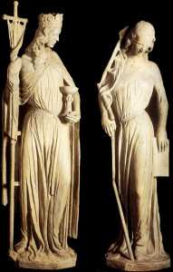

MENAHEMMACINA
Tsoim Limoges


«Le Code de la propriété intellectuelle interdit les copies ou reproductions destinées à une utilisation collective. Toute représentation ou reproduction intégrale ou partielle faite par quelque procédé que ce soit, sans le consentement de l’auteur ou de ses ayants cause, est illicite et constitue une contrefaçon, aux termes des articles L.335-2 et suivants du Code de la propriété intellectuelle.»
This book was produced using PressBooks.com, and PDF rendering was done by PrinceXML.
L'Église à l'épreuve des Juifs: L'abolition d'Amici Israel (1926-1928) © Menahem MacinaAll Rights Reserved, except where otherwise noted


CONTENU
Illustration de couverture vii
Réévaluation des motifs invoqués par le Saint-Ofice pour dissoudre 'Amici Israel'
1
Avant-Propos v
Les fondateurs d'Amici Israel
Les deux promoteurs d'un idéal commun 13
Maria Franceska van Leer 16
Le Père Anton van Asseldonk 32
Deux fondateurs charismatiques qu'il ne faut ni dissocier ni opposer
46
Le décret du Saint-Ofice abolissant l’association Amici Israel (25 mars 1928)
50
Les « justiications » peu convaincantes de la condamnation
56
Essai de discernement des causes immédiates de la disgrâce des 'Amici'
62
Van Asseldonk, prophète bâillonné, ou précurseur méconnu?
79
Motifs allégués par l'Église pour dissoudre 'Amici Israel': un dilemme
88


Quelques reconnaissances de culpabilité par des Pasteurs des Églises
90
Déclaration de repentance de l’Église romaine « Nous nous souvenons »
98
Liturgie de la substitution 105
L'apport précieux des archives vaticanes exploitées par Hubert Wolf
Querelle au Vatican sur l’antisémitisme (1928), H. Wolf
117
« Prions pour les Juifs perides », Hubert Wolf 121
L’avis de la congrégation des Rites, Hubert Wolf
130
Devant le tribunal du Saint-Ofice, Hubert Wolf
138
L’antisémitisme à la manière catholique? Hubert Wolf
163
Prions pour le peuple élu, Hubert Wolf 171
Fruits posthumes de l’initiative prophétique des «Amis d’Israël» et leçons à en tirer
Redécouverte de la relation consubstantielle entre judaïsme et christianisme
179
L'affaire des « Amici »: une mise en garde adressée à la théologie d'aujourd'hui
183
Seule la théologie peut délier ce que la théologie a lié
192



L’Église triomphante toise la Synagogue déchue et aveugle
(Cathédrale de Strasbourg)
vii


RÉÉVALUATIONDESMOTIFSINVOQUÉSPARLE SAINT-OFFICEPOURDISSOUDRE'AMICIISRAEL'
« QuelquessemainesavantlaparutiondudécretduSaint-Ofice, lasuppressiondesAmiciparcedernierfutannoncéeàvan Asseldonk,etonluidemandaunesoumissiontotale,“aveugle”, sans lui communiquer les raisons de cette décision. […]. Quand le cardinal Merry del Val [préfet du Saint-Ofice] entra, van Asseldonk s’agenouillaetprésentasasoumissioninconditionnelle,sans demanderlesraisonsdelasuppression.[…]Pourtant,relatera-t- il,jerestaisansvoixlorsque,unefoisledécretparu,jelusles raisons invoquées. Un des membres du Comité […] vint en pleurant chezlui.TousdeuxontalorsoffertcelaàDieu.Acemoment-là, il réalisa, comme il l’écrit lui-même, que l’Église serait submergée par l’antisémitisme. »
Ramaekers,“DoctorAntonvanAsseldonko.s.crucis1892-1973”, in Clairlieu, Achel, 1978, p. 33.
J’ai consacré, il y a une douzaine d’années, une première étude1
1. « Causes de la dissolution d’Amici Israel (1926-1928) », in Juifs et Chrétiens: entre ignorance, hostilité et rapprochement (1898-1998), textes rassemblés et édités par AnnetteBecker,DanielDelmaire,FrédéricGugelot,Villeneuved’Asc,2002,p. 87-110.Ci-après,lalistedespublicationsconsultéespourréaliseretmettreà jourcetteétude:[1]ComitatusCentralis« AmicorumIsrael »,PaxsuperIsrael, brochurede35pages,enlatin,Rome,mars1925;[2]F.vanLeer,“ Enfacedu Sionisme ”, Bulletin des Missions, T. VII/21, n° 8, Abbaye de Saint-André, Bruges, mars-avril1925,p.233-240;[3]DonEd.Neut,“ Les« Inconvertissables» ”, BulletindesMissions,T.VII/21,n°9,mai-juin1925,p.265-275; [4]S.Fumet, “ « Qu’onleurprêcheIsraël» ”,BulletindesMissions,T.VII/21,n°12,1925, p.369-371; [5]DonEd.Neut,F.vanLeer,A.Fumet,“ Jésus,FilsdeDieuet Israëlite.Les« Amisd’Israël» ”,BulletindesMissions,T.VIII/22,n°2,Abbaye de Saint-André, Bruges, 1926, p. 81-85; [6] Pax super Israel, tract n° 1, 3 pages, Rome,fev./mars1926;[7]OpusSacerdotale:« AmiciIsrael »,Comitatus Centralis Romae, tract n° 2, 3 pages, 13 juin 1926; [8] Don Ed. Neut, “ La Prière


RÉÉVALUATION DES MOTIFS INVOQUÉS PAR LE SAINT-OFFICE POUR
DISSOUDRE 'AMICI ISRAEL'
visantàéluciderlesmotivationsetlescirconstancesde l’abolition, le 25 mars 1928, de la pieuse association de prêtres dénomméeOpussacerdotaleAmiciIsrael,dontlesmembresse vouaient à la prière pour les Juifs et à l’apostolat en vue de leur conversion,etàlaquelleavaientadhéréunefouledeprêtres etunnombrenonnégligeabledemembresduhautclergé. J’estimais que n’était pas crédible le motif, invoqué par le décret dedissolution,selonlequel,aprèsdesdébutsirréprochables, lesAmiciIsraelauraient« adoptéensuiteunemanièred’agiret depensercontraireausensetàl’espritdel’Église,àlapensée
pourlesJuifs ”,BulletindesMissions,T.VIII/23,n°8,1926,p.245-248; [9] Decretumdeconsociationevulgo«AmiciIsrael»abolenda,inActaApostolicae Sedis, vol. XX, 1928, p. 103-104; [10] Don Ed. Neut, “ La suppression des « Amici Israel » ”,BulletindesMissions,T.IX/24,n°3,1928;[11]“Ilpericologiudaico egli« Amicid’Israele »”,LaCiviltàCattolica79,II,Roma,1928,p.335-344; [12]Levie,s.j.,“ Décretdesuppressiondel’Associationdes« Amisd’Israël » ”, NouvelleRevueThéologique,Namur,1928,p.532-537;[13]J.Bonsirven,s.j., “Quelquesremarquessurlasuppressiondes« Amisd’Israël » ”,LaQuestion d’Israël, Paris, n° 24, 6e année, 15 août 1928, p. 2-9; [14] T. Devaux, “ La presse juiveetledécretduSt-Ofice”,LaQuestiond’Israël,Paris,n°24,6eannée,15 août1928,p.27-30;[15]J.Bonsirven,“ Lasuppressiondes« AmiciIsrael »”, Bulletin des Missions, T. IX/24, n° 3, 1928; [16] R. Laurentin, L’Église et les Juifs à Vatican II, Casterman, Paris, 1967, Annexe 2, p. 103-106; [17] C. Hall, “ Les Amis d’Israël ”,revueduSIDIçT.I,n°3,Rome,1968,p.6-10; [18]A.Ramaekers, “DoctorAntonvanAsseldonko.s.crucis1892-1973”,(ennéerlandais)in Clairlieu,Achel,1978,p.14-51;[19]S.Fumet,HistoiredeDieudansmavie, Fayard-Mame,Paris,1978,p.295-303;[20] J.Boly,o.s.c.,“ LePèrevan Asseldonk ”, Journal des Anciens de Sainte-Croix, n° 21, Hannut (Belgique), 1979, p. 3-11; [21] A. Ramaekers, Chronique “ Wien ”, (en néerlandais) in Clairlieu, 38, Achel, 1980, p. 128-130; [22] J. Scheerder, “ Wilhelmus Antonius Van Dinter ”, (en néerlandais) in Clairlieu, 44, Achel, 1986, p. 95-123, 182-235; [23] Johannes CardinalWillebrands,“ TheChurchFacingModernAntisemitism ”,Christian- Jewish Relations, vol. 22, n° 1, 1989, p. 9-10; [24] Id., Church and Jewish People. NewConsiderations,PaulistPress,NewYork/Mahwah,NewJersey,1992,p. 128-129;[25]LievenSaerens,« L’attitudeduclergécatholiquebelgeàl’égard dujudaïsme(1918-1940)»,inR.VanDoorslaer(éd.),LesJuifsdeBelgique.De l’immigrationaugénocide:1925/1945,CREHSGM,Bruxelles,1994,p.31-33; [26] JacquesMaritain,L’impossibleantisémitisme,précédédeJacquesMaritain etlesJuifs,parPierreVidal-Naquet,DescléedeBrouwer,Paris,1994;[27]G. PasselecqetB.Suchecky,L’encycliquecachéedePieXI.Uneoccasionmanquée del’Églisefaceàl’antisémitisme,LaDécouverte,Paris,1995,p.140-144;[28] L.vanBelkom,Chronique“ « AmiciIsrael » ”,inClairlieu,53,Maaseik,1995, p.106-109;[29]Id.,Chronique“ « AmiciIsrael » ”,inClairlieu,54,Maaseik, 1996,p.156-157;[30]Ph.Chenaux,« LesAmisd’Israël »,in« Dujudaïsme auCatholicisme:réseauxdeconversiondansl’entre-deux-guerres »,dansLes convertisauxXIXeetXXesiècles,Artos,Pressesuniversitaires,Arras1996,p. 96-100;[31]Ét.Fouilloux,LesChrétiensfrançaisentrecriseetlibération 1937-1947, Seuil, Paris, 1997, p. 35-39.


RÉÉVALUATION DES MOTIFS INVOQUÉS PAR LE SAINT-OFFICE POUR
DISSOUDRE 'AMICI ISRAEL'
desSaintsPèresetàlaliturgie ».Enconséquence,mefondant massivement sur les écrits des contemporains et des biographes lamandsdusecrétairedel’association,AntonvanAsseldonk, procureur à Rome de l’ordre des Croisiers, j’avais alors supposé quec’étaientlezèledureligieuxpourlepeuplejuif,estimé démesuréparsessupérieurs,etsoncomportementpeu conformeauxstandardsdelaviereligieused’alors,qui constituaient les vrais motifs de la suppression subite et brutale de cette association, que rien ne laissait présager.
En2008,alorsquej’avaisquittélarecherchedepuisplusieurs années, paraissait l’ouvrage séminal du professeur Hubert Wolf, intituléLePapeetleDiable2,quiallaitremettreenquestion bonnombred’idéesreçuesetdespéculationssurl’Égliseetla Curie romaine de la première moitié du XXe siècle. Axé, comme l’indiquesonsous-titre– « PieXII,leVaticanetHitler:les révélations des archives » –, sur le problème brûlant de l’attitudedePieXIIetdel’Églised’alors,faceaurégimenazi, cetouvrageprésentaitl’avantageimmensesurlestravaux antérieurs d’avoir pu bénéicier de l’examen fructueux d’archivesecclésialesjusque-làinaccessibles.Cen’estque récemmentetaprèsunelectureapprofondiedecetouvrage séminal que j’ai cru utile de revisiter la problématique.
Considérantque,mêmesimaconclusiond’alorsétaiterronée ou trop aléatoire, le matériau que j’avais analysé était toujours utile pour éclairer, sous un jour différent, cet événement et ses conséquences,j’aidécidédeconserverl’essentieldumatériau de mon étude précédente, en le contextualisant davantage, à la lumière des éléments novateurs de la recherche du prof. Wolf. Je réserve à ma Conclusion mise à jour la synthèse que je propose defaireentrel’analysedocumentaireduprofesseurWolf, extrêmementfécondeencequiconcernelefonctionnement internedesplushautesinstancesdel’Égliseetleprocessus deprisededécisionenmatièredogmatiqueetdisciplinaire,et
2. Hubert Wolf, Papst und Teufel. Die Archive des Vatikan und das Dritte Reich, C. H.BeckVerlag,München2008.L’ouvrageaétérapidementtraduitenfrançais sous le titre Le pape et le diable. Pie XII, le Vatican et Hitler: les révélations des archives, CNRS éditions, Paris, 2009.


RÉÉVALUATION DES MOTIFS INVOQUÉS PAR LE SAINT-OFFICE POUR
DISSOUDRE 'AMICI ISRAEL'
monapprocheplus« personnaliste »etentoutcasdavantage centrée sur les protagonistes de cette affaire, que les documents romains oficiels laissent dans l’ombre.


AVANT-PROPOS
Cetteinitiativen’étaitpaslaseuledesonespèce1,etelle n’aurait probablement jamais retenu l’attention des chercheurs si elle n’avait été abolie, de manière expéditive et apparemment arbitraire,dès1928,soitdeuxannéesseulementaprèssa fondationoficielle,etcemalgrélenombreetlaqualitédeses adhérents,aurangdesquelsiguraientdenombreuxmembres delahiérarchieecclésiastique,commeentémoigneleStatus operisproannoexacto(situationdel’œuvrepourl’année écoulée),documentpublié,début1927,parlesresponsables del’œuvre.Ysontrecensésdix-huitcardinaux,deuxcents archevêquesetévêquesetdeuxmilleprêtres.Parmiles cardinaux,onremarquedesnomsconnus:vanRossum, Gaspari,Faulhaber,etc.Latotalitédel’épiscopatdesPays-Bas avait adhéré à l’Association, ainsi qu’un nombre impressionnant d’évêques du monde entier. Le comité de patronage était présidé parlePèreAbbébénédictinDomBenoîtGoriador
2,Mgr
1. Entreautres:laCongrégationdeNotre-DamedeSion,fondéeen1852; l’Archiconfrériedeprièrespourleretourdupeupled’Israël,fondéeen1905, etsabrancheanglo-américaine,laCatholicGuildofIsrael.Côtéprotestant, ondénombrait,àlainduXIXesiècle,aumoinsunetrentainedesociétés dédiéesàlamissionauprèsdesJuifs,cf.Rev.W.T.Gidney,TheJewsandtheir Evangelization, London, 1899, p. 91-102. 2. Dansunarticlede1921,intitulé“Aproposdela«questionjuive»”(inJacques Maritain,L’impossibleantisémitisme,précédédeJacquesMaritainetlesJuifs,par PierreVidal-Naquet,DescléedeBrouwer,Paris,1994op.cit.,p.67),Maritain signale que Dom Gariador a «participé à la neuvaine de 1920» pour la conversion des Juifs.
v


AVANT-PROPOS
Vanneuville en était le vice-président, et le Père van Asseldonk, procureurgénéral,àRome,del’OrdredesCroisiers,le secrétaire etl’infatigablepropagateur;parmilesmembresde ceComitéiguraientlesPèresGarrigou-Lagrange,dominicain, Damien,del’OrdredesCroisiers,Himmelreich,del’Ordredes Franciscains, et Dom Chuard, chanoine régulier de l’Immaculée Conception.Àl’époquedeladissolution(mars1928),avaient adhéré à l’Association: dix-neuf cardinaux (dont Merry del Val, vanRossum,Früwirth,PompilietPerosi,membresduSaint- Ofice), près de trois cents évêques et environ 3.000 prêtres3.
Commepourd’autrescassimilairesdontlescirconstancesne sont pas encore élucidées – en raison principalement du secret hermétique qui entoure les décisions disciplinaires de l’autorité ecclésiastique, aggravé par l’impossibilité d’accéder aux archivesvaticanesdansdesdélaisraisonnables–,ladisgrâce ecclésiale, aussi subite qu’inattendue, qui frappa cette association,sansquelesmotifsalléguéspoursasuppression apparaissentconvaincants,asuscitél’intérêtdesspécialistes, etcelapourplusieursraisons,dontlaprincipalesemblebien êtrel’évolutionpositivedel’attitudetraditionnelledel’Église àl’égarddesJuifsdepuisVaticanII.Chezlesspécialistes, théologiensethistoriensdel’Église,elles’estaccompagnée d’un accroissement et d’un approfondissement de l’investigation documentaire, ne serait-ce qu’aux ins d’examen de la pratique ecclésiale antérieure en la matière. Autre facteur non négligeable: la multiplication des études monographiques entousgenres,consacréesàdessujetsenrapportdirectou
3. Des intellectuels chrétiens célèbres s’intéressèrent également à ce mouvement aupointdes’yafilieroud’envisagerdelefaire.CefutlecasdeStanislas Fumet,rédacteuràlarevueLesLettres,quiconsacraplusieurspagesdeson autobiographie à Amici Israel (cf. S. Fumet, Histoire de Dieu dans ma vie, Fayard- Mame,Paris,1978,op.cit.,p.295-303).TelaussiPaulClaudel,dansunelettre qu’iladressaitle18août1926àAnioutaFumet:« J’ailuavecémotiondans unerevuemissionnairebelgelabellelettrequevousavezécriteausujetdela nouvelle Société “les Amis d’Israël” dont je serais heureux et ier de faire partie. Cemouvementesttrèsbeau[…]ondiraitqu’unvoileselèvedesyeuxdela chrétienté et qu’elle commence à voir dans Israël non plus seulement le Déicide maisleChristophore,l’Abrahamqui,pourlesalutdel’humanité,aimmolé sonilsunique »,citédansPaulClaudel-StanislasFumet,Correspondance 1920-1954. Histoire d’une amitié, L’Âge d’Homme, Paris, p. 57.
vi


AVANT-PROPOS
indirectavecla« questionjuive »,etcomportantdesexcursus oudesextraitsdedocumentsinéditsoupeuconnus,denature à jeter quelque lumière sur la manière, généralement méiante, voireméprisante,dont,depuisdessiècles,onpercevait,en Chrétienté,lesJuifsetleurscroyances.Acetégard,onne sauraitsous-estimerlerôlequ’apujouerlaredécouvertede lapremièrecondamnationoficielledel’antisémitismeparle Magistère,laquelleigureprécisémentdanslesattendusdu décretdesuppressiondel’associationAmiciIsrael(25mars 1928), et sur laquelle je reviendrai plus loin4.
Sans minimiser l’apport des travaux antérieurs, j’ai tenté, dans ma monographie de 2002 – que je mets ici à jour –, de jeter un éclairage différent sur cette association, sur base d’un réexamen minutieux de documents déjà connus, mais aussi en m’inspirant largementdedeuxlongsarticlestrèsdocumentés,rédigésen néerlandais par les Pères croisiers A. Ramaekers et J. Scheerder, qui ont eu accès aux papiers personnels de van Asseldonk et aux archivesdel’Ordre,dontunegrandepartien’apasencoreété exploitée par les chercheurs5.
Avantmêmedetenterd’éluciderlescirconstancesetles motivations qui avaient amené l’autorité ecclésiastique à mettre in à une expérience aussi prometteuse, j’estimais qu’il convenaitdemieuxfaireconnaîtrelesdeuxpersonnalités majeuresquiavaientmarquédeleurempreintetantl’esprit spéciique,quelesmodalitésparticulièresdel’apostolaten directiondesJuifs,propresàl’idéald’AmiciIsrael.C’estàquoi je m’employai alors dans la Première partie de cette étude.
Lesrésultatsdecettebrèveenquêtefondamentaleayant déblayéleterrain,etpermisdefairejustice,aupassage,d’un certain nombre d’idées reçues et de préjugés de nature à biaiser
4. Decretum de consociatione vulgo «Amici Israel» abolenda (25 mars 1928), in Acta Apostolicae Sedis, vol. XX, 1928, p. 103-104. 5. Cf. J. Scheerder, “Wilhelmus Antonius Van Dinter”, (en néerlandais) in Clairlieu, 44,Achel,1986,p.95-123,182-235,op.cit.;etA.Ramaekers,“DoctorAnton van Asseldonk o.s. crucis 1892-1973”, (en néerlandais) in Clairlieu, Achel, 1978, p.14-51,op.cit.CedernierfutunconfrèreetunamiduPèreAntonVan Asseldonk.
vii


AVANT-PROPOS
l’objectivitédelarecherche,voired’orientersesrésultatsde manièreàjustiierunethèsepréalable,enescamotantles élémentsobjectifssusceptiblesdel’inirmerouàlanuancer considérablement,j’estimaisêtredavantageenmesurede revisiterlesthéoriesreçuesconcernantlesmotifsréelsdela suppression de cette pieuse Association. C’est sur cette base que j’ai rédigé la Deuxième partie de cet exposé.
Enin, dans une Conclusion générale, je proposais, comme on le lira plus loin, ma propre tentative d’élucidation de cette affaire complexe qui, aujourd’hui encore, laisse perplexes historiens de l’Église et théologiens.
Jemerendaiscomptequ’ileûtétésouhaitabledeprocéderà un tour d’horizon des mentalités et des conceptions religieuses dumilieucatholiqueambiant,engénéral,etecclésial,en particulier,pourmieuxresituer,etéventuellementrelativiser desévénementsetdescomportementsplutôtembarrassants, voirechoquantspourlesmentalitésd’aujourd’hui.J’yai inalementrenoncépournepasdonneràmonenquêtedes dimensions indues qui l’eussent rendue impropre à la publicationdansunerevue.Jemesuistoutefoisefforcéde palliercettedéiciencepardesévocationsponctuellesdu contextehistoriqueetreligieuxdanslequels’estproduit l’événement qui fait l’objet de cette étude.
viii


LESDEUXPROMOTEURSD'UNIDÉALCOMMUN
Silesgrandeslignesdelacréationetlesmotifsoficielsde lasuppressiondel’associationdesAmicisontdenotoriété publique, par contre, faute de pouvoir consulter le dossier (qui, àl’époqueoùjerédigeaismonenquête,faisaitpartiedes archivesvaticanesencoreinaccessibles1),onneconnaissait, desraisonsquiontamenél’autoritéecclésiastiqueàprendre cettesanction,quecequ’endisaientlescommentairesde l’époque,plusoumoinstendancieuxoumalinformés.Ces derniers sont sans doute grandement responsables du discrédit rétrospectifdontfurentvictimesMariaFranceskavanLeer, catholique hollandaise convertie du judaïsme, zélée propagandiste de l’œuvre, et, dans une moindre mesure, le Père AntonvanAsseldonk,sonsecrétaireetfactotum.Tandisque tombaitsurlereligieuxlachapedeplombdelaréprobation silencieuse qui était d’usage alors, dans les milieux ecclésiastiques,àl’égarddeceuxquiavaienteul’infortune d’encourirunesanctiondelapartduSaint-Ofice,F.vanLeer devintleboucémissairequel’onchargeadetoutesles exagérationsetdéviations,réellesousupposées,reprochéesà
1. Onsaitquel’ouverturedesarchivesvaticanessefaitparpontiicat.Ainsi, n’étaientconsultablesalors,saufdérogationexceptionnelle,quelesarchives relativesaupontiicatdeBenoîtXV(1914-1922).J’écrivais,àcepropos:« Les prochaines archives accessibles seront celles du pontiicat de Pie XI (1922-1939).Encequiconcernecellesd’AmiciIsrael,ilfaudrasansdoute attendrelesannées2020-2030.Surleshabitudesenmatièred’ouverturedes archivespontiicales,consulterlespagesinstructivesqu’yconsacreE.Poulat, dans sa préface à G. Passelecq et B. Suchecky, L’encyclique cachée de Pie XI. Une occasion manquée de l’Église face à l’antisémitisme, La Découverte, Paris, 1995, p. 25-26.»


MENAHEM MACINA
l’associationAmiciIsrael.Lespassagessuivantsdulivrede l’écrivainStanislasFumetsonttoutàfaitreprésentatifsdecet état d’esprit2:
« …cettejuiveconvertie…avaitobtenuledroitdeparler dans des églises de Hollande ou d’Allemagne pour prêcher à sa manière. Elle avait un grand tempérament apostolique et elle avait essayé de nous communiquer son enthousiasme pour la cause du judéo-christianisme […] Elle était sincère, dynamique, électrisante. Elle galvaniseraplusieursprêtresnéerlandaisquiinirentunpeu désaxés. Mais nous aimions sa vitalité, son audace judaïque,saconianceenDieu.Néanmoins,nousne pensions pas qu’on lui accordât à Rome un pareil prestige. »
Et,ànouveau,àproposdescausesdeladissolutionde l’Association3:
« LesAmisd’Israël,cetteassociationqu’avaientfondée autourdeFranceskavanLeerdeuxprêtreshollandais,età laquellenousappartenions4,perdirentleurcréditauprès duVaticanen1926.LecardinalVanRossumlessoutenait desonmieux,PieXIleuravaittémoignésasympathie […]Maisilestvraisemblablequelesthéologiensqualiiés d’ “intégristes”, considéraient comme aventureuse la doctrineprêchéeavecuneexaltationquinenouséchappait guère,ànousautres,deFrance,etneseprivaientpas d’éplucherlestextesdesAmisd’Iraëlsanstropde bienveillance.Nousn’enpensionspasmoinsquenos Hollandaisfaisaientdel’inlationmystiqueetrisquaientde sortirdesrails[…]Sibienquel’AssociationdesAmis
2. S. Fumet, Histoire de Dieu dans ma vie, Fayard-Mame, Paris, 1978, op. cit., p. 300. Les italiques sont de moi. 3. Id., Ibid., p. 301-302. Les italiques sont de moi. Fumet fait, de F. van Leer, l’âme de l’Association, ce qui est tout sauf établi. 4. Cette précision intrigue J. Boly (art. cit., note 1, ci-dessus, [20]). Et de fait, on a vu, plus haut, qu’Amici Israel était une « œuvre sacerdotale ». Mais la dificulté disparaîtsil’ontientcomptedelaprécisionsuivante,quel’ontrouvedans l’article de A. Ramaekers, “Doctor Anton van Asseldonk o.s. crucis 1892-1973”, (ennéerlandais)inClairlieu,Achel,1978,op.cit.,p.18):« Dansplusieurs diocèses furent créées des piae uniones avec les Amici Israel ».


L'ÉGLISE À L'ÉPREUVE DES JUIFS: L'ABOLITION D'AMICI ISRAEL (1926-1928)
d’Israël, un jour moins beau, fut dissoute. Il en était mieux ainsi,carnosdeuxprêtreshollandais,legentilabbé Klinkenbergetsurtoutl’excellentprêtrequ’étaitleP.Van Asseldonk, président de l’Association [en fait, il en était le secrétaire], commençaient par trop à se sentir prophètes. »
Il est étonnant que ces deux textes sommaires aient pu servir de matériau de base, évoqué ou inavoué – et parfois unique –, à la plupartdestravauxconsacrésàl’histoiremalheureused’Amici Israel.
Faisons donc le point pour ce qui est de F. van Leer d’abord, et du P. Van Asseldonk ensuite.


MARIAFRANCESKAVANLEER
Née en 1892, de bonne famille juive néerlandaise, Franceska est d’abordséduiteparlesidéauxpaciistesdesrévolutionnaires spartakistesqu’ellepartageaupointdeparticiper,auxcôtés deKurtEisen,àsesaffrontementsaveclepouvoir,etdese lierd’amitiéavecRosaLuxembourg.Arrêtée,etcondamnéeà mort, elle se promit de croire en Dieu, si elle en sortait vivante. Relâchée,elleseconvertitaucatholicismeen1919,àMunich, etétudiamême,sousladirectionduthéologienfranciscain hollandaisLaetusHimmelreich,quideviendraplustard(est-ce un hasard?) l’un des membres fondateurs de l’association Amici Israel1. On sait que, par la suite, elle décida de consacrer sa vie àlaconversiondesJuifs2.Fauted’avoireuaccèsàdesétudes spécialiséessurcepoint,siellesexistent,jesuis,aujourd’hui encore,peuaufaitdecequimotivasadémarche,etencore moinsdesraisonsetdescirconstancesdesabrèveincursion en Palestine, en novembre 1924, où elle enseigna le catéchisme dansunkibboutzavantd’êtrecontraintedefuirlepays,trois mois plus tard, du fait de ses activités missionnaires3. Ce qui est sûr, c’est qu’elle était fascinée par le sionisme, qu’elle idéalisait
1. L’essentieldecesinformationsprovientdel’articlede C.Hall,“LesAmis d’Israël”, revue du SIDIC, T. I, n° 3, Rome, 1968, op. cit., p. 8 2. Cf.S.Fumet,HistoiredeDieudansmavie,Fayard-Mame,Paris,1978,op.cit.,p. 300. 3. Cf. Lieven Saerens, «L’attitude du clergé catholique belge à l’égard du judaïsme (1918-1940)», in R. Van Doorslaer (éd.), Les Juifs de Belgique. De l’immigration au génocide:1925/1945,CREHSGM,Bruxelles,1994,op.cit.,p.31.Cechercheura utilisé un manuscrit autobiographique auquel je n’ai pas eu accès: [F. Van Leer], Mijn reis naar Palestina [Mon voyage en Palestine], 1927 (manuscrit, archives M. Rookmaker-van Leer).


L'ÉGLISE À L'ÉPREUVE DES JUIFS: L'ABOLITION D'AMICI ISRAEL (1926-1928)
naïvement,témoinl’articlevibrantqu’elleadressait,en1925, à la revue des moines bénédictins de St André (Belgique), pour plaider la cause de ce mouvement4, dans un style dithyrambique5:
« Qui oserait dire que les groupements sionistes sont moins littéralementcommunautairesquelesreligieuxcatholiques quiobserventsévèrementlasaintepauvreté?Quioserait prétendrequecesontdedangereuxbolcheviquesqu’on doitcontrecarrerpartouslesmoyens?Quioseraitdire celaaprèsavoirétéletémoin,fût-cependantunmois,de l’amour du prochain qui règne dans les colonies juives? »6
C’estlelieudepréciserqueF.vanLeern’étaitpaslaseule, parmi les catholiques, à voir un signe de la Providence dans les événementspolitiquesd’alors,dontleplusretentissantavait étélaDéclarationBalfour(1917),parlaquellel’Angleterre,qui exerçaitalorslemandatdelaSociétédesNationssurla Palestine, avait reconnu aux Israélites exilés le droit de créer un « Foyerjuif »surlaterredeleursancêtres.Cetteconcomitance del’engouementcatholiquepourl’œuvredeconversiondes Juifsetduphénomènesioniste,sembledenatureàjeterune lumière inattendue sur l’arrière-fond idéologique, voire mystique, de l’idéal dont étaient animés les fondateurs de Amici Israel.
Ce« sionismecatholique »ambiantaétébrièvementanalysé parChenaux7.Cechercheurapertinemmentmisenlumière lerôlemajeurquejoua,dansladiffusiondesidéauxdeAmici
4. Cf.F.vanLeer,“EnfaceduSionisme”,BulletindesMissions,T.VII/21,n°8, Abbaye de Saint-André, Bruges, mars-avril 1925, op. cit. 5. Cf. Ibid., p. 237-238. Les italiques sont de moi. 6. On saisit ici, sur le vif, la perception romantique qu’avait cette Occidentale, des rapports humains directs, familiers, dénués de conventions sociales, qui avaient plusàvoiraveclacamaraderiecommuniste,qu’avec« l’amourduprochain »; ils sont restés longtemps l’apanage de la société kibboutzique, et ont inlué sur le comportement de l’ensemble de la société israélienne moderne, comme on le perçoit encore aujourd’hui, quoique de manière fort atténuée. 7. Chenaux,« LesAmisd’Israël »,in« DujudaïsmeauCatholicisme:réseauxde conversiondansl’entre-deux-guerres »,dansLesconvertisauxXIXeetXXe siècles, Artos, Presses universitaires, Arras 1996, p. 96-100.


MENAHEM MACINA
Israel, le Bulletin des missions de l’abbaye bénédictine de Saint- André-lez-Bruges.Cesmoines,impressionnésparl’expérience dumissionnairelazaristeVincentLebbe,quis’étaitfait entièrementChinoisaveclesChinois,etétaitdevenuun familierdel’abbayedepuissonretourdeChineen1920,en voyaientunerépliquedanslesconceptionsdesAmici,qui prônaientlerespectdelajudéitédesJuifsetvoyaient,dans l’entreprisesioniste,unmilieufavorableàuneinculturation juivedelafoichrétienne,envuedelacréationd’une« Église juive catholique ».
CequeChenauxlivredel’étatd’espritdedomEdouardNeut, directeurduBulletindesmissions,nelaissepasdejeterune lumièresurlephénomènemalconnuqueconstituaitce « sionisme chrétien »:
« Retraçantl’histoiremouvementéedupeuplejuifetde sesrapportsconlictuelsaveclachrétienté,lebénédictin envenaitàconstaterlaconcomitanceauXIXesiècled’un double mouvement: celui d’émancipation [des Juifs], avec lesloisvotéesdanslesdifférentspays,et[celui]de conversion,grâcenotammentàl’essordelacongrégation deNotre-DamedeSion,fondéeparlePèreThéodorede Ratisbonne[unconvertidujudaïsme].Laleçonqu’ilen tiraitétaitlimpide:“placésdanslasociétésurunpied d’égalitéaveclesautrescitoyens”,lesjuifsdevenaient ‘convertissables’[…]L’espoir,auXXesiècle,portaitun nom:lesionisme.Lebulletinavaitpublié,dansson numérodemars-avril1925,unelongueapologiedece mouvementparMariaFranciscaVanLeer,l’inspiratrice des“Amisd’Israël”,appelantleschrétiensànepasse méprendre sur le sens de ce retour en Palestine.
F. van Leer écrivait en effet:
« LebutdecesJuifsn’estpasdenousopprimer,nous Chrétiens. Ils cherchent la réalisation de leur idéal. Sans le savoir, ils cherchent le Christ. Et ils Le trouveront dans Son pays et leur pays natal. »


L'ÉGLISE À L'ÉPREUVE DES JUIFS: L'ABOLITION D'AMICI ISRAEL (1926-1928)
Chenaux poursuit:
« Faisant sien ce point de vue, dom Neut se prenait à rêver d’ “une Église catholique juive de Palestine”, composée de “prêtresetlaïcsderacejuivevivantpleinementlavie religieusechrétiennedanslecadredelavienationale israélite”, mais aussi de “communautés monastiques, dont lesmembresseraientdesjeunesgensd’Israëletqui pratiqueraient vis-à-vis de tous, des juifs catholiques et de ceux qui ne le sont pas, cette forme primitive de la charité etdel’apostolatquis’appelleaujourd’huil’hospitalité bénédictine”.Cequepoursuivaientlesmoinesbelgesde l’abbayedeSaint-André,trèsmarquésparl’inluenceet lesexpérienceschinoisesdeleurcompatriotelazariste VincentLebbe,devenuunfamilierdel’abbayedepuisson retourdeChineen1920,cen’étaitrienmoinsquela chimèred’un“sionismechrétien”.Ellelesamenatout naturellementàentrerencontactaveclesdirigeantsdu mouvementsionisteétabliàGenève.Cesderniers,avides d’unecertaine“reconnaissance”delapartdesmilieux catholiques,nepouvaientqu’êtresensiblesàunetelle “marqued’intérêt”(AlbertCohen,lettredatéedeGenève du 17 mars 1926, archives Maritain). »
Et Chenaux de citer l’expression instructive de la sympathie de domNeutpourlacausesioniste,tellequ’elles’exprimedans l’extraitsuivantd’unelettrequelebénédictinadressaitau dirigeant sioniste Albert Cohen:
« Vouscomprendreztoutmonsentimentlorsquejevous dirai qu’étant moine et vivant quotidiennement en contact individueletencontactsocialaveclespsaumes,les Prophètes – avec l’Évangile – avec toute la littérature dont a vécu le peuple d’Israël, on ne peut se retenir de l’ardent désir de voir ce peuple reprendre contact avec ses origines et avec sa vie nationale propre, qui doit être le support de toutes les réalisations de son puissant génie. L’atmosphère d’enthousiasmedanslaquellelescolonsjuifstententen Palestine une expérience sociale qui, si je comprends bien,


MENAHEM MACINA
ne fut jusqu’ici réalisée avec succès que dans les monastères,accentueencorelemouvementdesympathie qui me porte à suivre vos efforts et à les aimer. »8
Rappelonsqu’àl’époque,certainsmilieuxchrétiensavaientvu danslaconversionaucatholicismedeHansHerzl,leilsdu fondateurdumouvementsioniste(quidevaitsesuicider, quelquesannéesplustard),unesortedegagequelesionisme, convenablement accompagné et encouragé par l’Église, pouvait créer,mêmesiteln’étaitévidemmentpassonbut,les conditionsfavorablesàun« retourd’Israël »,c’est-à-direla conversion.
LesFumet,amisdesMaritain,partageaientcesespérances. Selon Chenaux,
« Stanislas Fumet confessait que rien ne pouvait l’émouvoir davantage que ce qu’on appelle la “conversion” d’un Juif… »;
et de citer cet extrait d’une lettre de Fumet adressée au Bulletin desMissionsetpubliéeinextensoparcedernier,dansson numéro de novembre-décembre 1925:
« UnJuifquisefaitchrétienneseconvertitpasàautre chosequele[sic]judaïsme;seulementilpassed’un judaïsmeincomplet,d’unjudaïsmeendevenir,àun judaïsme accompli. »
Certainschrétiens,telMaritain,voyaientdanslesionismele débutd’unprocessusderenaissancenationaledontpourrait proiter le christianisme pour évangéliser ces « brebis perdues ». C’est ainsi qu’à la in de l’année 1925, il écrivait ces lignes à un proche collaborateur de Pie XI, auquel il adressait un rapport sur le sionisme, destiné au Souverain Pontife:
« Israëlrenaît…Pournous,ilestcapitaldesavoirsicette nouvelleformationethniqueseraounonabsolument
8. Lettre du 12 avril 1926, archives Maritain.


L'ÉGLISE À L'ÉPREUVE DES JUIFS: L'ABOLITION D'AMICI ISRAEL (1926-1928)
ferméedèsleprincipeàtoutepénétrationdelafoidu [sic]Christ.Enin,onpeutvoirdanscesévénementsun accomplissement remarquable des prophéties, qui commande le respect et la plus grande attention […] Je sais d’autre part qu’un témoignage catholique de sympathie pour lesionismeauraitunegrandeinluencesurbiendesjeunes JuifstravaillésparlagrâcedeDieu,etquiseraientprêtsà demanderlebaptêmes’ilsnepensaientrenierpar-làles intérêts de leur race et de leur nationalité. »9
LerapportdeMaritainavaitpourbutdedemanderl’accord dePieXIconcernantl’implication,fût-ceuniquementàtitre privé,d’éliteschrétiennesdans« ungroupespécialcatholique pro-sioniste ».ParlamédiationduP.Hugon,undominicain qu’ilconsultaitvolontiersenmatièrespirituelle,Maritain s’enquéraitégalementdesavoirsileSaint-Pèreconsentirait àaccorderuneaudienceprivéeauDocteurJacobson,délégué àParis,pourl’Europe,duComitéexécutifdel’organisation sioniste. La réponse du Souverain Pontife, transmise à Maritain par le P. Hugon, après l’audience papale (15 novembre 1925), fut plutôt tiède10:
« Le Pape craint qu’on se serve des catholiques ou du Saint Siègepourfairetriompherlacausesioniste,et,“sans porter aucune défense, il conseille la réserve” [italiques dans l’original]. […] On comprend que dans ces conditions “une visite du Dr Jacobson au Vatican ne semble pas opportune” etquesi“lepapen’entendpasrefuserabsolument l’audience, il préfère qu’elle ne soit pas demandée”. »
Cequinefaitguèrededoute,c’estquel’engouementpro- sionistedecertainscatholiquesdel’époquen’étaitpaspartagé parleSaint-Siège.Quelquesannéesaprèslapublicationdu présenttravail,unhistorienaméricainapourtanttenté
9.Lettred’octobre1925,adresséeauPèreHugon,dominicain,professeurà l’Angelicum,quiavaitlaconiancedePieXI.Jecited’après«Rapportsurle sionisme adressé à Pie XI (1925) », dans Cahiers Jacques Maritain, 23, « Regards sur Israël », Kolbsheim, octobre 1991, p. 27 s. Les italiques sont de moi. 10. Ibid., p. 30.


MENAHEM MACINA
d’accréditercetteopinion11,eninsistantlourdementsurun entretien,quieutlieuenmai1917,entreledirigeantsioniste SokolovetBenoîtXV,àproposdusionisme,etilrapporteles proposqueLapide– sasourceprincipale,particulièrementen ce domaine -, attribue au pape Benoît XV12:
« Commel’histoireachangé!1900annéesontpassé depuis que Rome a détruit votre pays, et maintenant Votre Excellence vient à Rome en vue de restaurer ce pays. »
ToujoursselonDalin–quisuitencoreLapideàlalettre -,le papeaurait« écoutéattentivementl’exposéduprogramme sioniste », que lui it Sokolov, et l’aurait « qualiié de providentiel,letrouvantenaccordaveclavolontédivine ».Il auraitmêmeajouté,àproposdelaquestiondesLieuxSaints: « Oui, oui, je crois que nous ferons de bons voisins »13.
Mais Dalin omet de relater les propos du même Lapide sur la in de cette belle histoire14:
« […] les porte-parole du Vatican informèrent les représentantsdumouvementsioniste–encoresousle
11. DavidDalin,PieXIIetlesjuifs,leMytheduPaped’Hitler,éditionsTempora, Perpignan (France), 2007, p. 65-66. (Original anglais: The Myth of Hitler’s Pope. How Pope Pie XII rescued Jews from the Nazis, Regnery Publishing, Inc. New York, 2005). On peut sérieusement douter de la connaissance du sujet d’un auteur qui commetdeuxerreursdetaille.Ilécriteneffet:« En1938,aumomentmême oùlepremierministreNevilleChamberlaintentaitd’apaiserHitleràMunich, PieXIapparutcommel’unedesraresautoritésenEuropeàexplicitement condamnerl’antisémitisme.Enmars1938,ildissoudral’Associationdes"Amis d’Israël"(AmiciIsraël[sic]),uneorganisationcatholiquequi,depuisde nombreusesannées,s’efforçaitdeconvertirdesjuifsetquiavaitcommencé àpublierdesbrochures"manifestantdessentimentsdehaine"enverslepeuple juif. »Outrelastupéianteerreurdedate(1938aulieude1928),onnotera l’atterrantcontresensdontDalinlui-mêmedévoilenaïvementl’origineen commentant sonafirmationencestermes:« Onpeutliredansledécret pontiical de dissolution: "Parce qu’il réprouve toutes les haines et animosités entrelespeuples,leSiègeapostoliquecondamneauplushautpointlahaine contrelepeupleautrefoischoisiparDieu,cettehainequ’aujourd’huiona coutumededésignersouslenomd’antisémitisme".»(Op.cit.,p.69-70,les italiques sont de moi). 12. P. E. Lapide, Rome et les Juifs, Seuil, Paris, 1967, p. 124-125. 13. Cf. Id., op. cit., p. 66 = Lapide, op. cit., ibid. 14. Lapide, op. cit., p. 125-126. Les italiques sont de moi.


L'ÉGLISE À L'ÉPREUVE DES JUIFS: L'ABOLITION D'AMICI ISRAEL (1926-1928)
pontiicatdeBenoîtXV –queleSaint-Siègenedésirait pasaider“laracejuive,pénétréed’unespritrévolutionnaire etrebelle”,àobtenirlegouvernementdelaTerreSainte. Induitenerreurparplusieursdesesreprésentantssurles lieux,lepapeafirma,le8juin1921,quelesortdes chrétiensenPalestineétaitpiremaintenantquesousle gouvernementturçetappela“lesgouvernementsdes nationschrétiennes,mêmenoncatholiques”,àadresser “uneprotestationcommuneàlaSociétédesNations”.(Acta Apostolicae Sedis, XIII, 282-283). »
Pire, dans une allocution au Consistoire en date du 13 juin 1921, lepapeBenoîtXVlui-mêmeselaissaaller–choserarissime dansdestextesoficielsdel’Eglisecatholique –àdespropos diffamatoires visant à discréditer les sionistes. Extrait:
« Quandlestroupesalliéeseurentunefoisdeplusremis les Saints Lieux au pouvoir des chrétiens, Nous partageâmes de tout cœur l’allégresse générale des idèles;maiscettejoieétaitimpuissanteàdissiperla crainte, manifestée alors dans Notre allocution consistoriale,devoirunsuccèséclatantetheureuxensoi aboutiràassurerdésormaisauxIsraélitesenPalestinela prépondéranceetunstatutprivilégié.Cettecrainte,les événementsl’ontprouvé,n’étaitpasvaine.Ilesteneffet manifesteque,loindes’améliorer,lasituationdes chrétiens en Terre Sainte est devenue plus dificile encore quejadis,àraisondesnouvellesloisetinstitutions politiquesqui– nonparlavolontédeleursauteurs,mais en fait incontestablement – tendent, en faveur des Israélites,àenleverauchristianismelapositionqu’ilya toujoursoccupéejusqu’ici.C’estcebutquepoursuivent biendespersonnesparleurseffortsintensesenvuede dépouillerlesLieuxSaintsdeleurcaractèresacréetdeles transformerenlieuxdeplaisirenyimportantlesattractions defêtesmondainesettouslesappâtsdelasensualité, frivolitésqui,déplorablespartoutailleurs,sontencoreplus


MENAHEM MACINA
déplacésdansunerégionparseméedesplusvénérables monuments religieux15. »
Pour donner une idée de la passion et de l’ignorance grossières quicaractérisaientl’entouragedupapeetsesinformateursen cettematière,iln’estquedelirecemorceaud’anthologie, extraitd’uneconférencequedonna,en1922,àRome,le Patriarche latin de Jérusalem, Mgr Luigi Barlassina16:
« …Lebutdusionisme,telqueleconfessentlessionistes eux-mêmes, est le rétablissement du peuple d’Israël sur la terre de leurs ancêtres et l’expulsion des autres nationalités quis’ysontétabliesaucoursdessiècles.Donçlebutdu sionismeestlaconquêtedelaPalestine.Pouryparvenir, les sionistes ne reculent devant aucun moyen. Protégés par les autorités britanniques – on sait, en fait, que Sir Herbert Samueletpresquetouslesfonctionnairesanglaissontdes sionistesmilitants-,lesdirigeantssionistessontenréalité lesmaîtresdelaPalestine:ilsdictentlaloietimposent leurvolontéàtoutelapopulation,catholique,musulmane, etjusqu’auxisraélitesorthodoxes,soumisàmilleabusde pouvoir de la part de leurs coreligionnaires. Outre l’autorité, ilsdisposentdebeaucoupd’argentenvoyéparlescomités sionistes de tous les pays, spécialement de ceux des États- unis et de Grande-Bretagne, et avec cet argent, ils achètent lesterresdespauvresmusulmansruinésparlaguerre,ils fondentdesécolesetquelquefoiscorrompentaussiles consciences.Enbref,commeleprouventdesrapports iables,leproposdessionistesestd’exproprierpeuàpeu lesArabesetleschrétiensetdeprendreleurplace.Pour accroître le nombre de leurs coreligionnaires, on a autorisé l’immigrationenPalestinedesJuifsrusses,presquetous
15. OriginallatindansActaApostolicaeSedis,AnnusXIII,vol.XIII,n°8,18juin 1921,p.281-284.TraductionfrançaiseenlignesurmonsiteDebrieing.org (http://www.debrieing.org/31602.html). 16. CompterendudelaconférencedonnéeauCollègeStJosephdeRome,le11 mai 1921, paru dans La Civiltà Cattolica, II (1921) p. 461-462. Je traduis d’après letexteitalienquiiguredansGerusalemmeneiDocumentiPontiici,acuradi Edmond Farhat, in Studi Giuridici XII, Libreria Editrice Vatican, 1987, p. 251-252. Les italiques sont de moi.


L'ÉGLISE À L'ÉPREUVE DES JUIFS: L'ABOLITION D'AMICI ISRAEL (1926-1928)
bolcheviques […] en fait on ne refuse le droit à l’immigrationqu’àceuxquinesontpasjuifs.L’action sionistenes’estpasrévéléemoinsfunestesurleplande l’immoralité,qui,àpartirdumomentoùlessionistesse sontérigésenmaîtresdelaPalestine,s’estterriblement étenduesurcetteterrebaignéeparlesangdeJésus-Christ. DesétablissementsdevicesesontouvertsàJérusalem,à Jaffa,àNazareth,etdanstouslescentresimportants: les femmes de mauvaise vie fourmillent partout, les maladies honteusesserépandent,c’estvraiment,s’exclameMgr Barlassina,“l’abominationdeladésolationdansleLieu saint” [cf. Mt 24, 15] […]. »
Et le patriarche de conclure la conférence en lançant un brûlant appel à tous les catholiques:
«IlfautsauverlaPalestine,menacéedetombersousun joug mille fois pire que celui des Turcs; une fois encore doit retentir le cri des Croisés: “Dieu le veut, Dieu le veut!”, une croisadepaciiquemaisforte,parlaplume,parlaparole, par l’action, par l’argent, pour libérer la patrie du Sauveur […] »
Dans une autre partie de son livre, que, visiblement, Dalin, cité plushaut,n’apaslue17,Lapideestpluscritiqueconcernant l’attitude de l’Église à l’égard des Juifs:
« Pie XII, comme la plupart de ses prédécesseurs, défendit avecfermetélasurvivancedesJuifs,maistrouvaquela prospérité– oul’indépendance –juiveallaitàl’encontre del’Écritureetdevaitdoncêtreréfrénée.“Onnedoitpas lestuer[…]maisplutôtlesréduireenservitude”estla maxime du pape Innocent III, qui guida l’attitude pontiicale envers les Juifs depuis le haut Moyen Âge. »
Ilsefaitl’échod’unrapport18,endatedu7février1922,du
17. Lapide, op. cit., p. 330-332. 18. Intitulé « Mauvaise humeur du Vatican à cause de l’établissement des Sionistes en Palestine ».


MENAHEM MACINA
DrCarl-LudwigDiegovonBergen,ambassadeurd’Allemagne auprès du Saint-Siège19, qu’il cite en ces termes20:
« Alors qu’il y a deux ans à peu près le pape it au dirigeant sionisteSokolowuneréceptioncordialeetl’assuraqu’il voyaitd’unœilbienveillantl’établissementdesJuifsen Palestine[…]l’attitudeamicaleduVaticans’estentre- tempsvisiblementmodiiée[…] Àcepropos,nousdevons d’abordnousreporteraupatriarchelatindeJérusalemqui saisit toutes les occasions pour s’exprimer contre les colonies juives,etsemetouvertementducôtédesArabes[…]Ilest fortprobablequesoninluencecontribuerabeaucoupà unepositiondéfavorableauregarddel’installationdes Juifs […]Danslapresse,onafaitremarquer,defaçon répétée,quel’Italietented’avoirdel’inluenceen Palestine,àlafoiscommepuissanceprotectricedes Chrétiens,ainsiquesurleplancommercial[…]Ilsemble doncquelesraisonsspirituellesconcernantlepouvoirde l’Église, aussi bien que des raisons matérielles concernant sonamitiéavecl’Italie,ontconduitlaCurieàprendreune position hostile à l’idée de la colonisation juive […] D’un autre côté, on doit avouer, comme le général Ronald Storrs21l’a faitremarqueraupape,qu’ilnepeutêtrequestiond’une domination juive sur les lieux saints… »
EtLapided’évoquer,encontinuantdeciterl’ambassadeur allemand, « un rapport plus détaillé sur la haine de l’archevêque et ses méthodes d’action »22:
19. Jenesauraistropinsistersurlaprudenceetladistancecritiquequidoivent présideràl’interprétationdestextesdediplomates,quivisentsouventàaller danslesensdespréoccupationsdeleurgouvernement.Toutefois,encequi concerne ce document, je suis personnellement enclin à l’estimer sincère, outre qu’il est fort bien informé. 20. Lapide donne pour référence à ce texte un document d’archive microilmé sous la référence 1300651. 21.Pour un survol rapide de l’action de ce haut-fonctionnaire colonial britannique quis’intitulaitlui-même« premiergouverneurmilitairedeJérusalemdepuis Ponce-Pilate », voir l’article que lui consacre Wikipédia (http://en.wikipedia.org/ wiki/Ronald_Storrs);voiraussiJerusalem:CityofLonging,BySimonGoldhill; etc. 22. Lapide, op. cit., p. 331-332. Les italiques sont de moi.


L'ÉGLISE À L'ÉPREUVE DES JUIFS: L'ABOLITION D'AMICI ISRAEL (1926-1928)
« Lesecrétaired’État,lecardinalGasparri,aétérenforcé danscetteattitudenégative(enverslesionisme)parle Patriarche de Jérusalem, Mgr Barlassina, qui vient de passer quelquetempsàRome[…]ils’estexprimédelafaçonla plusdéfavorableàl’égarddusionisme,mouvementdonton nepouvaitattendreaucunecompréhensionpourlesintérêts del’Église.Ils’estplaintdecequelesmilieuxcatholiques fussentsimalinformésdel’étatactueldesaffairesde Palestine, à la grande surprise des Arabes qui ne pouvaient comprendrepourquoionnefaisaitrienpourladéfense des lieux saints. De plus, la célèbre déclaration de Balfour [1917]aobligélesSionistesàrévélerouvertementleur desseindefairepartirprogressivementleshabitantsactuels dePalestine,pourpouvoirprendrepossessiondupaystout entier et établir l’État de Sion [Das Reich Zion]. Le sionisme a déjà causé de grands torts au pays. Il y avait des maisons closes[…]etàJérusalemseulevivaient500prostituées. Deplus,certainesnouvellescoloniesvivaientabsolument selonlesprincipescommunistes,etilnevoulaitpas s’attarderlà-dessus[…]Lesautochtonesnerecevaient aucune protection des autorités puisqu’elles étaient complètement aux mains des Sionistes […] ».
PourenreveniràAmiciIsrael,ilfautsavoirquelafervente propagandistedecemouvement,F.vanLeer,convertiedu judaïsme,afaituneforteimpressionsursescontemporains. Elles’adonnaàune“prédication”intensiveenfaveurde l’attitudenouvellequelesAmicipréconisaientenverslesJuifs, aindemieuxlesgagnerauChrist23.Selondessources religieuses lamandes, elle « donna plus de deux cents conférencesenFlandre »,entreoctobre1925 etfévrier1926, avecl’approbationdesautoritésecclésiastiques,et,àencroire lebiographedevanAsseldonk,ellerécidivaverslainde
23. On sait, grâce à l’historien allemand Hubert Wolf, qu’elle avait pour cela l’appui d’une personnalité aussi considérable que le Cardinal Faulhaber, qui « était […] devenuleconfesseuretdirecteurdeconsciencedeFranziskavanLeer »,etlui avait conié « la mission canonique d’assurer à Munich des cours bibliques pour d’autres juifs convertis au catholicisme. ». Voir H. Wolf, Le pape et le diable, op. cit., p. 92.


MENAHEM MACINA
l’année 1926, mais cette fois à la Procure générale des Croisiers à Rome.
Parailleurs,ilestindéniablequeF.vanLeerfaisaitpartiedes « colonnes » de l’Association. En témoignent deux mentions fort élogieusesquiigurentdansundocumentfondateur.La première précise que l’Association a pu faire face aux premières dépenses de fonctionnement grâce aux conférences données en FlandreparF.vanLeer,lesquellesontdéclenchéchezles Flamands un élan de générosité dont on loue autant ces derniers que la zélatrice. La seconde attribue l’expansion de l’œuvre dans une bonne partie de l’Europe occidentale d’alors, aux « innombrablesconférences »deF.vanLeer,etenproitepour luiconsacrer,aupassage,unélogequasihagiographique.On peut y lire, en effet, que,
« venue du judaïsme, et après bien des efforts pour trouver la Vérité, elle y est parvenue, en 1919, à Munich, et, depuis, pourlagloriicationdesmiséricordesdivinesdontellea étécomblée,elles’estacquislesplusgrandsméritesen aidant son peuple et, à présent, en propageant notre œuvre ».
Le compte-rendu suivant, adressé par F. van Leer à la Revue des MissionsdesBénédictinsdeSaint-André,deBruges,témoigne éloquemment de son zèle convertisseur:
« Entoutpremierlieu,ils’agitdeviseràlasanctiication desprêtresqui,dansunevieintérieuregrandissante, voudrontsanscesses’unirdavantageauChrist,àJésus, ilsdeDavidselonlachair,quilevoudrontpourmieux comprendresoncaractèrehumainetjudaïqueetpouvoir,de cettefaçon,pénétrerlamentalitéjuive.LeChrist,entant quejuif,esttroppeuconnu,troppeuaimé,decetamour surnaturelqueJéhovahportaitetporteaupeupledeson Fils.LeChristestleRoidesJuifs.Leprêtreestunautre Christ. Le prêtre doit au Christ d’être un autre Roi des Juifs etderéaliserpleinementlesfonctionsdusacerdoceroyal qui lui est départi, de les réaliser au bénéice du peuple dont


L'ÉGLISE À L'ÉPREUVE DES JUIFS: L'ABOLITION D'AMICI ISRAEL (1926-1928)
naquit le Sauveur. Voilà la pensée qui préside à la fondation decetteœuvrenouvellecrééeàRome,audébutdecette année[1926].Lorsqu’unprêtredevientAmid’Israëlillui incombedepratiqueretderépandred’unefaçoneficace cette charité surnaturelle dont il désire être pénétré vis-à- visdesIsraélites,delarépandredanslepeuplechrétien, desortequ’unvéritableapostolatdeprièreetd’amour prépareetaccompagnelarédemptiond’Israëlenfaisant disparaîtrelepréjugéséculairedontlesjuifssontvictimes etenapprenantauxchrétiensàregarderlepeupleisraélite avec les yeux mêmes de Jésus-Christ. Alors seulement pourra commencerlegrandmouvementduretourd’Israëlau Messie;carleJuifseradésireuxdeprendrecontactavec lesvéritésdoctrinalesdel’Églisecatholiquelejouroùil trouveradetoutespartsdansl’Égliseunprofondsentiment d’amour pour lui. »24
Et la revue d’ajouter:
« Comme Mlle van Leer, qui nous donne ces renseignements,demandaitauP.vanAsseldonks’iln’y avaitrienàajouter,leSecrétaire-FondateurdesAmis d’Israël lui répondit: “Si, ajoutez que notre souhait le plus ardentestderendrenotreœuvreaussitôtquepossible inutile et cela en obtenant la conversion entière du peuple Juif.Notreœuvren’estqu’unmoyenquidoitêtreauplus tôtabrogé,lorsqueeninDieuauraretrouvésonpeuple. Car il est grand temps”. »
Toutefois,àencroirel’auteurdutextequisuit,si,dansles débuts de son action, F. van Leer sut gagner l’estime du cardinal hollandais van Rossum, la coniance de ce dernier init par être ébranlée25:
« Lecardinal,commetantd’autres,futconvaincuparle pouvoirdepersuasiondeFranciscavanLeeràproposdu
24. Les italiques sont de moi. 25. Cf.J.Scheerder,“WilhelmusAntoniusVanDinter”,(ennéerlandais)in Clairlieu, 44, Achel, 1986, p. 104.


MENAHEM MACINA
lienspirituelentrejuifsetchrétiensetdelanécessité d’unereconnaissanceetd’uneréparationdupréjudice causé aux juifs au cours de l’histoire, y compris par l’Église. Elle préconisait l’amitié entre les deux peuples comme voie duretour[=conversion]d’Israël.Mais,rapidement,le doutegagnalecardinalenraisondel’utilisationde certainstermesetdesexagérationsquicaractérisaient l’expressionetlapropagationdel’idéalqu’ellesouhaitait réaliser en collaboration avec van Asseldonk. »
J’inclineàexonérerlaconvertiedusoupçond’avoir,parses proposetsonzèleexcessifs,contribuéaudiscréditultérieur del’Association.Commeonleverraci-après,lorsqu’ilsera questionduP.vanAsseldonk,lesécritsdeF.vanLeer,pour autant que j’aie pu en juger, sur base des documents consultés, nepermettentpasdelataxerd’hétérodoxie,àmoinsdetenir comptedela« mauvaisenote »queconstituelejugement suivant,formuléparledominicainvanderPloeg,professeurà Nimègue, qui avait rencontré F. van Leer en 194726:
« Cequecelle-cim’aracontéàcetteoccasionn’étaitpas entièrement acceptable27 et m’a fait comprendre l’interventionduSaint-Ofice,quiveillaitalorssurla pureté de la doctrine ».
Cecidit,etbienqu’enl’absencededocumentsiables,ilsoit dificiled’enavoirlacertitude,ilfaudrabientenircomptede l’accusation récurrente dont F. van Leer it l’objet de la part des PèresCroisiersdel’époque,d’avoirexercésurvanAsseldonk une inluence, voire une fascination, qui ancrèrent, directement ou indirectement, le religieux dans sa certitude de devoir suivre l’appeldesavocationpourlesJuifs,mêmesicedevaitêtreau
26. A.Ramaekers,“DoctorAntonvanAsseldonko.s.crucis1892-1973”,(en néerlandais) in Clairlieu, Achel, 1978, op. cit. p. 24. Sans mettre en doute la réalité dufaitrapportéparlecélèbreprofesseurdeNimègue,savaleurdocumentaire doitêtrerelativisée.Eneffet,enbonneméthodehistorique,d’unpropos formulé près de vingt années après les événements, on ne peut raisonnablement pas inférer que tel était l’état d’esprit de son auteur à l’époque des faits. 27. Autre traduction possible: "passait quelque peu la mesure", en néerlandais « niet allemaal door de beugel ».


L'ÉGLISE À L'ÉPREUVE DES JUIFS: L'ABOLITION D'AMICI ISRAEL (1926-1928)
prixd’uneépreuvedeforceavecsonOrdre28.Jereviendraisur ce point plus avant dans cette étude.
28. Acepropos,voicicequ’écrivait,aprèslacondamnationdel’œuvredesAmici, l’un des meilleurs amis de van Asseldonk: « nous sommes tous convaincus que cetteFranciscavanLeer,qui,tanticiqu’enHollande,estàconsidérercomme unepersonneàéviter(pournepasdireplus),estcoupabledecequiarrive àA.[vanAsseldonk] ».Cf.J.Scheerder,“WilhelmusAntoniusVanDinter”,(en néerlandais) in Clairlieu, 44, Achel, 1986, op. cit., p. 113.


LEPÈREANTONVANASSELDONK
Riennesemblaitprédisposercereligieuxhollandais
1,né, comme F. van Leer, en 1892, à la vocation passionnée qui fut la sienne tout au long de sa vie, de comprendre, faire comprendre, aimeretfaireaimerlesJuifs.Toutaupluss’intéressa-t-il, durantsajeunesse,àquelquesfamillesjuiveshabitantUden. Ilaracontélui-même,danstroisarticlesautobiographiques2, lacroissanceintérieuredecetappelparticulier,quejevais m’efforcerdedécrire,ensuivantétroitementlerésuméqu’en fait le P. Ramaekers, le biographe du Croisier.
Paradoxalement, c’est en concentrant son attention sur la franc- maçonnerie,dontilvoulaitcontrecarrerl’inluence,jugéepar lui nuisible, conformément aux idées de son temps, que le jeune vanAsseldonkdécouvritl’antisémitisme.Ilit,àFribourg,la connaissanced’unprêtreextrêmementantisémite,etfut horriiéparsahainedesJuifs.Danslemêmetemps,ilse plongeaitdansl’étudedesquestionsthéologiquesliéesà l’Incarnation et à la Rédemption du Christ, chez Saint Thomas.
1. PourtoutcequivasuivreconcernantleP.vanAsseldonk,jesuisgrandement redevableenverslesarticlesmajeursdesPèrescroisiersRamaekers(cf.A. Ramaekers, “Doctor Anton van Asseldonk o.s. crucis 1892-1973”, en néerlandais, inClairlieu,Achel,1978,op.cit.),etScheeerder(cf.J.Scheerder,“Wilhelmus AntoniusVanDinter”,ennéerlandais,inClairlieu,44,Achel,1986),quejesuis parfoisàlalettre.MareconnaissancevaégalementauP.Scheerderetà l’excellenterevueClairlieu,quiapubliélesprécieusescontributionsdeces religieux. 2. ParusdansKruistriomf,numérosIV,V,VIentre1925et1927.Onpeutlire quelquesdétailssurles« fréquentationsjuives »devanAsseldonk,durantsa jeunesse,dansJ.Scheerder,“WilhelmusAntoniusVanDinter”,ennéerlandais,in Clairlieu, 44, Achel, 1986, op. cit., p. 102.


L'ÉGLISE À L'ÉPREUVE DES JUIFS: L'ABOLITION D'AMICI ISRAEL (1926-1928)
Il constata alors que se développait en lui un grand amour pour le peuple qui avait vu naître Marie et Jésus. Plus il étudiait Saint Paul,plusserenforçaitenluilebesoindeprierpourlesJuifs, il écrivait même que cela « devenait apostolique ». Mais le désir profondd’êtretoutàeux,commeleChristl’aété,remonteau débutdesonséjouràRome,en1918.C’estpeut-êtreàcette époquequeluiadvintl’expériencesuivante,quel’onpeut considérer comme mystique3:
« EnAutriche,ilétaitenprièreaprèslacommunionet méditaitsurlacouronned’épinesdeJésus.Parvenuaux paroles“Salut,roidesJuifs!”,c’était“commesiJésuslui disait: MaisjesuisRoidesJuifs”(encoreettoujours).Il n’avaitjamaisperçuleschosesdecettemanière.“Etson amour pour le Seigneur l’amenait à avoir aussi de l’amour pour les Juifs”. »
En mars 1925, en l’Église Saint Laurent de Panisperna, à Rome, ils’engagedevantDieuàtoutfaireetsouffrirpourIsraël4.Il s’agissait, jusque-là, d’une expérience intérieure, intime même, etdoncsanstraductionversl’extérieur.Ensebasantsurla documentationquiluiétaitaccessiblelorsdesonenquête,le P. Ramaekers estimait que l’action ad extra avait commencé par larencontre,àl’automne1925,entreleP.vanAsseldonket F.vanLeer.Toujourssurcesbasesdocumentaires,lemême auteur relate que c’est en décembre 1925 que le P. van Asseldonk écrit au général de son Ordre, le P. Hollmann qu’il souhaiterait rédiger quelque chose concernant Israël et donner une conférencesurcesujet.Précisonsqu’àcetteépoque,van Asseldonk est, depuis plusieurs années, Procureur des Croisiers àRome.C’estunepersonnalitéimportanteetbienconsidérée auVatican.Safonctionluidonnel’occasionderencontrerles
3. TextecitéparL.vanBelkom,Chronique“«AmiciIsrael»”,inClairlieu,53, Maaseik, 1995, op. cit., p. 106-109. Les italiques sont de moi. 4. Selon Scheerder, qui se réfère à un récit autobiographique, intitulé “Naar Israel” [versIsraël],etpubliésouslepseudonymedeBeniamin,dansKruistriomf,5 de1925-1926,p.339-345(nonconsulté),vanAsseldonkconsidéraitquecette mission lui avait été coniée par Dieu. Cf. J. Scheerder, “Wilhelmus Antonius Van Dinter”, (en néerlandais) in Clairlieu, 44, Achel, 1986, op. cit., p. 103.


MENAHEM MACINA
personnages les plus importants de la Curie et, parfois, le Pape lui-même.LePèreHollmannaccèdeàlademandedevan Asseldonk,maisilluilaissepeud’espoirsurl’issued’unetelle initiative5:
« VouspouvezplacerquelquechosesurIsraëldans L’Osservatore Romano et je veux bien donner ma bénédictionàlaconférencequevousferez,maisjeveux vousdirececi:jen’aiconianceenaucunjuif,mêmes’ils sont convertis depuis des années. J’en ai eu des expériences malheureuses. Ensuite, je me tairai, bien qu’il soit presque certain que cela fera du bruit. »
Alamêmeépoque,vanAsseldonkécritplusieursarticles concernantlaconversiondesJuifs,dansKruistriomf,d’abord souslepseudonymedeRomanus,puissoussonproprenom. Cetterevuenéerlandaiseannonçait,dèslainde1925,son intentiondepublierdesrubriques,deschroniquesetdes articles consacrés à la conversion des Juifs. Elle le faisait en ces termes6:
« Cesdernierstemps,plusqu’auparavant,unmouvement s’estcrééparmilescatholiquespourtravaillerausalut d’Israël.Kruistriomfconsidèrecommeétantdesondevoir de tenir compte de ce nouveau courant. A cet effet, l’un de ses plus idèles collaborateurs qui éprouve des sentiments pour les juifs, consent à nous emboîter le pas et à alimenter cetterubrique.Ainsinousnevoulonspastravailler uniquementàlaconversiondespaïensetdeceuxqui pensentautrementquenous,maisaussiauretourdes “brebis perdues d’Israël”. »
Ce«idèlecollaborateur»n’étaitautrequeleP.vanAsseldonk qui,auildesannéesprécédentes,envoyaitsesarticlesde Rome,souslepseudonymedeRomanus.Dès1926,cette
5. Lettre du 5 décembre 1925, archives de la Procure des Croisiers à Rome, extrait cité par A. Ramaekers, “Doctor Anton van Asseldonk o.s. crucis 1892-1973”, (en néerlandais) in Clairlieu, Achel, 1978, op. cit., p. 15. Les italiques sont de moi. 6. Kruistriomf, IV, 1924-1925, p. 353. Voir aussi V, 1925-1926, p. 28.


L'ÉGLISE À L'ÉPREUVE DES JUIFS: L'ABOLITION D'AMICI ISRAEL (1926-1928)
rubriqueparaîtrasoussonproprenom,danslasérieVolkvan VloekenZegening(PeupledeMalédictionetdeBénédiction) etNaarIsrael(VersIsraël).Parlasuite,plusieursautres collaborateurs y écriront. Les idées exprimées ont certainement euuneinluenceauseindel’Ordremême,etbienau-delà.En Flandre, le De Zegepraal des Kruises (La marche triomphale de la Croix) reprenait les articles de van Asseldonk.
Auprintempsdel’année1926,voitlejour,àRome,l’Opus AmicorumIsrael,quiannoncesacréationdanssapremière publication(PaxsuperIsrael).Legroupedeprêtresconvoqués pourl’occasionparvanAsseldonk,veutpoursuivrelamission du Christ pour « les brebis perdues de la maison d’Israël ». Il en expose les grandes lignes7:
« Les juifs, dispersés sur toute la terre, s’opposent avec tant deforceauxdroitsduChristetdesonÉglise,quenous devons travailler pour que le Père, qu’ils prient et vénèrent eux aussi, puisse les amener au Fils, leur parent et leur Roi. Pourcela,nousdevonsêtreaufaitdeleurmissiondans l’histoire,lesrencontreravecbienveillanceetrespect,car nous savons par notre croyance qu’ils retourneront un jour versleSeigneur.Nousvoyonsmaintenantquebeaucoup seconvertissent,tandisqued’autressont“surlechemin deDamas”,cherchantdéjàaprèsAnanie[cf.Ac9,10ss.], c.-à-d.l’amouretlessoinsdesprêtresduChrist.C’est précisément à nous, les “amis d’Israël”, de faire preuve de déférenceetderespectenverscepeuple(Rm.10,2;9, 4-5), de prier pour eux (10, 1), de souffrir avec eux (9, 1-2), denousdédieràDieucommevictimespoureux(9,3)et d’exercernotreprêtrisepoureux(11,13-14).C’estpour
7. PaxsuperIsrael,premièrepublication(4pagesin4°),p.1-2,enfévrier-mars 1926, suivie d’une feuille, publiée en juin 1926. Ensuite, vit le jour un modeste périodiqueportantlemêmetitre(auformat10x15cm),quiparutàtrois reprises, chaque livraison comportant respectivement 36, 32 et 18 pages. Enin, parutencoreunedoublepagecomportantlesstatutsdesmembresetdes modérateurs.Desexemplairesdecespublicationssontconservésdansles archives du cloître, à Diest, ville néerlandophone de Belgique située en Région lamande dans la province du Brabant lamand.


MENAHEM MACINA
promouvoirceretourd’Israëlquel’œuvreaétéfondée,le 24 février [1926], à Rome. »
Et le même texte de préciser:
« Lesprêtresquisontdevraisamisd’Israël,s’engagentà fairemémoiredecepeuplechaquejourlorsdelamesse, àparlerrégulièrementd’Israëlauxcroyantsdurantles prédicationsetlescours,et,pourceuxquienontla possibilité,àécriredetempsàautreàcesujet,oudu moinsàrépandredesécritslesconcernant,ilss’engagent également à rencontrer les juifs, ain qu’Israël ait rapidement ses apôtres, et enin à se sacriier et à consacrer leur vie à cette tâche. »
Lesecrétariatdel’œuvreestixéàRome,54ViadiMonte Tarpeo, adresse de la Procure des Croisiers8, ce qui se comprend si l’on se souvient que van Asseldonk, Secrétaire-fondateur des Amici, est également Procureur général de l’Ordre. La deuxième publicationparaîtenjuin1926.Elledéinitplusclairementles termesAmicietIsrael.Onsoulignequ’ils’agitd’uneœuvre totalementdésintéressée,etdanslaquelleiln’estpasquestion derechercherfaveursspirituelles,privilègesouindulgences, etencoremoinsdestitreshonoriiques.Ysontexpressément mentionnées les publications de Notre-Dame de Sion et autres, quifontl’objetderecommandation.Oninsistepourqueles prêtres aident et soutiennent les instituts existants ayant même vocation,etsurtoutlesPèresetlesSœursdeSion.Pourles laïques, il est fait mention de plusieurs confréries auxquelles ils peuvent s’afilier. Aucune cotisation n’est demandée aux Amici, seulsdesdonsspontanéssontacceptés9.Manifestement,on prendsoindenepasporterombrageauxorganisationsqui travaillentàl’apostolatenverslesJuifs,maisaucontrairede collaborer avec elles.
J’aiévoqué,plushaut,lezèleinfatigabledeF.vanLeerau
8. Pax super Israel, première publication, p. 2-3. 9. Pax super Israel, deuxième publication, p. 1-2.


L'ÉGLISE À L'ÉPREUVE DES JUIFS: L'ABOLITION D'AMICI ISRAEL (1926-1928)
servicedelapropagationdesidéauxdel’œuvredesAmici.Il esttemps,maintenant,depréciserquelaferventeconvertie dujudaïsmen’étaitpaslaseulepropagandistedel’œuvre.En effet,tandisqu’elledonnaitdesconférencesauxPays-Baset en Allemagne, le P. van Asseldonk déployait une extraordinaire activitédesensibilisationauprèsd’évêquesetdeprêtresde plusieurspays.C’estainsiqu’ilserenditauxPays-Bas,à l’évêchédeMilan,enAllemagne,enAutriche,enHongrieet enPologne.Dansplusieursdiocèsesfurentcréées,sousson impulsion,desPiaeUnionesaveclesAmiciIsrael.Acette occasion,ildécouvrit,enPologne,enHongrie,ainsiqu’en Autriche,unantisémitismeinimaginable,etcejusquedansles rangsduclergé.Cetteconstatationneitquerenforcerses intentionsapostoliques.Ilraconteraplustardqu’ilfutenvoyé chez un doyen qui tenait de tels propos concernant les Juifs, que le Père disait: «Si j’étais dans de telles dispositions, je n’oserais pas monter à l’autel le lendemain»10.
L’entregentduP.vanAsseldonkdanslapropagationdeses idéauxportarapidementdufruitauseindesapropre Congrégation. En effet, l’Ordre des Croisiers avait recommandé l’œuvredesAmiciàsesmembres,durantlechapitregénéral de 192611. L’engouement gagna également l’Ordre des Franciscains,sousl’inluenceduP.Himmelreich,secrétairedu Supérieur général de l’Ordre, et, rappelons-le, l’un des membres fondateursd’AmiciIsrael.Présentauchapitregénéraldes Franciscains,en1927,leP.Himmelreichparladecetteœuvre nouvelleentermesquidurentêtreconvaincants,puisquetous les provinciaux de l’Ordre, soit environ une centaine, s’afilièrent à l’Association.
10. Pax super Israel, n° 1, p. 22-25. Lettre du Dr O. Schwarz à A. Ramaekers, en date du1-3-1974,citéeparA.Ramaekers,“DoctorAntonvanAsseldonko.s.crucis 1892-1973”, (en néerlandais) in Clairlieu, Achel, 1978, op. cit., p. 18. 11. Lenombredemembresestmentionnésurunefeuillevolante,voirnote44, ci-dessus;voiraussiNederlandseKatholiekeStemmen,XXVI,1926,p.186;St. Jansklokken,IV,1926,n°173du24-4,p.66.ConcernantleChapitregénéral de1926,ontrouvelatracesuivante,dansChroniconCruciferorum,III,fasc.1, Diest,1969,p.110:«Capitulumunanimiteragnovit,OpusproredituIsraelad Ovile Christi esse juxta mentem Ordinis et omnes confratres subscribere huic operi in votis habet».


MENAHEM MACINA
Desoncôté,lepèrevanAsseldonkinsisteàplusieursreprises surlanécessitépourlesmembresdeprendretrèsausérieux lesengagementsafférentsàl’idéalauquelilsontadhéré.Pas d’afiliationpurementnominale,maisaccomplissementdes engagementsdanstouteleurrigueur,oùlasanctiication personnelle en vue du « passage » des Juifs vers le christianisme, joueunrôledéterminant.Conformémentàsontempérament, àlalimitedel’excessif,etàsapiététeintéedemysticismeet d’ascétisme,leP.vanAsseldonkdonnaitlui-mêmel’exemple d’une idélité extrême à ses engagements. Il se distingua bientôt parlagrandesobriétéetl’héroïquesimplicitédesavie,mais aussiparl’aveuqu’ilitauSupérieurgénéraldesonOrdre,le P. Hollmann, de l’appel spécial qu’il ressentait fortement dans son cœur, d’aller travailler en Palestine.
Ilesttempsdeparlermaintenantbrièvementdesdificultés qu’occasionnaauP.vanAsseldonk,dèslainde1926,sa dédication, de plus en plus débordante, à la cause d’Amici Israel. Le P. Scheerder fournit à ce sujet d’utiles précisions. Il rappelle qu’alors,àlarequêtedesessupérieurs,vanAsseldonkétait censéacquérirundoctoratenÉcrituresainteàl’Institut bibliquedeRome,perspectivequi–faut-ilyinsister? –ne souriait guère au zélé créateur de l’œuvre pour le « retour » des Juifs12.CommelesoulignenttantRamaekersqueScheerder, laProcuredesCroisiers,àRome,quirecevaittoujoursd’une manière très hospitalière, surtout les Hollandais, commençait à subirleseffetsdelapropensionduProcureuràs’imposeretà imposeràceuxquiadhéraientàsonidéal,unmodedevietrès ascétiqueetdespratiquessurérogatoiresdemortiication.Une telle attitude, inspirée par le « charisme » du fondateur, heurtait defrontlemodedevieplutôtpaisibleetassezprovincialqui prévalait alors chez les Croisiers. Pour ajouter à l’agacement qui commençaitàgagnerceuxquinepartageaientpaslezèledu P.vanAsseldonkpourlasanctiicationdel’existenceenvue delaconversiondesJuifs,FranceskavanLeer,saproche collaboratrice(certainspensaientsansdoute« sonégérie »),
12. Cf. Scheerder, Van Dinter, op. cit., p. 103, (cf. note 1, ci-dessus, [22]).


L'ÉGLISE À L'ÉPREUVE DES JUIFS: L'ABOLITION D'AMICI ISRAEL (1926-1928)
étaittrèssouventprésente.Decefait,lesamisdejadisne venaientplusàlaProcure.Confrontéàcettesituation dommageable,leP.HollmannécritauP.vanAsseldonkpour luidemander« derevenirverssesanciennesfréquentations ». MaispourvanAsseldonk,celarevenaità« retournerversmes anciennesimperfections ».Aussiestimait-ilquesonsupérieur sortaitducadredesesattributions.Illuiécrivitàcepropos avecbeaucoupdelibertéetdefranchise,commeill’avaitfait àplusieursreprisesauparavantpourd’autresaffaires.Dansle mêmetemps,ildemandaitconseilàsonconfesseuretau cardinal van Rossum, protecteur de l’Ordre. Leur réponse allait dans le même sens: le Supérieur général pouvait, bien entendu, exprimerdesexigencesayanttraitàlafonctiondeProcureur duP.vanAsseldonk,mais,endehorsdecela,iloutrepassait sesprérogatives.Fortdecetappui,lezéléreligieuxinsiste fortement auprès de son supérieur pour qu’il ne contrecarre pas lespratiquesascétiquesqu’ilrecommandeàsesconfrèresde Rome, en matière d’abstention de tabac et de boissons13:
« Laisselalibertédeconscienceetneforcepasquique cesoit[…]ànégligerdesmortiicationsqu’ilaétéamené às’imposeraprèsmûrerélexionetsousl’inluencedela Grâce […] Laisse-moi à mon œuvre parmi les Juifs et tiens comptedecequecertainsconsententàs’adonneràun apostolat parmi les Juifs ».
VanAsseldonkseditprêtàfairetoutcequ’onluidemandeen tant que Procureur, et même «à aller avec amour au-devant des exigences de l’hospitalité et de la conversation, et à prendre en
13. NoteduP.Ramaekers:« Lettredu13-11-1926augénéralHollmann;lalettre àlaquelleellerépondestconsidéréeparvanAsseldonkcomme“unelettre collective”; de sorte qu’elle a certainement été émise par le Père général et des déiniteurs. Il laisse également transparaître la raison de sa conduite; avant son départ à Rome, il avait tout discuté avec le P. général et n’avait pas eu de lui la moindre remarque; il considérait donc comme déloyale la lettre contenant des ordres contraignants, qui avait immédiatement suivi sa franche discussion avec le général. Même si le style de cette lettre est humble, van Asseldonk ne se gêne paspourexprimersonopinion ».Analyseàcompléteretcorrigerparcellede Scheerder, plus fouillée et beaucoup moins favorable à van Asseldonk que celle de Ramaekers: cf. J. Scheerder, “Wilhelmus Antonius Van Dinter”, (en néerlandais) in Clairlieu, 44, Achel, 1986, op. cit., p. 106-107.


MENAHEM MACINA
considération les intérêts de l’Ordre et de la Procure». Mais, ne s’étantvusigniieraucuneinterdictionexplicite,ilcontinueà œuvrer sans relâche dans le sens de sa vocation pour le peuple juif.Enoutre,malgréledéveloppementd’Amici,lescraintes qu’iléprouvefaceàl’antisémitismemenaçant,necessentde lepréoccuper.Ilressentlanécessitédeplusenpluspressante deluttercontrecedernier,parlaprière,parlecomportement etparl’apostolat.Cettepréoccupationtrouvesonexpression danslapublicationdesAmici:PaxsuperIsrael.Acôtéd’une recommandation de l’œuvre de Notre-Dame de Sion, igure une incitation à réléchir sur les Juifs et à les « percevoir intuitivement,nonpasàpartirdelapresseoudelalittérature profane, mais à partir du Livre par excellence, l’Écriture Sainte, danslequelleSaint-Espritnouslesfaitconnaître ».Cette modestebrochurecomporteunecourterubrique,intitulée Antisemitica,quiseterminepardeuxexemplesfrappants. D’abordceluidel’épousedeLudendorff,qui,récemment, imputaitauxJuifs,auxJésuitesetauxFrancs-Maçonsla responsabilitédelaguerremondialeprécédente(1914-1918). Ensuite, celui de Hitler et de ses partisans en Allemagne, où des chrétiensetmêmedescatholiquesprofanaientetsaccageaient des cimetières juifs14.
C’estprobablementdurantl’étédel’année1927,queleP.van AsseldonkitunpremiervoyageenTerreSainte,quileravit. Toutcequ’ilyvoyaitetméditait,ainsiquesescontactsavec cepeuple,renforçaitsamotivationgrandissantedetravailler parmieux.L’expressiondesessentiments,tellequ’onpeutla lire dans une lettre qu’il adressa alors à sa famille peut sembler excessive, mais Ramaekers, qui en évoque les termes, se déclare convaincuquelereligieuxpensaitcequ’ilécrivait.Etle biographe d’Asseldonk a certainement raison d’estimer que des expressionscommecellesquisuiventpermettentdemieux comprendre leur auteur et son attitude subséquente15:
14. Pax super Israel, I, 1927, n° 2, p. 52. 15. Le P. Ramaekers ne fournit pas la référence de ce courrier. Les majuscules sont le fait de van Asseldonk lui-même.


L'ÉGLISE À L'ÉPREUVE DES JUIFS: L'ABOLITION D'AMICI ISRAEL (1926-1928)
«JesuisallédanscertainsendroitsdeNAZARETH,où l’annoncedel’IncarnationdeJésusfutfaiteàMarie;je mesuiségalementrenduàBETHLEHEMetauLacde GENEZARETH.Pourlereste,j’aivéculà,parmilepeuple dusangdeJésus,parmilesJUIFS.EtDieubénissait merveilleusementmavisitesacerdotale!Moncœurest sans relâche tourné vers ce pays, que j’ai visité, et qu’hélas! j’aidûquitter:jesuisreliédemanièreinfrangibleà JERUSALEM;indissolubleestl’amourquimeliedéjàà tantd’âmesjuivesqui,parlaGrâcedeDieu,ontécouté maparoleetsouhaitentmerevoirànouveau!Priez,vous aussi,pourqueleSalutreviennerapidementausein d’Israël.Jenepeuxvousdirecequec’estquedeveniren ces lieux où Jésus a vécu, souffert, prêché, et surtout là où ilmourut,futensevelietressuscitaletroisièmejour:je peuxseulementdirequec’estpresqueunmiraclequeje netrépassaipasdecela…Etquesera-cedeLevoirLUI- MÊME!?»
Un dernier numéro de Pax super Israel parut en janvier 1928. On y trouve la mention d’une journée spéciale de prières pro Reditu Israel(pourleretourd’Israël),quieutlieudurantlasemaine internationaledeprière.Dansl’égliseS.PaulusadRegulam, commençait une vigile de prière de quarante heures. Le Comité centraldeAmicidemandaitàchacundesesmembresdefaire une demi-heure d’adoration dans cette église, ce jour-là16:
« Ainsi,duranttoutelajournée,desprêtresde[…]toutes lespartiesdumondeprièrentpourqueleRoid’Israël appellesonpeupleàLui.MêmelesSœursdeSionet l’ArchiconfrériedelaPrièresesontassociéesàcette adoration pour le retour d’Israël. »
Acetteépoque,leSaint-Ofices’occupaitdéjàcertainementde la condamnation d’Amici Israël, qui intervint rapidement, le 25
16. Pax super Israel, II, 1928, n° 1, p. 15, 16, 14. Dans le même numéro, la rubrique Antisemitica fait mention de persécutions des Juifs en Roumanie.


MENAHEM MACINA
mars 192817. Le P. Ramaekers a fait, de cet événement, un récit ramassé et dramatique18:
«Quelques semaines avant la parution du décret du Saint- Ofice,lasuppressiondesAmiciparcedernierfut annoncéeàvanAsseldonk,etonluidemandaune soumissiontotale,“aveugle”,sansluicommuniquerles raisonsdecettedécision.LePèredominicain,quiest toujoursprésentdansl’antichambreduSaint-Ofice, exprimasesregretspourlavoiequ’onluiimposaitde suivre.LaréponsedevanAsseldonkfutqu’ilconsidérait celacommeuneCroixetqu’iltrouvaitduréconfortdans lesparolesduChrist: “Silegraindeblé,tombéenterre, ne meurt pas…”. Quand le cardinal Merry del Val [préfet du Saint-Ofice] entra, van Asseldonk s’agenouilla et présenta sa soumission inconditionnelle, sans demander les raisons de la suppression. Il s’enquit seulement de savoir s’il devait démissionnerdesafonctiondeProcureurdel’Ordre.Le cardinalréponditquecetteaffairen’avaitrienàvoiravec sapersonneetqu’ilétaitbienconsidéréàRome,desorte quesafonctiondeProcureurn’étaitpasremiseencause. Pourtant, relatera-t-il, je restai sans voix lorsque, une fois ledécretparu,jeluslesraisonsinvoquées.Undes membresduComité(dontilnecitepaslenom)vinten pleurantchezlui.TousdeuxontalorsoffertcelaàDieu. A ce moment-là, il réalisa, comme il l’écrit lui-même, que l’Église serait submergée par l’antisémitisme.»
Comme c’est souvent le cas, suite à ce genre de condamnation, nombreusesfurentlesanciennesrelationsquirompirentle contactavecles« réprouvés »ettoutleressentimentretomba surleSecrétaireetleSecrétariatdesCroisiers.Onignoresile présidentetd’autresmembresducomitécentralenontpâti. Van Asseldonk, quant à lui, en a terriblement souffert à l’époque etégalementparlasuite.C’étaitunhommed’unegrande
17. Acta Apostolicae Sedis, XX, 1928, op. cit., (cf. note 1, ci-dessus, [9]). 18. A.Ramaekers,“DoctorAntonvanAsseldonko.s.crucis1892-1973”,(en néerlandais) in Clairlieu, Achel, 1978, op. cit., p. 35.


L'ÉGLISE À L'ÉPREUVE DES JUIFS: L'ABOLITION D'AMICI ISRAEL (1926-1928)
sensibilité, à la limite de la sentimentalité. Cette condamnation a pesé sur lui, durant des années, comme un outrage. L’examen delacorrespondanceaveclegénéralHollmann,évoquéeplus haut,permetdedécelerqueleP.vanAsseldonknesupportait pasquelegénéralluirépondeavecunpeuderudesse,etque lesdivergencesd’opinionsquiintervenaiententreluietson supérieur lui apparaissaient comme de nature à porter atteinte à leur amitié.
Par ailleurs, il est certain que la condamnation de son initiative enfaveurdesJuifsvalutàvanAsseldonkunedéiancedurable de la part des supérieurs de son Ordre. En témoignera, beaucoup plus tard, le rejet de sa demande de février 1957, d’être autorisé àaccepterunprofessorataugrandséminairedeMgrHakimà Haïfa. Même attitude de la part du Saint-Siège, qui it la sourde oreille à toutes ses tentatives, directes ou indirectes, de se voir lavédusoupçondedéviationdoctrinale,qu’avaitentraînéla suppressiondesonœuvre.Enmentionnantl’ultimedémarche queitvanAsseldonk,enoctobre1959,soitplusdetrenteans aprèslasuppressiond’AmiciIsrael,auprèsduPapeJeanXXIII, pour obtenir sa réhabilitation, Ramaekers s’étonne19:
« Jen’aijamaiscomprisceladelapartd’unhommequi avait une telle position à Rome et qui aurait dû savoir que Rome ne rétracte jamais quoi que ce soit. »
Cettemauvaiseréputationlepoursuivitlongtemps,etellelui aposébeaucoupdeproblèmesdurantlestravauxsurl’unité del’Église,qu’ilavaitentrepris,àVienne,depuis1957,avec Ottilia Schwarz, une autre convertie du judaïsme20(en mettant,
19. Ibid., p. 24-25. 20. LeP.vanAsseldonkavaitfaitsaconnaissanceen1950.OttilieSchwartz, d’origine juive par son père, devint d’abord luthérienne, à Vienne. Elle it partie, àAmsterdam,d’ungroupedeJuifschrétiens.Elleentrepritdesétudesde théologieluthériennejusqu’àsaconversionaucatholicisme.C’estlePèrevan Asseldonk qui l’introduisit dans l’Église catholique, à Utrecht, le 25 juillet 1951. ElletravaillaavecleprofesseurWillebrands,quidébutaitalorssonœuvre œcuméniqueinternationale.ElleétudialathéologiecatholiqueàNimègue d’abord, puis à Vienne, sous la direction du professeur van der Ploeg, et devint, en1965,lapremièrefemmedocteurenthéologiedel’UniversitédeNimègue. InformationsfourniesparRamaekers,cf.A.Ramaekers,“DoctorAntonvan


MENAHEM MACINA
d’ailleurs,presqueexclusivementl’accentsurleproblèmedu peupled’Israël).C’estainsiquel’undesévêquesauxiliairesdu diocèsedeVienneinterdisaitauxSœursdeSiondecollaborer aveclui.Aucoursd’uneaudienceaveccetévêque,furent évoqués le dossier de la condamnation d’Amici Israel, ainsi que desgriefsconcernantuneconférencequ’auraitdonnéeF.van Leer,àVienne,en1927
21.L’évêqueauxiliaireconfondait probablementalorscettedernièreavecO.Schwarz.LePape JeanXXIIItransmitlalettredevanAsseldonk,ainsiqu’une lettreduDrSchwarz,auSaint-Ofice,quidemandaalorsdes informationscomplémentairesauCardinalKönigdeVienne; celui-ciréponditqu’ilfallaitlaisserlePèreetleDrSchwarz travailler tranquillement22.
Sil’onexceptesabrève«fugue»enPalestine
23,suiteàla
Asseldonko.s.crucis1892-1973”,(ennéerlandais)inClairlieu,Achel,1978,op. cit., p. 44. 21. Dans son article, que je suis étroitement pour ce qui concerne la biographie de van Asseldonk, le P. Ramaekers précise que les relations entre le religieux et cet évêques’améliorèrentensuitejusqu’àdeveniramicales(correspondancedans lesarchivesduprovincialatdeLouvainetdanslesarchivespersonnellesduP. Ramaekers). 22. Correspondance dans les archives personnelles du P. Ramaekers. 23. Ilyséjournadejuilletàseptembre1928,cequiluivalutladestitutionde sonpostedeProcureur.Decequ’enditRamaekers,inA.Ramaekers,“Doctor Anton van Asseldonk o.s. crucis 1892-1973”, (en néerlandais) in Clairlieu, Achel, 1978,op.cit.,p.34,ilressortque,sansautorisationdesessupérieursetàleur insu,«vanAsseldonkestrestéapproximativementquatremoisàHaïfaets’est adressé au Patriarche latin de Jérusalem pour lui demander de le laisser œuvrer aumilieudesJuifs.Cedernierlerenvoyaauxinstancesromaines.»Toujours selonRamaekers(ibid.),pourcomprendrececomportementapparemment irresponsable, «il faut entrer dans la pensée et la psychologie de van Asseldonk. Onnepeutjustiiersoncomportementàl’aunedecritèresobjectifs.Mais, commeill’écritlui-même,quelquessemainesaprèsledécret,ils’estrendu comptequ’ilavaitlaresponsabilitédedonnerunsignedansl’Église,que “l’affaire d’Israël” devait devenir prioritaire pour l’Église et le monde. Pour cela, ilvoulaitallerenPalestine,ainderéléchir,auseindelapopulationjuive, sur la manière dont la volonté de Dieu pourrait se réaliser concernant Israël. Il demandaconseilàsonconfesseurquiluiditd’yaller.Plustard,ilracontaque bienquecettedécisionl’aitbroyé,ilpensaitsérieusementqu’ildevaitrester idèle à sa vocation pour Israël.». A ce stade, le P. Ramaekers précise qu’il a puisé les informations qu’il fournit, à propos de la condamnation d’Amici Israel, «dans leslettresdevanAsseldonketdansdeslettresoudestémoignages(recueillis entre juin et juillet 1978) auprès de confrères qui ont connu ce dernier à Rome commeProcureur,durantlesannées1924-1928».Jereviendraisurcetépisode étrange dans la Deuxième Partie de cette étude.


L'ÉGLISE À L'ÉPREUVE DES JUIFS: L'ABOLITION D'AMICI ISRAEL (1926-1928)
suppressiondesonœuvreparleSaint-Ofice,vanAsseldonk itpreuved’unesoumissionextérieuretotalejusqu’àlainde savie.MalgrésesannéesdemissionàJava,etsesvingtans d’enseignementdugrecetdulatindansuncollèged’Hannut (Belgique),avantsaretraite,lacertitudedesamissionpour Israël ne l’abandonna jamais, même s’il la sublima en offrant à Dieu le sacriice de son échec.
Ce qui a été dit ci-dessus, sufira, me semble-t-il, pour illustrer l’originalité,laforceetlapersévérancedecettevocation exceptionnelle.Àcettelumière,onperçoitmieuxlerôle théologiqueetspirituelcapitalquejoualeP.vanAsseldonk dans«l’invention»etlaformulationdel’idéaldesAmiciIsrael, ainsi que dans la conscientisation de clercs et de laïcs, dont on ignorera toujours le nombre, à la nécessité de porter sur les Juifs «un autre regard».
Il est dommage que l’expérience ait été brutalement interrompueparlesmêmesautoritésecclésiastiquesqui l’avaient approuvée, même si le zèle excessif et les imprudences desoninitiateurysontpourquelquechose,commejecompte le démontrer ci-après.


DEUXFONDATEURSCHARISMATIQUESQU'ILNE
FAUTNIDISSOCIERNIOPPOSER
Quiconqueauraluattentivementlesanalysesquiprécèdent serasansdouteaussiembarrasséquecertainsspécialistesqui, désireuxdefourniràtoutprixunesolutionsatisfaisanteaux apories du dossier, ont tenté de prouver l’improbable, et surtout dedissocierl’indissociable.Pourlesuns,c’estl’extrême émotivitéetlemanquedemesureduSecrétaire-fondateurqui furentlacause,nonformuléemaiscertaineàleursyeux,du discréditdontfutvictimel’Association.Pourd’autres–que jeseraistentédetaxerde« sexisme »inconscient–,c’est,« à l’évidence »,lezèleintempestifdeF.vanLeer,sesaudaces langagièresd’ignareenthéologie,sa« mystiquesioniste déplacée »,outrel’exaltationetleromantismeexacerbés, propres à son sexe, qui sont responsables de l’attitude, d’abord ombrageuse, puis répressive de la hiérarchie.
Cequimefrappeleplus,personnellement,c’estlatendance, souvent inexprimée mais toujours sous-jacente à leurs jugementsdevaleur,deceuxquiveulentabsolumentdissocier l’undel’autreleP.vanAsseldonketF.vanLeer.Commesile fait,pourl’un,d’êtreunhommeet,desurcroît,ecclésiastique, etpourl’autre,celuid’êtreunefemmeet,desurcroît,ex- révolutionnaire spartakiste – donc a priori suspecte d’ « exaltation » –, rendait impensable l’hypothèse de leur collaborationàuneœuvrecommune.Sansparlerdel’élément aggravantqueconstituaitlecélibatprolongédeFranceska, auquelcelle-cinemitinquerelativementtard,pourépouser


L'ÉGLISE À L'ÉPREUVE DES JUIFS: L'ABOLITION D'AMICI ISRAEL (1926-1928)
un« jeunehomme »,commesecomplaîtàlesoulignerun auteur,auquelnousdéplorons,unefoisdeplus,quel’onse réfèretropvolontierssanslemoindrereculcritique,lorsqu’on traite de l’histoire complexe des Amici1:
«Quelquesannéess’étantécoulées[aprèsladissolution d’AmiciIsrael],nousapprîmesqu’elleavaitconvoléen justesnocesavecunjeunehommequiavaitdix-huitansde moins qu’elle.»
Ceclind’œilmalveillantducatholique,judéophilemais respectueux de l’autorité de Rome, qu’était l’écrivain- journaliste Stanislas Fumet, aura sufi à plus d’un auteur qui se piqued’histoire,pourdiscréditer,d’entréedejeu,lafervente apôtred’unpeupledontelleétaitissue,etquenonseulement elle n’avait jamais renié, mais pour l’honneur duquel elle luttait aucontrairecontrel’espritmajoritairementantisémiteet antijudaïquedesontemps,quin’épargnaitnilaChrétienté, nimêmecertainsmembresdelahiérarchie.Lesdéfauts,voire lesexcès,quecertainssesontefforcésdemettreenexergue chezcesdeuxpersonnageshors-série,sontenfaitl’apanage debiendesgens.Despersonnalitésqui,elles,ontréussi,n’en furent pas indemnes, et il est facile d’en repérer des traces chez bien des saints. Il n’empêche que, comme on le verra plus loin, cesdéiciencesetcesfaiblesses,inhérentesàl’imperfection congénitaledelanaturehumaine,ontcertainementjouéun rôle dans le processus qui a mené à la suppression d’Amici Israel, mêmesi,dansl’étatactueldeladocumentationaccessible, aucun texte oficiel n’y fait clairement allusion.
Pourcequiestdel’étroitecollaborationquicaractérisales rapports entre deux êtres, apparemment si dissemblables, force estderecouriràundictonpopulairequinemanquepasde sagesse:« Quiseressembles’assemble ».Àmesyeux,toutau moins,ilnefaitpasdedoutequ’entrelajuiveconvertie,mais incurablement blessée d’un amour, atavique autant que
1. S.Fumet,HistoiredeDieudansmavie,Fayard-Mame,Paris,1978,op.cit.,p. 302. Les italiques sont de moi.


MENAHEM MACINA
surnaturel,poursonpeuple,etlereligieuxquis’étaitentendu direjadis,dansuntransportmystique:« Maisjesuis(encore ettoujours)leRoidesJuifs »– etenétaitressortiavecla convictioninébranlablequenonseulementDieun’avaitpas rejetésonpeuple(Rm11,2),maisencorequecedernierne pouvait reconnaître son Messie et son Dieu que s’il était d’abord réhabilité à ses propres yeux et aux yeux des chrétiens – oui, nul doutequ’entrecesdeux-là,existaitune« communion »,voire une vraie « complicité » spirituelles, de celles qui unissent deux êtrespourlavie,auserviced’unidéalquileurestcommun, de ces amitiés, fortes comme l’amour, « fortes comme la mort », que seuls peuvent comprendre celles et ceux qui ont eu la grâce d’en faire l’expérience2.
Enrésumé,vanAsseldonk,quin’étaitpasJuifdenaissance, avait besoin de F. van Leer, qui l’était et constituait pour lui, de manière médiate mais non moins substantielle, le lien ombilical concret avec Israël, qui lui manquait, qui lui était indispensable, etsanslequeliln’auraitjamaispuportersurlui-mêmele témoignage que « toute sa vie avait été caractérisée par son amour pourIsraël ».Sanslequelsurtout,iln’auraitsansdoutejamais fait, plus tard, entre les mains du patriarche Maximos, qui bénit ce grave engagement, le sacriice de sa vie pour Israël, « parce que l’amour envers ce peuple avait été trop peu vécu dans l’Église »3.
Par sa science et ses dons mystiques, le P. van Asseldonk fut le théologienetlethéoriciendel’œuvredesAmiciIsrael.Parson charismeetsajudéité,F.vanLeerenfutl’âme,letémoinet comme le vivant «référent».
Aussi me semble-t-il vain de tenter de les dissocier, voire de les opposer,etencoredavantaged’imputeràl’unouàl’autrela responsabilitédunaufragedel’œuvreàlaquelletousdeuxse
2. Nul doute que cette amitié, peu courante alors entre un prêtre et une femme du même âge que lui, ait contribué au discrédit de van Asseldonk, censé n’agir que sous l’inluence de F. van Leer, qu’on lui interdira d’ailleurs inalement de revoir. 3. D’après A. Ramaekers, “Doctor Anton van Asseldonk o.s. crucis 1892-1973”, (en néerlandais) in Clairlieu, Achel, 1978, op. cit., p. 46. Les italiques sont de moi.


L'ÉGLISE À L'ÉPREUVE DES JUIFS: L'ABOLITION D'AMICI ISRAEL (1926-1928)
vouèrent corps et âme, avec une totale dédication, certes, mais non sans excès ni imprudences, comme on le verra ci-après.


LEDÉCRETDUSAINT-OFFICEABOLISSANT L’ASSOCIATIONAMICIISRAEL(25MARS1928)
Maintenantquesontmieuxconnuslesdeuxpromoteursde l’idéaldel’Associationquifaitl’objetdelaprésenteétude,je suisdavantageenmesuredem’attaqueraudificileproblème descausesréellesdesadissolutionparl’autoritéecclésiastique mêmequil’avaitapprouvée,louéeethonoréedel’adhésion decertainsdesesmembreslespluséminents.Pourcefaire, jecroisutiledecommencerparciterintégralementletexte dudécretduSaint-Ofice.Ensuite,jepasseraibrièvementen revuelesprincipalesopinionsdescommentateursconcernant leséventuelles« déviations »delalittératurepubliéepar l’Association, censées avoir causé sa condamnation. Enin, dans ma Conclusion générale, je proposerai mes propres hypothèses en la matière.
Avantmêmedetenterdecomprendrecequiapuconduire l’autoritéecclésiastiqueàmettreinàuneinitiativequieûtpu êtretrèspositive,ilconvientderelireattentivementletexte même du décret d’abolition1.
1. Titre latin: Decretum De consociatione vulgo « Amici Israel » abolenda, texte latin du Decretumdeconsociationevulgo«AmiciIsrael»abolenda,inActaApostolicae Sedis,vol.XX,1928,op.cit.,p.103-104,reproduitdans Levie,s.j.,“Décretde suppressiondel’Associationdes«Amisd’Israël»”,NouvelleRevueThéologique, Namur,1928,op.cit.,p.532-533.Jeciteici,enlaretouchantlégèrement,la traductionfrançaisequiiguredansR.Laurentin,L’ÉgliseetlesJuifsàVatican II,Casterman,Paris,1967,Annexe2,op.cit.,p.104-105,etquereproduit G. Passelecq et B. Suchecky, L’encyclique cachée de Pie XI. Une occasion manquée de l’Église face à l’antisémitisme, La Découverte, Paris, 1995, op. cit., p. 141-142.


L'ÉGLISE À L'ÉPREUVE DES JUIFS: L'ABOLITION D'AMICI ISRAEL (1926-1928)
«La nature et la in de l’association appelée “Amis d’Israël” ayantétésoumisesaujugementdelaCongrégationdu Saint-Ofice,ainsiqu’unopusculeayantpourtitrePax superIsrael,éditéàceteffet[idcirco]2parlesdirigeantset répanduabondammentpourmieuxenfairecomprendre lescaractéristiquesetlaméthode,lesÉminentissimes Pères préposés à la garde de la foi et des mœurs ont d’abord reconnulecôtélouabledecetteassociation,quiest d’exhorterlesidèlesàprierDieuetàtravaillerpourla conversiondesIsraélitesaurègneduChrist.Iln’estpas étonnant qu’à ses débuts, cette association n’ayant en vue quecetteinunique,nonseulementbeaucoupdeidèles etdeprêtres,maisencorebonnombred’évêques,yaient adhéré. L’Église catholique, en effet, a toujours eu coutume deprierpourlepeuplejuif,quifutledépositairedes promesses divines jusqu’à Jésus-Christ, malgré l’aveuglementcontinueldecepeuple,bienplus,àcause mêmedecetaveuglement.AvecquellecharitéleSiège apostolique n’a-t-il pas protégé le même peuple contre les vexationsinjustes!Parcequ’ilréprouvetoutesleshaines etlesanimositésentrelespeuples,ilcondamneauplus hautpointlahainecontrelepeupleautrefoischoisipar Dieu, cette haine qu’aujourd’hui on a coutume de désigner souslenomd’“antisémitisme”.Toutefois,remarquantet considérantquecetteassociationdes“Amisd’Israël”a adoptéensuiteunemanièred’agiretdepensercontraire ausensetàl’espritdel’Église,àlapenséedesSaints Pères et à la liturgie, les Éminentissimes Pères, après avoir recueilli les votes des Consulteurs de l’Assemblée plénière du21mars1928,ontdécrétéquel’associationdes“Amis d’Israël”devaitêtresupprimée.Ilsl’ontdéclaréeabolie effectivement,etontprescritquenul,àl’avenir,nese permetted’écrireoud’éditerdeslivresoudesopuscules
2. Laurentin,etPasselecqquilesuit,traduisent,demanièreerronée,le«idcirco» latinpar«ilyapeudetemps».Àmonavis,cecontresensestresponsable delathéorieselonlaquellecen’estqu’aprèsavoirdécouvert tardivement,dans «l’opusculepubliéàceteffet»(etnon«récemment»)évoquéparledécret,les principes(erronés)quiprésidaientàl’apostolatdesAmici,queleSaint-Ofice décida de mettre un terme à l’entreprise.


MENAHEM MACINA
de nature à favoriser de quelque façon que ce soit pareilles initiatives erronées. Le jeudi suivant, 22 du même mois et de la même année, en l’audience accordée à l’Assesseur du Saint-Ofice,leTrèsSaint-PèrePieXI,papeparladivine Providence,aapprouvéladécisiondesÉminentissimes Pèresetenaordonnélapublication.DonnéàRome,au Palais du Saint-Ofice, le 25 mars 1928.»
Cetextecontientquelquesexpressionssigniicatives,qui paraissent de nature à mieux éclairer les motivations profondes dudécret.Jecite,ci-après,lescinqprincipales,enlesfaisant suivre d’un bref commentaire3.
1. UnopusculeayantpourtitrePaxsuperIsrael,éditéàcet effet par les dirigeants et répandu abondamment pour mieux enfairecomprendrelescaractéristiquesetlaméthode[a égalementétésoumisaujugementdelaCongrégationdu Saint-Ofice].
Cepointattestedonçs’ilenétaitbesoin,quel’Association etsesdirigeantsprocédaientàunediffusionintensivedes documentsexposantleurespritetleursméthodesd’apostolat. Le Saint-Ofice conirme ainsi implicitement ce que j’ai afirmé plushaut,àsavoir,que,depuisledébutdel’entreprise,les hautes autorités de l’Église n’ignoraient rien de cette « doctrine »danslaquellelescenseurspostérieurscroientvoir lemotifdesacondamnation.Seuleinconnue:riennepermet d’identiierlanatureetladatedel’opusculePaxsuperIsrael, auquel il est fait allusion, ni son contenu. Si, comme je le crois, ils’agitdetoutoupartiedelabrochurequiporteladatede 1925,etmêmes’ilestvraiqu’unepartiedumatériauqu’elle contientdatede19274,commentlespointsprétendument
3. Les italiques qui igurent dans le texte du décret sont de moi. 4. Ladificultéestdocumentaire.LeP.Levie,danssonarticlecité:Levie,s.j., “Décretdesuppressiondel’Associationdes«Amisd’Israël»”,NouvelleRevue Théologique, Namur, 1928, p. 532-537, détaille ainsi les publications des Amici: «deux feuilles de 4 et 2 pages, éditées en 1926; la première intitulée: “Pax super Israël”; la seconde, “Opus Sacerdotale: Amici Israel”» (Ibid., p. 533-534, n. 4). Puis une brochure intitulée «Pax super Israel», qui «semble bien dater de 1927, puisqu’elle mentionne à plusieurs reprises des événements des premiers mois de


L'ÉGLISE À L'ÉPREUVE DES JUIFS: L'ABOLITION D'AMICI ISRAEL (1926-1928)
erronésdesadoctrineauraient-ilséchappésilongtempsàla vigilancedesprélatsmembresdel’Association,etàplusforte raisonàlamalveillancedesennemisdecettedernière?Je reviendrai sur ce problème dans le point 4, ci-après.
2. LesÉminentissimesPèrespréposésàlagardedelafoiet desmœursontd’abordreconnulecôtélouabledecette association,quiestd’exhorterlesidèlesàprierDieuetà travailler pour la conversion des Israélites au règne du Christ.
Lepoint2,s’ilconirmeindirectementquelesconceptionsqui étaient à la base de l’idéal des Amici n’avaient rien d’hétérodoxe,préciseégalement,enlecirconscrivant,cequi enconstitue« lecôtélouable:« prierpourettravailleràla conversion des Israélites.
3. Iln’estpasétonnantqu’àsesdébuts,cetteassociation n’ayant en vue que cette in unique, non seulement beaucoup de idèles et de prêtres, mais encore bon nombre d’évêques, y aient adhéré.
Ce point 3 dissipe par avance toute ambiguïté pouvant découler de la phraséologie du point 2. Pour le Saint-Ofice, en effet, il est « clair » qu’à l’origine, cette Association «n’avait en vue que cette in unique». Donc, accord pour la prière et l’apostolat en vue de la conversion du peuple juif, et rejet de toute autre perspective. Cetteévocationd’unprétendu«étatantérieurorthodoxe»de l’Association,etlaprésentationréductricedeslimitesqu’elle estcenséeavoirassignéeselle-mêmeàsonespritetàses activités, permettent de se débarrasser de la dificulté considérable que représentait l’adhésion de bon nombre d’évêques (celle de 19 cardinaux n’étant pas évoquée).
4. Cetteassociationdes“Amisd’Israël”aadoptéensuiteune
1927; toutefois la date donnée en seconde page, après l’imprimatur, est de mars 1925.Ellecontient36pages.Ladeuxièmebrochurequilacontinue(p.37-68) portel’imprimaturdejuin1927.Latroisième(18pages)estdejanvier1928.» (Ibid., p. 535, n. 1).


MENAHEM MACINA
manière d’agir et de penser contraire au sens et à l’esprit de l’Église, à la pensée des Saints Pères et à la liturgie.
Ce point 4 est crucial en ce qu’il ne laisse aucune chance à une défenseéventuelledel’orthodoxiedel’œuvre.Toutd’abord,la thèsedelapuretédecettedernière,àl’origine,danslaphrase précédente(point3),estcorroboréeparl’adverbe«ensuite»qui igure dans la suivante. D’après le décret donc, c’est ultérieurementquel’association« aadoptéunemanièred’agir et de penser contraire au sens et à l’esprit de l’Église, à la pensée desSaintsPèresetàlaliturgiedel’Église »5.Maisicisurgit une dificulté. À en croire le P. Levie, suivi par presque tous les commentateurs,c’estla«brochure»,évoquéedanslapremière phrasedudécret(cf.point1,ci-dessus),qui« sembleavoirété la cause principale du décret de suppression. Or, comme dit plus haut,cettebrochureestdatéede1925etdébuteparl’exposé succinct6dela«méthodedétailléed’apostolat,élaboréepar leComité,ratiiéeensuiteetamendéeparleCongrèsde l’œuvre»7.Donçàmoinsdesupposerquelesresponsablesde l’Associationaientantidatéfrauduleusementleuropuscule,il paraîtdificiled’échapperàlaconclusionquecetexposé remonte,sinonà1925,àtoutlemoinsauxtoutpremiersmois de 1926. Et dans ce cas, la question posée plus haut revient avec plusdeforce:commentlesautoritésecclésiales,dontcertains prélatsfaisaienteux-mêmespartied’Amici,auraient-ilspune pass’apercevoir,dèslespremiersmoisdefonctionnementde cette oeuvre, de l’hétérodoxie ou à tout le moins de l’imprudence des propositions censées avoir motivé sa condamnationultérieure?Quantauxgravesaccusationsde
5. Cf.Levie,s.j.,“Décretdesuppressiondel’Associationdes«Amisd’Israël»”, Nouvelle Revue Théologique, Namur, 1928, op. cit., p. 535. 6. «Brevis Conspectus», in Comitatus Centralis «Amicorum Israel», Pax super Israel, brochure de 35 pages, en latin, Rome, mars 1925 op. cit., p. 3 et ss. 7. Levie,Décretdesuppression,inop.cit.,ci-desssus,p.535.Précisonsque,dans sabibliographie,A.Ramaekers,“DoctorAntonvanAsseldonko.s.crucis 1892-1973”,(ennéerlandais)inClairlieu,Achel,1978,op.cit.,p.48,n.44, assigneàce«BrevisConspectus»ladatede1927,etprécise:«document approuvé et corrigé par le Comité central des Amici et, à mon avis, certainement de la main de van Asseldonk».


L'ÉGLISE À L'ÉPREUVE DES JUIFS: L'ABOLITION D'AMICI ISRAEL (1926-1928)
déviations par rapport à la doctrine des Pères de l’Église et à la liturgie, j’y reviendrai plus loin.
5. Quenul,àl’avenir,nesepermetted’écrireoud’éditerdes livresoudesopusculesdenatureàfavoriserdequelque façon que ce soit pareilles initiatives entachées d’erreur.
Cepointnelaisseaucundoutesurladisgrâcedéinitivede l’Associationquevientd’abolirledécret:elleestdorénavant classéedanslacatégoriedes«initiativesentachéesd’erreur» (erroneis inceptis).


LES«JUSTIFICATIONS»PEUCONVAINCANTESDE
LACONDAMNATION
Avantmêmedetenterd’éluciderlescirconstanceset,si possible, les raisons de la suppression brutale d’Amici, il a paru utiled’énumérerlesprincipespréconisésparlemouvement. Eneffet,le« nouveauregard »avantlalettre(ettoutàfait révolutionnairepourl’époque),qu’ilportaitsurlepeuplejuif, annonçait,plusdevingtansàl’avance,« l’enseignementde l’estime »,dontJulesIsaac1futl’undespionniers,etquia trouvésapremièreexpressiondansles« Dixpointsde Seelisberg »
2, avant de devenir la norme dans l’Église
1. Historiendemétieretinspecteurgénéraldel’enseignementdel’histoireau ministèredel’Éducationnationale,JulesMarxIsaaçjuiffrançais(1877-1963), horriiéparlapersécutionantijuivenazie(safemme,sailleetsongendre périrentdanslescampsd’extermination),consacralerestedesonexistenceà étudier et à dénoncer les racines chrétiennes de l’antisémitisme et à prôner un redressementradicaldel’enseignementdel’Égliseconcernantlepeuplejuif. Très mal perçu au début et contesté dans ses analyses, réputées incompétentes, duNouveauTestament–dontilafirmaitquel’enseignementantijudaïque étaitàlaracinedel’antisémitismechrétien –,ilparvintàsefaireentendre decertainschrétiensetmêmedupapeJeanXXIII,quiaccordauneattention bienveillante à son vibrant plaidoyer en faveur d’une prise de position positive explicitedel’Égliseenverslepeuplejuifetd’unerectiicationdeson enseignement antijudaïque traditionnel. Il fut à l’origine du discrédit croissant deconceptionserronéestellel’accusationde« déicide »,etdel’abolitiondela formule “Pro peridis Iudaeis”, dans l’ofice de la semaine sainte. Et il ne fait pas de doute que son action – même si elle ne fut pas la seule en ce sens – fut pour quelque chose dans la décision que prit l’autorité suprême de l’Église de traiter des Juifs au Concile Vatican II. Principaux ouvrages: Jésus et Israël, Paris, 1948; Genèse de l’antisémitisme, Paris, 1956; L’enseignement du mépris, Paris, 1962. 2. Du nom de la célèbre rencontre, qui eut lieu, en 1947, dans la bourgade suisse de Seelisberg,envuedecombattrel’antisémitismeetl’antijudaïsmechrétiens.À titre de comparaison avec les douze points des Amici, voici un résumé des « Dix


L'ÉGLISE À L'ÉPREUVE DES JUIFS: L'ABOLITION D'AMICI ISRAEL (1926-1928)
d’aujourd’hui. Les douze points suivants constituaient la charte durapportchrétienaveclesJuifs,quelesAmicirêvaient d’acclimater en Chrétienté3:
« 1. Que l’on s’abstienne de parler du peuple déicide; 2. de la cité déicide; 3. de la conversion des juifs – que l’on dise plutôt « retour », ou « passage »; 4. de l’inconvertibilité du peuplejuif;5.deschosesincroyablesquel’onraconteà proposdesJuifs,spécialement« lecrimerituel »;6.de parlersansrespectdeleurscérémonies;7.d’exagérerou degénéraliseruncasparticulier;8. des’exprimeren termes antisémites. 9. Mais que l’on souligne la prérogativedel’amourdivindontbénéicieIsraël;10. le signesublimedecetamourdansl’incarnationduChrist etsamission;11.lapermanencedecetamour,mieux: sonaugmentationdufaitdelamortduChrist;12.le témoignage,lapreuvedecetamour,danslaconduitedes Apôtres. »
points » dits de Seelisberg: 1. Rappeler que c’est le même Dieu vivant qui nous parle à tous dans l’Ancien comme dans le Nouveau Testament. 2. Rappeler que Jésus est né d’une Vierge juive, de la race de David et du Peuple d’Israël et que SonamouréterneletSonpardonembrassentsonproprepeupleetlemonde entier. 3. Rappeler que les premiers disciples, les Apôtres et les premiers martyrs étaientjuifs.4.RappelerquelepréceptefondamentalduChristianisme,celui del’amourdeDieuetduprochain,promulguédéjàdansl’AncienTestament, etconirméparJésus,oblige« ChrétiensetJuifs »danstouteslesrelations humainessansaucuneexception.5.Éviterderabaisserlejudaïsmebiblique oupost-bibliquedanslebutd’exalterlechristianisme.6.Éviterd’userdumot « juifs »ausensexclusifde« ennemisdeJésus »,oudelalocution« ennemis deJésus »pourdésignerlepeuplejuiftoutentier.7.Éviterdeprésenterla Passiondetellemanièrequel’odieuxdelamiseàmortdeJésusretombesur lesjuifsseuls[…]8.Éviterderapporterlesmalédictionsscripturairesetlecri d’unefouleexcitée:« Quesonsangretombesurnousetsurnosenfants », sansrappelerquececrinesauraitprévaloircontrelaprièreininimentplus puissante de Jésus: “Père, pardonnez-leur, car ils ne savent pas ce qu’ils font”. 9. Éviterd’accréditerl’opinionimpiequelepeuplejuifestréprouvé,maudit, réservépourunedestinéedesouffrances.10. Éviterdeparlerdesjuifscomme s’ils n’avaient pas été les premiers à être de l’Église. On peut lire d’utiles survols de l’événement de Seelisberg dans le Vingt-septième Cahier d’Etudes Juives de la revue protestante Foi et Vie, vol. XCVII/1, Paris, janvier 1998, et dans Sens, nos 7/8, de 1997, et 10 de 1998. 3. IlsigurentdanslabrochuredumouvementPaxsuperIsrael,p.3ss.Cette publicationestrevêtuedel’Imprimaturromainetdatéedemars1925.Ils’agit probablement du « libellus », l’opuscule, dont parle le décret.


MENAHEM MACINA
Tels sont, à en croire l’opinion commune, les articles résumant leuridéal,quiauraientvaluauxAmicilasuppressiondeleur Association.LesattendusdudécretduSaint-Oficeyafférant ontfaitl’objetdeplusieurscommentaires.Leplusclassique, auquel se réfèrent la quasi-totalité des auteurs sérieux, est celui dujésuiteLevie,danslaNouvelleRevuethéologiquede1928. Pourcethéologien,lesraisonsdudiscréditdanslequelétait tombée l’Association paraissent évidentes. Résumons ses critiques, où se relètent les conceptions chrétiennes traditionnelles sur le peuple juif4:
• Mêmes’ilestlouablederecommandervivementlavéritéet lajusticeenverslesJuifs[…]denejamaisdouterdelagrâce deDieu[…]est-illégitimededissimulerlerôlejouéparIsraël envers le Christ? •Personnenesongeàfairedu“déicide”unesortede“péché originel” de chaque juif d’aujourd’hui…5 • Peut-on passer sous silence l’inidélité d’Israël à sa mission, sa participation à la mort du Christ? • Pourquoi omettre systématiquement le mot conversion, après lechâtimentdivinqueconstitualaruinedeJérusalem,et alors que l’incrédulité juive a perduré au long des siècles?
4. Levie, s.j., “Décret de suppression de l’Association des «Amis d’Israël»”, Nouvelle Revue Théologique, Namur, 1928,, in op. cit., p. 536-537. 5. Pourtant,c’estbiencequ’écrivait,dansunarticleintitulé“Quipaiera?”,paru dans La Croix du 22 décembre 1888, un certain Tardif de Moidrey: «Le Juif naît avec une double tache originelle: celle d’Adam d’abord, il n’est pas baptisé; celle deCaïpheensuite:lahaineduChrist.»TextecitéparP.Sorlin,LaCroixet lesJuifs:1880-1899,Grasset,Paris,1967,p.147(Lesitaliquessontdemoi).A titre indicatif, signalons que l’on retrouvera cette thématique, moins de 11 ans aprèsladissolutiond’AmiciIsrael,souslaplumed’unintellectuelcatholique, thomisteetanciendiscipledeJ.Maritain:«Noussavonsqu’Israëlestmarqué dusceaudeDieu,sceauterribleetbrûlant.Noussavonsqu’ilyaunesortede péché originel d’un nouveau genre à naître juif.» (Les italiques sont de moi), dans MarceldeCorte,“JacquesMaritainetla«questionjuive»”,articlepubliédans LaRevuecatholiquedesidéesetdesfaits,Liège,17mars1939,reproduitdans JacquesMaritain,L’impossibleantisémitisme,précédédeJacquesMaritainetles Juifs, par Pierre Vidal-Naquet, Desclée de Brouwer, Paris, 1994 Jacques Maritain, L’impossible antisémitisme, op. cit., p. 185, (cf. note 1, ci-dessus, [26]).


L'ÉGLISE À L'ÉPREUVE DES JUIFS: L'ABOLITION D'AMICI ISRAEL (1926-1928)
LemêmethéologienreprocheàlabrochurePaxsuperIsraelde comporter le texte suivant:
« S’estensuivie,àpartirdeslivresetdesdiscussionsdesPères “contre les Juifs”, une certaine dureté et un éloignement mutuel des cœurs. Insister sur cette histoire ne serait utile à personne. »
« Semblablepassage,estimelePèreLevie,paraîtsupposerun blâmegénéraldel’attitudedesPèresenverslesJuifs »,chose alorsinconcevable.Enin,lereligieuxémetunecritiqueoù afleurent des stéréotypes antijudaïques:
« Certes,ilfautmontrerauxjuifsqueleurracen’estl’objet d’aucunmépris,d’aucunepréventiondenotrepart,maisfaut- il,pourfavoriserlesconversions,magniiersanscesselarace commetelle,etcréer[…], chezlesconvertis,unesortede “séparatisme”ombrageuxetier?[…]Cen’estpaspréparerdes conversionsquederenforcerchezlesJuifs,sifarouchement nationalistes déjà, un état d’esprit foncièrement “anti- catholique”, et dont saint Paul a dit admirablement les lacunes et les déiciences.6»
Detellesconsidérations,dontleP.Levieétaitloind’avoir l’apanage, ne sont rien d’autre que l’écho idèle et non critique de la théologie alors en vigueur. En témoignent ces considérationsdeJacquesMaritain,publiéesquelquesannées avant la création d’Amici Israel7:
«[…]ladispersiondelanationjuiveparmilespeuples chrétiens pose un problème particulièrement délicat. Sans
6. Les italiques sont de moi. 7. Voir Jacques Maritain, «À propos de la "question juive"», texte publié dans La Vie spirituelle,11,n°4,juillet1921.ReproduitdansP.Vidal-Naquet(éd.),Jacques Maritain,L’impossibleantisémitisme;précédédeJacquesMaritainetlesJuifs, DescléedeBrouwer,Paris,1994,pp.61-68. Lesnon-spécialistess’étonneront peut-êtredetrouverensimauvaisecompagnielephilosophecatholique,qui, unequinzained’annéesplustarddeviendra(etresterajusqu’àsamort)l’un desplusardentsdéfenseursdupeuplejuif.Cettemutationradicaleillustre,au contraire,demanièreexemplaire,àquelpointcequ’onaappeléla«question juive» a constitué, à l’instar de Jésus, un «signe en butte à la contradiction» (cf. Lc 2, 34).


MENAHEM MACINA
doutebiendesjuifs,ilsl’ontmontréauprixdeleursang pendantlaguerre,sontvraimentassimilésàlapatriede leur choix; la masse du peuple juif reste néanmoins séparée, réservée,envertumêmedecedécretprovidentielquifaitde lui,toutlelongdel’histoire,letémoinduGolgotha.Dans lamesureoùilenestainsi,ondoitattendredesjuifstout autrechosequ’unattachementréelaubiencommundela civilisationoccidentaleetchrétienne.Ilfautajouterqu’un Peuple essentiellement messianique comme le peuple juif, dèsl’instantqu’ilrefuselevraiMessie,jouerafatalement dans le monde un rôle de subversion, je ne dis pas en raison d’unplanpréconçu,jedisenraisond’unenécessité métaphysique, qui fait de l’Espérance messianique, et de la Justice absolue, lorsqu’elles descendent du plan surnaturel dansleplannaturel,etqu’ellessontappliquéesàfaux, leplusactiffermentderévolution.[…]Jen’insistepas surlerôleénormejouéparlesinanciersjuifsetparles sionistesdansl’évolutionpolitiquedumondependantla guerreetdansl’élaborationdecequ’onappellelapaix. De là, la nécessité évidente d’une lutte de salut public contre lessociétéssecrètesjudéo-maçonniquesetcontrelainance cosmopolite, de là même la nécessité d’un certain nombre de mesuresgénéralesdepréservation,quiétaient,àvraidire, plusaiséesàdéterminerautempsoùlacivilisationétait oficiellement chrétienne […]
Detelsproposendisentplussurlesproblèmesetlespréjugés de leurs auteurs, que sur la nature du problème qu’ils s’efforcent derésoudre.Aussimesemble-t-ilquepeinentenvainceux quiveulentabsolumentdécouvrir,danslesattendusdela condamnationduSaint-Oficeetdansleurscommentaires apologétiquesultérieurs,lesmotifsobjectifsdelasuppression del’entreprisedesAmici.Ilestdificiledecroire,eneffet,que les considérations et les conceptions prétendument répréhensibles,contenuesdanslesbrochurespubliéesparles AmiciIsrael(surtoutPaxsuperIsrael),etdanslesquellesles théologiens évoqués croient trouver les motifs de la condamnation prononcée par le Saint-Ofice, aient pu échapper


L'ÉGLISE À L'ÉPREUVE DES JUIFS: L'ABOLITION D'AMICI ISRAEL (1926-1928)
à la vigilance des cardinaux, évêques et théologiens illustres qui avaient adhéré aux idéaux de l’Association au point d’en devenir membres8.
Letémoignagetardifsuivantsembledenatureàrelativiserla thèse selon laquelle la fameuse brochure aurait été, en quelque sorte,lagoutted’eauquifaitdéborderlevase.Aucoursde l’année 1947, une sommité scientiique, le professeur dominicainvanderPloeg,deNimègue,avaitdemandéles numéros de Pax super Israel en prêt, pour en étudier le contenu théologique;ilécrivitplustardauPèreA.Ramaekersqu’il « n’avait rien trouvé de blâmable dans cette petite revue »9.
8. Il faut préciser qu’au nombre des Amici iguraient des théologiens qui faisaient autorité, tel le Père Garrigou-Lagrange. 9. LettredevanderPloeg,du24octobre1973(archivespersonnellesde Ramaekers).VoirA.Ramaekers,“DoctorAntonvanAsseldonko.s.crucis 1892-1973”, (en néerlandais) in Clairlieu, Achel, 1978, op. cit., p. 24, n. 20. Mais onpeutobjecterqu’en1947,lesmentalitésavaientévolué,souslechocde la Shoah.


ESSAIDEDISCERNEMENTDESCAUSES IMMÉDIATESDELADISGRÂCEDES'AMICI'
Iln’estévidemmentpasquestiondeclorecetteenquêtesur uneréfutation,siconvaincantesoit-elle,delathéoriereçue, censéerendreuncomptecrédibledesmotifsquiamenèrentle Saint-Ofice à prononcer la dissolution de la première tentative d’acclimaterdansl’Égliseuneattituderésolumentpositive enverslepeuplejuif.Ilmefautdoncprendrelerisquede proposeruneautreexplicationqui,àdéfautdes’imposerde manièrecontraignante,apparaisseaumoinscommeplausible, voire vraisemblable. Ce sera l’objet de ma Conclusion.
Ci-après, comme l’indique le titre de ce chapitre, ce sont surtout lescausesimmédiatesdelasanctionquiferontl’objetdema rélexion. Celle-ci se concentrera d’abord sur l’attendu essentiel dudécretd’abolition:« cetteassociationdes“Amisd’Israël” aadoptéensuiteunemanièred’agiretdepensercontraireau sensetàl’espritdel’Église,àlapenséedesSaintsPèresetàla liturgie. » Elle se poursuivra par un bref examen d’une hypothèse detravailselonlaquellevanAsseldonklui-mêmeauraitétéle principal responsable de la suppression de son œuvre.
L’hétérodoxie ou l’imprudence d’expression sont-elles à l’origine de la sanction?
Un examen, même sommaire, du contenu de la dernière version delabrochureprincipaledel’Association,PaxsuperIsrael, révèlequelesconceptionsvalorisantesetmêmelaudativesdu


L'ÉGLISE À L'ÉPREUVE DES JUIFS: L'ABOLITION D'AMICI ISRAEL (1926-1928)
peuplejuif,qu’elleprônait,pouvaientparaîtreexorbitantesau mondecatholiqued’alors.Entoutétatdecause,ellesétaient en rupture avec l’attitude traditionnelle de l’Église, héritée des Pères, dans laquelle prévalaient la polémique, la condescendancehautaine,voireleméprisenverslepeuple « déchu et déicide », censé avoir été supplanté dans son élection par le « véritable Israël », à savoir: les Chrétiens. C’est l’opinion d’un connaisseur de l’antijudaïsme chrétien, aujourd’hui disparu1:
« […]l’œuvredesAmisd’Israëlfutvraisemblablement suppriméeparcequ’onluireprochaitdemettreencause, enl’Égliseelle-même,uneinterprétationdelaTradition, un langage et des préjugés qui ne pouvaient qu’ajouter au méprisetàlahainedesjuifsprofesséspardesmilieuxne se réclamant pas nécessairement du christianisme. »
Cejugementestconirméparl’examendequelquesréactions, majoritairement accablantes pour les déchus, qui s’exprimaient dansdesjournauxetrevuescatholiquesdel’époque.Témoin, ce «coup de pied de l’âne au lion mort», décoché par un auteur quifutgénéralementmieuxinspirédanssesjugementsetses propos concernant les Juifs2:
«Ilsembleque,poussésparunzèlemaléclairé,quitrahit larace3,lespromoteursetinspirateursdel’œuvreont parfois dépassé les limites du vrai et du juste; les façons de parler, qu’ils voulaient n’être que de délicates précautions oratoires4,setournaientenapologétiquespéculativeet
1.D’après G. Passelecq et B. Suchecky, L’encyclique cachée de Pie XI. Une occasion manquée de l’Église face à l’antisémitisme, La Découverte, Paris, 1995, op. cit., p. 143-144. Les italiques sont de moi. 2. J. Bonsirven, “La suppression des «Amici Israel»”, Bulletin des Missions, T. IX/24, n° 3, 1928, op. cit., p. 6-8. Les italiques sont de moi. 3. Allusion indigne aux propagandistes catholiques d’origine juive du mouvement des Amici, et sans doute, tout particulièrement à F. van Leer, dont on a vu le rôle important qu’elle joua dans la diffusion de cet idéal. 4. Surcepointencore,Bonsirvenfaitfausseroute.L’examendesdocumentsde l’Association, des articles publiés par son fondateur et certains de ses membres etsympathisants,letoutcorroboréparlavastecorrespondancedevan Asseldonketcelledesesamisetrelations,prouveàl’évidencequeleshuit


MENAHEM MACINA
pratique du judaïsme[…] Par là aussi on fomente imprudemmentl’espritd’exclusivisme,deséparatismeetde nationalisme,auquelIsraëln’estquetropenclinetquirend plusdificilesaconversionaucatholicisme,lepassageà uneÉgliseoùildoitsefondredanslamassefraternelle d’une nation sainte, d’un sacerdoce royal.»
Et le jésuite d’ajouter, avec réprobation:
«Coïncidencesigniicative:nombredecesamisexagérés d’Israëlsepassionnentpourlemouvementsionisteetle favorisent».
Àcetégard,apparaîtcommeparticulièrementinstructifde l’état d’esprit des cercles ecclésiastiques de l’époque concernant la « question juive », ce résumé des réactions d’un Juif converti, émises au il de trois articles déplaisants, où l’auteur5a du mal à cacher sa joie mauvaise de la débâcle des Amici Israel:
«LesfondateursdesAmiciétaient–àjustetitre–des admirateurspassionnésdupeuplequiavunaîtreJésuset Marie,Saint-Josephetlesapôtres;commeaussidupays oùJésusavécu,aétécruciiéetestressuscité.Maiscet amourétaitsentimentaletnonréaliste.L’organisation devenaitdeplusenplusattirantepourlesadorateurs fanatiquesetunilatérauxdesjuifs,alorsqu’unetelle œuvre aurait dû être inspirée uniquement par l’amour pour Jésus.“Nepasaimerlesjuifspoureux-mêmes,maispour Jésus;cen’estpasentantqu’amisd’Israël,AmiciIsrael, maisentantqu’amisdeJésus,quenousdemandonsle retourdesjuifs”.Autrement“noustomberonsdansdes
premiers points négatifs de leur programme («qu’on omette de dire», en parlant des Juifs), n’ont rien à voir avec des «précautions oratoires». Au contraire, cette réforme du langage et de l’attitude à adopter dans les rapports avec les Juifs, est constitutive de l’idéal des Amici, et indissociable de leur intuition novatrice de la nécessité de porter sur les Juifs ce que nous appelons aujourd’hui «un nouveau regard», avant même de tenter de les gagner à la foi chrétienne. 5. Il s’agit de J.H. Boas, dans De Maasbode des 17, 19 et 20 mai 1928. Je résume ici lasynthèsequ’enfaitA.Ramaekers,“DoctorAntonvanAsseldonko.s.crucis 1892-1973”, (en néerlandais) in Clairlieu, Achel, 1978, op. cit., p. 29. Les italiques sont de moi.


L'ÉGLISE À L'ÉPREUVE DES JUIFS: L'ABOLITION D'AMICI ISRAEL (1926-1928)
erreurs graves, comme la Ligue des Prêtres [Amici Israel] est tombée dans des erreurs graves”. L’erreur fondamentale des Amiciestden’avoirpasprisleursdistancesaveclesoi- disant mouvement judéo-chrétien, qui constitue un danger inhérentàtouteactionenfaveurdesjuifs.Lesconvertis aspirentàdesréformesrapides,vientuntempsoùils éprouventdeladésillusionenversleurnouvellereligion, etcen’estqu’aprèsdesannéesqu’ilsdécouvrentque l’imperfectiondel’institutionetdespersonnesn’entame enrienlaperfectiondel’Église.Lesémitecritiqueest conscientdel’antérioritédesasociétéetdesaculture religieusepropres.Ils’estimesupérieuretconsidéreradonc sonpassageàl’Églisecatholiquecommebénéiquepourses coreligionnaires catholiques. Progressivement, il en viendra à souhaiter que le judaïsme devienne “un christianisme par excellence”:unesociétéchrétiennerenduenobleparune conduite juive. Non, le juif doit entrer, humble et contrit, dans l’églisedeDieu,mêmes’ilestnormalqu’ilgardesaierté nationale.Sinon,unaccroissementrapidedeconvertis juifsneserapasunebénédictionpourlechristianisme. C’estlejuifquidoits’absorberdansl’églisecatholique,et nonl’églisecatholiquequidoitaccepterquelquechosedu juif.C’estcequeperdentsouventdevuelesadmirateurs enthousiastes des juifs, et pas uniquement les responsables d’Amici Israel. D’autres organisations remplissentleurtâcheavecmodestieetsansêtreinspirées par d’autre amour que celui du Christ».
Et ce «nouveau catholique» – qui, comme beaucoup de convertis se croit obligé à la surenchère pro-chrétienne au détriment de la racine juive dont il est issu selon la chair – d’achever le vaincu, en ces termes6:
« IlestdommagequequelquesAmiciIsraelaientmendié
6. Cf. Ramaekers, ibid., op. cit., p. 29, les italiques sont de moi. Le biographe du P. van Asseldonk précise que ce texte a été copié, sous le titre Sentimentaliteit (sic) vrienden Israel [sentimentalité des Amis d’Israël], par le Dr van Lieshout, à partir d’unarticledeW.vandeRest,parudansleZondagcourant,VIII,n°5,du1er février 1931. Il igure dans les archives de Diest.


MENAHEM MACINA
troppassionnémentdessympathiesjuivesetsoientdevenus sisentimentauxdansleurphilosémitisme,etqu’enhaut-lieu on n’ait pas agi contre une telle amitié avec le judaïsme. Une amitiésentimentaleentredesJuifsetdesChrétiensest troppeunaturelleetcelanepouvaitninedevaitdurer. Malheureusement, du fait de cette intervention de l’autoritéecclésiastique,lesrapprochementsdebonaloi entrel’ÉgliseetIsraëlontégalementétéatteints.Carle discréditdanslequelsonttombéslesamisunpeutrop sentimentaux d’Israël risque d’être interprété par l’opinion publiquecommeunblâmeenversquiconques’intéresseà la nation juive. »
Cesévocations,qui–faut-illepréciser?–sontloind’être uniquesdanslespublicationsdel’époque,n’ontriend’oiseux nidegratuit.Toutd’abord,ellestémoignentindirectementde la jalousie qu’éprouvaient les autres mouvements œuvrant à la conversion des juifs et qui, eux, n’avaient pas eu les patronages prestigieux dont bénéiciaient les Amici. En outre, par contraste avec l’extrême générosité de l’attitude envers les Juifs, préconiséeparlesAmici,cescritiquesrévèlentlagravitédes préjugés et des blocages relationnels, ancrés dans les mentalités chrétiennes,àl’égarddetoutcequisemblaitdenatureà remettreenquestionla«théoriedelasubstitution»etson corollaire:laconvictionviscéralequ’avaitl’Églisededétenir, àelleseule,toutelavérité,etd’êtreobligée,enconscience, delaprêcher,voiredel’imposer,pourleursalut,àtoutesles nations de la terre et, tout spécialement, aux pires égarés dont leChristianismen’étaitjamaisvenuàbout,malgrédix-huit sièclesd’entreprisesdeséduction,depressions,demenaces, voire de persécutions, les éternels «inconvertissables»: les Juifs.
S’ilestévidentquelesprincipesdelanouvelleattitude chrétienneenverslesJuifs,préconiséeparl’associationAmici Israel,exprimaientdesconceptionsenrupturecomplèteavec cellesdesPèresdel’Église,encettematière,etsi,parailleurs –commej’espèrel’avoirdémontré–,ilparaîtimpossiblede soutenirqueleshautesautoritésdel’Églisen’yavaientpas


L'ÉGLISE À L'ÉPREUVE DES JUIFS: L'ABOLITION D'AMICI ISRAEL (1926-1928)
prêtéattention,alorsqu’ellesiguraient,vraisemblablement depuis1926,danslafameusebrochureévoquéeparledécret desuppression–laquellen’avaitpasétépubliéetardivement commeonvoudraitnouslefaireaccroire–,ilfautenconclure que la hiérarchie ecclésiastique n’a d’abord rien vu de répréhensible dans cette attitude nouvelle, mais qu’au contraire ellel’acautionnée,aumoinstacitement,jusqu’audébutde 1928.Danscesconditions,ilfautbienquesesoientproduits un ou plusieurs événements ayant suscité des craintes sufisammentgravespouramenerleséminentsprélatsqui étaientdevenusmembresd’Amiciàmettreineux-mêmesà cetteœuvrequibénéiciaitdeleurpatronage.Etcomme l’examen de la doctrine et des écrits de l’œuvre n’a révélé aucun élémentsufisammentgravepourmotiverlasanctioninligée, force est de chercher ailleurs.
Sil’onexceptelebien-fondédel’opiniondeStanislasFumet, quecettedéconitureétaitimputableàdes« théologiens qualiiés d’ “intégristes” », qui « considéraient comme aventureuseladoctrineprêchéeavecexaltation[…]etnese privaientpasd’éplucherlestextesdesAmisd’Israëlsanstrop de bienveillance »7; l’opinion générale des critiques d’alors qui, commeLevie,pourlégitimerlasanctionvaticane,imputentla responsabilitédelasuppressiondel’Associationauxpieuses exagérationslangagièresdecertainsdesesmembres8semble
7. Cf. S. Fumet, Histoire de Dieu dans ma vie, Fayard-Mame, Paris, 1978, op. cit., p. 301-302. 8. Cf.Levie,s.j.,“Décretdesuppressiondel’Associationdes«Amisd’Israël»”, NouvelleRevueThéologique,Namur,1928,op.cit.,p.536,n.1,:«Ailleurs,dans des conférences [particulièrement visée: F. van Leer], ou articles [particulièrementvisée:AnioutaFumet],sesontglisséestropsouventdes façonsdeparlerdel’Incarnationetdel’Eucharistie,quieussentpuêtreplus heureuses.»Encequimeconcerne,jen’aipasrencontrédetellesexpressions sous la plume de F. van Leer. Par contre, c’est le cas pour A. Fumet, qui, dans une lettrequ’elleadressaitàunerevuemissionnairebelge,enavril1926,émettait cette afirmation, théologiquement scabreuse: «Lorsqu’un chrétien communie, ildevientdelaraced’Israël,puisqu’ilreçoitlesangtrèspurd’Israëldansles veines» (cf. Don Ed. Neut, F. van Leer, A. Fumet, “Jésus, Fils de Dieu et Israëlite. Les«Amisd’Israël»”,inS.Fumet,“«Qu’onleurprêcheIsraël»”,Bulletindes Missions,T.VII/21,n°12,1925,op.cit.,p.83.C’estprobablementenréaction àdetelsproposqueLeviefaitlaremarquesuivante (ibid.,n.1):«Cequenous devons exalter dans l’Incarnation c’est que, unis à Jésus, nous devenons par lui


MENAHEM MACINA
infondée.Aulieud’allercherchersiloin,pourquoinepas regarder,commelesuggèreRamaekers,ducôtéduSecrétaire- fondateur lui-même, le P. van Asseldonk?
Van Asseldonk ne fut-il pas le principal responsable de la suppression de son œuvre?
Àlalumièredecequel’enquêtearévélé–àcôtédegrandes qualités(générosité,charité,franchisederapports,etc.)–,de certains aspects excessifs, voire obsessionnels de la personnalitédugrandCroisier,etsurtoutd’uneémotivitéet d’une hypersensibilité, de nature à biaiser ses jugements et son discernement, on est tenté de se rallier à l’hypothèse de l’un de sesmeilleursbiographes,leP.Ramaekers,quinonseulement l’abienconnupersonnellementetabénéiciédenombreuses conidences de sa part et de celle de ses confrères et amis, mais encoreaeuaccèsàbiendesdocumentspersonnelsainsiqu’à desarchivesdel’OrdredesCroisiers,presquetotalement inconnus des chercheurs avant qu’il ne nous livre une partie de leurcontenudansunlongarticleauquellaprésenterecherche estlargementredevable.SelonRamaekers,eneffet,c’est van Asseldonk lui-même qui a ini par devenir « objet de litige et signe de contradiction ».
Pouryvoirplusclairdanscetteaffaireembrouillée,oùse mêlent idéal et subjectivité, vocation et tempérament, il paraît utiledediviserl’analysequisuitendeuxparties.Lapremière traitera des « imprudences apostoliques » de van Asseldonk, en desmatièresoùdoctrineetautoritéecclésialessontenjeu.La secondeexamineralecomportement,pourlemoinsétrangeet audacieux, de van Asseldonk, en matière de discipline religieuse et d’obéissance.
“consortes divinae naturae” [participants de la nature divine], dans l’Eucharistie, quenouscommunionsauVerbedeDieufaitchair.Laquestiondu“judaïsme” [nous dirions aujourd’hui ‘judéité’] de Jésus n’a pas à être marquée ici, puisque elle est sans eficacité religieuse.» Les italiques sont de Levie.


L'ÉGLISE À L'ÉPREUVE DES JUIFS: L'ABOLITION D'AMICI ISRAEL (1926-1928)
Les « imprudences apostoliques » de van Asseldonk
Deuxévénementsparaissentavoirétédéterminantsdansle processus de disgrâce de l’association co-fondée par le Procureur général des Croisiers.
Selon Ramaekers, en effet, croyant sans doute son œuvre à l’abri detouteintrigue,enraisondeshommesd’Égliseéminentsqui enfaisaientpartie,etpeut-êtreconvaincu,dufaitdusuccès extraordinaire de son intuition – dont témoignaient les milliers d’adhésionsdeprêtresdeparlemonde –quel’heureavait sonné, pour l’Église, de changer radicalement d’attitude envers lesJuifs,etquesonœuvrepouvaitycontribuer,leP.van Asseldonk aurait sous-estimé l’impact négatif qu’avait pu avoir sur Pie XI la suggestion audacieuse qu’il avait faite à ce dernier, aucoursd’uneaudience,durantl’été1927,etqueRamaekers résume en ces termes9:
«[Illuidemanda]si,ensaqualitédeSecrétaired’Amici Israel,ilpourraits’entreteniravecluidelaquestion suivante.Puisquel’évangileaétéprêchéauxpaïensdu mondeentier,letempsneserait-ilpasvenudesetourner, davantage qu’auparavant, vers le peuple juif élu?»
Ondevinel’embarrasduPapefaceàcette«sortie»inattendue. PieXIlouvoya,arguant«qu’ilneluiétaitpaspossiblede résoudre ainsi une telle question». Et il est permis de penser que l’initiativeadûluiparaîtrefantasque,voireexaltée,etentout état de cause, irréaliste; ce qui pouvait légitimement inquiéter delapartd’unepersonnalitéd’Égliseexerçantunefonction aussi importante que celle de Procureur de l’Ordre des Croisiers.
Maislefondateurd’Amicicommitunautreimpair,beaucoup plus lourd de conséquences, celui-là:
«SelondesconfrèresquiétudiaientàRome[autempsoù vanAsseldonkyétaitresponsabledelaProcuredes
9. Cf.A.Ramaekers,“DoctorAntonvanAsseldonko.s.crucis1892-1973”,(en néerlandais) in Clairlieu, Achel, 1978, op. cit., p. 32. Les italiques sont de moi.


MENAHEM MACINA
Croisiers],l’unedesraisonsquimotivèrentledécretde suppressiond’AmiciIsraelauraitétéunesuggestion adressée par lui à la Congrégation des Rites pour que, dans laprièred’intercessiondelaliturgieduVendrediSaint, onsupprimeleterme«peride»delaprière«properidis Iudaeis».Commeunetellemesureétaitapparemment contraire à l’esprit de nombreux Pères de l’Église, et à celui delaliturgiedel’époque,laCongrégationdesRites transmit la requête au Saint-Ofice.»10
Quecetteinitiative–dontl’imprudenteaudacesurprend, s’agissantd’unfamilierdelaCurieromainetelquevan Asseldonk,qui,àcetitre,devaitbienconnaîtrelafrilosité ecclésiastiqueenunematièreaussisérieuse,rendueplus sensibleencoreparl’adage:«lexorandi,lexcredendi»11–que cetteinitiative,donçaitvaluunedisgrâcedéinitiveaugrand Croisier,lui-mêmeentémoignedansunelettreprivéeendate du 14 juin 1968, dont voici un bref extrait12:
10. D’après Ramaekers, Ibid., op. cit., p. 27. Les italiques sont de moi. Le biographe de van Asseldonk a vu juste, comme le conirme le livre de l’historien allemand HubertWolf,LePapeetlediable,op.cit..Onpeutylirel’étudelaplus approfondie qui soit sur le véritable séisme que déchaîna, au plus haut sommet del’Église,cettetentativeaudacieused’inléchirlaliturgiecatholique;voir son chapitre 2 intitulé « Juifs perides? Querelle au Vatican sur l’antisémitisme (1928) »,p.89-131,reproduitintégralement,avecl’autorisationdel’auteur, dans la IIe Partie du présent livre, ch. 12. 11. Cf.Catéchismedel’ÉgliseCatholique,art.1124-1125:«Lafoidel’Égliseest antérieure à la foi du idèle, qui est invité à y adhérer […] De là l’adage ancien: “Lexorandi,lexcredendi”…Laloidelaprièreestlaloidelafoi.L’Églisecroit commeelleprie.Laliturgieestunélémentconstituantdelasainteetvivante Tradition.C’estpourquoiaucunritesacramentelnepeutêtremodiiéou manipuléaugréduministreoudelacommunauté.Mêmel’autoritésuprême nepeutchangerlaliturgieàsongré,maisseulementdansl’obéissancedela foietdanslerespectreligieuxdumystèredelaliturgie.».Alalumièrede cetteexplicitationautorisée,oncomprendmieuxlescandaledes«gardiensdu dépôt»del’époque,faceàunepropositioncommecelleduP.vanAsseldonk. Nous savons aujourd’hui que c’étaient là intuition et anticipation prophétiques d’unprocessusdontlesconditionsn’étaientpasencoreposées.Eneffet,après lestimidescorrectionsd’unPieXIIhésitant(1947),l’audaceprophétiquedu «bonPapeJean»(JeanXXIII)abolitenincecérémonialdiscriminatoireetsa phraséologieblessante(1960).Ontrouveraunbrefmaisutilerésumédecette évolutiondansLesÉglisesdevantleJudaïsme.Documentsoficiels1948-1978, Textesrassemblés,traduitsetannotésparMarie-ThérèseHochetBernard Dupuy, éditions du Cerf, Paris 1980, p. 350-352. 12. D’aprèsRamaekers,VanAsseldonk,op.cit.,p.27,n.27.Lesitaliquessontde


L'ÉGLISE À L'ÉPREUVE DES JUIFS: L'ABOLITION D'AMICI ISRAEL (1926-1928)
«Nousn’avionsabsolumentpaslesentimentdeposerun acte révolutionnaire, et nous ne nous doutions pas que cette propositionauraitl’effetd’unebombeatomiqueauSaint- Oficeetréduiraitànéantnotretravail[…]L’idéede supprimerlesmots« peridisIudaeis »et« peridiam »,des textesduVendrediSaint,avaitétésuggéréeparun membreéminentdelaCongrégationdesRites,MgrDi Fava»13.
Entémoigneégalement,quoiquedemanièreindirecte,legrief formulé par le décret d’abolition, selon lequel l’Association aurait«ensuite adoptéunemanièred’agiretde pensercontraire[…]àlaliturgie».Or,lesdocumentsdesAmici auxquelsj’aipuavoiraccèsn’exprimentaucuneréprobation explicite de quelque formule liturgique que ce soit. On est donc tenté d’en inférer que la démarche de van Asseldonk auprès de la Congrégation des rites, pour l’abolition de l’invocation «pro peridis Iudaeis»–initiativeimmédiatementdénoncéeauSaint-Ofice, commesignaléplushaut–,auraété,sinonlaseule,dumoins l’une des causes majeures de l’abolition de son œuvre.
LesconceptionsparticulièresdevanAsseldonkenmatièrede discipline et d’obéissance religieuses
Malgré l’impact négatif certain de ces événements, il serait peu critiquedenes’entenirqu’àcetaspect«doctrinal»deschoses etd’enconclure,demanièreprématurée,quelesdeux
moi.Scheerdercorroborel’événementencitantcetextraitd’unelettre contemporainedesfaits,probablementrédigéeen1928, d’unexcellentamide van Asseldonk, le prélat H. Noots: «L’occasio proxima [l’occasion prochaine] de cette condamnation semble avoir été une demande introduite à la Congrégation des Rites, pour qu’à l’ofice du Vendredi Saint, on supprime les mots pro peridis Judaeisetquel’onfasselagénulexion [commepourlesautresinvocations] Oremus,Flectamusgenua[prions,léchissonslesgenoux].J’apprisaussiqueA. [van Asseldonk] prétendait que le mot “deicidae” [déicides] ne pouvait plus être utilisé pour les juifs!», voir J. Scheerder, “ Wilhelmus Antonius Van Dinter ”, (en néerlandais) in Clairlieu, 44, Achel, 1986, op. cit., p. 113-114 13. Lesitaliquessontdemoi.Ramaekersajoute,demanièresibylline:«Ildonne plusieurs raisons que nous ne pouvons pas citer ici». Preuve, s’il en était besoin, quebiendesinconnuesdecetteaffairenepourrontêtrerésolues,tantqu’il neserapaspossibled’accéderàlatotalitédesarchivespersonnellesdevan Asseldonk et à celles de l’Ordre des Croisiers, relatives à l’affaire.


MENAHEM MACINA
imprudencesévoquéesfurentàl’originedelasuppression d’AmiciIsrael.Unexamenplusapprofondidudossierrévèle que le discrédit dans lequel tomba l’Association tient peut-être autant,sinondavantage,àladétériorationdesrelationsentre vanAsseldonketsessupérieurs–deplusenplusagacéspar l’exaltation et l’indépendance croissantes dont faisait preuve le religieux, littéralement obsédé par son apostolat pour les Juifs – qu’à d’hypothétiques «déviations doctrinales».
De la copieuse correspondance de ou concernant van Asseldonk, qu’ont exploitée ses biographes néerlandophones, il ressort que cedernieravaituneconceptiondel’obéissance,dontlemoins qu’on puisse en dire est qu’elle était totalement en rupture avec ladisciplineecclésiastiquedel’époque,surtouts’agissantd’un religieux.
Dès les premiers mois qui suivirent la création de l’Association, desdifférencesdepointdevueétaientapparues,quise multiplièrentensuite,entrelegénéraletlesdéiniteurs,d’un côté,etvanAsseldonk,del’autre,concernantlamanièredont cedernierentendaitréalisercequ’ilconsidéraitcommesa vocation spéciale. Tout d’abord, la direction générale de l’Ordre tenaitàcequ’ilobtiennesathèsededoctoratàl’Institut Biblique,aind’assumerleprofessoratenexégèsequ’onlui destinaitàSteAgathe[collègedesCroisiersenBelgique]. Ensuite,lesdéiniteursdésapprouvaientlaprésenceconstante deFranceskavanLeeràlaProcure.Onavu,plushaut14,avec quellevigueuretquellepassionvanAsseldonkdéfenditson point de vue, sans céder, fût-ce d’un pouce, sur ce qu’il estimait être son bon droit. Il ne sera pas inutile de verser au dossier une piècesupplémentaire,nonévoquéeparRamaekers,enl’espèce decetextraitdelaréponsequevanAsseldonkadressait,àce sujet,auprécédentgénéral,leP.Hoffmann,etqueciteleP. Scheerder15:
« N’insisteplussurlathèseouledoctoratensciences
14. Note 52. 15. Scheerder, Van Dinter, op. cit., p. 107. Les points d’exclamation et les majuscules sont de van Asseldonk.


L'ÉGLISE À L'ÉPREUVE DES JUIFS: L'ABOLITION D'AMICI ISRAEL (1926-1928)
bibliques!Celanécessiteunevied’étudesrégulièreet N’ESTPAScompatibleaveclafonctiondeprocureur,de supérieur, et en plus de consulteur. Crois-moi, sincèrement:lesprofesseursdel’InstitutBibliqueeux- mêmes me l’ont souvent dit ».
Ilestàpeinebesoindepréciserqu’enl’espèce,vanAsseldonk étaitpersuadéd’êtreconfrontéaudilemme quifutceluide saintsillustresetdel’apôtrePierrelui-même:«Faut-ilobéir aux hommes plutôt qu’à Dieu?» (cf. Ac 5, 29). Aujourd’hui, nous dirionsquel’autoritéecclésiastiquenepeutobligerunidèleà poserunactequesaconscienceréprouve.MaisvanAsseldonk était-ildanscecasdeigure?Lasuitedesévénements,nous le verrons, montre qu’aux yeux des supérieurs de l’Ordre et des plushautesautoritésecclésiastiques–dontsurtoutlecardinal vanRossum,protecteurdesCroisiers–lecomportementdu religieuxrelevaitplutôtdudiscernementdesesprits,que l’Église préconise, à la suite de l’apôtre Paul (cf. Rm 12, 2; 1 Th 5, 19-21; Ep 5, 10; Ph 1, 10), face à des manifestations à allure mystique,ouàdescomportementsreligieuxetdisciplinaires nonconventionnels.C’estcequesemblepenserScheerder,en évoquant l’exemple de nombreux saints qui, si pénible que fût le sacriice qu’on leur demandait, étaient, malgré tout, parvenus à laconvictionquelameilleurefaçondeservirDieuconsistaità obéir aux directives de leurs supérieurs ecclésiastiques16.
Maisilyeutplusgravequecesproblèmesliésàl’obéissance religieuse.Unexamendelacorrespondanceéchangéeentrele nouveaugénéraletvanAsseldonkrévèlecertainsaspects problématiquesdelapersonnalitéetducomportementdece dernier,auxquels,hormisScheerderet,dansunemoindre mesure,Ramaekers,quin’yfaitquedesallusionsempreintes
16. Caractéristique,àcetégard,estcetextraitdelaréponsenégativequeitle cardinalvanRossumàunsupérieurdevanAsseldonk,auquelcedernier,en «fugue»àHaïfa,suiteàlasuppressiondesonœuvre,demandaitl’autorisation detravaillerparmilesJuifsenTerreSainte:«L’obéissancedoitprovenirdes subordonnés, et non être extorquée à l’autorité». Cf. Scheerder, Van Dinter, op. cit., p. 119. On lira, plus loin, davantage de détails sur cette “fugue”.


MENAHEM MACINA
de compréhension17, aucun chercheur n’a, sauf erreur, accordé l’attention qu’ils méritent.
MgrHollmann,étantmortle28mai1927,vanAsseldonkse retrouva sous l’autorité du nouveau général, le P. van Dinter, qui étaitauparavantsupérieurgénéral.Le23novembre1927,van Asseldonk lui écrit18:
«Ilfautsavoirqu’encequiconcerne‘l’autre’19,jesouffre beaucoup!surtoutàcausedupeudefoidebeaucoup d’entrevous,ycomprisleCardinal[vanRossum]etvous- même, car vous n’avez pas songé un instant à me défendre faceauCardinal;sivousaviezditquetoutétaitarrangé avec les déiniteurs et vous-même, d’une part, et avec moi, d’autre part, cela aurait alors été préférable pour la Gloire deDieu.Enaccordaveclesdéiniteursetàmademande, vousaviezacceptélatâchedemefaireregagnerla conianceduCardinal.Rienn’aétéfait!Jevousnele reproche pas, mais […] j’ai toutes les raisons de souffrir!»
SelonScheerder,ilestdificiled’échapperàl’impressionque, lorsqu’il avait une conviction inébranlable, van Asseldonk était capabled’exercerdefortespressionsetdemettreenœuvre toute sa force de persuasion. Mais ses supérieurs et les religieux expérimentésdanslesvoiesspirituelles,telslecardinalvan Rossum,vanDinter,vanMiletvanDooren,semblentnepas s’êtrelaisséinluencer.Ontrouve,danslesarchivesdu généralat,unprojetderéponsemanuscrite,jointàlalettre citée, où l’on peut lire le passage suivant20:
17. Cf. Ramaekers, Van Asseldonk, op. cit., p. 31-32. 18. Cf.Scheerder,VanDinter,op.cit.,p.109.Lesitaliquessontlefaitdevan Asseldonk.Apartird’ici,jesuistrèsétroitementlacontributiondeScheerder, quifournitnombredeprécisionsimportantespuiséesàdessourcesque Ramaekers n’a pas connues, ou qu’il n’a pas cru devoir évoquer. 19. LeP.A.vanDooren,économegénéraletmaîtredesnovicesàSteAgathe,qui remplaçait le nouveau général van Dinter, alors en voyage aux Amériques. 20. Cf.Scheerder,VanDinter,op.cit.,p.109.L’auteurassortitcettecitationdela remarque suivante: «les italiques, exclamations et l’utilisation des capitales [et des points de suspension] sont de van Asseldonk. L’ensemble de la lettre donne une impression d’excitation; le rapport entre supérieurs et subordonnés semble inversé». Le caractère décousu de ce texte et de ceux qui suivent, leur style haché


L'ÉGLISE À L'ÉPREUVE DES JUIFS: L'ABOLITION D'AMICI ISRAEL (1926-1928)
«Encequiconcerne‘l’autre’,puis-jevousrappeler,cher Confrère,quecelaavaitétédécidé,quandj’étaischeztoi, dansl’amitiéetl’amourlesplusgrands,etquecette décisionfutgénéreusementacceptéepartoi?Nousne pouvonsplusrevenirlà-dessus.Encoreunefoisj’atteste que tout cela fut décidé par amour pour toi, pour la procure de Rome et pour notre Saint Ordre».
Le 4 décembre 1927, à l’occasion de l’anniversaire de van Dinter, van Asseldonk lui adresse une lettre pleine de soulignements et de points d’exclamation21:
«[…] Mes souhaits ne seront exaucés que quand vous verrez etreconnaîtrezcequelaPrêtriseduChristpourIsraël signiieenmoi,etquevouscomprendrezetaccepterez cequemonamourpourFranciscavanLeeretma collaborationavecelleimpliquentetréalisent!Nous régleronsdanslefuturl’expressionetl’extériorisationde cetAmouretdecettecollaborationd’unemanièreplus prudenteet,dèsàprésent,avecplusdecirconspection! Maislamanièredontlachoseestrégléemaintenantpar vous….àlademandeetsouslamenaceduConfrèrevan Ross, est insupportable et indigne! Insupportable: je veux direquenotrevolontéetnotreamourdanslaCroixle portentetpeuventleporter,maispourmasanté,jesens que je ne peux vivre plus longtemps de la sorte….. à moins queDieuveuilleacceptermavieenoffrandepourIsraël: sicutfueritvoluntasincoelo,siciat!Lasituationest également indigne. Tous s’excusent et sont convaincus que “tout est bien”, mais, dans le même temps, on agit comme sij’étaisgravementfautif,aupointqueleCardinala menacé“d’enréféreràl’autoritésupérieure”,chosequi n’est possible qu’en cas de culpabilité. En fait, je souhaiteraisquel’onfassecettedémarche,carpluson approfondiracette“affaire”,pluselle“rayonnera”dela
et souvent obscur, ont rendu la tâche dificile à mon traducteur; on voudra donc bienexcuserleslourdeursetlesimprécisionsdecertainesexpressions,qu’ila parfois dû traduire mot-à-mot sans être toujours sûr de leur sens exact. 21. Ibid., p. 109-110.


MENAHEM MACINA
sainteté,delasûretéetducaractèresalutairedenotre Amour! Mais en ce qui nous concerne (Franc[eska] et moi), nousavonsnous-mêmesdécidédemodiierl’expressionde notreamouretdenotrecollaborationpropterfratresqui non possunt portare modo22[…] Mais notre geste de bonne volontéestmaintenantenfermédanslamenace,cequi donneàpenseràceuxdel’extérieurquenousn’agissons pasdenotrepleingré.Votreinjonction–suiteaux menaces du C. v. R [Confrère van Ross] – nous désigne….. commedespécheursoudesgensfaibles…..etprésente notre“relation”[F.vanLeer – vanAsseldonk]comme inférieure,etcomme“nepouvantplusdurer”.Nevoyez- vousquevousavezcrééunesituationFAUSSE?Le Cardinal est sorti de sa réserve pour sauver les apparences; demanière“déloyale”(dèsmondépart)etinjuste,ila laisséopérerune“perquisition”àlaProcure,etildoit maintenant achever proprement ce travail de détective vis- à-visdevousenmenaçantavec…..Rien!Alorsque,cinq joursauparavant,j’étaisseulchezlui;desortequ’àla in,jeluiairappeléque…..innocenspertransivit[sic],j’ai marché à visage découvert!»
SelonScheerder,vanAsseldonkseseraitalorsplaintdeceque van Dinter ne l’ait pas défendu auprès du cardinal van Rossum. Ilestprobablequecederniers’étaitbeaucoupinquiétédece qu’il considérait comme un développement indu dans l’apostolatdevanAsseldonk,etqu’ilsouhaitaitqu’ony remédie, car il avait été saisi d’avertissements et de plaintes. Il disait d’ailleurs regretter que, contrairement à ce qui se passait auparavant,vanAsseldonkneviennelevoiretneleconsulte plusquerarementàproposdecetteaffaire.Parailleurs, toujoursselonScheerder,onpeutévidemments’interrogersur l’opportunitédelamanièreforteutiliséeparlecardinalpour rétablirlasituation.Toutefois,cechercheurestimequ’ilest dificiled’enjugerdel’extérieuretsansavoirconnaissancede touslesfacteursquiontjouéunrôleenlamatière.Entout
22. En considération des frères qui ne peuvent le supporter dorénavant.


L'ÉGLISE À L'ÉPREUVE DES JUIFS: L'ABOLITION D'AMICI ISRAEL (1926-1928)
étatdecause,laréactiondevanAsseldonkfutextrêmement véhémente,etilestiman’avoiraucuneraisondemodiiersa ligne de conduite.
Àcetégard,salettreàvanDinter,endatedu18janvier1928, sonne comme un ultimatum23:
«L’Oeuvreenfaveurd’ISRAËLs’esttellementdéveloppée maintenantqu’ellerequiertL’HOMMETOUTENTIER–et elle est devenue si importante qu’elle peut faire le bonheur decethomme,etellem’estdonnéeetsiprofondément ancréeenmoiparLAGRÂCEDEDIEU,qu’elleme REMPLIT ENTIÈREMENT: gratia in me vacua non fuit! [(sa) grâceenmoinefutpasvaine,cf.1Co15,10.]Jeprends maintenant,auNomduDieud’Israël,ladéfensedecette grâceetvousdemandedéinitivementdemelibérer entièrementpourcettegrâce!Jenepeuxlaissersouffrir l’œuvre du surcroît d’activités auxquelles je suis astreint au nomdeDieupard’autrespersonnes!Jenepeuxpasnon pluslaisserseprolongerl’ambiguïtédanslaquellel’Ordre m’amisetjeveuxuneréponsedelui!Enconséquence, jevousdemandeuneréponsedéinitiveetclaire;je considéreraitouteréponsetemporaireouévasivecomme déinitive – c’est-à-dire négative –, et je vous donnerai ma réponse».
Enin,commeleremarquefortjustementleP.Scheerder,sa lettredu7février1928contientdesexpressions«danslestyle des prophètes de malheur», telle celle-ci24:
«Etjevousdemandequ’unedernièreopportunitésoit accordée pour que vous soyez [on peut aussi comprendre: ‘pourquejesois’]innocentdemessouffrances,queVous puissiez écouter de votre mieux et accepter la Vérité».
Ou, en plus exalté encore:
23. Cf.Scheerder,VanDinter,op.cit.,p.111,(cf.note1,ci-dessus,[22]).La ponctuation exclamative et les majuscules sont de van Asseldonk. 24. Cf. Scheerder, Van Dinter, op. cit., p. 111.


MENAHEM MACINA
«[…]peudecompréhensionetd’estimepourmaGrâceen cette affaire, Dieu vous punira bientôt, ainsi que l’Ordre».


VANASSELDONK,PROPHÈTEBÂILLONNÉ,OU
PRÉCURSEURMÉCONNU?
Bien connu et souvent cité, le jugement de l’écrivain-journaliste catholiqueStanislasFumetselonlequel«nosHollandais faisaient de l’inlation mystique et risquaient de sortir des rails […] [et] commençaient par trop à se sentir prophètes »1, semble biencorrespondreàlaréalité.Entoutétatdecause,ilest corroboréparunnombrerespectabledetémoins,quin’étaient pastous,tants’enfaut,hostilesàvanAsseldonk.C’estlecas, par exemple, du prélat H. Noots, dont van Asseldonk disait qu’il étaitson«amicissimus»[trèsgrandami],etqui,peudetemps après la suppression des Amici, écrivait ces lignes2:
«J’ignoraisqu’ilsetramaitquelquechosecontre[Amici Israel],etj’aiseulementapprissacondamnationparles ActaAp.Sedis.Maintenant,celanem’étonnepas.Ilya unanenvironj’aiétéinterrogéparleCard.vanRossum concernantA.[AntonvanAsseldonk]etsontravail;de plus,jesavaisquelesmembreslesplusimportantsdela direction3s’étaient retirés suite aux propos étranges d’A. Et maintenant, après cette condamnation, nous avons connaissance de propos plus étranges encore. On en parle beaucoup.Nousnelevoyonsplusjamais,etnoussommes
1. Cf. S. Fumet, Histoire de Dieu dans ma vie, Fayard-Mame, Paris, 1978, p. 301-302. Les italiques sont de moi. 2. Cf. J. Scheerder, “Wilhelmus Antonius Van Dinter”, (en néerlandais) in Clairlieu, 44, Achel, 1986, op. cit., p. 113. Les italiques sont de moi. 3. Il s’agit sans doute du Comité central d’Amici Israel.


MENAHEM MACINA
tousconvaincusquecetteFranciscavanLeer,qui,tantici qu’en Hollande, est à considérer comme une personne à éviter (pour ne pas dire plus), est coupable de ce qui arrive à A[nton van Asseldonk].»
C’estégalementlecasducardinalvanRossum,quifut longtempsleconseilleretl’amidevanAsseldonk.Le23août 1928,soitcinqmoisaprèsladissolutiondel’Associationet durantla« fugue »devanAsseldonkenPalestine,ilécritces lignes à van Dinter4:
«Jecompatisàlatristessedel’U.H.E.[lesensde l’abréviation n’est pas clair] et à celle de l’Ordre tout entier, pourlaperteduP.VanAsseldonk5.Jel’aitoujoursporté dansmoncœur,jel’aiaidéentoutechoseetjel’ai beaucoupestimé.Maisàpartirdumomentoùils’estfait sonpropreguide,etcecidansdesaffairesextrêmement importantes,etlorsque,parvéritableamourenversluiet pourl’Ordre,j’aivouluavoirconnaissancedecequise passaiteteninformerlesSupérieurs,ilaconsidéréque j’étaiscontreluietnemem’aplusreconnu.Ilpourrait fairetantdechoses,surtoutpourl’Ordre.Jecontinuede prierpourlui,pourquelebonDieuluipardonneson obstination, l’éclaire et le préserve de graves déviations».
Pour mieux comprendre la suite des événements, il convient de s’arrêter un instant sur cette «fugue» en Palestine – postérieure, je le rappelle – à l’abolition d’Amici Israel.
4. Ibid., op. cit., p. 114-115. 5. Scheerderprécise:«Lecardinalparledela“perte”devanAsseldonkpour l’Ordre. Ceci n’était pas tout à fait imaginaire […] car, environ six mois plus tôt, précisémentle8avril1927[doncprèsd’unanavantladissolution],ilécrivait auPèregénéral: “Ilarrivaalors–jerésumebrièvement–quej’estimai,en conscience,devoirquitternotreOrdrebien-aimé,quej’aiservietaimécomme unenfant,carjenevoyaispluscommentilpouvaitnourrirl’amourpassionné de la Croix qui m’habite. Vous n’avez probablement jamais compris à quel point il me fut dificile de vous en faire part: je n’oublierai jamais ce jour! Quand vous m’avezraccompagnéenvoiture,lelendemain,cefutcommeunenterrement pour mon âme”». Et Scheerder d’ajouter: «On peut admettre qu’il avait envisagé de quitter l’Ordre pour remplir sa tâche prophétique. C’était là une motivation qui apparaît comme incorrecte. Et la suite de sa lettre permet de constater qu’il changea ensuite d’opinion à ce propos».


L'ÉGLISE À L'ÉPREUVE DES JUIFS: L'ABOLITION D'AMICI ISRAEL (1926-1928)
DèssonarrivéeàHaïfa,vanAsseldonkécritàvanDinterune première lettre, datée du 14 juillet 1928 et expédiée le 20 juillet, sans indication de l’adresse de l’expéditeur6:
«Quandvousrecevrezcettelettre,jeseraidéjàpartilà oùvousnevouliezpasm’envoyer,maisoùDieuvoulait sans aucun doute que j’aille. Car après avoir tout essayé et n’ayantpaseud’écoutedelapartdemesSupérieurs,j’ai comprisquejenepouvaisattendrequeDieuvouséclaire. Puissemondépartvousconvaincrequejemeconduis conformément à la volonté de Dieu, car je suis pieux et n’ai jamais quitté le chemin de l’Obéissance parfaite».
IlprievanDinterdenepasfairedesuppositionsalarmantes, niprendredesmesuresexceptionnelles,niprocéderàdes vériications. Il afirme qu’il reprendra contact avec lui dès que possibleetluicommuniquerasonadresse,«pourlagloirede Dieu».Ilimplorequ’onneleconsidèrepascommeenfuite,et qu’onneletraitepasenapostat,car,dit-il,Dieuesttémoin qu’ilagitsurSonordre.Puis,unefoisdeplus,ilsejustiiepar l’Écriture7:
«Et“ilfautobéiràDieuplutôtqu’àl’homme”[cf.Ac5,29] […]“GratiaDeisumidquodsum!”[c’estparlagrâcede Dieu que je suis ce que je suis; cf. 1 Co 15, 10]. Et: “Nolite ante tempus judicare!” [abstenez-vous de juger de manière prématurée; cf. 1 Co 4, 5]…»
Commentaire sarcastique de Scheerder:
«Pour l’heure, le général devra se contenter de cela, jusqu’à ce que la véritable lumière se lève pour lui.»
Dansunedeuxièmelettre,endatedu21août1928,van Asseldonkcontinuedeplaidersacauseàgrandrenfortde citations scripturaires8:
6. Cf. Scheerder, Van Dinter, op. cit., p. 115. 7. Ibid.,p.115-116.Lessoulignements,quej’airenduspardesitaliques,sontde van Asseldonk.


MENAHEM MACINA
«Vousdevezsurtoutcomprendreetaccepterque,en conscience,j’aiaccomplilaSainteVolontédeDieuetque j’ai fait ce que Dieu m’a appelé à faire […] Après avoir tout essayéenvain,ilfallaitquej’exécutel’ordredeDieusans l’accord des Autorités […] Mais je veux tout faire pour que ma Grâce s’intègre dans la hiérarchie, comme ce fut le cas pourPaul,quipouvaitdire:“etcognoveruntgratiamquae data est mihi!” [et ils reconnurent la grâce qui m’avait été départie;cf.Ga2,9][…]Jevousprieden’avertiroude nefaireinterveniraucuneautoritéecclésiastique,quelle qu’elle soit, surtout pas en Palestine, car je vis ici incognito etpersonne,nienEurope,nienPalestine,nesaitoùje metrouve.Restons-enlà,etmettonstoutenervositéde côté,etsurtoutjevouspriedevousabstenirdelaprise de mesures canoniques, car elles ne sont pas applicables à moncas,puisquejesuispartisurl’ordredeDieu!“Ecce coram Deo, quia non mentior!” [j’atteste devant Dieu que je ne mens pas; cf. Ga 1, 20]».
Van Dinter n’était pas homme à se laisser impressionner par des argumentsdecegenre.VanAsseldonkluiayantcommuniqué sonnumérodeboîtepostaleàHaïfa,illuirépondaussitôt.Le brouillon,datédu4septembre1928,aétéconservé.Onn’y trouve nulle trace d’approbation des arguments avancés par van AsseldonkpourjustiiersondépartenPalestine.LeP.général estvisiblementinsensibleauxcitationsbibliquesdontson religieux se pourvoit pour justiier sa conduite, et il lui en laisse la responsabilité. Sa lettre s’en tient aux implications disciplinaires de l’acte d’insubordination caractérisée, posé par van Asseldonk9:
«L’Ordre tout entier, ainsi que moi-même, déplorons votre étrange manière d’agir. Vous rendez-vous compte que vous avez quitté illégalement votre fonction à Rome et que vous tombezsouslecoupduCanon2386?10Vousnevous
8. Cf. Ibid., p. 116. Le mot en italiques traduit le soulignement de Van Asseldonk. 9. Ibid., p. 116-117. 10. LeCanon2386,envigueuràcetteépoque,stipule:« Lefugitifperdipsofacto lafonctionqu’ilpeutassumerdansl’Ordre;deplus,s’ilareçulesordres


L'ÉGLISE À L'ÉPREUVE DES JUIFS: L'ABOLITION D'AMICI ISRAEL (1926-1928)
laissez pas conduire par Dieu, mais par des hallucinations. Je vous prie donc de venir immédiatement à Ste Agathe et de vous mettre à la disposition de votre supérieur légitime. EnvousrecommandantàlamiséricordedeDieu,veuillez agréer en Christ…».
UnetroisièmeettrèslonguelettredevanAsseldonkarrivede Haïfa,le20septembre1928.Envoiciunbrefextrait,fort signiicatifdel’étatd’exaltationquiétaitceluidureligieux, durant cette période11:
«Vousdevezsavoirquejesuissipeuconduitpardes hallucinations,quemonconfesseurlui-même,quiatout compris, m’a chargé de faire tout ce que j’ai fait et comme je l’ai fait, car il voyait clairement que Dieu exigeait cela de ma conscience12. De plus, j’avais, comme lui, la conviction quelesautoritésecclésiastiquesetcellesdel’Ordre comprendraientetapprouveraientmonacteaposteriori– comme l’initiative illégale de Jonathan, le ils de Saül [pour sauver la vie de David; cf. 1 S 20]…»
Ilneserapasinutile,àcestade,derelaterl’issuede cette aventure13.
LecardinalvanRossumavaitchargéMgrLuigiBarlassina, patriarchelatindeJérusalem,deretrouverauplusvitelatrace dureligieux.Cettemissionayantréussi,lepatriarcheeutun longentretienavecvanAsseldonk,dansl’églisedescarmélites deHaïfa14.Consciencieusement,ilrédigeaunrapportpourle
majeurs, il encourt la suspensio latae sententiae [réduction à l’état laïque du fait d’excommunication majeure], réservée à son Supérieur ». 11. Cf. Scheerder, Van Dinter, op. cit., p. 117. 12. Il s’agit du P. Laetus Himmelreich, o.f.m. (1886-1957), qui fut membre du Comité centrald’AmiciIsraeletprochecollaborateurdevanAsseldonk.Ilétait également son confesseur et son guide spirituel. Il écrira plus tard à van Dinter qu’ilavaitprisconscience,depuis,quecen’étaitpasluiquiguidaitvan Asseldonkmaisquec’estluiquiétaitguidéparVanAsseldonk.Scheerder rapporteque,le24septembre1928,leP.Rutten,ProcureurdesCroisierspar intérim,signalequelepèreLaetusestvenu,laveille,toutagité,demander pardon pour le mauvais conseil donné à van Asseldonk. 13. Je suis de près Scheerder, Van Dinter, op. cit., p. 117-118. 14. Les Carmélites déchaussées lamandes ont une église paroissiale à Haïfa.


MENAHEM MACINA
cardinal van Rossum, qui résidait à Rome. Rutten, le Procureur desCroisiersparintérim,futconvoqué,lesoirduvendredi10 octobre1928,chezlecardinal,quiluienitlecture.Selonce rapport,vanAsseldonkpriaitbeaucoupetrestaitconvaincude sa vocation particulière pour Israël. Le patriarche était néanmoinsparvenuàleconvaincrequelamanièredontil croyaitdevoirrépondreàcettevocationn’étaitpaslabonne. VanAsseldonkavaithonnêtementetloyalementreconnuses tortsetpromisd’obéiràsessupérieurs.Lepatriarcheavait insistésurlefaitquetouterencontreoucorrespondanceavec FranceskaVanLeerdevaientêtreévitées.Enconclusion,le patriarche Barlassina écrivait:
«L’affairepeutaiséments’arranger,pourpeuquel’on procède avec amour. Car [van Asseldonk] est tout de même unbon“servodiDio”[serviteurdeDieu],mêmesic’està sa manière».
Lepatriarcheajoutait«qu’ilétaitsouhaitablederassurerles Supérieurs sur le fait que [van Asseldonk] n’avait pas agi contre la volonté de Dieu». Plus important encore, il reconnaissait «ne pouvoirnierquelepère“Antonius”arrivaitfacilementà s’intégrer, et avec des bons résultats, dans les milieux intellectuelsdescolonsjuifs».MgrBarlassinasuggéraitdonc quelaperspectived’unemissioncanoniquedevanAsseldonk en Palestine soit prise en considération.
LaréactionducardinalvanRossumàcettesuggestionfut catégorique et sans compromis15:
«Je n’ai pas juridiction sur lui et ne peux lui donner d’ordre. Mais si vous voulez vous ier à mon avis, je dirai que l’Ordre doit impérativement avoir le dernier mot. [Van Asseldonk] doit retourner en Hollande sans conditions […] La première exigencedel’œuvredeDieu,c’est l’obéissance[…]S’il reste là-bas, avec la permission de l’autorité [ecclésiastique locale, c’est-à-dire celle du patriarche latin], cela
15. Cf. Scheerder, Van Dinter, op. cit., p. 119.


L'ÉGLISE À L'ÉPREUVE DES JUIFS: L'ABOLITION D'AMICI ISRAEL (1926-1928)
équivaudraàuneexclaustrationpermanente.Desmoyens pareils,Dieunelessouhaitepaspourlaconversion d’Israël.SiMonseigneurluidonnecetteautorisation maintenant,sonautoritéensouffrira.L’obéissancedoit provenirdessubordonnés,etnonpasêtreextorquéeà l’autorité».
Autermedurésumédecetépisodedramatique,oùlavocation religieusedevanAsseldonkparutsurlepointdesombrer,on donnera acte à Scheerder du bien fondé de son jugement selon lequel«cefutunchoixjudicieuxqueceluidupatriarchepour amenerlereligieuxenrupturedebanàunemeilleureprisede conscience». De même, on ne peut qu’approuver l’insistance de cechercheursur«lerespectqueméritelamanièredontvan Asseldonkréagit».Eneffet,commente-t-il,«bienqu’ilrestât convaincu jusqu’à sa mort d’avoir une mission particulière pour Israël,ilsesoumit,dèscetinstant,nonseulementavecdes motspleinsdedignité,maisaussienacte,àladirectionde l’Ordreetauxautoritésecclésiastiques».Parcontre,onpourra trouver quelque peu réductrice la leçon que tire Scheerder d’un événement sur lequel toute la lumière est loin d’avoir été faite, et qui, nous le savons aujourd’hui, eût pu avoir un dénouement pluspositifet,partant,plusfécond pourl’améliorationdes rapportsentrel’Égliseetlepeuplejuif,problématiquequi,ne l’oublions pas, était au cœur de l’intuition du fondateur16:
«Un homme obéissant, peut d’une manière ou d’une autre, parler de victoire, même si ce n’est que sur lui-même.»
PlusempathiqueestlejugementglobaldeRamaekersqui, mieuxquequiconque,mesemble-t-il,asuappréhenderle mélangedétonnantdelapersonnalitécomplexedevan Asseldonk,faited’uneextrêmesensibilitéconjuguéeàun amour surnaturel débordant pour Dieu et pour l’humanité, bien quenondépourvudedéfautshumainsquinefurent,au demeurant,commec’estsouventlecas,quel’excèsoul’envers dequalitésexceptionnelles–passion-amour,entêtement-
16. Ibid., p. 118.


MENAHEM MACINA
persévérance, volonté de puissance-force de persuasion, audace-courage,grandiloquence-éloquence,illuminisme-sens des choses de Dieu, exaltation-don mystique, etc.17:
«Ilsemblequ’icinoussoyonsenfacedusecretdesavie spirituelleetdesaconduiteenverslesautres;ilpouvait donner de sages conseils, mais il pouvait le faire en paroles commeavecsoncœur.ToutsonamourpourIsraëlétait profondetpassionné.Demêmesonamourpourl’Ordre s’exprime souvent dans ses lettres. Il aimait aussi tellementlesgens.Sonintérêtsincère,saserviabilité,sa soumissionréelle,etsatotaledisponibilité,pouvaient s’accompagnerdesévéritéetd’exigences,ainsiquede sensibilité,voirede sensiblerie. Maisilsexistaient. Onles sentait.Illesexprimaitdansseslettres,quisemblent excessivesmaisquiétaientsincères.Cen’étaitpasune faute, mais cela pouvait y ressembler pour des gens qui ne leconnaissaientpassouscetangle,ouquin’étaientpas eux-mêmesainsi;celapouvaitdevenirunefautequand certaines limites étaient dépassées. À mon avis, dans cette affaire, c’est là qu’il faut chercher le point litigieux d’Amici Israel, qui it de van Asseldonk un “signe de contradiction”. À notre époque, certains y verraient un charisme; d’autres parleraientdesentimentalité.Aujourd’huicommealors, onaimeouonn’aimepaslamanièredontcertainsfont appelauxinspirationsduSaint-Espritcommeleitmotiv delaprière[…]Selonquel’ontientpourl’uneoul’autre opinion,onresterasurlaréserveàl’égarddevan Asseldonk, ou on le suivra avec conviction. À mon avis, cet [aspect des choses] a joué un plus grand rôle que les prétendus motifs mentionnés dans le décret du Saint-Ofice. Une affaire commecelled’AmiciIsraeln’eût-ellepu–etcelasans intrigues –fairel’objetd’unavertissement,sansqu’ilsoit nécessaire pour autant de dissoudre un mouvement de prière et de sanctiication personnelle, de portée modeste, certes, sur le plan quantitatif, mais néanmoins prometteur sur le plan de
17. Cf. Ramaekers, Van Asseldonk, op. cit., p. 31-32.


L'ÉGLISE À L'ÉPREUVE DES JUIFS: L'ABOLITION D'AMICI ISRAEL (1926-1928)
l’action?18. Certains ont dit, et disent encore aujourd’hui, de van Asseldonk, qu’il venait trop tôt, qu’il était en avance sursontemps,ouque,dufaitdesonappartenanceàun OrdreaussimodestequeceluidesCroisiers,iln’avaitpas sufisamment de recul et manquait d’accompagnement.»
18. Les italiques sont de moi.


MOTIFSALLÉGUÉSPARL'ÉGLISEPOURDISSOUDRE
'AMICIISRAEL':UNDILEMME
On l’a vu: ni les motifs allégués par le Saint-Ofice pour motiver l’abolitiondel’associationAmiciIsrael,nilesjustiications qu’en ont données les théologiens commentateurs, contemporains et postérieurs, n’apparaissent comme pleinement convaincants.
Enoutre,deuxannéesd’existence,s’agissantd’uneexpérience aussinovatriceetsusceptibled’inquiéterlesespritstimoréset conservateurs, c’est un laps de temps trop long pour une période probatoire.Inversement,c’estunlapsdetempstropbrefs’il s’agissait d’une initiative qui avait la faveur de l’Église.
Dansl’unecommedansl’autrehypothèse,auvudel’issue négative,lesraisonsprofondesquiontguidéladécisionde lahiérarchieecclésiastique,d’abordfavorableàl’existencede cette œuvre, puis hostile à sa continuation, restent obscures.
Parailleurs,commeétabliplushaut,aucunedesraisons susceptibles de motiver une telle sanction ne s’avère contraignante, et la preuve a été faite de la faiblesse du recours àl’argumentdeladécouverte«tardive»d’uneprétendue «déviation» dans les conceptions et l’action d’Amici Israel.
Lechercheursetrouvedoncdevantundilemmedontlesdeux termes sont aussi dificiles à accepter l’un que l’autre:
• Soit,aprèsavoirfaitsiennes,dansunpremiertemps,des


L'ÉGLISE À L'ÉPREUVE DES JUIFS: L'ABOLITION D'AMICI ISRAEL (1926-1928)
conceptions novatrices très favorables aux Juifs (sans s’inquiéter de ce qu’elles étaient en rupture avec une tradition patristiqueetecclésialepresqueunanimementhostileàces derniers), l’autorité hiérarchique aurait inalement fait marchearrière(sansdoutesouslapressiondedétracteurs puissants),toutenattribuantsavolte-faceàlamauvaise orientation prise ultérieurement par l’œuvre.
• Soit, effrayée par l’exaltation, l’obstination dans son jugementpropreetlesdésobéissancesdufondateur,un religieuxenvue,l’autoritéhiérarchiqueauraitdécidéde mettreuntermeàsonœuvreenfaveurdesJuifs,malgréce qu’ellecomportaitdebon,enalléguantpourceladesmotifs qui n’étaient pas les vrais.
On verra, ci-après, qu’il existe une voie moyenne d’interprétation,quirendjusticeàlafoisausoucilégitimede touteinstitutionreligieusedepréserversadoctrineetson action pastorale de déviations graves, et également à l’honneur depersonnessincèresetrespectables,dontleseultortfut d’avoirvutroploinetvouluagirtropvite,dansuncontexte socio-religieuxpeufavorableàl’éclosiondeconceptionsaussi radicalement en rupture avec les idées reçues et les préjugés du temps.


QUELQUESRECONNAISSANCESDECULPABILITÉPAR
DESPASTEURSDESÉGLISES
Nous verrons, en son lieu, si est soluble le dilemme résumé dans lechapitreprécédent.Mais,d’oresetdéjà,unenjambement chronologique me paraît nécessaire, pour attirer l’attention sur unfaitsigniicatifd’importance,mêmes’iln’aeulieuque quelquesdécenniesplustard.Eneffet,aulendemaindela Shoahetdurantlesdizainesd’annéessubséquentes,des pasteursdel’Églisecatholiqueontexprimédessentimentsde repentance impressionnants envers le peuple juif, même si l’on sentpointer,çà-et-là,danslestextes,desréticencesmentales, voire des tentatives fugaces d’auto-justiication. Ci-après quelquesdéclarations,dontonnepeutqueregretterlepetit nombre1.
Déclaration du Synode des évêques catholiques de la République fédérale allemande (Würzburg, 22 novembre
1975)
Noussommeslepaysdontl’histoirepolitiquerécenteaété assombrieparlatentatived’exterminationsystématiquedu peuple juif. Malgré la conduite exemplaire de quelques individusetgroupes,nousavonsétéengénéral,àcetteépoque
1. J’aiconstituéunlorilègedestextesleplusmarquantsdansmonlivreintitulé L’apologiequinuitàl’Église.Révisionshagiographiquesdel’attitudedePieXII enverslesjuifs.SuividescontributionsdesprofesseursMichaëlR.Marruset Martin Rhonheimer. Cerf, Paris, 2012, p. 191 ss.


L'ÉGLISE À L'ÉPREUVE DES JUIFS: L'ABOLITION D'AMICI ISRAEL (1926-1928)
duNational-Socialisme,unecommunautéecclésialequiavécuen tournant le dos au destin de ce peuple persécuté, une communauté obsédéeparlacraintepoursesinstitutionsmenacées,une communautéquiagardélesilenceenfacedescrimesperpétrés contrelesjuifsetlejudaïsme.Aussi,ungrandnombred’entre noussesont-ilsrenduscoupablespurementetsimplement parcequ’ilsonteupeurderisquerleurvie.Etc’estpournous une humiliation particulière que des chrétiens aient pu prendre unepartactiveàcettepersécution.Lasincéritéréelledenotre désir de renouvellement dépendra de l’aveu de ces fautes et de notre disponibilité à nous laisser douloureusement instruire par l’histoire des forfaits de notre pays et de notre Église […]2.
Texte à lire dans toutes les paroisses catholiques d’Allemagne fédérale, à la demande de la Conférence épiscopale allemande, à l’occasion du 40e anniversaire de la «Nuit de Cristal» (9 novembre 1978)
Lafauteetlessouffrancesdecepassénesauraientêtre refouléesetoubliées.Lesévénementsdecetteépoquesesont produitsauvuetausudetous,dansd’innombrablesvilles etvillagesdenotrepays.Nosconcitoyensjuifssesonttrouvés abandonnés. Les Églises et les communautés chrétiennes ont, pour la plupart, gardé le silence devant ce déni de justice publique. C’est pourquoi,pournouschrétiens,le9novembreestunjourde tristesse et de honte3.
2. Texte cité dans le document « L’Église catholique et le National-Socialisme », du 31 janvier 1979, reproduit dans Les Églises devant le Judaïsme. Documents oficiels 1948-1978.Textesrassemblés,traduitsetannotésparMarie-ThérèseHoch,et Bernard Dupuy, Cerf, Paris, 1980, p. 72-73. Les italiques sont de moi. 3. Op. cit., p. 82, note 20. Les italiques sont de moi.


MENAHEM MACINA
« Accepter le poids de l’histoire ». Déclaration commune des Conférences épiscopales d’Allemagne fédérale, d’Autriche et de Berlin (20 octobre 1988)
Aujourd’hui,biendesgensregrettentquelesÉglisesn’aient pasprononcépubliquementuneparoledecondamnation(du pogrome de la « Nuit de Cristal », en novembre 1938). Certes, à la suite de leurs critiques ouvertes contre les mesures antijuives prisesparlesautoritésnazies,denombreuxprêtresetlaïcs irent l’objet de poursuites […] Par contre, nos prédécesseurs (les évêques et cardinaux) n’élevèrent aucune protestation collective du haut de la chaire […]. Une protestation oficielle, un geste fortement explicited’humanitéetdesolidarité,n’auraient-ilspasétéla réponsequ’exigeaitleministèredevigilancedel’Église?[…]. Pourtant, en dépit de toutes les interrogations sur l’opportunité relative à cette époque, nous nous demandons si, en novembre 1938, d’autres formes de solidarité n’auraient pas été possibles etnécessaires:uneprièrecommunepourlesinnocents persécutés,ouunemiseenœuvrerenouvelée,démonstrative, ducommandementdel’amourchrétien.Quecelan’aitpasété fait nous frappe aujourd’hui, où nous considérons l’engagement pourlesdroitsélémentairesdetousleshommescommeun devoirquienglobelesconfessions,lesclassesetlesraces[…] (DocumentationCatholique,n°1975,du1erjanvier1989,p. 39-44.)
La responsabilité des catholiques dans la persécution contre les juifs. Déclaration des évêques des Pays-Bas
(1996)
Àl’occasiondu30eanniversairedelaDéclarationconciliaire « Nostra Aetate »; les évêques des Pays-Bas ont rendu publique une rélexion dans laquelle ils afirment que, par son antijudaïsme,l’Églisenéerlandaiseacontribuéauclimatquia rendupossiblelegénocidedesjuifspendantladernièreguerre.


L'ÉGLISE À L'ÉPREUVE DES JUIFS: L'ABOLITION D'AMICI ISRAEL (1926-1928)
Ilsécriventnotamment:« noussommesremplisdehonteet d’effroiquandnousrepensonsàlaShoah[…] ».Évoquant l’attitudedescatholiquesnéerlandaisdurantlaguerre,les évêques saluent « l’intervention courageuse de l’épiscopat sous laconduitedel’évêqueDeJong ».Ilsajoutent:« Maisles catholiquesnéerlandaisnepouvaient-ilsfairemieux?Ilest certainquelesinstancesdel’Égliseont,ellesaussi,commisdes fautes […]. Une tradition théologique et ecclésiale d’antijudaïsme a contribué à la naissance d’un climat dans lequel la Shoah avait sa place […]4.
Déclaration de repentance de dix-huit évêques de France
(30 septembre 1997). Extraits
Àunmomentoù,dansunpayspartiellementoccupé,abattu etprostré,lahiérarchieconsidéraitcommesonpremierdevoirde protéger ses idèles, d’assurer au mieux la vie de ses institutions, la prioritéabsolueassignéeàcesobjectifs,eneux-mêmeslégitimes, aeumalheureusementpoureffetd’occulterl’exigencebibliquede respectenverstoutêtrehumaincrééàl’imagedeDieu.Àcerepli surunevisionétroitedelamissiondel’Églises’estajouté, delapartdelahiérarchie,unmanquedecompréhensionde l’immensedrameplanétaireentraindesejouer,quimenaçait l’avenirmêmeduchristianisme.Pourtant,parmilesidèleset chezbeaucoupdenon-catholiques,l’attenteétaitconsidérablede paroles d’Église rappelant, au milieu de la confusion des esprits, le message de Jésus-Christ.
Dansleurmajorité,lesautoritésspirituelles,empêtréesdansun loyalismeetunedocilitéallantbienau-delàdel’obéissance traditionnelleaupouvoirétabli,sontrestéescantonnéesdansune attitude de conformisme, de prudence et d’abstention, dictée, pour unepart,parlacraintedereprésaillescontrelesœuvresetles mouvements de jeunesse catholiques. Elles n’ont pas pris conscience du fait que l’Église, alors appelée à jouer un rôle de
4. Op. cit., n° 2129, du 7 janvier 1996, p. 45. Les italiques sont de moi.


MENAHEM MACINA
suppléancedansuncorpssocialdisloqué,détenaitenfaitun pouvoir et une inluence considérables et que, dans le silence des autres institutions, sa parole pouvait, par son retentissement, faire barrage à l’irréparable.
Ainsi, face à la législation antisémite édictée par le gouvernementfrançais–àcommencerparlestatutdesjuifs d’octobre 1940 et celui de juin 1941, qui ôtaient à une catégorie deFrançaisleursdroitsdecitoyens,quilesichaientetqui faisaientd’euxdesêtresinférieursauseindelanation–,face auxdécisionsd’internementdansdescampsdejuifsétrangers quiavaientcrupouvoircomptersurledroitd’asileetsur l’hospitalité de la France, force est de constater que les évêques de France ne se sont pas exprimés publiquement, acquiesçant par leur silence à ces violations lagrantes des droits de l’homme et laissant le champ libre à un engrenage mortifère.
Nousnejugeonsnilesconsciencesnilespersonnesdecette époque,nousnesommespasnous-mêmescoupablesdecequi s’est passé hier, mais nous devons apprécier les comportements etlesactes.C’estnotreÉgliseetnoussommesobligésde constateraujourd’huiobjectivementquedesintérêtsecclésiaux entendus d’une manière excessivement restrictive l’ont emporté sur lescommandementsdelaconscience,etnousdevonsnous demander pourquoi. Au-delà des circonstances historiques que nousvenonsderappeler,nousavonsenparticulierànous interrogersurlesoriginesreligieusesdecetaveuglement. Quelle fut l’inluence de l’antijudaïsme séculaire? Pourquoi, dans ledébat,dontnoussavonsqu’ilaexisté,l’Églisen’a-t-ellepas écoutélavoixdesmeilleursdessiens?Maisdequelpoids pouvaitpeserlapenséedesquelquesthéologiensévoquésplus haut,parrapportauxstéréotypesantijuifsconstammentrépétés, dontnousretrouvonslatrace,mêmeaprès1942,dansdes déclarationsqui,parailleurs,nemanquaientpasdecourage? Force est d’admettre, en premier lieu, le rôle, sinon direct du moins indirect,jouépardeslieuxcommunsantijuifs,coupablement entretenus dans le peuple chrétien, dans le processus historique qui a conduit à la Shoah.


L'ÉGLISE À L'ÉPREUVE DES JUIFS: L'ABOLITION D'AMICI ISRAEL (1926-1928)
Au jugement des historiens, c’est un fait bien attesté que, pendant dessiècles,aprévalu,danslepeuplechrétien,jusqu’auConcile VaticanII,unetraditiond’antijudaïsmemarquantàdesniveaux diversladoctrineetl’enseignementchrétiens,lathéologieet l’apologétique,laprédicationetlaliturgie.Surceterreaualeuri laplantevénéneusedelahainedesjuifs.Delàunlourdhéritage auxconséquencesdificilesàeffacer,jusqu’ennotresiècle.Delà desplaiestoujoursvives.Danslamesureoùlespasteursetles responsablesdel’Égliseontsilongtempslaissésedévelopper l’enseignementduméprisetentretenudanslescommunautés chrétiennesunfondscommundeculturereligieuse,quiamarqué durablement les mentalités en les déformant, ils portent une grave responsabilité.Mêmequandilsontcondamnélesthéories antisémitesdansleuroriginepaïenne,onpeutestimerqu’ils n’ontpaséclairélesespritscommeilsl’auraientdû,parcequ’ils n’avaient pas remis en cause ces pensées et ces attitudes séculaires. Dèslors,lesconsciencessetrouvaientsouventendormiesetleur capacitéderésistanceamoindriequandasurgi,avectoutesa violence criminelle, l’antisémitisme national-socialiste, forme diaboliqueetparoxysmale[sic]dehainedesjuifs,fondéesurles catégories de la race et du sang et visant ouvertement l’élimination physique du peuple juif.
Iln’enrestepasmoinsque,siparmileschrétiens,clercs, religieuxoulaïcs,lesactesdecouragen’ontpasmanquépour la défense des personnes, nous devons reconnaître que l’indifférence l’a largement emporté sur l’indignation et que, devant lapersécutiondesjuifs,enparticulierdevantlesmesures antisémitesmultiformesédictéesparlesautoritésdeVichy,le silenceaétélarègleetlesparolesenfaveurdesvictimes, l’exception.Pourtant,commel’aécritFrançoisMauriac,« un crimedecetteenvergureretombe,pourunepartnonmédiocre, surtouslestémoinsquin’ontpascrié,et[ce]quellesqu’aientété lesraisonsdeleursilence ».Lerésultat,c’estquelatentative d’extermination du peuple juif, au lieu d’apparaître comme une question centrale sur le plan humain et sur le plan spirituel, est restée à l’état d’enjeu secondaire.


MENAHEM MACINA
Devantl’ampleurdudrameetlecaractèreinouïducrime,trop depasteursdel’Égliseont,parleursilence,offensél’Égliseelle- mêmeetsamission.Aujourd’hui,nousconfessonsquecesilence futunefaute.Nousreconnaissonsaussiquel’ÉgliseenFrancea alorsfailliàsamissiond’éducatricedesconsciencesetqu’ainsi elleporteaveclepeuplechrétienlaresponsabilitéden’avoirpas porté secours, dès les premiers instants, quand la protestation et la protectionétaientpossiblesetnécessaires,mêmesi,parlasuite, ilyeutd’innombrablesactesdecourage.C’estlàunfaitque nous reconnaissons aujourd’hui. Car cette défaillance de l’Église deFranceetsaresponsabilitéenverslepeuplejuiffontpartie de son histoire. Nous confessons cette faute. Nous implorons le pardondeDieuetdemandonsaupeuplejuifd’entendrecette parole de repentance5.
« Des racines de l’antijudaïsme en milieu chrétien »
(Rome, 30 septembre 1997)
…danslemondechrétien–jenedispasdelapartdel’Église entantquetelle–,desinterprétationserronéesetinjustesdu NouveauTestamentrelativesaupeuplejuifetàsaprétendue culpabilité ont trop longtemps circulé, engendrant des sentiments d’hostilité à l’égard de ce peuple. Elles ont contribué àassoupirbiendesconsciences,desorteque,quandadéferlé surl’Europelavaguedepersécutionsinspiréesparun antisémitismepaïenqui,danssonessence,étaitégalement antichristianisme,àcôtédechrétiensquionttoutfaitpour sauverlespersécutésjusqu’aupérildeleurvie,larésistance spirituelle de beaucoup n’a pas été celle que l’humanité était en droit d’attendre de la part de disciples du Christ […]6.
5. TextereprisdudocumentenlignesurlapageWebintitulée« Auservicedes relationsentreJuifsetChrétiensenAlsace »(http://www.dialogue-jca.org/ Repentance_des_eveques_de_France.htm). 6. DiscoursdeJean-PaulIIauxparticipantsàunColloquesurles« Racinesde l’antijudaïsmeenmilieuchrétien »(Rome,30octobre–1ernovembre1997). TextedansRadicidell’AntigiudaismoinAmbiantecristiano.ColloquioIntra- Ecclesiale.AttidesSimposioteologico-storico,CittadelVaticano,30ottobre– 1novembre1997,LibreriaEditriceVaticana,00120CittàdelVaticano,2000,


L'ÉGLISE À L'ÉPREUVE DES JUIFS: L'ABOLITION D'AMICI ISRAEL (1926-1928)
p.15.J’aimisenitaliqueslesexpressionsquiatténuentourelativisentla responsabilité propre de l’Église.


DÉCLARATIONDEREPENTANCEDEL’ÉGLISE
ROMAINE«NOUSNOUSSOUVENONS»
J’ai choisi de consacrer un chapitre spéciique à cette déclaration1,enraisondufaitqu’elleémaned’uneinstance éminente: le Magistère de l’Église catholique.
J’ai consacré à ce texte oficiel un long chapitre de mon livre cité plus haut, intitulé « Les autojustiications du Document romain “Nousnoussouvenons”»2.Jemelimiteraiici,àenciterle premier paragraphe:
«L’honnêtetéobligeàreconnaîtrequeleschapitresIet IIetlesdeuxpremierstiersduchapitreIIIdudocument contiennentdesaveuxdefautes,quireprésententun progrèsconsidérablesionlescompareauxfarouches dénégations antérieures à ce propos. Toutefois, ces considérations sont trop générales et ont surtout l’inconvénientd’éluderlaresponsabilitédel’Églisedans les spoliations, les expulsions et les massacres de juifs par deschrétiensaucoursdessiècles.Quantàlasuitedu texte, c’est un mélange disparate d’afirmations et d’interprétations, dont certaines sont de nature fortement apologétique.Sansrespectdelachronologie,niremise ensituationhistoriquesérieuse,onybatlerappeldes
1.TexteintégralenlignesurlesiteduVatican(http://www.vatican.va/ roman_curia/pontiical_councils/chrstuni/documents/ rc_pc_chrstuni_doc_16031998_shoah_fr.html). 2. Cf. M. Macina, L’apologie qui nuit à l’Église, op. cit., p. 65-93.


L'ÉGLISE À L'ÉPREUVE DES JUIFS: L'ABOLITION D'AMICI ISRAEL (1926-1928)
témoignages susceptibles de disculper l’Église et la hiérarchie de l’époque, allant même jusqu’à décerner à Pie XIIunbrevetposthumedesauvetagedemasse.Aussine s’étonnera-t-onpasdecequeplusieursafirmationsde cedocumentsoiententachéesd’erreurshistoriquesou d’exagérations3».
Ceslignessévèrespourrontparaîtrearbitraires.Ellesdoivent bien sûr être lues dans leur contexte, car elles sont suivies d’une analysecritiquedétailléedesixpassagesdelaDéclaration « Nous nous souvenons », dûment confrontés aux documents et événementshistoriquesavérés,etéventuellementexpurgésde leurs inexactitudes et de leurs exagérations apologétiques. Bien entendu,d’autrescritiquessesontexprimées,nombreuseset pas toujours dignes de considération.
L’uned’entreelles,quisedistingueparsapertinenceetson caractère abouti, igure dans le maître ouvrage du prof. Giovanni Miccoli, Le pontiicat de Jean-Paul II. Un gouvernement contrasté. J’en reproduis, ci-dessous, quelques éléments.
« L’Église et la Shoah: repentance, pardon et rapport
4
difficile avec l’histoire »
Commeilsedoit,l’historienprendactedesélémentspositifs dudocument,maisildéplorelefaitque« lareconstitution historiquedesrapportsentreleschrétiensetlesJuifsaucours dessiècles[…]présentedesréticences,desimprécisions,des exagérations et des simpliications inacceptables.»
«Ainsi»,écrit-il,«ilestvraimentréducteur,pournepas
3. Ibid., p. 65. 4. Reprise,avecl’aimableautorisationdel’auteuretdel’éditeur,d’unextraitdu chapitreVII: « Repentance,pardonetlerapportdificileavecl’histoire »,p. 282–288,del’éditionfrançaise:LepontiicatdeJean-PaulII.Ungouvernement contrasté.Traduitdel’italienparChristianedePaepeetPaulGilberts.j., éditions Lessius, Bruxelles, 2012. Edit. originale en italien: In difesa della fede. LaChiesadiGiovanniPaoloIIeBenedettoXVI,2007,RCSLibriS.p.A.,Milan. Consultable en ligne, sur mon site Rivtsion (http://www.rivtsion.org/f/ index.php?sujet_id=3542).


MENAHEM MACINA
dire plus, de parler, à propos de l’attitude de l’Église envers lesJuifsaulendemaindelaconversiondesempereurs romains au christianisme, de “groupes agités qui assaillaientlestemplespaïensetirentparfoisdemême contrelessynagogues,nonsansêtreinluencéspar certainesinterprétationserronéesduNouveauTestament concernantlepeuplejuifdanssonensemble”.Onoublie eneffetainsidedirequeces“groupesagités”trouvèrentun défenseurimpitoyabledansunepersonnalitéetuneautorité commesaintAmbroise(C’estmoiquiaiincendiéla synagogue, écrit-il à l’empereur Théodose qui avait condamné les coupables de la destruction de Callinicon, c’est moi qui en aidonnél’ordreauxautres“neessetlocusinquoChristus negaretur”[pourqu’iln’yaitpasunlieuoùleChristsoit renié]). Au-delà des “assauts”, ce qui compte vraiment, c’est la formulation par la pensée patristique entière d’un jugement des Juifs ainsi que l’afirmation selon laquelle il est nécessaire qu’ilsviventdansunesituationdediscriminationetde soumission.Faut-ilrappelerlesprêchesdesaintJean Chrysostome,oulesthéorisationsdesaintAugustin?La théologie de la «substitution» (L’Église “novus Israel” succède à l’ancien Israël dans le dessein de Dieu) constitue un facteur fondamentaldel’attitudedeschrétiensenverslesJuifsetle judaïsme.
Ilestégalementréducteurdeparlerde“sentiments d’antijudaïsmedanscertainsmilieuxchrétiens”àpropos desdiscriminationsetdesexpulsionsquifrappèrentles Juifsdurantlessièclesdechrétienté.Ilnes’agitpasen effet simplement de “sentiments”, parce que cet antisémitismesefondaitsurunedoctrine,ilcorrespondait àuneecclésiologieetilsetraduisaitpardesenseignements normatifs et précis pour les idèles.
Parailleurs,cetantijudaïsmeneconcernaitpasseulement […]“certainsmilieux”chrétiens.Plusieurspapesfurenten premièrelignepourpromulguerdesmesuresqu’ilfautbien qualiier de persécutions. […]


L'ÉGLISE À L'ÉPREUVE DES JUIFS: L'ABOLITION D'AMICI ISRAEL (1926-1928)
Écrireque“jusqu’àlainduXVIIIesiècle,lesnon- chrétiens ne jouissaient pas toujours d’un statut juridique pleinementgaranti”estpourlemoinsuneuphémisme, toutcommel’afirmationselonlaquelle“entrelaindu XVIIIeetledébutduXIXesiècle,lesJuifsétaient généralementparvenusàunepositiond’égalitéavecles autrescitoyensdanslamajoritédesÉtats”estgrosse d’omissionsinadmissibles.Onéviteeneffetderappeler quecettereconnaissancedel’égalitécivileafaitpartie d’un processus mis en œuvre, non sans contradictions, par lapenséedesLumières,etréaliséparlaRévolution française. On tait aussi que l’obtention de cette égalité fut généralement considérée comme une opposition au régime dechrétientéetqu’elleaétécommetelledénoncéeet âprementcombattueparlahiérarchieromaineetparle courantintransigeant,majoritaireàlamoitiéduXIXe siècledanslemondecatholique,auqueladhéraitle magistère pontiical.
Ledocumentrappelleensuiteladiffusion,durantcette mêmepériode,d’un“nationalismefauxetexacerbé”et l’afirmationprogressivedanslaplusgrandepartiede l’Europe d’un “antijudaïsme essentiellement plus sociopolitiquequereligieux”puisqu’ilsefondaitsur l’accusationquelesJuifsexerceraientuneinluencesans proportionavecleurnombre.Laquestion,onlesait,est bien plus complexe. La montée en puissance, tout au long du XIXe siècle, d’un antisémitisme politique est profondémentliéeàlaluttequemenaientlesennemis del’ordreétablicontrecedernierens’inspirantd’une manièreoud’uneautredulibéralisme.Cettecomplexité nepermetpasuntraitementadéquatduproblèmedans undocumentdesynthèse;maisiln’enrestepasmoins inadmissiblequ’unereconstitution,mêmesommaire,des rapportsentreleschrétiensetlesJuifspassesoussilencela centralité absolue que la lutte antijuive avait occupée dans les partisetlesmouvementscatholiquesetdanslespolémiques engagées par la presse confessionnelle. Ceux-ci joignaient des


MENAHEM MACINA
jugementsetdesstéréotypesantiquesavecdesthématiques nouvelles;c’estàcetteépoquequel’hostilitétraditionnelle deschrétienscontrelesJuifspritunetournureetune dimension politiques, au moyen d’une mobilisation de masse.
[…]Lepointcentraldecettepartiedudocumentestla conirmation de “la différence qui existe entre l’antisémitisme,quireposesurdesthéoriescontrairesà l’enseignementconstantdel’Églisequantàl’unitédela racehumaineetàl’égaledignitédetouteslesraceset peuples,etlessentimentsdeméianceetd’hostilité,que nous appelons antijudaïsme, et qui ont perduré durant des siècles, et dont malheureusement les chrétiens, eux aussi, sesontrenduscoupables”.Cettedifférence– oucette distinction –adéjàétéénoncéedurantlesannées1930, etelleaétérépétéeplusieursfoisdanslasuite.Certes,si onconsidèrelesprincipesetlesperspectivesultimesqui ontfondécesdeuxpositions,ilyaunedifférenceouune distinctionréelleentrel’antijudaïsmeetl’antisémitisme. L’antisémitismenazisefondeeneffetsurla“nature”, ixantuneconditiondontlesJuifsnepeuventpassortir; de ce point de vue, il contient en lui-même une condition de mort. L’antijudaïsme catholique, comme, du reste, l’antisémitismepolitiquequiendériva,asesracinesdans l’histoire:ilviendraitdurefusduChristquiafaitdesJuifs une“race”maudite,unpeupleréprouvéparDieu;leur prétentionenvahissanteetcorruptrice,fruitdel’antique inimitiépourlenomde“chrétien”,appelleleschrétiensà sedéfendre.Ilrestecependantpoureuxuneissuepossible, àsavoirlaconversion.Maisau-delàdecettedifférence substantielle entre l’antijudaïsme et l’antisémitisme – une différence décisive dans des situations extrêmes –, il reste cependantquecesdeuxpositionspartagentunlarge terraincommund’actionsetdecomportements,dontle documentromainneparlepas.Ceterraincommunest fondésurunjugementnégatifsimilaireàproposdurôle historiquedesJuifsdanslasociétécontemporaine.Les mesuresconcrètesdediscriminationetdepersécution


L'ÉGLISE À L'ÉPREUVE DES JUIFS: L'ABOLITION D'AMICI ISRAEL (1926-1928)
civilequifrappèrentlesJuifsdanslesannées1930,en Allemagne,enItalieetdansd’autrespayseuropéens,en furentl’expressionconcrète.Lecaractèreévidemment antichrétien de l’idéologie nazie et ses fondements racistes créèrent un malaise et des dificultés, mais une opposition expliciteetnetteàsonégarddelapartdel’Églisefut entravée par le fait qu’elle répétait concrètement, au-delà deladifférencedesprésupposésquilesinspirent,tout ceque,pendantdesdécennies,lescatholiquesavaient soutenu.
Lepremiergrandpointnévralgiqueencequiconcerne l’attitudedel’Égliseetdescatholiquesenverslapersécution juiveetlaShoahsesituedanslesannées1930,lorsqueles premières mesures d’identiication et de marginalisation civile des Juifs furent mises en œuvre. L’attitude élusive et réticente prise alors par la hiérarchie ne s’explique pas par des “préjugés”, un “manque de sensibilité”, une “indifférence”, comme le prétend le document; mais ces idées et sentiments se fondaient sur des jugements et des convictions profondément intériorisés, inscrits dans l’enseignement, la pratique religieuse et la pensée politique de la tradition catholique.
[…]Cequiaétéditmontresufisammentlafaiblessed’une reconstitutionhistoriqued’ensemblequiéludeleproblème dumagistère,ainsiquelesélaborationsdoctrinalesetles convictionséthiquesquiontinspiré,guidéetjustiiéla dimension discriminatoire et oppressive de ces rapports entre le christianisme et le judaïsme. […]
Ilestdificilededire[àquelpoint]undocumentaussi insatisfaisantdupointdevuehistorique,malgrélespropos quil’ontinspiré,aétélefruitconscientetvoulud’un présupposéquientendaitlimiteraux“ils”del’Églisetout discourscritiquesurlesresponsabilités,lesdéviationsetles fautes de cette dernière. Mais le résultat est là: la doctrine, le magistère,l’enseignementetlesactionsfondéespendantdes


MENAHEM MACINA
siècles sur une ecclésiologie bien précise, tout cela reste exclu de l’examen.»


LITURGIEDELASUBSTITUTION
Ce n’est pas faire un procès d’intention aux évêques français qui publiaient, en 1997, un document visant à aider les idèles à lire l’AncienTestamentdansunespritdedialogueaveclesJuifs1, que de regretter qu’ils aient repris à leur compte une expression à saveur substitutionniste, due à un pape du Ve s., saint Léon le Grand, et citée par le Catéchisme de l’Église Catholique (CEC)2.
« […]L’Épiphaniemanifesteque“ laplénitudedespaïensentre danslafamilledespatriarches ”etacquiertlaisraelitica dignitas. »
Quellequ’aitpuêtrelamotivationdesesauteurs,laforce déclarative de cette assertion3oblige à se demander s’il s’agit là
1. « Lirel’AncienTestament.Contributionàunerelecturecatholiquedel’Ancien Testamentpourpermettreledialogueentrejuifsetchrétiens »,parudansle Bulletin n° 9 du Secrétariat de la Conférence des Evêques de France, juin 1997. Letextecitéiciigureennote17duCh.V.2,«L’allianceavecIsraël»,dece document,lesitaliquessontdemoi.Versionenlignesurmonsite (http://www.rivtsion.org/f/index.php?sujet_id=1054). 2. ÉditiondéinitiveavecguidedeLecture(Textetypiquelatin,LibreriaEditrice Vaticana,CittadelVaticano,1997).Centurion/Fleurus-Mame,Librairieeditrice Vaticane, Paris 1998, § 528, p. 116. Les italiques sont de moi. 3. LepapeBenoîtXVIyfaisaitégalementallusiondanssonadressedel’Angelus dudimanche6janvier2013,encestermes:« SaintLéonleGrandafirme: "Autrefois, une descendance innombrable qui aurait été engendrée non selon la chair mais selon la fécondité de la foi a été promise à Abraham" (Discours 3 pour l’Épiphanie,1:PL54,240).[...]SaintLéonditencore:"Qu’elleentre,qu’elle entre donc dans la famille des patriarches la grande foule des nations […]. Que touslespeuples[…]adorentleCréateurdel’univers,etqueDieusoitconnu nonseulementenJudée,maispartoutelaterre"(ibid.). »(Texteenlignesur le site du Vatican (http:www.vatican.va/holy_father/benedict_xvi/angelus/2013/ documents/hf_ben-xvi_ang_20130106_epifania_fr.html).


MENAHEM MACINA
d’une interprétation des compilateurs du CEC. En mettant entre guillemetsl’exclamationdeS.Léon,« intretinpatriarcharum familiam »(qu’elleentredanslafamilledespatriarches)–qui est une citation d’une lettre de ce pape4-, et en la faisant suivre del’expressionisraeliticadignitas(ladignitéisraélite),forgée pardesliturgistesdejadis5,cetouvrageconfèreàune conceptionecclésiologiquesubstitutionnisteuneprestigieuse référence d’autorité et une patine de tradition vénérable.
C’est sur ce terreau qu’avait leuri, jadis, le texte de l’oraison du Samedi-Saint, qui suit le récit du passage de la mer Rouge, lors de la Vigile pascale, et dont voici une traduction française:
« Dieu–dontnouspercevonslesmerveillesjusqu’ennotre temps -, tandis que, par l’eau de régénération, tu opères, pour le salut des nations, ce que la puissance de ta droite a conféré à un seul peuple en le libérant de la persécution d’Égypte, fais que la totalité du monde accède [à la condition de] ils d’Abraham et à la dignité israélite6. »
Qu’onn’aillepascroirepourautantquel’expression«dignité israélite»soitunepureinventiondesliturgistes.Elleigure,en effet,sousuneformelégèrementdifférente,maisdesens identique – « dignité de la race élue » (electi generis dignitatem) -, dans le texte suivant – “substitutionniste” s’il en fût – du pape S. Léon7:
Voiciqu’«aîné»,tu«serslecadet»8,et,tandisque«des étrangers»entrentdansta« partd’héritage »9,tulis,comme unserviteur,sontestament[l’Écriture],donttuneconnaisque « lalettre »10.Qu’elle« entre »,qu’elle« entre,laplénitudedes
4. Cf.Catéchismedel’ÉgliseCatholique,op.cit.,Ibid.,n.11,quiréfèreàS.Léonle Grand, Sermo 33, 3. 5. Cf. Id., Ibid., n. 12, qui cite le Missale Romanum, Vigile pascale 26: prière après la troisième lecture. 6. Id., Ibid., IVe prophétie. Les italiques sont de moi. 7. Sermon 5 pour Noël, in Léon le Grand, Sermons, SC 22, 1947, p. 206. 8. Cf. Gn 25, 23 = Rm 9, 12. 9. Cf. Ps 79, 1 = Ac 26, 18, et Is 56, 3-8. 10. Cf. Rm 7, 6.


L'ÉGLISE À L'ÉPREUVE DES JUIFS: L'ABOLITION D'AMICI ISRAEL (1926-1928)
nations »11,danslafamilledespatriarches12;etqueles« ils delapromesse »13reçoiventlabénédictiondela«race d’Abraham»14querejettentles«ilsdelachair»15.Queparle truchementdestroismages,touslespeuplesadorentle Créateurdel’univers16,etque« Dieu »nesoitplusseulement « connu en Judée », mais dans le monde entier, ain que, partout, « sonnomsoitgrandenIsraël »17.Puisquecettedignitédela race élue, convaincue d’inidélité dans sa postérité, a dégénéré, la foi en fait le bien commun de tous18.
Outre le fait que ce passage pourvoit ses conceptions substitutionnistesettriomphalistesdurenfortimpressionnant dehuitréminiscencesscripturairesendixlignesdetexte,il estpossiblequelesliturgistesd’alorsaientforgél’expression « israelitica dignitas » (dignité israélite), en ayant à l’esprit celle d’« electi generis dignita[s] » (dignité de la race élue), utilisée par S. Léon. Nourris de Lectio divina (lecture spirituelle de l’Écriture) etdesœuvresdesPèresdel’Église,ilsexprimaient,dansleurs formulations liturgiques, l’inquiétude, voire le ressentiment de l’ensembledelachrétienté,faceaurefus‘obstiné’desJuifs decroireenlamessianitédeJésus,pourneriendiredeleur rejet horriié de la confession de sa divinité, attitudes longtemps perçuesenChrétientécommeincompréhensiblesetmême révoltantes.
Lasemainesainteétaitle‘lieu’liturgiqueparexcellenceoù cettefrustrationchrétienne,mitigéed’uneespérancedela conversiond’Israël,sedonnaitlibrecours.Lesnombreuses invectives,menacesetcondamnations,ainsiquelesappelsà larepentance,adressésauxJuifsd’antanparlesprophètes, constituaientunvivierapologétiqueinépuisablepourles liturgistes, qui y lisaient une conirmation divine de la certitude
11. Cf. Rm 11, 25. 12. Cf. Ga 3, 7. 13. Cf. Rm 9, 8; Ga 4, 28; He 11, 17. 14. Cf. Gn 18, 18; 22, 18; 26, 4; Ac 13, 26. 15. Cf. Rm 9, 8. 16. Cf. Rm 15, 11. 17. Cf. Ps 76, 2. 18. La traduction française est mienne. Les italiques sont ajoutés.


MENAHEM MACINA
chrétiennequecesoraclesvisaientautant,sinonplus,lesJuifs de leur époque que ceux du passé.
Envertumêmedel’adagetraditionnel:lexorandilexcredendi (lanormedelaprièreestlanormedelafoi),cetterépétition multiséculaire incessante de stances liturgiques, dont certaines contenaient de graves accusations (déicide, peridie, blasphème, etc.),nepouvaitmanquerdecauserlesgravesdommages collatéraux que furent la certitude de la déchéance juive, et son corollaire: la conviction que les Chrétiens qui ont cru en Jésus ont pris la place des Juifs qui, eux, l’avaient rejeté.
On ne saurait sous-estimer le rôle qu’a joué la lettre de S. Léon le Grand dans l’élaboration de ces textes et dans le développementdela« théoriedelasubstitution »,selon laquellesontpasséesàl’Églisel’électionjuive,laprophétieet les bénédictions divines, même si l’impact des écrits polémiquesd’Augustin(mortunetrentained’annéesavantla naissancedeS.Léon),surtoutsonAdversusJudaeos,futsans doute beaucoup plus considérable19.
Enreprenantàsoncompteetl’exclamationdupapeS.Léon surl’« entréedelatotalitédesnationsdanslafamilledes patriarches »,etcelledel’oraisonpascaledemandantàDieu qu’elles« acquièr[ent]laIsraeliticadignitas »,etenprésentant l’une et l’autre comme un fait accompli, le Catéchisme de l’Église catholiquetémoigneinvolontairementdelapérennitédela
19. Augustin,Contrelesjuifs,ChapitreIX,13:« Ensuite,decequevousn’offrez àDieuaucunsacriice,etdecequ’iln’enreçoitpasdevotremain,ilnesuit nullementqu’onneluienoffreaucun.Celuiquin’abesoind’aucundenos biens,n’apas,àlavérité,plusbesoindenosoffrandes;ellesluisontinutiles, maisellesnousprocurentdegrandsavantages.Cependant,commeonluifait de ces offrandes, le Seigneur ajoute ces paroles: "Parce que, depuis le lever du soleiljusqu’àsoncouchant,monnomestdevenugrandparmilesnations,et l’on me sacriie en tous lieux, et l’on offre à mon nom une oblation toute pure, car mon nom est grand parmi les nations, dit le Seigneur tout-puissant". A cela, que répondrez-vous? Ouvrez donc enin les yeux et voyez: on offre le sacriice deschrétienspartout,etnonpasenunseulendroit,commeonvousl’avait commandé;onl’offre,nonàunDieuquelconque,maisàCeluiquiafaitcette prédiction, au Dieu d’Israël.»


L'ÉGLISE À L'ÉPREUVE DES JUIFS: L'ABOLITION D'AMICI ISRAEL (1926-1928)
conception substitutionniste qui est, pour ainsi dire, consubstantielle au christianisme.
Onpeutenliredessignesavant-coureurschezcertainsPères apostoliques;ellechemine,discrètementmaistenacement, durantlestroispremierssiècles,ettrouvesonthéoricienle plus redoutable en la personne impressionnante de S. Augustin (354-413),dontlesécritssontcommehantésparlebesoin incoercibledeposerlafoichrétienneenaccomplissement indiscutableetirrévocabledelafoijuive,reléguée,dèslors, au rang d’ombre contrainte de disparaître devant l’éblouissante lumièredelarévélationchrétienne.Témoincediscours triomphaliste cruel:
«LesJuifsontfaitsouffrirleChrist:ilssesontlaissédominerpar l’orgueilcontrelui.Enquelendroit?DanslavilledeJérusalem. Ilsyétaientlesmaîtres:voilàpourquoiilss’ymontraientsi orgueilleux: voilà pourquoi ils y levaient si hautement la tête. Après lapassionduSauveur,ilsenontétéarrachés,etilsontperdu leroyaumeàlatêteduquelilsn’ontpasvouluplacerleChrist. Voyezcommeilssonttombésdansl’opprobre:lesvoilàdispersés aumilieudetouteslesnations,incapablesdesetenirn’importe où,netenantnullepartuneplaceixe.Ilresteencoreassezde cesmalheureuxJuifspourporterentouslieuxnoslivressaints,à leur propre confusion. Quand, en effet, nous voulons prouver que le Christ a été annoncé par les prophètes, nous montrons aux païens cessainteslettres.Lesadversairesdenotrefoinepeuventnous reprocher,ànouschrétiens,d’enêtrelesauteursetdelesavoir fait parfaitement concorder avec l’Évangile, ain de faire croire que cequenousprêchonsavaitétépréditd’avance:carlavéritéde notre Évangile ressort avec évidence de ce fait palpable, que toutes lesprophétiesrelativesauChristsontentrelesmainsdesJuifs,et qu’ilslespossèdenttoutes.Par-là,desennemisnousfournissent eux-mêmes,danscesÉcrituresdivines,desarmespourréfuteret confondred’autresennemis.Quellehonteleuradoncétéinligée?C’estqu’ilssontlesdépositairesdeslivresoùlechrétientrouve lefondementleplussolidedesafoi.Ilssontnoslibraires:ils ressemblentàcesserviteursquiportentdeslivresderrièreleurs


MENAHEM MACINA
maîtres:ceux-cileslisentàleurproit:ceux-làlesportentsans autrebénéicequed’enêtrechargés.Telestl’opprobreinligéaux Juifs: voilà comme s’accomplit en eux cette prédiction si ancienne: “Il a fait tomber dans l’opprobre ceux qui me foulaient aux pieds.” Quelle honte pour eux, mes frères, de lire ce verset, et de ressembler àdesaveuglesquisetrouventenfaced’unmiroir!Devantles Saintes Écritures, dont ils sont les dépositaires, les Juifs sont dans une position analogue à celle d’un aveugle devant un miroir: on l’y voit, et il ne s’y voit pas lui-même. […] »20.
Iln’estpasanodinqu’aprèsavoircontribuéàacclimaterdans l’Églisepost-conciliairelaformuletridentinedelaprièredu VendredisaintpourlesJuifs,alorsqu’iln’étaitencorequele cardinalRatzinger,BenoîtXVIl’aitixéedanslemarbre magistérieldesonMotupropriopapalautorisantcette« forme extraordinaire »deliturgie.Unetellesuitedanslesidées, malgrélescritiques,surtoutjuives,dontcetteformulationa été l’objet, demande un éclaircissement. Elle a d’ailleurs donné lieu à diverses spéculations, dont surtout, celle qui la considère commeungagedonnéauxcatholiquesintégristesdelafaveur ecclésialedontilsbénéicienttoujoursmalgréleurcombat acharnéetirrédentistecontrel’enseignementduConcile VaticanII.Jepensepourmapartquecettehypothèseest erronée. Pour mieux comprendre de quoi il retourne, il convient de se reporter à une conférence, donnée par l’illustre théologien.J’enextraiscesdeuxpassages,quiéclairentme semble-t-il,lanaturedudilemmeintérieurauquelJoseph Ratzinger était (et est toujours, selon moi) confronté:
« Même si nous savons qu’Auschwitz a été l’horrible expression d’une idéologie qui, non seulement a voulu détruire le judaïsme, maisaégalementhaï,danslechristianisme,l’héritagejuifet cherchéàl’extirper,laquestionresteposée:quellepeutêtre lacaused’unetellehostilitéhistoriqueentreceuxqui,enfait, devaientavoirunecommuneappartenanceenraisondeleur foienunDieuuniqueetdel’obéissanceàsavolonté?Cette
20. Citéd’aprèsAugustin,DiscourssurlesPsaumes,I,dupsaume1aupsaume80, Cerf, coll. «Sagesses chrétiennes», Paris, 2007, p. 969.


L'ÉGLISE À L'ÉPREUVE DES JUIFS: L'ABOLITION D'AMICI ISRAEL (1926-1928)
hostilitétiendrait-elleàlafoimêmedeschrétiens,à“l’essencedu christianisme”, à tel point qu’il faudrait s’écarter de ce cœur et nier lechristianismeensoncentre,sil’onveutarriveràunevéritable réconciliation?21»
« La confession de Jésus de Nazareth comme Fils du Dieu vivant, etlafoidanslaCroixcommerédemptiondel’humanité, signiient-ellesunecondamnationexplicitedesjuifs,comme entêtésetaveugles,commecoupablesdelamortduFilsde Dieu?Sepourrait-ilquelecœurdelafoideschrétiensles contraigneàl’intolérance,voireàl’hostilitéàl’égarddesjuifset, àl’inverse,quel’estimedesjuifspoureux-mêmes,ladéfensede leur dignité historique et de leurs convictions les plus profondes, les obligent à exiger des chrétiens qu’ils renoncent au cœur de leur foi etdonçrequièrentsemblablementdesjuifsqu’ilsrenoncentàla tolérance? Le conlit est-il programmé au cœur de la religion et ne peut-il être résolu que par la répudiation de ce cœur?22»
J’ai l’intime conviction que Joseph Ratzinger a exprimé là l’état d’espritgénéraldesChrétiens,engénéral,etdescatholiques, enparticulier,qui,malgrélaviveconsciencequ’ilsontdutort irrémédiable causé aux Juifs par des siècles d’hostilité chrétienne– mêmesicelle-ciétaitsouventmotivéepardes convictionsreligieusesetnonparunehaineracialeou antisémite –,considèrentlanon-adhésiondecepeupleàla révélation du salut en Jésus-Christ comme un obstacle théologique insurmontable qui rend impossible une relation de sincère et totale fraternité avec lui.
21. « Israël,l’Égliseetlemonde:leursrelationsetleurmission,selonle Catéchisme de l’Église Catholique ». Conférence du cardinal Ratzinger, reproduitedansLaDocumentationcatholique,n°2091,du3avril1994,p.324. Texte reproduit, avec mes commentaires dans mon livre Chrétiens et juifs depuis Vatican II. État des lieux historique et théologique. Prospective eschatologique, éditions Docteur angélique, Avignon, 2009, p. 142 et ss. J’ai mis en italiques les passages qui me paraissent les plus signiicatifs. 22. Ibid., p. 329.


Dans la version antécédente de ma Conclusion (rédigée en 2002) de la présente étude – et donc avant la parution de l’importante rechercheduprof.HubertWolf,plusieursfoiscitéeci- dessus1–, j’écrivais ce qui suit:
«Parvenuautermedecetteétude,etpuisqu’ilfautbien prendrelerisquedeproposeruneautrelecturedes événementsquecellequis’estimposéejusqu’icisans convaincre,disonstoutd’abordque,quellesqu’aientpu êtrelesvéritablesraisonsquiontpoussélesautoritésde l’Église à mettre un terme brutal à l’initiative du précurseurde «l’enseignementdel’estime»,qu’étaitleP. van Asseldonk, ce n’est certainement pas à ce dernier qu’il fautimputerlaresponsabilitédecettedécision,maisaux mentalités ecclésiastiques et religieuses du temps. Nul doute, en effet, que, dans le climat «conversionniste» qui prévalait alorsdansunelargepartiedel’intelligentsiachrétienne etdesahiérarchie2,etjusquechezlepapelui-même3,
1. Wolf, Le pape et le diable, op. cit., (cf. note 2, ci-dessus). 2. C’était la préoccupation constante des nombreuses congrégations et confréries deprièresetd’apostolatquisevouaientàlaconversiondesJuifs,commecela


MENAHEM MACINA
l’attitudepositiveinéditeenverslesJuifs,prônéeparles Amici, ait dérangé, voire scandalisé nombre de clercs et de idèles.»
Persuadé comme je l’étais alors que n’était plus crédible la thèse selonlaquellel’Association,aprèsdesdébutsirréprochables, aurait «adopté ensuite une manière d’agir et de penser contraire ausensetàl’espritdel’Église,àlapenséedesSaintsPères etàlaliturgie»4,j’estimaisqu’ilavaitdûseproduire«unou plusieursévénements,sufisammentgraves,dupointdevue del’autoritéecclésiastique,pourpoussercelle-ciàsupprimer unmouvementqu’elleavaitelle-mêmeagrééetlargement favorisé,durantlesdeuxannéesdesonexistence
5.»En conséquence,jeproposaisdevoir,danscequej’appelais«les imprudencesapostoliques»et«lesconceptionsparticulièresde van Asseldonk en matière de discipline et d’obéissance religieuses»,analyséesplushaut,«l’occasionimmédiate»dela décision,quepritleSaint-Ofice,demettreinàl’existence d’Amici Israel.
ressort avec évidence de la lecture de leurs brochures de propagande et de leurs publications périodiques. C’est le même zèle qui animait le célèbre philosophe thomisteJacquesMaritain,danssonarticlede1921,“Aproposdela«question juive»”,in,JacquesMaritain,L’impossibleantisémitisme,précédédeJacques Maritain et les Juifs, par Pierre Vidal-Naquet, Desclée de Brouwer, Paris, 1994, p. 65-68. C’était aussi l’obsession qui, dans les années vingt, s’étalait, sur un mode délirant,dansunlivre,antisémiteautantqu’illuminé,audemeurantrevêtu del’imprimatur(cf.AbbéCharlesMarcault,CommentIsraëlreviendra-t-ilau Messie?,Paris,1924).Surlesconvertisjuifs,dansl’histoire,consulterA.A. Winogradsky,“Présenceshébraïquesdansl’histoiredel’Église”,inRevuedes SciencesReligieuses74/4,1986,p.511-536.Surlemêmesujet,concernantles années vingt à trente, voir Ph. Chenaux, « Les Amis d’Israël », in « Du judaïsme auCatholicisme:réseauxdeconversiondansl’entre-deux-guerres »,dansLes convertisauxXIXeetXXesiècles,Artos,Pressesuniversitaires,Arras1996,op. cit., p. 96-100; etc. 3. SelonMaritain,inJacquesMaritain,L’impossibleantisémitisme...,op.cit.,p.67, «l’idée,lancéeàLondresen1918,deneuvainesdemessesàcélébrerpourla conversiond’Israël»,etquiavait«prospérédefaçonsingulière»–aupoint que,«enFranceseulement,510messesontétécélébréesen1920,plusde mille ont déjà été inscrites pour 1921 […] recevait l’approbation de Sa Sainteté BenoîtXV»,lequelavait«promisd’offrirlui-même,aucoursdelaneuvaine préparatoire à la fête du Sacré-Cœur, le sacriice de la messe pour la conversion des Juifs.» 4. Extrait du décret de suppression, cité plus haut: 1ère Partie, chapitre 5. 5. Je rappelle, en effet, qu’un an après sa fondation, dix-huit cardinaux, deux cents archevêques et évêques, et deux mille prêtres avaient adhéré à l’œuvre.


L'ÉGLISE À L'ÉPREUVE DES JUIFS: L'ABOLITION D'AMICI ISRAEL (1926-1928)
Lelongetincontournablechapitreconsacréparleprofesseur Hubert Wolf à cet événement, m’amène à réviser mon jugement antécédent,sanspasserpourautantparpertesetproitsles résultatsdemesanalysesdesmotivationsetdesactesdes protagonistesdecettecrise.Cetaspectdeschosesnesemble pasévoquédanslesarchivesqu’aconsultéesWolf.Cen’était d’ailleurs pas nécessaire puisque le dossier qu’il a constitué est tout entier bâti autour des archives concernant les motivations ecclésialesetlesmodalitéscanoniquesetdisciplinairesdela suppressiondel’association,etnonsursescomposantes personnelles et psychologiques. Autrement dit, même si Wolf ne l’écrit pas explicitement, il semble certain que la responsabilité de la suppression de l’association n’incombe ni au comportementdesfondateursetdirigeantsdesAmici,niàla prétenduedérivedeleursconceptionsdoctrinales,maisà l’autorité ecclésiastique au sein de laquelle prévalait, à l’époque, uncourantantimodernisteetantijudaïquequiconsidérait comme une menace pour la doctrine et la discipline catholiques l’attitudepastorale,jugéerévolutionnaire,decetteassociation à l’égard des Juifs, et surtout l’initiative qu’elle avait cru devoir prendred’amenerl’Égliseàréformerlesformulesliturgiques blessantes à leur endroit.
Ilm’estapparuquemapropreremiseensituationdela problématique devait s’appuyer étroitement sur l’étude pionnière– etàmonavis,déinitive –consacréeparle professeurWolfàlasuppressiondel’associationAmiciIsrael. Etplutôtquedelarésumeroudelaparaphraser,aurisquede lagauchiroudel’édulcorer,j’aichoisideciter,intégralement etverbatim,ci-après,l’intégralitéduchapitre2desonlivre, intitulé « Juifs perides? Querelle au Vatican sur l’antisémitisme (1928) »6.
6. MesvifsremerciementsauprofesseurWolf,quiachaudementappuyéma demanded’intégrerdansleprésentouvragecettepartnonnégligeabledeson livre.MonappréciationvaégalementàMadameMartineBertéa,directricedu départementDroitsétrangersdeséditionsduCNRS,quim’aautorisé,àtitre exceptionnel,àreproduireici,celongextrait(p.87-131)deHubertWolf,Le pape et le diable. Pie XII, le Vatican et Hitler: les révélations des archives, CNRS éditions,Paris,2009.Chapitre2intitulé« Juifsperides?QuerelleauVatican sur l’antisémitisme (1928) ».


QUERELLEAUVATICANSURL’ANTISÉMITISME
(1928),H.WOLF
[ExtraitdeHubertWolf,Lepapeetlediable.PieXII,le VaticanetHitler:lesrévélationsdesarchives,CNRS éditions,Paris,2009.Chapitre2intitulé« Juifsperides? Querelle au Vatican sur l’antisémitisme (1928) ».]
L’antisémitismeracial,quientraînal’assassinatdeplusdesix millionsdejuifs,estconsidérécommel’essencemêmedumal delapremièremoitiéduXXesiècle.l’Églisecatholiqueetson chef,lepape,sesontvuetsevoientencorereprocher régulièrementleursilencesurlaShoah,et,aufond,leur indifférencequantausortdesjuifs.Aulieudeprotester publiquement, de se mettre sans réserve, en tant qu’avocate des droitshumains,ducôtédesjuifs,l’Égliseneseseraitsouciée, àl’époquedunazisme,quedesapropresurvieentant qu’institution et du salut des âmes de ses seuls idèles, oubliant oudumoinsrefoulantleschambresàgazd’Auschwitz.Pour sauver la peau de ses propres « brebis », elle avait même conclu en1933unpacteaveclediable,incarnéparAdolpheHitler: leConcordatduReich.Sil’onencroitlepamphletdeDaniel Goldhagen,dontilditlui-mêmequecen’est« pasunexercice d’historiographie1»,cepacteaveclediablefutchosefacile pour le pape et pour l’Église. Car, du point de vue de cet auteur, touslescatholiquesétaientantisémites:lepapetoutautant quesonsecrétaired’État,lescardinauxtoutautantqueles
1. D.Goldhagen,Ledevoirdemorale,trad.Del’anglaisparWilliam-Olivier Desmond, Seuil, 2003, p. 430.


MENAHEM MACINA
évêques,leclergétoutcommeleslaïcs.Enmatièredehaine des juifs, il y avait donc, selon Goldhagen, une afinité profonde entre le nazisme et le catholicisme.
Lesdéfenseursdel’Églisecatholiquen’onteuaucunmalà récuser ces reproches à l’emporte-pièce. Car, cinq ans déjà avant la « prise de pouvoir » de Hitler et le début des persécutions des juifs en Allemagne, et plus de 10 ans avant la « Nuit de Cristal », l’Églisecatholiqueavaitclairementcondamnél’antisémitisme racialmoderne.Le22mars1928,lepapePieXIapprouvait undécretdelasuprêmecongrégationduSaint-Ofice,qui indiquait: « l’Église catholique a toujours eu coutume, de prier pour le peuple juif, qui fut le dépositaire des promesses divines jusqu’àJésus-Christ,malgrél’aveuglementcontinueldece peuple,bienplus,àcausemêmedecetaveuglement.Avec quelle charité le Siège apostolique n’a-t-il pas protégé le même peuple contre les vexations injustes! Parce qu’il réprouve toutes les haines et les animosités envers les peuples, il condamne au plushautpointlahainecontrelepeupleautrefoischoisipar Dieu,cettehainequ’aujourd’huil’onacoutumededésigner communément par le mot d’«antisémitisme»2».
Jusqu’àl’ouverturedesarchives,ilétaittoutefoisimpossible d’analyser les causes immédiates de cette condamnation papale de la haine des juifs et de l’antisémitisme. Il fallait s’en remettre à l’interprétation immanente du texte du décret. Or, celui-ci est clair: le Saint-Ofice a traité de l’antisémitisme dans le contexte d’unemiseàl’indexd’unopusculepubliéparungroupe d’ecclésiastiques,les« AmiciIsrael »,sousletitrePaxsuper Israel. Après un examen approfondi, l’Inquisition romaine avait décidédedissoudrecetteassociation.Toutenreconnaissant quel’intentiondesesmembres(prierpourlaconversiondes juifs)étaittoutàfait« louable »,oncroyaitdevoirconstater que,danslesannéesquis’étaientécouléesdepuissacréation, cette œuvre sacerdotale avait « adopté une manière d’agir et de
2. Décret supprimant l’Association des « Amis d’Israël » (25 mars 1928), in Actes de Pie XI, vol. 4 (années 1927 et 1928), 1932, p. 200-201.


L'ÉGLISE À L'ÉPREUVE DES JUIFS: L'ABOLITION D'AMICI ISRAEL (1926-1928)
penser contraire au sens et à l’esprit de l’Église, à la pensée des Saints Pères et à la Liturgie ».
Comment l’interdiction d’une association sacerdotale résolumentjudéophile,quiregroupaitplusdetroismille membres,dontd’éminentscardinauxetévêquesappartenant àlaCurie,etlacondamnation,aumêmemoment,de l’antisémitismeracial,s’accordent-elles,celan’apparaîtpas clairementdansledécretlui-même.Mêmelesmotifsdu jugementcitésdansletexterestentplutôtlous.Cequiaurait contreditlasainteliturgienotammentestformulédemanière trèsgénérale.Avantmêmel’ouverturedesarchives,les historienssupposaienttoutefoisqu’ilpouvaits’agirdeprojets deréformeconcernantlaliturgieduVendredisaint,les élémentscritiquesàl’égarddesjuifsapparaissanticiavecune densitéparticulière.OutrelapassionselonSaint-Jean,qui soulignedavantagelaresponsabilitédupeuplejuifdansla cruciixionetlamortdeJésusquenelefontlesévangiles synoptiques,ilfautsurtoutcitercequel’onappelleles « impropères »etlesgrandesoraisons.Lesimpropèresétaient chantéspendantl’adorationdelacroix;leSeigneur,cruciié, se plaignait de son peuple inidèle: « Ô mon peuple, que t’ai-je fait?Enquoit’ai-jeafligé?Réponds-moi.Est-ceparcequeje t’ai tiré de la terre d’Égypte, que tu as dressé une croix pour ton Sauveur?[…]Jet’aiplantécommelaplusbelledemesvignes, ettun’aseupourmoiquedel’amertume;cardansmasoif, tum’asdonnéduvinaigre,ettuaspercéd’unelancelecôté detonSauveur. *3»Et,danslahuitièmeoraisondelaliturgie duVendredisaint,onpriaitpourles« Juifsperides »,ou,plus exactement, en latin, langue prescrite pour l’ofice, « pro peridis Judaeis ».
Effectivement,undossiertrouvéen2003danslesarchivesde lacongrégationpourlaDoctrinedelafoi,dansfonds« Rerum Variarum »(cote« 1928n°2 »)permetd’identiierprécisément
3. Misselromainlatin-françaiséditéparlaSociétésaintJeandel’Évangile, Desclée&Cie,Tournai,1921,p.478sq.*Laversionfrançaisedesimpropères et de l’oraison cités dans ce chapitre a été tirée du Missel romain latin-français édité par la Société saint Jean de l’Évangile, NdT.


MENAHEM MACINA
lestermesduconlit.Cefutsurtoutlequaliicatifde« Juifs perides »,appliquéaupeupled’Israël,éludeDieu,quiallait constituerlepointdedépartd’unviolentconlitauseindela Curie, à propos non seulement de la liturgie du Vendredi saint, maisaussi,dumêmecoup,desattitudesglobalesdel’Église catholiqueenverslejudaïsmeetl’antisémitisme.PieXIlui- mêmeétaittoutaussiimpliquéqueleSaint-Oficeetla congrégation des Rites, chargée du bon respect de la liturgie de l’Église.LeconlitentrelesdifférentsacteursdelaCurieallait faireapparaîtretoutelagammedespositionnementspossibles àl’égarddujudaïsme:lesantisémitesafirméss’opposèrent auxjudéophilesdéclarés,lespartisansdeTheodorHerzl (1860-1904) aux antisionistes avoués. La problématique essentielleestlasuivante:quelleattitudelepapeadopta-t-il face à ces tensions au sein de la Curie? Quelle était sa position personnelle? Quelle feuille de route oficielle déinit-il? Quelle futprécisémentlatoiledefonddelacondamnationde l’antisémitismeparlepapeen1928?L’Églisecatholiquea-t- elle,parcettedéclaration,prisdesdistancesvéritablement clairesvis-à-visdetoutehaineantisémite?Oubiences formules cachent-elles de tout autres intentions?


«PRIONSPOURLESJUIFSPERFIDES»,HUBERT
WOLF
[ExtraitdeHubertWolf,Lepapeetlediable.PieXII,le VaticanetHitler:lesrévélationsdesarchives,CNRS éditions,Paris,2009.Chapitre2intitulé« Juifsperides? Querelle au Vatican sur l’antisémitisme (1928) ».]
« OremusetproperidisJudaeis:utDeusetDominusnoster auferatvelamendecordibuseorum;utipsiagnoscantJesum ChristumDominumnostrum. »C’estcequedisaitl’exordedela huitièmeintentiondeprièreduVendredisaintselonleMissel romainde1570,dontl’usageétaitobligatoirepourtousles oficesdanslemondeentier.L’oraisonproprementditeétait précédéed’unenoticeattirantl’attentionducélébrant:« Non respondeturAmen,sedstatimdicitur:Omnipotenssempiterne Deus,quietiamjudaicamperidiamatuamisericordianon repellis: exaudi preces nostras, quas pro illius populi obcaecatione deferimus;ut,agnitaveritatistuaeluce,quaeChristusest,asuis tenebris eruantur. Per eundem Dominum nostrum.1» Ain que les gensordinairesquiassistaientàlamessepuissenteuxaussi suivre les textes de la liturgie tridentine latine, il fut décidé, au cours du XIXe siècle, de publier dans différents pays des missels populairesbilingues.EnAllemagne,lemisselallemand-latin d’AnselmSchott,unbénédictindel’abbayedeBeuron,publié pourlapremièrefoisen1884,devintunbest-sellermaintes fois réédité. Pour une grande majorité de idèles, se rendre à la
1. MissaleRomanumexdecretosacrosanctiConciliiTridentinirestitutum.Editio secunda juxta editionem typicam, Ratisbonne, 1887, p. 152.


MENAHEM MACINA
messe muni du « Schott » en plus du livre de cantiques diocésain était la règle.
La traduction du texte de la prière pour les juifs disait: « Prions mêmepourlesJuifsperides,ainqueleSeigneurnotreDieu enlèvelevoilequicouvreleurscœurs,etqu’ilsreconnaissent avecnousJ.C.N.S.[Jésus-ChristnotreSeigneur]. »L’explication se trouvait dans la traduction et le commentaire de la rubrique: « Lediacreometicil’invitationàlagénulexion,pournepas rappeler l’affront fait en cette heure au Sauveur par les Juifs qui s’agenouillèrentensemoquantdelui. *2»Suitalorsletexte del’oraisonproprementdite:« Dieutoutpuissantetéternel, qui,dansvotremiséricorde,nerepoussezpasmêmelesJuifs perides, exaucez les prières que nous vous adressons au sujet de l’aveuglement de ce peuple; ain que, reconnaissant la lumière de votre vérité qui est le Christ, ils soient enin arrachés à leurs ténèbres. Par le même J.C.N.S. Ainsi soit-il3. »
LesgrandesoraisonsduVendredisaintregroupaient,selonle misseltridentindePieV(1566-1672),neufintentionsde prière:Prionspourl’Église,lepape,leclergé,leschefsd’État, lescatéchumènes,pourtousceuxquisontdansladétresse, ainsi que pour les hérétiques (c’est-à-dire les protestants!), les juifsetlespaïens.Alorsquedanstouteslesautresprièresy compriscellequiétaitditeàl’intentiondesnon-croyants, l’oraisonestintroduiteparlaformule« Prions.Fléchissonsles genoux.Levez-vous »,suivied’uneprièresilencieuse,cette exhortationn’apparaîtpasdanslaprièrepourlesJuifs,pour laraisoncitéedanslanoticeexplicative.Outrel’omissionde lagénulexion,onestfrappéparlesformules« properidis Judaeis » et « judaicam peridiam » (peridie juive *4). Il n’y a donc riend’étonnantàcequ’ungroupedeprêtresquis’étaitdonné
2. * Cette explication ne igure pas dans le missel latin-français cité en référence. L’oraison y est simplement introduite par la formule: « On ne répond pas Amen, maislecélébrantditdesuite: ».Lestraductionsallemandeetfrançaisede l’oraison sont en revanche rigoureusement équivalentes, NdT. 3. Pins Bihlmeyer (ed), Das Messbuch der heiligen Kirche lateinisch und deutsch mit liturgischen Erklärungen, Fribourg-en-Brisgau, 1923, p. 341. 4. * Le missel latin-français cité en référence ne traduit pas « Judaicam peridiam » par « peridie juive », mais, de nouveau, par « les Juifs perides ». NdT.


L'ÉGLISE À L'ÉPREUVE DES JUIFS: L'ABOLITION D'AMICI ISRAEL (1926-1928)
pour mission la réconciliation entre judaïsme et catholicisme ait réagiavecunesensibilitéparticulièreàcescomposantesdela liturgie du Vendredi saint au moment même où l’antisémitisme racialconnaissaitunemontéeradicaleenEurope.Selonles Amisd’Israël,lamentiondes« Juifsperides »risquaitd’être récupérée par les idéologues du racisme et d’être exploitée dans le sens d’un antisémitisme liturgique.
C’estpourquoi,audébutdejanvier1928,ilss’adressèrentà PieXI,pourluidemander,souslaformed’unelettrerédigée enlatin,uneréformedelaprièreduVendredisaintpourles juifs. Ce texte était signé au nom du Comité central de l’œuvre sacerdotaledesAmisd’Israël.Celle-ciavaitétéfondéele24 février 1926, soit deux années seulement avant la proposition de réforme.Cetteassociationétaitprésidéeparl’abbégénéralde lacongrégationbénédictineduMont-Cassin,BenoîtGariador (1859-1936).Unautreprêtrerégulier,AntonvanAsseldonk (1892-1973),chanoinedeSainte-Croix,enétaitsecrétaire général.
Alorsqueseulsdesmembresduclergépouvaientadhéreraux AmiciIsrael,l’initiativedefondercetteassociationn’était curieusementpasvenued’unprêtre.L’idéeémanaitdeSophie Franziska van Leer (1892-1953), juive convertie au catholicisme. OutrelecardinalmunichoisMichaelvonFaulhaber,lepère franciscainLaetusHimmelreich(1886-1957)avaitjouéunrôle importantdanssaconversion.Himmelreichavaitaussimisen relation van Leer et van Asseldonk, lequel devait bientôt devenir l’un des inspirateurs des Amis d’Israël.
En 1928, l’association regroupait déjà dix-neuf cardinaux, deux cent quatre-vingt sept évêques et archevêques, et environ trois milleprêtresdumondeentier.Oncomptaitparmieuxdes personnalités aussi célèbres que les cardinaux de la Curie Pietro Gasparri,cardinalsecrétaired’ÉtatdePieXI,RafaelMerrydel Val,secrétaireetdoncchefduSaint-Ofice,etWillemvan Rossum(1854-1932),préfetdelasiimportantecongrégation delaPropagande.Deuxgrandscardinauxgermanophonesen faisaientégalementpartie:AndreasFrühwirth,maîtregénéral


MENAHEM MACINA
del’ordredominicainetanciennoncedeMunich,etMichael vonFaulhaber,archevêquedeMunichetFreysing.Faulhaber était en outre devenu le confesseur et le directeur de conscience de Franziska van Leer. Le cardinal avait d’ailleurs conié à cette dernièrelamissioncanoniqued’assureràMunichdescours bibliquespourd’autresjuifsconvertisaucatholicisme5.Dès lors,cetteconverties’employaactivementàpromouvoirles Amis d’Israël.
L’on ignore si, au moment de leur adhésion en 1926-1927, tous lesmembresdesAmisd’Israëlavaientpleinementconscience de l’ensemble du programme théologique et politico- ecclésiastiquedel’association,lequelcomportaitdeséléments véritablementexplosifs.LescardinauxdelaCurienotamment semblentavoir,aumoinsaudébut,considérélesAmisd’Israël comme une simple communauté de prière aux ins de convertir autant de juifs que possible à la « véritable » foi catholique. On pouvaiteneffetinterpréterencesenslepremiercourrierde présentationdel’association,datéde1926.Ilyétaitquestion d’une« conversionplusrapideetplusmiséricordieusedes juifs » et de l’ « organisation de prières constantes » à cette in. Lethèmeprincipaldececourrierétaitle« retourplusrapide » d’IsraëlàlavéritableÉglise6.C’estseulementdansl’opuscule PaxsuperIsrael,dontlaparutionestdatéedemanièreerronée de1925,alorsquecettebrochurefutenréalitépubliée seulement au début de l’année 1928 avec l’imprimatur du vice- gérantdeRomeGiuseppePalica(1869-1936)–doncavec l’autorisation oficielle de l’Église – que les maîtres d’œuvre des Amisd’Israëlprésentèrentdanssonintégralitéleurvéritable programmepolitico-ecclésiastiqueetthéologique7.Selonce document, l’association n’avait pas pour objet d’être
5. Faulhaber à van Leer le 30 janvier 1930 et 21 avril 1930, Archives de l’évêché de Munich (abrégé en EAM, Succession (abrégé en NL) Faulhaber 6482. 6. Courrierdeprésentationde« PaxsuperIsrael »[1926],3pages;EAMNL FAULHABER 6284. 7. Pax super Israel, Rome, 128; Archivio della Congregazione per la Dottrina della Fede, Vatikanstadt (abrégé en ACDF), Sanctum Oficium (abrégé en SO) Rerum Variarum(abrégéenRV)1928n°2fac.1,n°16/2.Voiraussilerésuméde cetécrit,préparéparuncollaborateurduSaint-Oficepourlesdébatsdela congrégation; ACDF, SO RV 1928 n° 2, fasc. 2, n° 17.


L'ÉGLISE À L'ÉPREUVE DES JUIFS: L'ABOLITION D'AMICI ISRAEL (1926-1928)
prioritairementunecommunautédeprièrepourlaconversion desjuifs.Ellevisaitplutôt,demanièrefondamentale,àune réconciliation entre juifs et catholiques aux ins d’une véritable « paixavecIsraël »,commel’indiquedéjàletitredecetécrit programmatique. Les membres de cette association sacerdotale devaientsetourneravecunamourparticulierverslepeuple d’Israël, premier peuple élu de Dieu. Partant d’une théologie du sacrement de l’ordre, selon laquelle le prêtre agit en la personne duChrist,lesAmicipostulaient,dufaitdel’origineetde l’identitéjuivesduMessie,uneproximitéparticulièredetout ecclésiastiqueaveclesjuifs.Car:« Christusestprimogenituset veritas et caput Israel » (Le Christ est le premier-né, la vérité et la tête d’Israël). Outre la prière pour Israël et pour sa conversion, la prédication religieuse devait surtout susciter la compréhensionpourlepeuplejuifetsareligion,sonhistoire avec Dieu et le témoignage de sa foi.
Maisc’estsurtoutl’attitudeconcrètedesAmisd’Israël,en particulier l’abandon des composantes de la liturgie catholique à tonalité judéophobe, qui devait faciliter la conversion des juifs au catholicisme. Les membres de l’association devaient s’engageràéviter,àl’oficecommedanslaviequotidienne, toute formule et tout comportement antisémite. Les catholiques devaientdonccesserparprincipedeparlerdes« Juifscomme peupledéicide »,deJérusalemcommevilledesdéicides »,ou du « caractère fondamentalement inconvertissable et réfractaire àl’enseignement,desJuifs ».Ilconvenaitaussiderécuser catégoriquementles« chosesincroyablesquel’onraconteà propos des juifs, en particulier le prétendu meurtre rituel », une légende laquelle on reprochait aux juifs d’enlever et d’assassiner desenfantschrétiensdanslecadredeleurculte.LesAmis d’Israëlproposaientmêmed’abandonnerdemanièregénérale lanotionde« conversion »s’agissantdesjuifs,cetermeayant quelquechosed’ « odioso »,autrementditdedéplaisant,pour les personnes juives. La formule « passage du Royaume du Père auRoyaumeduFils »paraissaitplusadaptée.Danslamesure oùlesjuifspartageaientavecleschrétienslafoidansleDieu de l’Ancien Testament, que Jésus-Christ avait révélé comme son


MENAHEM MACINA
Père,laconversion,ausensdepassaged’unecommunauté religieuseàunetoutautre,étaitjugéesuperluedanslecas des juifs. Il y avait plutôt réorientation ou déplacement d’accent àl’intérieurdecettefoicommunequiexistaitdéjà.Au-delà mêmedelaliturgieetdelathéologie,un« AmicusIsrael » sedevaitd’évitertoutegénéralisationettoutjugementà l’emporte-pièce à l’encontre des juifs, comme on les trouvait par exemple dans la formule: « L’argent est leur seul Dieu ». Il fallait aucontrairetémoignerunrespectexplicitepourlesmodesde vie,cérémoniesetusagesreligieuxjuifs.Suivaitunelistede prièresetd’actionsculminantdanscetteexhortation:« Toute sorte d’antisémitisme doit être évitée; il faut au contraire lutter résolument contre celui-ci et l’arracher avec ses racines. »
Dansleurtexteprogrammatiqueencore,lesAmiciIsrael voyaientdanslaliturgiecatholiquel’aboutissementduculte mosaïque.L’unedeleursmissionsspéciiquesdevaitdonc consisteràétudierl’AncienTestamentdemanièreapprofondie etàméditersurcetexte,quifaisaitpartieintégrantede l’Écrituresainte.LesAmissetournaientainsirésolument contre les tendances antisémites qui, s’appuyant sur des thèmes judéophobes présents dans le christianisme, souhaitaient éliminerdelareligionchrétiennetoutecomposantejuive,y compris, donc, l’Ancien Testament. Il était en outre suggéré aux membresdelacommunautédeprièredeseplonger,lorsde lacélébrationdelaSaintemesse,dansl’étatd’âmedeleurs contemporainsjuifs.Dansleurssermons,souventtruffés d’invectives antijuives, bon nombre de prêtres montraient qu’ils n’avaientaucunenotionnidujudaïsme,engénéral,nidela religionetdelaculturejuives,enparticulier.Lesplaintesde nombreuxjuifs,quifaisaientétatdepersécutionsdelapart deschrétiens,étaientclairementreconnuescommejustiiées dans Pax super Israel: le texte indiquait que non seulement les juifs étaient condamnés comme Jésus autrefois à porter sa croix, mais qu’ils devaient aussi porter chaque jour de lourdes croix – et ce depuis dix-neuf siècles.
EnAllemagne,l’évêquedeDanzig,lecomteEduardO’Rourke


L'ÉGLISE À L'ÉPREUVE DES JUIFS: L'ABOLITION D'AMICI ISRAEL (1926-1928)
(1876-1943), celui d’Eichstätt, Johannes Leo von Mergel (1847-1932),celuid’Osnabrück,HermannWilhelmBerning (1877-1955),étaientmembresdecetteassociation.Ilfallait ajouteràcettelisteMgrKarlJosephSchulte(1871-1941), cardinaletarchevêquedeCologne.Maisc’estàMunichque lesAmicitrouvèrentunsoutienparticulier,enlapersonnedu cardinalFaulhaber,quiétablitunlieninstitutionnelavec l’association missionnaire locale Ludwig-Missionsverein8. Ancienprofesseurd’exégèsedel’AncienTestamentàlafaculté dethéologiecatholiquedel’universitéd’ÉtatdeStrasbourg, Faulhaberdéfendaitrésolumentlejudaïsmebiblique,sans toutefoiséchappercomplètementauxstéréotypesantisémites qui mettaient les juifs dans le même sac que les francs-maçons etlessocialistes.Ilpromitcependantausecrétairegénéraldes Amici,AntonvanAsseldonk,defaireimmédiatementla promotiondel’association:nonseulementilallaitdistribuer plusdecenttracts,maisillaissaaussientrevoirlapossibilité d’accorderàl’avenirunepluslargeplaceàl’AncienTestament danslaformationàl’homéliequ’ildispensaitauclergé munichois,etdemettreengardelesprêtresdesondiocèse contrelesformulesirréléchiesqui,dansleurprédication, pourraient être comprises comme antisémites9.
Le cardinal tint immédiatement promesse, dans le cadre de son coursdeprédicationmunichoisd’octobre1927,Homiletischer Kurs,quiitl’objetd’unepublication.LesAmisd’Israëlse chargèrent de résumer ses thèses en latin, ce qui leur assura une largediffusion10.Lesprédicateursdevaient– indiquait,entre autreschoses,cecours –évitertoutcequi« d’unemanièreou d’une autre, a une résonance antisémite ». Faulhaber constatait enoutrequelaSynagogueetl’Égliseétaientliéescar,sansle judaïsme, il ne pouvait, tant sur le plan historique qu’objectif, y
8. VoiraussiàcesujetEAM,NLFaulhaber4500et4501.Lelienaveccette association est cité dans les Status Operis »; ACDF, SO RV 1928 n° 2 fasc. 1, n° 22. 9. Faulhaber à Asseldonk le 20 avril 1927; EAM, NL Faulhaber 6284. 10. Résuméenlatinducoursd’homéliedeFaulhaber,sansdate.[1927-1928]; ACDF,SORV1928n°2,fasc.1,n°23.UnexemplaireenregistréparleSaint- Ofice le 13 mars 1928 se trouve dans les Actes. Même référence pour la suite du développement.


MENAHEM MACINA
avoir de catholicisme. Selon lui, les prophètes d’Israël s’étaient certesviolemmentemportéscontreleurpeuplepourson idolâtrie, son comportement sacrilège envers Dieu et envers les hommes,sapratiquedel’usure,soncultecorrompuet,enin, les manquements de ses prêtres. Mais leurs propos ne visaient, de manière explicite et exclusive, que le peuple juif de l’époque. Pour Faulhaber, il était irrecevable de transformer des prophétiesmenaçantes,liéesàunesituationconcrèteet destinéesàinciterlepeupleàlaconversion,endéclarations intemporelles sur l’essence des juifs.
L’exégètedel’AncienTestamentintervenaiticipourmettreen gardelesprédicateurs:latranspositionpureetsimpledes parolesdesprophètes,liéesàunmomenthistorique,risquait deneprovoquerdansl’assembléed’autreattitudequele « pharisaïsme ».L’Égliseavaittirédel’ancienneAlliancede Dieu avec Israël des éléments essentiels de sa propre substance, notamment les dix commandements, le psautier et les prophétiesmessianiques,desorteque« nouschrétienslui devonsreconnaissancepourcela ».Faulhaberjugeaitvraiment tropfacilededireaucoursd’unsermon« quelesjuifsont cruciiéleSeigneur ».Nulnedevaitcependantoublierquele Christ,l’AgneaudeDieu,portaitnonseulementlespéchésdu mondeentier,maisaussiceuxdesonproprepeuple.Faisant allusionàl’ÉpîtreauxRomainsdesaintPaul,Faulhaber constataitunfaitrévélé:IsraëlestsauvéetparvientauSalut. Ce n’était pas sans raison que Jésus, sur la croix, à l’heure de la Réduction du monde, s’était déclaré roi des Juifs. En conclusion de son cours, le cardinal soutenait explicitement le programme desAmisd’Israël:parconséquent,« préparonscetteheurede grâceparlaprière;pourcetteraison,veillonsàdiffuser largement les écrits d’Amici Israel ».
C’estdanslecadredecesdiversesrecommandationsdesAmis d’Israëlenvued’uneréconciliationentrecatholicismeet judaïsmeques’inscritlecourrierprésentéaupapele2janvier 1928parl’AbbéGariador.Ilyétaitdemandédesupprimerde laprièreduVendredisaintpourlesjuifslesmots« peridis »


L'ÉGLISE À L'ÉPREUVE DES JUIFS: L'ABOLITION D'AMICI ISRAEL (1926-1928)
et « peridiam » car ils renfermaient quelque chose d’« odieux », quinecorrespondaitpasàl’intentiondeprièreoriginellede l’Église.Ilfallaitenoutreajouterdanslaprièrepourlesjuifs, commedansleshuitautresprières,laformule« Prions. Fléchissons les genoux. Levez-vous », supprimée au XVIe siècle seulement, « pour des raisons antisémites11». La demande était accompagnéed’unformulairedeprièrequiomettaitces formules choquantes12.
11. Gariador et Asseldonk à Pie XI le 2 janvier 1928; ACDF, SO RV 1928 n° 2 fasc. 1, n° 2. 12. Formulaire de prière; ACDF, SO RV 1928, n° 2, fac. 1 n° 4.


L’AVISDELACONGRÉGATIONDESRITES,HUBERT
WOLF
[ExtraitdeHubertWolf,Lepapeetlediable.PieXII,le VaticanetHitler:lesrévélationsdesarchives,CNRS éditions,Paris,2009.Chapitre2intitulé« Juifsperides? Querelle au Vatican sur l’antisémitisme (1928) ».]
PieXIremittoutdesuitecettedemande,vraisemblablement sansl’avoirlui-mêmeexaminéedeprès,àlacongrégationdes Rites,dontrelevaitcedossier;celle-cilatransmitàsontour àsacommissiondeliturgie.Conformémentàl’usagedes congrégations de la Curie, avant que les cardinaux du dicastère netraitenteux-mêmesuneaffaire,onitappelàunexpert choisiparmilesconsulteurs,quidevaitrédigerunavisécrit détaillé.Alorsseulement,àl’appui[lire plutôt:surlabase]de cedocument,lacongrégationprendraitsadécisionenréunion plénière.CedossieréchutàHildefonsSchuster(1880-1954), abbédumonastèrebénédictindesaint-Paul-hors-les-Murs,à Rome.C’étaitunspécialisteparticulièrementaufaitde l’histoire de la liturgie, consulteur depuis 1914 de la commission de liturgie de la congrégation des Rites, autrement ditun« vieuxroutier »decetyped’activité.D’aprèsla procédureréglementairedecettecongrégation,lamissionde Schuster aurait consisté à élaborer un rapport d’expertise relatif àlademandedesAmisd’Israël.A-t-ileffectivementrédigéun tel document ou s’en est-il tenu à quelques brèves déclarations écrites,lesarchivesnel’indiquenttoutefoispasclairement– à premièrevue,entoutcas.Lespiècesrelativesàcetteaffaire


L'ÉGLISE À L'ÉPREUVE DES JUIFS: L'ABOLITION D'AMICI ISRAEL (1926-1928)
comportentbeletbienunsolidemémorandum,quiprenait position en faveur de la réforme des Amis d’Israël en s’appuyant surdesargumentsempruntésàl’histoiredelaliturgie1.Mais malheureusement, ce mémorandum n’est pas signé.
Ce document est peut-être le rapport que le consulteur Schuster avaitétablietjointenannexeàsaréponseaupréfetdela congrégation. La solide compétence de son rédacteur en matière d’histoire de la liturgie porte à le croire. Ildefons Schuster était en effet un historien de la liturgie renommé, qui avait lui-même déjàpubliédanssadiscipline.Lamissiond’expertiseluiavait par ailleurs été coniée « pro studio et voto2». Mais les lettres de quelqueslignesseulementadresséesparSchusterendatedes 16 et 20 janvier 1928 au secrétaire de la congrégation des Rites semblentunpeucourtespourunvéritableavisbasésurdes études approfondies. Par la suite, aucun lien ne fut plus jamais établiexplicitemententrelebénédictinetlemémorandum.Et lesargumentsquerenfermaitcedocumentneluiseraientpas reprochésparl’Inquisition,quis’occuperaitultérieurementde cetteaffaire.Ilneseraitjamaisquestionqued’uneformule sévère,tiréedesoncourrierdu20janvier:Schusterévoquait, àproposdelaprièrepourlesjuifs,un« usagesuperstitieux ». Et,commelesuggèresoncourrieradresséle16janvieràla congrégation, son rapport pouvait vraisemblablement s’autoriser une telle brièveté car Schuster avait dû se contenter d’ajouterson« humbleavis »enconirmationdes« arguments circonstanciés »ayant,précisément,déjàétéavancéspar « d’autres ».
Autrehypothèse:cedocumentconstitueuneannexeàla demande des Amici Israel elle-même. Des publications néerlandaises consacrées à Sophie van Leer et Laetus Himmelreichrapportent,ens’appuyantsurdessourcesnon vaticanes, que le franciscain Himmelreich avait rédigé
1. Rapport explicatif, sans date [enregistré par le Saint-Ofice le 27 janvier 1928]; ACDF, SO RV 1928, n° 2, fasc. 1, n° 8. 2. Gariador et Asseldonk à Pie XI le 2 janvier 1928 avec des notes du secrétaire de la congrégation des Rites: « Ad R. P. Abb. Ilde. Schuster OSB, consultorem pro studio et voto »; ACDF, SO RV 1928, n° 2, fasc. 1, n° 2.


MENAHEM MACINA
conjointementavecAntonvanAsseldonk« een‘ProMemoria’ voordeCongregatiederRiten3»(unmémorandumpourla congrégationdesRites).Malheureusement,aucunexemplaire dudépôtlégaldecemémorandumn’aétéconservédansles archivesconsultéesparlesauteurshollandais.Himmelreich avaitenoutrepréparépourlarevuePaxsuperIsraelunarticle circonstancié en faveur de la réforme de la prière pour les juifs, articlequicomportaitdesargumentsempruntésàl’histoirede laliturgie.Le24février1928,àl’occasiondudeuxième anniversairedel’associationdesAmisd’Israël,ildevait présenter à Rome un exposé sur ce même thème. De nombreux élémentslaissentdoncpenserquelemémorandumconservé sans signature dans les dossiers du Saint-Ofice n’est autre que celui de Himmelreich et Asseldonk.
Cedocumentreformuleclairementlesgrandespréoccupations desAmiciIsrael4:« Alorsqu’encesjourslenombredesAmis d’Israëlcroîtetques’élèvel’instanteprièrepourleretour d’Israël,detouteslespartiesdumonde,àDieu,quedansle même temps les signes se multiplient qui semblent indiquer que l’instant du glorieux retour de ce peuple ne se fera plus attendre longtemps,desvoixsemultiplientaussipourdemanderque toutcequipourraitparaîtreduroupeuagréableàl’égard d’Israël soit supprimé des disputes académiques et, de manière générale,detouttypedeparoleetdeprière. »Lesauteurs démontraientque,depuislespremierstempsattestésde l’histoireliturgique,uneprièrespécialepourlesjuifsétait d’usagequotidiendanslaprièreuniverselledel’Église.Les grandesoraisonsduVendredisaintétaientledernierélément qui subsistait de cette prière universelle. Pour le Vendredi saint, ontrouvaitainsidepuisl’an500uneintentiondeprière spéciiquepourlesjuifs.PourHimmelreichetAsseldonk,ceci étaitclair:«Quandl’ÉglisepriepourlesJuifs,cen’estpas commepourdesétrangersqu’ellepriepoureux.SeulIsraëlne voit pas le voile qui est sur ses yeux, mais Israël ne peut soulever
3. Poorthuis/Salemink, van Leer, p. 277; Poorthuis/Salemink, Himmelreich, p. 58. 4. Mémorandum;ACDF,SORV1928n°2fasc.1,n°5.Mêmeréférencepourla suite du développement.


L'ÉGLISE À L'ÉPREUVE DES JUIFS: L'ABOLITION D'AMICI ISRAEL (1926-1928)
cevoileparlui-mêmeparceque,commeleditsaintPaul,c’est demanièreparticulière,àlamiséricordedeDieuqu’ilrevient de le faire » (Épître aux Romains II, 25-36). L’introduction de ce mémorandumseconcluaitcommedansunsoupir:« Oh,que Dieu exauce bientôt ces prières. »
Lapremièregrandepartiedumémorandumanalyselesdeux éléments incriminés dans la prière pour les juifs, éléments « qui, sionlesexpliquemal,semblentaltérerlesensdetoutela prière ».Étaitd’abordtraitélemot« peridus ».Lesrédacteurs devaient toutefois concéder ici que cette formule « aux résonancessidurespournous »estconstammentprésente, depuislesmisselslesplusanciensjusqu’ànosjours.L’analyse diachroniquedelaliturgienepouvaitdoncserviràjustiier uneréforme.Onnepouvaitdoncparconséquentavancerle raisonnement: cela ne se trouvait pas dans l’Église d’autrefois; c’est seulement au cours des siècles, notamment avec l’« obscur »MoyenÂge,quecetabuss’estinsinué;procédons àuneréformepoursupprimercettemodiicationetrevenirà lapuretédelaformeancienne.Lacartehistoriquen’étantpas gagnante,lesauteursdumémorandumfurentobligésdese placer sur un tout autre terrain. Ils jouèrent la carte philologiqueetexplorèrentl’étymologiede« peridus »,en quête d’un éventuel changement de sens de cet adjectif. « Peut- être,sedemandaient-ils,cetteexpressionquiheurtenos oreilles,n’est-ellepassidureàl’origine? »SelonleLexicon TotiusLatinitatis,« peridiosus »sedifférenciede« peridus » comme « ebriosus » de « ebrius », autrement dit comme « alcoolique »de« ivre5».LesAmicitentèrentd’illustrerleur interprétation subtile par un exemple concret, tiré de l’expériencedemaintscardinauxetconsulteurs:êtreivreun jour est en effet tout autre chose que d’être un alcoolique à qui il faut sa dose permanente. Transposée dans la sphère religieuse, cettedistinctiondonnait:« Est‘peridus’celuiquiviolelaloi quelquefois;est‘peridiosus’celuiquifaillitpleinementàla foi.Ainsi,nousdevonsconclurequelasigniicationdecemot
5. TotiusLatinitatisLexicon,consilioetcuraJacobiFacciolati,operaetstudio Aegidii Forcellini, vol 3, Schneeberg, 1833, p. 346.


MENAHEM MACINA
acomplètementchangé,lemot‘peridus’,quis’estétablipar emprunt dans presque toutes les langues européennes modernes, semblant aujourd’hui exprimer en quelque sorte une corruption totale. »
« Il ne paraît pas vraisemblable, concluaient les rédacteurs, que laMèreÉglise,lorsqu’elleaintroduitcetteexpressiondansla sainteLiturgie,aitvouluchargercettenotiond’unsensaussi dur.Or,l’expériencemontreclairementqueleschrétiens, lorsqu’ilscherchentaujourd’huidesargumentsenfaveurde l’antisémitisme, citent presque systématiquement cette expression.Danslamesureoùcetteduretén’apasétévoulue parl’Égliseetnes’estinscritedanslaprièrequesuiteau changementdesensdesnotions“peridus”et“peridia”,ilest àsouhaitervivementquecesmotssoientcomplètement abandonnésouchangésenmieux. »Lasolutionpouvait consisteràremplacertoutsimplement« peridiamJudaicam » par« plebemJudaicam,le« peuplejuif »,expressionqui apparaissait déjà dans le Manuale Ambrosianum* du XIe siècle6. Laremarqueselonlaquellel’expression« Juifsperides »dela liturgie du Vendredi saint permettait d’arguer de façon convaincanted’unantisémitismeinstilléparl’Église,leplus naturellement du monde, jusque dans ses ofices religieux avait uneimportancefondamentale.Ilestsigniicatifquel’onnese contentepasicid’évoquerdemanièretrèsgénéraleune hostilité catholique à l’égard des juifs ou, de manière édulcorée, un antijudaïsme traditionnel de l’Église: l’on taxe explicitement l’Église d’antisémitisme liturgique.
Dansunedeuxièmegrandepartie,lemémorandumanalyse l’absencedelaformule« Oremus.Flectamusgenuas.Levate », quecomportaitinitialement– jusqu’en800entoutcas –la prièrepourlesjuifs,àl’instardetouteslesautresprièresdu Vendredi saint. À partir de l’époque carolingienne, une modiications’amorça,dontiln’esttoutefoispluspossible
6. M.Magistretti,ManualeAmbrosianumetcodicesaec.XIoliminusum canonicaevallisTravaliae,Parsaltera,Milan,1904,p.194,variantedumsZ, variante signalée pour la ligne 19.


L'ÉGLISE À L'ÉPREUVE DES JUIFS: L'ABOLITION D'AMICI ISRAEL (1926-1928)
d’identiierclairementlescauses.C’estseulementdansle missel tridentin, promulgué en 1570, que cette formule disparut déinitivement. « Depuis lors, les liturgistes ont tenté de déceler les mystérieuses raisons de cette différence entre la prière pour lesjuifsetlesautresprièresduVendredisaint,disantqueles juifss’étaientlivrés,durantlanuitdelaPassion,àunjeu ignoble, qu’ils s’étaient moqués cette nuit-là du Seigneur Jésus en s’agenouillant, et que cette infamie nous a dissuadés de faire une génulexion pendant la prière pour les juifs. Ceci contredit pourtantlavéritédel’Évangile.Onnepeuteneffetenaucune manièrereprocherauxJuifsdes’êtremoquéscettenuit-làde Jésusens’agenouillant.Ceciestditexclusivementdessoldats romainsquisurveillaientJésusdanssoncachot. »Onnepeut démontrer plus clairement l’absurdité des motifs invoqués pour justiier l’absence de la génulexion pour les juifs. Le mémorandums’achevaitsurunephraseenformedeprière: « Quecettenotice,introduiteparhainedecepeupleetfondée surunepureiction,soitmodiiéedansnotreliturgie,ainque leretourd’IsraëlàJésus,pasteurdesâmes,soitfacilité,etque lamajestédelaprièrereligieusepourIsraëlresplendisse,le Vendredisaintaussi,desonéclatoriginel,sansbrouillard obscurcissant. »
DansunelettreadresséeàAngeloMariani,secrétairedela congrégationdesRites,endatedu16janvier1928,l’Abbé Schuster s’acquittait de sa mission d’expertise avec une brièveté spartiate7.Ilseralliaitsansréserveauxargumentsdu mémorandumetajoutaitcommeétantson« humbleavis »le souhait d’une modiication rapide de la prière du Vendredi saint, « pourqu’ensoitretirécequicorrespondàl’opinionpublique d’autrestemps,maisquiestdificilementconciliableavec l’espritdel’Église ».Detouteévidence,lesraisonshistoriques etphilologiquesavancéesparlesAmiciavaiententièrement convaincu ce spécialiste de la liturgie. Quelques jours plus tard, le 20 janvier 1928, dans un autre courrier à Mariani, il revenait
7. Schuster à Mariani le 16 janvier 1928; ACDF, SO RV 1928 n° 2 fasc. 1, n° 9. Sur Mariani,de1925à1929secrétairedelacongrégationdesRites,onnedispose d’aucune indication biographique.


MENAHEM MACINA
surcettequestionetobservaitque« latripleproposition relativeauremplacementdumot‘peridis’àl’‘Oremus’etàla génulexionmesemblecomplètementjustiiéeparlatradition classiquedelaliturgieromaine.Ils’agitaufondd’abolirun usage tardif et superstitieux. »
Le secrétaire de la congrégation des Rites, Mariani, it immédiatement examiner la version du manuscrit Z du Manuel ambrosienquelemémorandumavaitcitée,dansl’éditionde Marcus Magistretti (1862-1921) datée de 1904, à titre de modèle pourlaréformeenvisagée8.Onytrouvaiteneffet,aulieude l’expression « Judaicam peridiam » (peridie juive), la formulation « plebem Iudaicam » (peuple juif). L’exorde igurant dansceformulaireduXIesiècledisaitenrevanche« Oremus etproperidisIudaeis »,desortequeleManuelambrosienne pouvaitservirdemodèlepourlaréformedelaprièredu Vendredi saint puisque le mot incriminé « peridis » s’y trouvait aussi – quoique ce ne fût qu’une fois et non deux comme dans la version tridentine9.
Dans une synthèse récrite avec des « variazioni », la commission liturgiquedelacongrégationdesRitesitrécapitulerune nouvellefoislesfaitsessentielsdel’histoireliturgique10.On arriva au résultat suivant: le terme « peridiam » se trouve dans tous les missels et sacramentaires. C’est seulement au IXe siècle que la génulexion disparut, tout d’abord dans des liturgies non romaines.L’oremusfutpeuàpeuabandonné,àpartirdela secondemoitiéduXIIIesiècle.Maisonletrouveencoredans des missels parisiens et vénitiens des XVIe et XVIIe siècles; et il apparaît pour la dernière fois dans une édition de 1676.
Bienquecesrésultatsnepermettentpasàl’historiende trancher, la commission de liturgie de la congrégation des Rites
8. OrdredusecrétairedelacongrégationdesRitesàMonseigneurLuigi Grammatica le 9 janvier 1928; ACDF, SO RV 1928; ACDF, SO RV 1928, n° 2 fasc. 1, n° 6. 9. Giovanni Castoldi à Luigi Grammatica le 16 janvier 1928; ACDF, SO RV 1928 n° 2 fasc. 1, n° 7. 10. Variazioni,sansdate[envoyéenannexe2.àlacongrégationdesRiteset enregistré le 27 janvier 1928]; ACDF, SO RV 1928 n° 2 fasc. 1, n° 8.


L'ÉGLISE À L'ÉPREUVE DES JUIFS: L'ABOLITION D'AMICI ISRAEL (1926-1928)
seralliaàl’argumentationdumémorandumetàl’avisde Schuster.Elledécida,lorsdesaréuniondu18janvier1928, d’adopterlapropositionderéformedesAmisd’Israëletde modiierenconséquencel’intentiondeprièreduVendredi saint11.Lacongrégationromaineenchargedecetteaffaire souhaitaitécartertoutantisémitismedelaliturgieetémettre un signal clair. À une époque où l’antisémitisme entrait dans les salons d’Europe, il fallait priver les buveurs de bière, catholiques compris,d’unargumenttrèsutilisédanslesconversationsde comptoir:l’antisémitismen’estpassigrave,aucontraire,il correspondmêmeàlameilleuretraditiondel’Église;onavait encore,àl’oficeduVendredisaint,priépourlesjuifsperides, aussipeuiablesdansledomainedelafoiquedansceluide l’argent.
11. DécisiondelaCommissiondeliturgiedelacongrégationdesRites,18janvier 1928; ACDF, SO RV 1928 n° 2 fasc. 1 n° 8.


DEVANTLETRIBUNALDUSAINT-OFFICE,HUBERT
WOLF
[ExtraitdeHubertWolf,Lepapeetlediable.PieXII,le VaticanetHitler:lesrévélationsdesarchives,CNRS éditions,Paris,2009.Chapitre2intitulé« Juifsperides? Querelle au Vatican sur l’antisémitisme (1928) ».]
Avantlapublicationd’unedécision,etafortioris’agissantde réformer un texte liturgique aussi important que l’intention de prièreduVendredisaint,lacongrégationdesRitesdevait,au mêmetitrequetouteautreinstanceromainedèslorsquedes questions liées à la foi étaient en jeu, demander l’aval du Saint- Ofice. Mariani, secrétaire de la congrégation des Rites, envoya doncl’ensembledespièces,accompagnéesd’uncourrierdaté du20janvier1928,àl’assesseurdelasuprêmecongrégation, NicolaCanali(1874-19611).Toutdonnaitàpenserquela décisiondelacongrégationdesRitesallaitêtrerapidement conirméeparla«Suprême».Cecontrôlesemblaitprendrela tournured’uneaffaireroutinière,d’autantquelecardinal secrétaireMerrydelValétaitlui-mêmemembredesAmici Israel.Or,auSaint-Ofice,leventtournadansunedirection inattendue.Ilnepouvaitêtrequestiond’approuverladécision delacongrégationdesRitessansautreformedeprocès.Au contraire:laréformedelaprièrepourlesjuifsallaitdevenir ungranddossierd’inquisition!Nousretraceronstoutd’abord
1. Mariani à Canali le 25 janvier 1928; ACDF, SO RV 1928 n° 2 fasc.1, n° 1.


L'ÉGLISE À L'ÉPREUVE DES JUIFS: L'ABOLITION D'AMICI ISRAEL (1926-1928)
les débats internes et les querelles de différents intervenants et congrégations sur les rapports de l’Église à la question juive et à l’antisémitisme.
Dansunepremièreétapedelaprocédure,ilfutd’abordfait appelauxconsulteurs.Unexpertdevaitrédigerunavisécrit, destinéàêtrediscutéentrelesconsulteursavantqueles cardinaux de la congrégation ne puissent traiter cette question. Cetteexpertisenefutpasconiéeàn’importequelconsulteur, mais au théologien de la cour pontiicale Marco Sales (1877-1936), père dominicain membre de droit du Saint-Ofice, quiétaitconsidérécommelaboucheetl’oreilleduSaint-Père. Suivant l’usage, l’expert commença par résumer le déroulement de l’affaire à l’intention des consulteurs et des cardinaux2. Sales rendait compte de l’intervention des Amici et du mémorandum, rappelaitensuitel’avisetladécisiondelacongrégationdes Rites ainsi que les textes, ancien et nouveau, de la prière, avant d’énoncersapropreposition.Ledominicaindevaitadmettre quelui-même,dupointdevuedudogmeetduMagistère,ne pouvaitrefuserson« Nihilobstat »àlaréformesouhaitée:« Si l’onconsidéraitlaquestionprésentéeuniquementsousl’angle dudogmeetdelafoi,iln’yauraitrienàyobjecter. »Etc’était làlamissionmêmeduSaint-Ofice,prédécesseurdela congrégationpourlaDoctrinedelaFoi.Or,dèsladeuxième phrase de son rapport, Sales glissait sur un autre plan, celui de la« convenienza »:« Sil’ondemandel’utilitédelaréforme,je suis de l’humble avis qu’il n’y en a pas. »
Premièrement, les Amis d’Israël étaient pour le dominicain une « cosa privata », un club privé – qualiicatif qui, compte tenu de laqualitédesesmembres,nepeutquesurprendre.« Sil’on modiiaitmaintenantlavénérableetsainteliturgie,qui remonteàl’Antiquité,sursimpledemandedetelleoutelle sociétéprivée »,poursuivaitSales,« onn’eniniraitpas.Car, demêmequeles‘Amisd’Israël’aimeraientvoirsupprimétout ce qui heurte les juifs, une autre association pourrait souhaiter
2. Rapport de Sales; ACDF, SO RV 1928 n° 2 fasc. 1, n° 15. Même référence pour la suite du développement.


MENAHEM MACINA
demain– pourneciterqu’unexemple –supprimerdela professiondefoilenomdePonce-Pilate,aumotifqu’il remettrait en cause l’autorité des Romains. » On pourrait aussi, pourlamêmeraison,demanderlasuppressiondesimpropères delaliturgieduVendredisaint.Cechantcomportaitdes formulessensiblementplusduresqueleseulvocablede « peridia ».Onpourraitenoutre– notaitSales,nonsans cynisme –supprimerégalementlespsaumesd’imprécationde la liturgie « sous le prétexte trompeur qu’il en émane de la haine etqu’ilscontredisentl’amourduprochainenseignéparnotre Seigneur Jésus-Christ ».
Deuxièmement, le maître du Sacré Palais rejetait catégoriquementlesconsidérationsphilologiquesprésentées dans le mémorandum, notamment la distinction entre « peridus »et« peridiosus ».Ilétaitclairpourlui,qu’« est communément appelé ‘peride’ celui qui rompt la parole donnée ou le contrat passé », en particulier quand un tel comportement est devenu une habitude. « Or c’est précisément ce que Dieu lui- même reproche aux Juifs dans les Écritures. » Pour preuve de ses afirmations, Sales mentionnait trois citations tirées de l’Ancien Testament.Ilfaisaitréférenceàdespassagesducinquième Livre de Moïse dans lesquels il est explicitement dit que les Juifs rompront l’alliance (Deutéronome 31, 16.20.27); au psaume 78, 57,oùilestécrit:Ilsdéviaient,ilstrahissaientcommeleurs pères, se retournaient comme un arc inidèle »; et au deuxième LivredesRois18,15:« Ilsméprisèrentseslois,ainsique l’alliancequ’ilavaitconclueavecleurspères. »Cettevision négative des Juifs, attestée dans l’Ancien Testament, l’expert la trouveaussiconirméedansleNouveauTestament,chezSaint Étienne,« quilesconnaissaitbien »:« Nuquesraides,oreilles etcœursincirconcis,toujoursvousrésistezàl’EspritSaint! Telsfurentvospères,telsvousêtes! »(Actesdesapôtres7, 51).Aveccesréférencesbibliques,l’affaireétaitentenduepour ledominicainqui,danssespublications,s’étaitfaitunnom commedéfenseurdel’écoleclassiquedel’exégèsecatholique: « IlestclairqueseulslesJuifsavaientunpacteavecDieuet uneAllianceaveclui,etqueseulslesJuifsontconstamment


L'ÉGLISE À L'ÉPREUVE DES JUIFS: L'ABOLITION D'AMICI ISRAEL (1926-1928)
rompucepacte,qu’euxseulscontinuentconstammentdele rompre.Ilnefautdoncpass’étonnerqu’ilssoientqualiiésde ‘peridi’ et que l’on utilise l’expression ‘peridia Iudaica’ pour les différencier des païens. »
Troisièmement,lesdistinctionshistoriquesopéréesparla congrégation des Rites à propos de la génulexion et de l’oremus et à propos de l’ajout de « peridis » ou « peridia » étaient jugées irrecevablesparlethéologiendelacourpontiicale.Sansfaire aucunedistinction,ilafirmaitdefaçonlapidairequecestrois élémentsdelaliturgiedelasemainesaintedataientd’une « vénérable Antiquité » et n’étaient par conséquent pas réformables. Enin, nul ne pouvait, selon lui « accuser d’antisémitismeoudesoutienàcelui-ci »saintPieV,dequi datelemisselde1570,encoreenvigueur,etqui« esttoujours intervenurésolumentenfaveurdesjuifs ».Ledominicain insinuait par là que, du seul fait de son approbation par ce pape, la prière pour les juifs ne pouvait avoir de sens antisémite – une afirmation qu’il allait chercher bien loin et qui semblait un peu forcée.
Au surplus – et c’était la conclusion de Sales – les Juifs avaient eux-mêmesendosséexplicitementlaresponsabilitédela cruciixionduChristaveclaformule« Quesonsangsoitsur nousetsurnosenfants »(Matthieu27,25).C’estpourquoiil n’yavaitpourlui« aucuneraisonplausibled’adoptercette modiicationproposéeparlesAmiciIsrael ».Salesparvenait, dans« laplusprofondesoumission »,suivantlaformulealors enusageàlaindel’avisd’unconsulteurduSaint-Ofice,àla conclusionque:« Nihilesseinnovandum »– riennedoitêtre modiié.Lapropositionderéformedelaprièrepourlesjuifs étaitainsirejetéeclairement,entoutcasauniveaudes consulteurs.
Leschosesallaientcependantprendreunetournurebienplus gravepourlesAmici:leurdemandederéformedelaprière duVendredisaintpourlesjuifsetladécisionfavorabledela congrégationdesRitessurcetteaffairemirenteneffet curieusementcetteassociationsacerdotaleetsesinitiateurs


MENAHEM MACINA
danslecollimateurdesgardienssuprêmesdelafoi.Alorsque, commeleprouvelerapportdeSales,leSaint-Oficen’étaità vrai dire censé s’occuper que de la conformité dogmatique de la réforme liturgique, la procédure développa une forte dynamique propre.Ilvadesoiqu’uneattaquedelaSuprêmecontreles Amis d’Israël était d’emblée une affaire d’une extrême délicatessedanslamesureoùcetteassociationregroupaitdes cardinaux et des évêques renommés ainsi que plus de trois mille prêtres et religieux.
CetteoppositionradicaleduSaint-OficeauxAmisd’Israëlet àleursobjectifseutpourcauseimmédiateuneinvitationau deuxièmeanniversairedelacréationdel’association,envoyée sous forme imprimée à chacun de ses membres. À l’occasion de l’assembléegénéraleannuelle,prévuele14février1928dans lasalledelachancellerieapostolique,àRome,lePère Himmelreich avait l’intention d’évoquer la réforme de la prière pourlesjuifs,etAntonvanAsseldonksouhaitaitprésenterun exposésurlesionisme.Cecartond’invitationparvientaussi – aubeaumilieudesdiscussionssurl’intentiondeprièredu Vendredi saint – au secrétaire du Saint-Ofice, le cardinal Merry del Val, qui était membre de l’association3.
MerrydelValétaitconsidérécommel’undestenantsdela ligneduredelaCurie.Cardinalsecrétaired’ÉtatdePieXde 1903à1914,ilétaitresponsabledelapersécutiondeceuxqui, au sein de l’Église catholique, étaient qualiiés de modernistes. Touslesprêtresetthéologiensquis’étaientengagésenfaveur deréformesdel’Égliseparcequ’ilsjugeaientcompatiblesle catholicismeetlemodernisme,lafoietlesavoir,ledogmeet la science moderne, l’Église et les sciences naturelles, la pensée catholiqueetladémocratie,étaientsuspectsauxyeuxdu cardinal.SilepapeBenoîtXVavaitmisinàla«bouffede l’hérétique» de son prédécesseur et réhabilité certains ecclésiastiquesquiavaientinjustementfaitl’objetdemesures disciplinaires, il subsistait cependant, dans de nombreux cercles
3. Carted’invitationàl’assembléeannuelle[exemplairedeMerrydelVal],ACDF, SO RV 1928 n° 2 fasc.1, n° 13.


L'ÉGLISE À L'ÉPREUVE DES JUIFS: L'ABOLITION D'AMICI ISRAEL (1926-1928)
de la Curie, une grande déiance à l’égard du modernisme et de toussesporte-parole.ÀRome,oncomptaitvolontierslesjuifs parmilesreprésentantsdecetteinnovation:ilsprospéraient économiquementetpolitiquement,exploitaientavecbonheur les droits et libertés que l’émancipation des juifs avait apportés auXXesiècle,tandisquelescatholiquesapparaissaient,aux yeuxdenombreuxantimodernistesetintégristesauVatican, commelesgrandsperdantsdesprocessusdemodernisationde l’époquecontemporaine.Telétaitaussil’étatd’espritdeMerry delVal,quifutdémisdesesfonctionsdecardinalsecrétaire d’Étaten1914etqui,parlasuite,neparvintpasàs’imposer à l’élection papale de 1922. Représentant d’un courant extrêmementréactionnaire,ilnepouvaitréunirlamajoritéau collège des cardinaux. Ce fut le candidat du compromis, Achille Ratti,quis’imposaaucoursduconclave.Mais,contrairement àcequecertainsespéraient,PieXInerappelapasMerrydel Valàlasecrétaireried’État.Ilpréféragarderauprèsdelui,en lapersonnedePietroGasparri,lesecrétaired’Étatdeson prédécesseur, signalant ainsi qu’en matière politique et sociale, il souhaitait miser non pas sur la défensive et la fermeture, mais surlaconciliationetlanégociation.Enguisedeconsolation, MerrydelValreçutletroisièmepostedelaCurieromainepar ordred’importanceetdevintsecrétaireduSaint-Ofice.Il pouvait désormais, au sein de la suprême congrégation de la Foi, donner libre cours à ses pulsions antimodernistes.
Ce cardinal intégriste avait adhéré aux Amis d’Israël parce qu’il avait pris cette association pour une société pieuse dont la seule intentionétaitdeprierpourlaconversiondesjuifsau catholicisme.Convertir,etdoncsauverdeladamnation éternelleautantdejuifsquepossibleparlaforcedelaprière, voilàquicorrespondaittoutàfaitàlavisiondumondedu cardinal.Maislapropositionderéformedelaliturgieetle programme,philosionisteàsesyeux,prévupourl’assemblée générale annuelle, dressèrent Merry del Val contre le groupe. Il eutlesentimentd’avoirétédupéparlepremiertractenvoyé parlesartisansduprojeten1926,etréagitsuivantunmodèle d’actionbienrodéchezlui:lacondamnationetl’interdiction.


MENAHEM MACINA
Dansunpremiertemps,l’assembléegénéraledesAmicin’eut pasledroitdeseteniràRome.Cetteinterdiction,prononcée parleVicariatdeRome,intervintprobablementàl’instigation de Merry del Val4.
CommeleSaint-Oficen’étaitpasseulementresponsable,de manièregénérale,detouteslesquestionsliéesàlafoietaux mœurs,maisquelacensurefaisaitégalementpartiedeses principales attributions, Merry del Val it examiner les 67 pages de l’opuscule Pax super Israel. En temps normal, une procédure demiseàl’indexn’étaitouvertequesurdénonciation;la congrégation n’intervenait donc qu’à la suite d’une dénonciationvenuedel’extérieur.Or,danscecasprécis,la dénonciation venait de l’intérieur; l’accusateur était également le juge. Et… Merry del Val était pressé. Au lieu d’avoir recours à la procédure habituelle, approfondie, mais généralement longue – cette procédure supposait au moins qu’un rapport d’expertise impriméfûtprésentéparunconsulteuretexaminé,d’abord parl’assembléedesconsulteurs,puisparlescardinaux–le cardinalsecrétaired’Étatempruntauneautrevoie,nettement plusrapide,pourparveniràsesins.Undécretapostolique solennel allait prononcer la condamnation expresse de quelques phrasestiréesdecetopusculeetjugéesparticulièrement dangereusesouencontradictionaveclafoidel’Église catholique.Dansunbrefrésuméàusageinternedela congrégation,l’intentionvéritabledelabrochureétaitainsi formulée:
« Toute la position de ce petit volume est résolument favorable auxjuifs,avecdesallégationsdéfavorablesàl’Égliseetàses serviteurs.CommesilaiancéeduChristétaitaccuséede négligenceou,pireencore,d’uneinjusteaversionàl’égarddu peuplequ’onappelleélu5.»Seloncedocument,lesAmis
4. InformationsurlesAmici,unepagetapéeàlamachine,parl’assesseur,qui rapporte que Monsignore Palica a évoqué ce sujet au Saint-Ofice; ACDF, SO RV 1928 n° 2 fasc. 1, n° 17. 5. BrevissimoriassuntodiquestaprimacommunicazioneperiodicadelComitato Centrale degli Amici d’Israel; ACDF, SO RV 1928 n° 2 fasc. 1, n° 17.


L'ÉGLISE À L'ÉPREUVE DES JUIFS: L'ABOLITION D'AMICI ISRAEL (1926-1928)
d’Israëlavaientclairementfaitàl’Égliselereprochede l’antijudaïsme ou de l’antisémitisme.
MerrydelValitétablirunelistedequelques« déclarations semblanterronéesoumauvaises »qu’uncollaborateurdela congrégation,dontlenomnenousestpasparvenu,assortit deréférencesetdecommentaires.Finalementsix« tournures dangereuses »furentregroupéesen« propositions »etjugées d’un point de vue théologique6.
1. Pourcommencer,seuleunevaliditétrèslimitéeétait reconnue à la phrase selon laquelle le Christ est le premier né d’Israël, sa vérité et sa tête, phrase sur laquelle reposait l’ensembledel’argumentation.Commeilétaitimpossible de nier purement et simplement cette déclaration biblique, leSaint-Oficetentadelarelativiserenfaisantvaloirque, comme dit saint Paul, tous les descendants d’Israël selon la chair ne sont pas de véritables Israélites selon l’Esprit. 2. L’afirmationdesAmisd’Israëlselonlaquelleuneprêtrise communereliaitlesjuifsàl’Églisecatholiqueresta totalementincompriseducollaborateurduSaint-Ofice. Dans la mesure où les juifs « persistent dans leur entêtementtraditionnel »,ilnepouvait,selonlui,exister un tel lien entre la synagogue et l’Église. 3. La conception qu’avaient de la conversion les Amis d’Israël, préférant parler de doux « passage du Royaume du Père au RoyaumeduFils »plutôtquedeconversiondujudaïsme aucatholicisme,seheurtaàunrejetcatégorique.Pour l’expert,cesformulesétaient« simplementfolles ».Il demandaavecindignationcommentlesjuifs,quiavaient faitcausecommuneavecceuxquiavaientmisJésusen croix et avaient ainsi tué le ils de Dieu, pouvaient bien faire partie du Royaume du Père éternel. 4. LeconstatdesAmisd’Israëlselonlequelilyavaitunlien spirituelétroitentrelesjuifsetlescatholiques,était
6. « Amicid’Israele »,Alcuneproposizionierroneeomalsonantiriscontrate elle’Opusculo dall motto « Pax super Israel », sans date; ACDF, SO RV 1928 n° 2 fasc. 1, n° 16/2. Même référence pour la suite du développement.


MENAHEM MACINA
simplementconsidéréparl’expertcomme« unprincipe téméraire »etmêmecomme« unirrévérencieuxrappelà l’ordreàl’égarddel’Église ».Pourlui,lesjuifsetles catholiques ne pouvaient tout simplement avoir aucun lien danslaviedelagrâce.Selonlui,ilyavaitlàunterrible fossé. 5. Les considérations présentées dans le texte Pax super Israël, quijugeaientinfondéeslesdéclarationsdesPèresde l’Église, suscitaient pour le moins l’étonnement. Le reprocheselonlequelcetteerreurdejugementrésultait d’uneincompréhensiondesPèresdel’Églisepourlesjuifs horripilal’auteurdecetteliste.CarlesécritsdesPères etsurtoutleurinterprétationdel’Écrituresainteétaient considéréscommedessourcesessentiellesdelathéorie catholiquedelaconnaissance.Remettreenquestionleur autorité,c’étaittoucherauxbasesdeladogmatiquenéo- scolastique catholique et de la théologie fondamentale. 6. Les Amici avaient systématiquement justiié leurs positions surlesrelationsentrelescatholiquesetlesjuifsense référantfondamentalementàlaBible.L’expertduSaint- Oficelairaitlà–sansleformulerexplicitement,rien moinsqueducrypto-protestantisme.Rejetantleprincipe scripturaire *7,ilselaissaalleràuneformuledesplus problématiques,ycomprispourlathéologiecatholiquede l’époque:lasainethéologiecatholiqueenseignait,disait- il,quelasourceoriginelledelaRévélationn’étaitpas l’Écrituresainte,maislatradition.Cetteafirmationva clairementàl’encontredel’enseignementduConcilede Trente,selonlequelÉcritureettraditionsontlesdeux sourcesdelarévélation,l’ordreindiquéparledécret tridentindevantabsolumentêtreprisencompte:d’abord l’Écriture, et ensuite la tradition.
7. *Leprincipescripturaire(« solascriptura »[l’Écritureseule]),quipose l’Évangilecommesourceuniquedelarévélation,estl’undesgrandsprincipes delathéologieréformée.LeConciledeTrente(1545-1563),convoquéen réactionàlaRéforme,yrépondenafirmantlaplacedes« traditionsnon écrites » à côté des « livres écrits » (in libris scriptis et sine scripto traditionibus). NdT.


L'ÉGLISE À L'ÉPREUVE DES JUIFS: L'ABOLITION D'AMICI ISRAEL (1926-1928)
PendantledéroulementdelaprocéduretouchantauxAmici Israel,lecardinalsecrétairedelacongrégation,MerrydelVal, avait élargi la mission de l’Inquisition romaine. Outre la prière du Vendredi saint, celle-ci devait désormais aussi se pencher sur le programme de l’association. Lors de leur réunion du 27 février 1928, les consulteurs étudièrent donc l’avis de Sales, et d’autre part, les six propositions8.
Sansgrandediscussion,ilssuivirentlerapportd’expertisedu théologiendelacourpontiicale,etrejetèrentlaréformede l’intentiondeprièreduVendredisaint.Maisaulieudese prononcer,surlabasedessixassertionsdePaxsuperIsrael qualiiées de dangereuses ou au moins de choquantes, pour une interdictiondulivresoitsouslaformeoficielled’unbref apostoliquesoitsouslaformeordinaired’unesimplemiseà l’index,commel’étatdudossierlesuggérait,lesconsulteurs passèrentàuneattaqueenrègle.Ilsexigèrentcurieusement, comptetenudela« tournuredangereuse »qu’avaitprisele comitécentraldesAmiciIsrael,ladissolutiondel’association. Unautrepointdeladécisiondescardinauxesttoutàfait remarquable:enraisondesesdéclarationschoquantes,l’Abbé Schusterdevaitêtrecitédevantletribunaletêtretrès sévèrement rappelé à l’ordre. Un expert d’une congrégation qui n’avaitfaitquesontravailetavaitvusonavisunanimement approuvé par ses mandataires, les cardinaux de la congrégation desRites,sevoyaitblâmépoursontravaild’expertpardes consulteurs d’une tout autre congrégation (la Suprême du Saint- Ofice) et sommé de rendre des comptes. Voilà qui constitue un événement unique dans l’histoire récente de la Curie.
Le7mars1928,lescardinauxdel’Inquisitionsepenchèrent enin sur cette affaire, ce qui constitue la deuxième étape d’une procéduredevantleSaint-Ofice.LecardinalsecrétaireMerry delValprésentalui-mêmeunaviscirconstancié9.Ilétait
8. Assembléedesconsulteurs,27février1928;ACDF,SORV1928n°2fasc.1n° 19. 9. AvisdeMerrydelValpourl’assembléedescardinauxendatedu7mars1928; ACDF,SORV1928n°2fasc.1,n°20.Mêmeréférencepourlasuitedu développement.


MENAHEM MACINA
relativement rare que le chef de la suprême autorité en matière defoiprîtlui-mêmeenchargeuneaffaire.Onpeutdétecter jusque dans son écriture manuscrite et dans certaines formulations à quel point il s’était senti instrumentalisé, utilisé commeiguredeproued’uneaffaireextrêmementdélicatede son point de vue, tant sur le terrain de la politique ecclésiastiquequesurceluidelathéologie.Ilfallaitàsesyeux mettreuntermerapideetdéinitifauxagissementsde« ceux qui se font appeler les Amis d’Israël ».
L’avis de Merry del Val se divise en trois parties. Fondamentalement,lecardinalrejetaitlapropositionde réformedesAmiciIsraelcomme« totalementinacceptable,et mêmeinsensée ».LesprièresduVendredisaintétaientunrite particulièrementancienetvénérable,dontilnepouvaitmême pasêtrequestiondediscuter.Laliturgieavaitété« inspiréeet sanctiiée »depuisdessièclesetelleexprimaitavecpertinence « larépugnancepourlarébellionetlatrahisondupeupleélu, peride et déicide ». Pour le secrétaire du Saint-Ofice, la liturgie duVendredisaintconstituaitpourainsidireunesommede lasainteÉcritureetdesdéclarationsdesPèresdel’Églisesur lesJuifs.CequeleNouveauTestamentvoulaitdireauxidèles catholiquesàproposdecepeuplesetrouvait,selonMerrydel Val, dans la scène de la Passion selon saint Matthieu, qui portait surcettequestionetétaitsouventcitée:lorsquePilatevoulut libérer Jésus, les Juifs exigèrent à plusieurs reprises la libération deBarrabas.LorsquePilateselavalesmainsensigne d’innocence, le peuple juif s’écria: « Que son sang soit sur nous etsurnosenfants »(Matthieu27,25).Dansunraisonnement nondépourvud’unecertainelogiqueinterne,lecardinal indiquait que, compte tenu de l’architecture généralement très critiqueàl’égarddesjuifsdel’ensembledelaliturgiedu Vendredisaint,sijamaisondevaitprendreladécisiond’une réforme,modiierl’intentiondeprièrenesufiraitpas:« Pour répondre à cette demande étrange, il faudrait supprimer la plus grandepartiedelaliturgieduVendredisaint,lespsaumes d’imprécation, les lectures de saint Augustin, et ainsi de suite. »


L'ÉGLISE À L'ÉPREUVE DES JUIFS: L'ABOLITION D'AMICI ISRAEL (1926-1928)
PourMerrydelVal,ilétaitévidentquel’Écrituresainteainsi quesonactualisationetsaconcentrationliturgiquedujourde lamortduSeigneurparlaientnonpasdesdifférentscroyants juifs,maisuniquementdupeuplejuifentantquetel.Selonle cardinal,c’estlepeupleentantquetelquiestcondamné.Ila failliàsamissiondansl’histoiredusalut.Maispourlesjuifs entantqu’individus,ilexistebienentendu– remarquaitMery delVal,nonsanscynisme –àtoutmomentlapossibilitéde seconvertiràl’Églisecatholique.Et,eneffet,selonlavision catholique,lebaptêmeetluiseul,indépendammentdusexe, del’origineetdel’appartenanceàunpeuple,permetdefaire partiedunouveaupeupledeDieu.Ondevientchrétienparle baptême;onestjuifparcequ’onestnéd’unemèrejuive.Et MerrydelValdepoursuivrequedanslaliturgieduVendredi saint,etnotammentdanslesintentionsdeprière,cen’estpas desindividusjuifsqu’ilestquestion.Ils’agit« dupeuplejuif, opiniâtre depuis toujours, sur qui pèse en tant que peuple avec lesprincipesquisontlessienslamalédictionselonlaquelle ilavouluendosserlaresponsabilitéd’avoirversélesangdu Saintdessaints. »Ilestimpossibledenepaspercevoiriciles résonances d’une interprétation aux fondements völkisch [footnote][Pouruneapprochevulgariséedecetermedificile, consulter l’article de Wikipédia: « Mouvement völkisch » (http://fr.wikipedia.org/wiki/Mouvement_völkisch). (Note de MenahemMacina).][/footnote]quiallaients’accentuerencore davantage dans la suite de l’avis.
MerrrydelValcommençaitparuneanalyseapprofondiede l’« ebraismo » contemporain. Ses considérations prenaient pour pointdedépartlesproposdesaintPauldansl’Épîtreaux Romains sur la désobéissance d’Israël, des propos qui culminent dans la citation d’Isaïe: « Tout le jour, j’ai tendu les mains vers un peuple désobéissant et rebelle » (Romains 10, 21, citant Isaïe 65,2).Sonanalysedelasituationprésente,marquéeparun profond pessimisme, débouchait sur le constat suivant: Ce jour perdure encore. Le judaïsme avec toutes ses sectes inspirées par leTalmud,resteopposédemanièreperide(‘peridamente’)au christianisme,etaujourd’hui,aprèslaguerre[cellede14-18,


MENAHEM MACINA
N.deM.Macina],ilsesoulèveplusquejamaisettentede reconstruireleroyaumed’Israël,enoppositionauChristetà sonÉglise. »Detellesformulationsrévèlentdumêmecoupce quelecardinalentendaitvéritablementpar« judaïsme »:il voyaitdanslemondejuifleprincipaladversairedel’Église.Le sionisme et ses visions d’un retour des Juifs en Terre promise, de leurréinstallationenIsraëletdel’instaurationd’unÉtatjuifà part entière suscitaient manifestement chez lui une inquiétude des plus profondes.
Partantdelavisionpessimistedumondequiétaitlasienne, lecardinalsecrétaireduSaint-Oficeadressaitunequestion rhétoriqueauxAmisd’Israëletàleuranalyseoptimistedu tempsprésent,selonlaquellelessignesd’uneconversiontout àfaitimminented’Israël,semultipliaient.« Oùestcedébut supposé de repentir du peuple juif? », demandait Merry del Val, avantderépondre:« JenevoudraispasquelesAmiciIsrael tombent,sanss’enrendrecompte,dansunpiègeéchafaudé parcesmêmesjuifsquis’insinuentdanslasociétémoderneet tententpartouslesmoyensdedisperserlessouvenirsdeleur histoireetdeproiterdelacrédulitédeschrétiens. »Pourle direplusclairement:lecardinalvoyaitdanslesAmiciIsrael lacinquièmecolonned’uneconspirationjuivemondiale.Tout commelesjuifsnoyautaientsecrètementtouteslessociétés modernes– etMerrydelValreprendlàletoposclassiquede larhétoriqueantisémitedel’époque –ilstentaientdefairede mêmeavecl’Églisecatholique.IlfallaitprotégerlesAmis d’Israël,naïfsàsesyeux,decetteiniltration.Aprèscette digression,MerrydelValrevenaitauvéritablesujetdela premièrepartiedesonrapportpourtirerlaconclusion suivante: il était totalement opposé à une quelconque modiicationouomissiontantdelaprièreduVendredisaint pourlesjuifsqueduritecorrespondant.C’estpourquoi,àla demandedelacongrégationdesRites,leSaint-Oficedevait réponde: « Negative et amplius »!
Lecardinalindiquaitcequ’ilentendaitparcet« amplius »,cet « encoreplus »,dansladeuxièmepartiedel’avis,consacrée


L'ÉGLISE À L'ÉPREUVE DES JUIFS: L'ABOLITION D'AMICI ISRAEL (1926-1928)
àl’associationdesAmiciIsraelelle-même.MerrydelValen considéraitglobalementlesprincipesetlesprojetscomme sujets à réprobation et même à infamie. La place que le cardinal assignait à cette association sacerdotale dans l’histoire des idées est particulièrement éclairante. Il fallait, selon lui, « situer cette confrérie plus ou moins dans le cadre de l’interconfessionnalismeetdel’indifférentismereligieux. »On reconnaissaitlàl’antimodernismeextrêmedeMerrydelVal, cesmotsétantdéjàintervenusdemanièredécisivelorsdela condamnationdumodernismeparPieXdeuxdécenniesplus tôt.Aprèscetteremarquepréliminairegénérale,lecardinal analysaitlesgrandsprincipesdePaxsuperIsrael.Iltentaitde tourner en ridicule les différents points de vue des Amis d’Israël, àcommencerparlamanièredontillesreprenaitdansson mémorandum.Pourprendretoutelamesuredesonironie cinglanteàl’encontredesAmici,ilnousfautciterlargement letextedesaprisedeposition:« Onnedoitpasparlerde laconversiondesjuifs,maisd’unsimplepassaged’unechose moinsparfaiteàunechoseplusparfaite.Ilfautreconnaître quelareligionjuiveestunereligionrévéléesansqu’onaitle droitdedirequ’unetellerévélationn’aaucunevaleursice n’estcomptetenudelarévélationchrétienneetdelafoien leChrist,enlaquelleellesetrouvepourainsidireabsorbée. OndoitreconnaîtrequelesJuifsontunsacerdoceet[…]on doitlaisservivrelejudaïsmeetlechristianismequasicôteà côte.Onafirmequelesapôtresn’ontpasappelélepeuple juif‘déicide’alorsquesaintPierreapourtantdéclarédansson discoursaupeuplejuifauportiquedeSalomon:‘Vousfaisiez mourir le prince de la vie. Dieu l’a ressuscité des morts: nous en sommes témoins’ (Actes des apôtres 3, 15). On ne doit pas parler demeurtreritueldessectesjuives,deleurassociationavec lafranc-maçonnerienidel’usurequ’ellespratiquentàgrande échellecontreleschrétiens,etcoeteraetcoetera. »Làencore, MerrydelValpuisedansleslieuxcommunsantisémitesde sonépoque.Iln’estpasétonnantquelecardinalsecrétaire duSaint-Oficeaitplaidépourunedissolutiondel’association AmiciIsraelou,àtoutlemoins,pourqu’elleselimitât clairementàunsimplegroupedeprièrepourlaconversion


MENAHEM MACINA
desjuifs.Ilexigeaenoutrequesoientconisquéslesprincipes d’action émanant du comité central qui avaient été communiqués aux membres, et que la brochure Pax super Israel soit retirée de la circulation.
Danslatroisièmeetdernièrepartiedel’avis,l’expertdela congrégationdesritesl’AbbéSchuster,étaitlacibledes critiques,commeill’avaitdéjàétédanslapropositionde décision des consulteurs. Merry del Val se prononçait en faveur d’un sérieux « rappel à l’ordre » du bénédictin parce que celui-ci, « danssonextrémisme,étaitalléjusqu’àvouloirsupprimerdu rite de la Sainte Église une prétendue ‘superstition’ ».
Commeonnepouvaitques’yattendrecomptetenudeces propositionssanséquivoque,lescardinauxdelasuprême congrégationsuivirentlargement,dansleurdécision,l’avisde l’assembléedesconsulteursetetducardinalsecrétaire:tout projetderéformedelaprièreduVendredisaintpourlesjuifs était rejeté, et une instruction en ce sens allait être communiquéeàlacongrégationdesRites;l’associationdes AmiciIsraeldevraitêtredissouteouaumoinsréduiteàune simplecommunautédeprière;enoutre,touslesexemplaires de la dangereuse brochure Pax super Israel devaient être retirés de la circulation et détruits; enin, les principaux demandeurs, àsavoirl’AbbéGariador,lechanoinerégulierdeSainte-Croix van Asseldonk et le père Laetus Himmelreich ainsi que l’expert etconsulteurdelacongrégationdesRites,l’AbbéSchuster, devraient être convoqués au Saint-Ofice pour y être sévèrement admonestés10.
Enin, le lendemain, lors de l’audience ordinaire du secrétaire du Saint-Ofice – troisième et dernière étape d’une procédure – Pie XI se pencha lui-même avec soin sur toute cette affaire, aucune décisionnepouvantacquérirforcedeloisanssonapprobation expresse11. Alors que les procès-verbaux de ce type d’entretien sontgénéralementlaconiquesetrendentsimplementcompte
10. Procès-verbaldel’assembléedelacongrégationdescardinaux,7mars1928; ACDF, SO RV 1928 n° 2 fasc.1, n°21. 11. Procès-verbaldel’audienceaccordéeparPieXIàl’assesseur,le8mars1928;


L'ÉGLISE À L'ÉPREUVE DES JUIFS: L'ABOLITION D'AMICI ISRAEL (1926-1928)
de l’approbation donnée par le pape à la décision des cardinaux et,toutauplus,depetitesmodiicationsàapporter,ledossier desAmisd’Israëlcomporteuneapostilleimportante.Cela montrecombienPieXIs’estengagédanscetteaffaire,cequi n’ariend’étonnantcomptetenuducaractèresensibledecette question et de la notoriété de certains membres des Amici. « Sa Sainteté a pris personnellement connaissance de tout le dossier, aécoutéattentivementlalecturedurapportducardinal secrétaire et examiné lui-même l’opuscule incriminé du comité. »Aprèsavoirexaminétousleséléments,PieXIarriva àlaconclusionqu’ils’agissaitlàd’unequestionextrêmement sérieuse, qui touchait immédiatement la foi et devait être réglée sans délai. Il donna donc son accord de principe à la proposition faite la veille par les cardinaux, mais en ajoutant de nombreuses précisions au texte du jugement.
Le simple retrait par les Amici Israel de leur demande de réforme delaprièreduVendredisaint– possibilitéquisubsistaità l’évidence encore dans la proposition de décision des cardinaux duSaint-Ofice –n’étaitpassufisantpourPieXI.L’Église devaitaucontrairerejeterexpressémentunetelleexigence – passagequelesecrétairesoulignadanssonprocès-verbal.Le paperefusaitcatégoriquementdemodiierenquoiquecesoit la liturgie de l’Église catholique. La congrégation des Rites, qui avaitaccueillicettepropositionderéformeavecbienveillance, devaitêtreinforméedecettedécisionsansdélai– senza ritardo » –àlademandedupape.Cesformulationstraduisent laprofondeinsatisfactiondePieXIàl’égarddesexpertsde laCurieenchargedelaliturgie:eux-mêmesauraientdéjàdû stopper toute cette affaire.
S’agissantdesAmisd’Israël,« leSaint-Père,aprèsavoirpesé touslesélémentsetcomptetenudelatournureinquiétante, erronéeetdangereusepriseparlecomité,[était…]parvenuà la décision de dissoudre celui-ci ». Pie XI se montrait particulièrementcontrariéparlatransformationdecette
ACDF,SORV1928n°2fac.1,n°21bis.Mêmeréférencepourlasuitedu développement.


MENAHEM MACINA
communautédeprièrepourlaconversiondesjuifsenun groupementdepolitiqueecclésiastiquequi « estpassé,de manièrepréoccupante,surunmauvaisterrain ».Maisilétait absolumentclairpourlepapequecettedoubledécision – interdiction de la réforme de la prière du Vendredi saint pour les juifs et dissolution des Amici Israel – n’allait pas pouvoir être publiée telle quelle dans le journal du Saint-Siège. Le rejet de la proposition visant à supprimer l’expression « Juifs perides » de l’intention de la prière universelle susciterait dans le public des réactions négatives et exposerait le Saint-Siège à des reproches massifsd’antisémitisme.C’estpourquoiPieXIsouhaitafaire paraîtreundécretduSaint-Ofice,formuléavecunsoin particulier,pourdissoudrelesAmici.Onyindiqueraitque l’Églisecatholiqueavaitconstammentrejetétouteforme d’antisémitismeetqu’elleavaittoujoursinclusexplicitement Israëletlesjuifsdanslecommandementgénéralreligieux d’amour.Letextedevaitenoutremettreenévidencelefait « quel’Égliseatoujourspriépourlaconversiondesjuifs,mais qu’ellenepeutenaucuncasapprouverdesinitiativesqui contredisentlatraditionliturgiqueuniverselleetladoctrine del’Église »,fussent-elleslefait« d’uneintentionsimpleet louable ». Le président des Amis d’Israël, l’Abbé Gariador, devait toutefois,« parégardpersonnelpourlui-mêmeetpourses collaborateurs, être informé de cet acte ». Après la publication, lui-mêmeetlespèresvanAsseldonketHimmelreichdevaient être convoqués et sermonnés au Saint-Ofice.
Le pape était particulièrement en colère contre l’Abbé Schuster, consulteur de la congrégation des Rites, qui allait lui aussi être rappelé à l’ordre au Saint-Ofice. La prise de position de l’expert faisaitune« impressiondouloureuse »auSaint-Père.C’est pourquoiSchusterdevaits’expliquerdevantlaSuprêmepour s’êtreexprimédevantlacongrégationdesRites« sousune formesigraveetoffensantepourl’Église ».PieXIdécidaen outre de soumettre à un examen critique l’œuvre de Schuster, le Missel romain Liber Sacramentorum, pour voir de quelle manière ilyavaitparlédelaprièreduVendredisaintpourlesjuifs. Enin,lepapesemontra« bouleversé »et« impressionné »par


L'ÉGLISE À L'ÉPREUVE DES JUIFS: L'ABOLITION D'AMICI ISRAEL (1926-1928)
l’avis de Merry del Val selon lequel les juifs eux-mêmes étaient impliquésdanslacréationdesAmisd’Israëletl’ensembledu mouvement était « sous l’inluence de ces mêmes juifs ».
Cetteaffairepréoccupaitbeaucouplepape:dèslelendemain, le9mars,ilconvoquaeneffetMerrydelValpours’entretenir unenouvellefoisaveclui,enaudienceprivée,dela« grave question »desamisd’Israël.PieXIconirmaalorsclairement sesdécisionsdelaveilleetchargealecardinaldepréparerun « decreto motivato ». Les jours suivants, le pape intervint même àplusieursreprisespersonnellementdanslarédactiondece texte, et ne cessa d’en demander de nouvelles versions. Le pape etleSaint-Oficesebattirentsilonguementavecchaque formulationparcequ’ilfallaitàtoutprixéviterdedonner l’impression que la dissolution des Amis d’Israël et les mesures qui l’accompagnaient intervenaient en raison d’un antisémitismedumagistèredel’Église.Touteslesétapesdela rédactiondecedécrettournentautourdecettepréoccupation, commelemontreclairementuneremarquepréliminaireàla versionitalienneduprojetprésentéle14mars1928aux cardinauxduSaint-Oficepourdélibération.Onylitsans ioritures:« LamotivazionedelDecretoèbasatasullanecessità di prevenire nei riguardi della S. Sede l’accusa di ‘antisemitismo’ » – Lesmotifsdudécretsontfondéssurlanécessitédeprévenir toute accusation d’antisémitisme à l’encontre du Saint- Siège »12.C’estnotammentpourcetteraisonquefurent ajoutéesdesformulationsdestinéesàtémoignerdel’attitude résolumentfavorabledel’Égliseàl’égarddesjuifs.Cependant touslescardinauxduSaint-Oficen’approuvaientpasce retournement de l’affaire. Certains d’entre eux plaidèrent même pour la suppression de l’expression « L’Église condamne l’antisémitismeparcequ’elleleurparaissaitinsufisamment nuancée.« Leconceptd’antisémitismeainalementétéretenu ausenspropre,entantqueluttesystématiquecontrelarace juive. Et c’est surtout pour cela, ain de laisser par ailleurs de la place à un antisémitisme qui n’en est pas vraiment un, autorisé
12. Version italienne pour la session du 14 mars 1928; ACDF, SO RV 1928 n° 2 fasc. 1, n° 25.


MENAHEM MACINA
(oumêmeprescrit)ausensmoral,qu’iln’apasétéditque l’Église condamne ‘toute sorte d’antisémitisme’ mais ‘l’antisémitisme’.13»Dupointdevuedecescardinaux,c’est doncuniquementl’antisémitismeracialquiétaitcondamné, alors qu’ils considéraient un antisémitisme théologique légitimeetmêmerequissurleplanecclésial.Cettedistinction allait encore jouer un rôle crucial dans le commentaire oficieux du décret.
Le décret de dissolution de l’association des Amis d’Israël parut inalementendatedu25mars1928danslesActaApostolicae Sedis, le journal oficiel du Saint-Siège. Il faut noter que le texte n’indique ni la véritable raison de l’intérêt du Saint-Ofice pour les Amis d’Israël ni celle de leur interdiction. Il n’y est pas plus fait mention de la demande de réforme de la prière du Vendredi saintpourlesjuifsquedurejetexprèsdecetteinitiativepar l’Inquisitionetparlepape.Lesidèlesetlesévêquesnefurent pasnonplusinformésparlejournaloficielduSiège apostoliquequ’unautredicastèreromain,lacongrégationdes Rites(spéciiquementenchargedelaliturgiedel’Église)ainsi quesacommissionliturgiques’étaientauparavantclairement ralliéesàlademandedesAmiciIsraeletqu’ilyavaitdonceu surcettequestiondeviolentsconlitsentredifférentsservices etpersonnalitésdelaCurie.Lesouhaitexpriméparlepape aucoursdel’audiencedegommerlecontextevéritableétait ainsi réalisé. Dans le décret, l’indication lapidaire selon laquelle lesAmici,outred’autresinfractions,défendaientdespositions dangereuses, reste si générale que la cible véritable des critiques n’estpasidentiiable.LeSaint-OficeetPieXIn’osaient manifestementpasappelerleschosesparleurnom.Eneffet, ileûtsansdouteétédificile,voireimpossible,d’expliquerau publicpourquoil’Églisecatholiqueavait,certes,toujourspris positionenfaveurdupeuplejuifetrefusétouteforme d’antisémitisme,maisn’étaitpasdisposéeàsupprimerdela liturgiecatholiqueduVendredisaintdesexpressionsaux
13. ModiicazionialsurreferitoSchemadiDecreto…daalcuniEminentissimi Cardinali;ACDF,SORV1928n°2fasc.1,n°27bis;traduitd’après Brechenmacher, Le Vatican, p. 160.


L'ÉGLISE À L'ÉPREUVE DES JUIFS: L'ABOLITION D'AMICI ISRAEL (1926-1928)
accentsantisémites,aprèsquelacongrégationdesRitesavait déclarécechangementliturgiquementcorrectetquele théologien du palais apostolique, expert du Saint-Ofice, l’avait jugéirréprochabledupointdevuedogmatique.Enmatière liturgique,l’Égliseeûtétémaîtressesouveraineduprocessus. LepapeetlaCurien’eussentpaseudetiersàprendreen considération comme dans les « affaires mixtes » – qu’on songe àl’écoleconfessionnelle,aumariagecivil,àlaprotectiondes associationsetdesmouvementscatholiques,àlapastoralede l’arméeouàl’impôtecclésiastique– questionspourlesquelles l’Égliseétaittributaired’unrèglementcontractuelavecles différentsÉtats,oucommedanslecas,unanplustard,de laconclusiondesaccordsduLatranoucelui,en1933,du Concordat du Reich. La prise en compte des systèmes totalitairesparsoucideprotégerl’Églisecatholiqueetsa pastorale, volontiers invoquée par certains pans de la recherche catholiquepourexcuserl’Églisedes’êtremontréesiréservée dans son intervention en faveur des juifs persécutés, n’eût joué aucun rôle dans cette affaire–ci.
Demanièresigniicative,laversiondudécretdedissolution approuvéeparlescardinauxduSaint-Oficele14mars1928 nefait,ellenonplus,aucunementiondelaliturgie.Lorsde sonaudiencedulendemainaveclepape,MerrydelValpassa letexteenrevue,phraseparphraseavecPieXI,quiinsista toutefoispourqu’aumoins« unesimplementiondelaliturgie apparaisse »àlain14.Ledécretdu25mars1928citecomme raisondelasuppressionde« l’associationappeléeAmis d’Israël15»l’opusculePaxsuperIsrael.Enprésentantcomme lavéritablecauseunélémentquin’étaitintervenuqueplus tarddansleprocèsd’Inquisition,onfaisaitinalementcroire qu’il s’agissait d’interdire un livre. Or curieusement, malgré son interdiction,l’ouvrageincriminéneseraitjamaisinscrità l’Index des livres prohibés.
14. Procès-verbal de l’audience accordée par Pie XI à Merry del Val, 15 mars 1928; ACDF, SO RV 1928; n° 2 fasc. 1, n° 27. 15. Décretsupprimantl’associationdes« Amisd’Israël »,op.cit.,p.103.Même référence pour la suite du développement.


MENAHEM MACINA
Parrespectsansdoutepourlesnombreusespersonnalités éminentesquecomptaitcegroupe,ledécretdedissolution commençait par reconnaître « le côté louable de cette Association,quiestd’exhorterlesidèlesàprierDieuetà travailler pour la conversion des Israélites au règne du Christ ». Letextedudécretsoulignaitqu’iln’étaitpasétonnantqu’une associationpoursuivantuntelobjectifcomptât,outrede nombreuxidèlesetprêtres,« bonnombred’évêquesetde cardinaux »parmisesadeptes.Laquestiondesavoirsil’on devaitmentionnerexplicitementdansletextedudécretles cardinauxetlesévêquesmembresdel’œuvredesAmici,qui allaitêtredissoute– carcelapouvaitbienentenduconstituer un affront pour les personnalités concernées –, it l’objet d’une discussiondefondentrePieXIetlecardinalMerrydelVal lorsdel’audiencedu15marsévoquéeplushaut.Lepapeopta inalement pour une formulation qui laissait les cardinaux et les évêquesapparaîtredansletextecarilyvoyaitun« argument positif » montrant que l’Église n’avait fondamentalement aucuneespècedepréjugéouidéepréconçueàl’encontredes juifs16.
Suivaitalorslepassageapologétiquecitéaudébutdecette partie,destinéàdésamorcer,avantquenesoitdécrétéela dissolutiondesAmiciIsrael,lereproched’antisémitisme susceptibledes’ensuivre.Danscetextrait,lemagistèrede l’Église dénonçait pour la première fois l’antisémitisme moderne. Là encore, le pape avait clairement insisté sur le terme « antisémitisme »,queMerrydelValsouhaitaitàl’évidence supprimer.SiPieXIavaitrejetécatégoriquementaussibienle programmedesAmiciqueleurmémorandumenfaveurdela réformedelaprièreduVendredisaint,ilitsienneslesmises en garde des deux textes contre « l’antisémitisme moderne ». Et cette attitude est effectivement remarquable, car nul ne pouvait alorss’attendreàlaprisedepouvoirdesnationaux-socialistes enAllemagne,quiallaientfairedel’antisémitismeracialle programmedeleurgouvernement,ouautournantantisémite
16. Procès-verbal de l’audience accordée par Pie XI à Merry del Val, le 15 mars 1928; ACDF, SO RV 1928 n° 2 fasc. 1 n° 27.


L'ÉGLISE À L'ÉPREUVE DES JUIFS: L'ABOLITION D'AMICI ISRAEL (1926-1928)
dufascismeitalienàlaindesannéestrente.L’insistancedu papeàcondamnernommémentlahaineracialemontreavec quelleluciditéAchilleRattisuivaitl’évolutiondesidéologies duXXesiècle.Àl’époque,d’autresdirigeantspolitiquesou religieuxnecernaientpaslesdificultésavecautantde clairvoyance.
Après avoir ainsi rendu hommage au côté louable de l’association et prémuni l’Église contre le reproche d’antisémitisme,ledécretenarrivait,enunephrase,àson proposvéritable,ladissolutiondesAmisd’Israël.Laraison invoquéeétaitquecegroupeavait,aucoursdesdeuxannées écoulées depuis sa fondation, « adopté une manière d’agir et de penser contraire au sens et à l’esprit de l’Église, à la pensée des Saints Pères et à la liturgie ». De plus, une interdiction générale frappait toutes les publications qui, à l’instar de Pax super Israel, étaientsusceptiblesd’encouragerdesinitiativespareillement erronées.Laversioninaledudécretfutadoptéeparles cardinauxle21mars1928;lepapeapprouvacetextele lendemain17.
Le16mars,avantmêmelapublicationdudécret,l’Abbé SchusterétaitconvoquéauSaint-Ofice.Conformémentàla décisiondupapeetdescardinaux,leCommissairegénéralde lacongrégation,ledominicainGiovanniLottini(1860-1951), devait rappeler à l’ordre le bénédictin. Concernant la soumissiondeSchuster,leprocès-verbalrapportequel’Abbé s’étaitmontrétoutàfaitsoumis(« ossequientissimo »)etavait rétracté toutes ses déclarations relatives au projet de réforme de laprièrepourlesjuifsdel’oficeduVendredisaint.Ilindiqua avoir rédigé sa prise de position pour la congrégation des Rites dansleseuletuniqueespoirdepouvoirfaciliterainsila conversiondesjuifs18.Danslalettredesoumissionexigéede lui,Schusterétaitencoreplusclair:« Detoutmoncœur,en tant que ils très obéissant de la sainte Mère, je retire et rétracte
17. Procès-verbal de la session du Saint-Ofice et des audiences de Pie XI 20-21 mars 1928: ACDF, SO RV 1928 n° 2 fasc. 2, n° 34. 18. Procès-verbaldel’entretiendeLottiniavecSchuster,16mars1928;ACDF,SO RV 1928 n° 2 fasc. 1, n° 29.


MENAHEM MACINA
demonavissurlademandedeprièrefaitepourlesjuifslors de l’Ofice du Vendredi saint tout ce qui déplaît aux vénérables Pèresdecettecongrégationetqu’ilsdésapprouvent.Lavitesse delaplumeatrompél’intentiondelapensée,carl’adjectif ‘superstitieux’quej’aiutilisénes’appliquaitpasaurite liturgique,saintetvénérable,maisàl’attituderépandueau MoyenÂgeconcernantlesjuifs.[…]Entoutesituation,‘sentio cum Ecclesia »; je réprouve tout ce qu’elle réprouve; j’embrasse quandelleembrasse19.Cettelettreestl’undesdocumentsles plusbouleversantsdetoutledossier.Cespécialistedela liturgie,cepieuxAbbébénédictinquiavaitconsacrésavieà l’histoiredelaliturgiedel’Église,étaitparvenudanssonavis pour la congrégation des Rites, avec la plus profonde conviction scientiiqueetspirituelle,àlaconclusionqueleprojetde réformedesAmisd’Israëlétaitplusquelégitimed’unpointde vue liturgique et spirituel. La rétractation qui lui a été arrachée remettait en cause toute une vie de savant.
Lorsdeleurréuniondu21mars,lescardinauxaccueillirent larétractationsansconditiondeSchusteraveclaplusgrande satisfaction, tout comme Pie XI. Face à cette entière soumission, la colère du pape à l’encontre de Schuster semble être très vite retombée,puisquecerappelàl’ordren’eutpourluiaucune conséquence.Aucontraire,dès1929,Schusterallaitêtre nomméarchevêquedeMilanparPieXI,consacréparluien personneetélevéaurangdecardinal.En1996,l’Abbé bénédictin fut même déclaré bienheureux par le pape Jean-Paul IIenraisondesapiétéappréciéedetous.Lescritiques soulignèrent en revanche ses bons contacts avec des fascistes, et des expressions aux résonances fortement antisémites dans ses travaux et ses déclarations publiques.
L’AbbéGariador,présidentdel’associationetsignatairedela demande,futconvoquéle3avril1928auSaint-Ofice20;sa soumissionneposapasdeproblème,commelemontreune
19. Lettre manuscrite de soumission de Schuster à Lottini, du 16 mars 1928; ACDF, SO RV 1928 n° 2 fasc. 1, n° 30. 20. Procès-verbal de l’entretien d’Alfonso Gasparini avec Gariador, le 3 avril 1928; ACDF, SO RV 1928 n° 2 fasc. 2, n° 39.


L'ÉGLISE À L'ÉPREUVE DES JUIFS: L'ABOLITION D'AMICI ISRAEL (1926-1928)
lettredatéedu11avril21.Leschosessedéroulèrenttout autrementdanslecasdusecrétaireetvéritablechefspirituel dugroupe,AntonvanAsseldonk,quifutconvoquéle28mars auSaint-Ofice22.Ilétaittrès« attristé »parlasuppressionde l’associationetn’envoyasalettredesoumissionqu’après discussionavecsonconfesseurle12avril.Lechanoinede Sainte-Croixtentadetirerlemeilleurpartipossibledela dissolutiondesAmisd’Israël,etsoulignaclairementdanssa lettre les aspects positifs du décret. Il remerciait ainsi le Saint- Oficed’avoirreconnudemanièreélogieuselesbonnes intentions des Amici et exprimait sa joie quant au fait que, dans cetexteduMagistère,« l’antisémitismesoitsolennellement condamnéaveclaplusgrandefermeté– etmieuxquenous n’aurionsjamaispulefaire23».Ilconsidéraitenoutrequece décretlégitimaitincontestablementlefaitdecontinueràprier pour le peuple juif et à œuvrer pour sa conversion24.
Mais les cardinaux du Saint-Ofice ne furent nullement d’accord aveccettelettredesoumission.Ilsconvoquèrentunenouvelle fois van Asseldonk et, le 14 avril, lui interdirent de commenter, dequelquemanièrequecesoit,lesdécretsémanantdela suprêmeautoritédelafoi25.Troisjoursplustard,le17avril, vanAsseldonkdutdenouveauseprésenterauPalaisduSaint- Ofice et subir les avertissements les plus sévères. Il lui fut alors interditnonseulementd’interpréterledécretdedissolution, mais,enoutre,des’exprimerpubliquementsurtoutecette affaire26. Au cours de leur réunion du 18 avril, les cardinaux de la congrégation prirent connaissance de la soumission de l’Abbé
21. Lettre de soumission de Gariador, 11 avril 1928; ACDF, SO RV 1928 n° 2 fasc. 2, n° 41. 22. Procès-verbaldel’entretiend’AsseldonkavecLottinidu28mars1928;ACDF, SO RV 1928 n° 2 fasc. 2, n° 38. 23. Lettre de soumission d’Asseldonk du 12 avril 1928; ACDF, SO RV 1928 n° 2 fasc. 2, n° 42. 24. Acteoficieldesoumissiond’AsseldonkaunomdetouteladirectiondesAmici Israel, 13 avril 1928; ACDF, SO RV 1928 n° 2 fasc. 2, n° 43. 25. Décisionsdescardinaux,le14avril1928,concernantlesdeuxtextes d’Asseldonk; ACDF, SO RV 1928 n° 2 fasc. 2, n° 44. 26. Procès-verbaldesavertissementsadressésàAsseldonkparAlfonsoGasparini, 17 avril 1928; ACDF, SO RV 1928 n° 2 fasc. 2, n° 46.


MENAHEM MACINA
Gariador et de van Asseldonk avec la satisfaction habituelle, et classèrent ainsi le dossier des Amici Israel27.
27. Procès-verbaldel’assembléedescardinauxduSaint-Ofice,18avril1928; ACDF, SO RV 1928 n° 2 fasc. 2, n° 47.


L’ANTISÉMITISMEÀLAMANIÈRECATHOLIQUE?
HUBERTWOLF
[ExtraitdeHubertWolf,Lepapeetlediable.PieXII,le VaticanetHitler:lesrévélationsdesarchives,CNRS éditions,Paris,2009.Chapitre2intitulé« Juifsperides? Querelle au Vatican sur l’antisémitisme (1928) ».]
Cette affaire allait toutefois comporter un épilogue public. Dans unarticleparule16avril1928danslarevueJewishWorld,le décretdedissolutionfaisaitl’objetdecritiquesd’uneextrême virulence1.LeSaint-Ofice,ainsiquePieXIlui-même,àqui l’articlefutprésentélorsdel’audiencedu3maisuivant,se sentirent à l’évidence visés. Il fut décidé d’envoyer ce numéro de JewishWorldaupèrejésuiteEnricoRosa(1870-1938),l’éditeur delatrèsinluenterevuecatholiqueCiviltàCattolica.Celui-ci devaitpublier,pourlecomptedupape,unarticleréfutantles attaques qui y étaient formulées.
Dansledomainedujournalismecatholique,lepèreRosaavait été« pendanttrenteansl’interprèteetl’intrépidedéfenseur desdirectivesduSaint-Siège »2,commel’indiqueunenotice nécrologique. Il répondit à cette commande du pape par un essai de10pagesintitulé« IlpericoloGiudaicoegli‘Amicid’Israele’ » (LepériljuifetlesAmisd’Israël)danslenumérodemaide laCiviltà3.PieXIapourlemoinsdonnésonavalàcette
1. Jewish World, 16 avril 1928; ACDF, SO RV 1928 n° 2 fasc. 3, n° 48. 2. D.Mondrone,« IlpadreEnricoRosaD.C.D.G.Inmemoriampatris »,inCiviltà Cattolica 89, 4. (1938), p. 481-496.


MENAHEM MACINA
contributionsurledécretdedissolution,quel’onpourrait presque considérer comme son commentaire.
Le père Rosa distinguait deux types d’antisémitisme: la « forme nonchrétienned’antisémitisme »et« lasaineappréciationdu dangerémanantdesjuifs ».L’antisémitismeraciste,quise nourrissait « de motifs liés à la politique partisane, de passions […]oud’intérêtsmatériels »avaitétéexplicitementetàjuste titre condamné par le décret de dissolution. Mais l’Église devait seprotéger« aveclemêmezèledel’autreextrême,nonmoins dangereux, et tentant du fait de son apparence de bonté », dans lequel les Amis d’Israël étaient tombés, celui de l’amitié envers lesjuifs.Eneffet,ilnefallaitnullementsous-estimer« le danger émanant des juifs ». Depuis leur émancipation au début duXIXesiècle,ilsétaientdevenussûrsd’euxetpuissants ». Dans le monde entier, ils dominaient des pans importants de la vie économique. Dans le commerce, l’industrie et la inance, ils détenaientmêmepourainsidireune« puissancedictatoriale » et étaient parvenus à établir leur hégémonie dans de nombreux secteurs de la vie publique ». Outre une prédominance sociale et politique dans de nombreux États européens, disproportionnée parrapportàleurfaiblenombre,Rosareprochaitglobalement aux juifs d’avoir tiré les icelles de toutes les révolutions, depuis laRévolutionfrançaisede1789jusqu’àlarévolutionrusse d’Octobre [1917], en passant par celle de juillet 1831 et celle de mars1848.Deplus,« entantquechefsdesectesoccultes,ils fomentent des projets visant à conquérir l’économie mondiale ». Lespectred’uneconjurationjudéo-maçonnico-bolchevique mondiale se trouvait ainsi brandi. Certains arguments employés parRosasurle« périljuif »pourraientfortbienêtreissusde textes d’antisémites de l’époque. Il remettait ainsi complètementencauselalimitequ’iltraçaitlui-mêmeentre l’antisémitismebiologiquemoderne,interdit,etun« bon » antisémitismechrétien,nécessairepourl’Église[footnote][On peut lire une expression assumée de cet antisémitisme
3. EnricoRosa,"IlpericoloGiudaicoegli« Amicid’Israele »",inCiviltàCattolica 79, 2 (1928), p. 335-344; ACDF, SO RV 1928 n° 2 fasc. 3, n° 49. Même référence pour la suite du développement.


L'ÉGLISE À L'ÉPREUVE DES JUIFS: L'ABOLITION D'AMICI ISRAEL (1926-1928)
catholique, chez le grand philosophe thomiste Jacques Maritain, quiécrivaiten1921:« Siantisémitequ’ilpuisseêtreàd’autres pointsdevue,unécrivaincatholique,celameparaîtévident, doitàsafoidesegarderdetoutehaineetdetoutméprisà l’égarddelaracejuive[…]SidégénérésquesoientlesJuifs charnels,laracedesprophètes,delaViergeetdesapôtres,la race de Jésus est le tronc où nous sommes entés… » (« A propos delaquestionjuive »,dansLaViespirituelleII,n°4,juillet 1921.(Laremarqueestmienne,ainsiquelamiseenitaliques du mot « antisémite »).][/footnote]. Pour le jésuite lui-même, les frontières étaient apparemment beaucoup plus perméables qu’il nevoulaitbiensel’avouer.Dansunarticleintitulé « Semitismo eAntisemitismo »,parudansL’Avvenired’Italia du30mai1928, lepèreRosas’efforçaitunenouvellefoisd’expliquerledécret dedissolutionetdeledéfendrecontrelesattaques4.Sesdeux contributionsfurentintégréesauxactesoficielsduSaint- Ofice.
La distinction entre les deux types d’antisémitisme, établie par lepèreRosadanssoncommentairepubliéaveclabénédiction dePieXIsurledécretdedissolutiondesAmiciIsrael,était promiseàunepostéritéimportante.Elledevintlemodèle explicatifducomportementcatholiqueàl’égarddesjuifs jusqu’au changement de paradigme opéré par le concile Vatican II.Laconceptiondudoublepouvoirprotecteurdel’Époque moderne,surlaquelleThomasBrechenmacheraattirénotre attention,est,quantàelle,tombéedansl’oubli.Selonce modèle,quifutd’ailleurscontesté,silesautoritésreligieuses ontnaturellementtoujoursprotégélescatholiquesfaceaux juifs, elles ont tout aussi naturellement protégé les juifs face aux persécutions et aux agressions de catholiques fanatiques à leur encontre. La division entre un « mauvais » antisémitisme, racial, biologiquementjustiiéetinterditparl’Église,etun« bon » antisémitisme, théologiquement justiié et souhaité par l’Église, àl’instardecellequ’opéralePèreRosa,constitueleil
4. EnricoRosa,"SemitismoeAntisemitismo",Apropositodeldecretodel Sant’Ufizio su « gli Amici d’Israele »", in L’Avvenire d’Italia, n° 128, 30 mai 1928, p. 2; ACDF, SO RV 1928, n° 2, fasc. 3; n° 50.


MENAHEM MACINA
conducteur des déclarations catholiques sur la « question juive » jusque dans les années 1950.
Nousciteronsàtitred’exemplel’article« Antisémitisme »tiré delapremièreéditiondel’inluentLexikonfurTheologieund Kirche(DictionnairedeThéologieetdel’Église)dujésuite GustavGundlach(1892-1963),paruen1930etimprégnéde l’espritdescommentairesdupèreRosa5.Pasplusquequece dernier, Gundlach ne parvient à établir de distinction convaincanteentre« bon »et« mauvais »antisémitisme;chez luiaussi,lesfrontièressontloues.Lejésuitedéinitd’une manière générale l’antisémitisme comme « mouvement moderne de lutte politique ou économique contre le judaïsme » quipeutsediviserendeuxcatégories:unantijudaïsme völkisch-raciste et un antijudaïsme aux motivations politiques. « Celui-làluttecontrelejudaïsmeenraisondesonaltérité racialeetvölkishentantquetelle;celui-ci,enraisonde l’inluenceexcessiveetpernicieusedelapartjuivedela populationauseindumêmepeupleconstitutifd’unÉtat [Staatsvolk]. [….] Le premier courant de l’antisémitisme est non chrétien,parcequ’ilestcontraireàl’amourduprochainde combattredeshommesenraisondeleurappartenanceàun peuple[Volkstum]etnondeleursactes. »Cecourantsetourne automatiquement,dumêmecoup,contrelechristianisme« à cause de son lien intrinsèque avec la religion du peuple jadis élu deDieu ».Lesecondcourantestenrevanche« permisdèslors qu’il combat l’inluence effective et pernicieuse de la population juivedanslesdomainesdel’économie,despartis,duthéâtre, ducinémaetdelapresse,delascienceetdel’art[…]pardes moyens moraux et juridiques ». Gundlach rejetait, il est vrai, les loisd’exceptionconcernantlesjuifs;maisilintroduisaittoute unesériedemoyenspositifsetautorisésdeluttecontreles juifs:uneiniltrationdelasociétéparleschrétiens,lalutte simultanéecontreles« nuisibles »sémitesetaryensdansle peuple;enin,lerenforcementdelafoietdelamoraledans lejudaïsmecontre« lesjuifsassimilés,libéraux,lesplus
5. GustavGundlach,NoticeAntisemitismus,inLexikonfürTheologieiundKircheI (1930), p. 504 sq.


L'ÉGLISE À L'ÉPREUVE DES JUIFS: L'ABOLITION D'AMICI ISRAEL (1926-1928)
perméablesaunihilismemoral,qui[…]agissentdanslecamp delaploutocratiemondialecommedubolchevismemondial contrelasociétéhumaineetdéchaînentainsidestendances assurémentsombresdel’âmedupeuplejuif,chasséedusol desapatrie ».Ilestintéressantdereleverquelesarguments théologiquesn’interviennentaucunement.Nullepartl’article n’évoque la possibilité de la conversion de juifs au christianisme oulebaptême.Onnetrouvepasnonplusd’antijudaïsme chrétien véritable, avec les lieux communs des juifs « déicides » oulesaccusationsdemeurtreritueletdesacrilègesd’hosties. Ce n’est pas tant l’absence de ces éléments que la présence des expressions citées plus haut tirées de la section « Antisémitisme permis d’un point de vue chrétien » qui rappellent la rhétorique des champions de l’idéologie raciale. Ceux-ci prônaient l’antisémitisme interdit du point de vue de l’Église.
Cen’estquerécemmentqu’OlafBlaschkeetUrsAltermattont soulevédansdevastesétudeslaquestiond’unantisémitisme spéciiquement catholique et de ses rapports avec l’antisémitismeracialmoderne.Leurspublicationsontparfois suscitédeviolentescritiques.Unconsensusprovisoirese dessinetoutefois,selonlequelaexistéunantisémitisme chrétien ou catholique – le plus souvent appelé, par euphémisme,« antijudaïsme ».Laquestiondelacontinuitéou de la discontinuité entre antijudaïsme chrétien et antisémitisme raciste,biologiquementfondé,resteenrevanchecontroversée. Alorsquecertainsinterprètent« l’antisémitismemoderne commeuneconséquencedirectedelatraditionantijudaïque chrétienne et comme une tentative d’adaptation du christianismeàlasociétéindustrialiséemoderne »,d’autres voientlesdeuxantisémitismescomme« largementopposés », arguant que l’antisémitisme racial « nie un aspect fondamental deladoctrinechrétienneduSalut,laconversionpossibledes juifs6».Sedémarquantdelathèsedelarésistance(les catholiquesontgénéralementrefusélenazismedufaitdeleur catholicisme),decelledel’indifférence(lamajoritédes
6. Altermatt, Katholizismus, p. 51. Ibid., p. 55.


MENAHEM MACINA
catholiques n’était fondamentalement ni bienveillante ni hostileàl’égarddesjuifs)etdumodèledeBlaschked’un « antisémitismecatholiqueendogène »(pourconsoliderle milieucatholique,lescatholiquesavaientbesoindesjuifs comme« boucsémissaires »),lathèsedel’ambivalencesemble s’imposerdeplusenpluschezleschercheurs.Onpourraitla résumerainsi:« Alorsquelescatholiquesprenaientleurs distancesvis-à-visdel’antisémitisme‘racial’,ilsnerejetaient pastouteformed’antisémitismemaissoutenaientplutôt l’antisémitisme chrétien, ‘meilleur7’. » Cette analyse est corroborée par l’opinion interne à la Curie telle que nous l’avons reconstituée ici dans l’affaire des Amici Israel en 1928.
Peut-êtrefaut-ilicis’interrogerdemanièreplusapprofondie surlafonctiondel’antisémitismeetdel’antijudaïsmeausein delaCurieromaine.CertainesdéclarationsdeMerrydelVal etdupèreRosasemblent– aumoinsàpremièrevue –étayer lathèsed’OlafBlaschke,quivoitl’antisémitismecommeune caractéristiquestructurellecongénitaleducatholicisme.Mais, àyregarderdeplusprès,ils’avèrequel’antisémitismedela Curie ne constitue qu’une facette du positionnement général de l’Église catholique ou, mieux, d’un groupe inluent à l’intérieur de l’Église face au modernisme. Merry del Val classa immédiatement les efforts des Amis d’Israël sous les catégories d’« interconfessionnalisme »etd’« indifférentisme »àl’aide desquelscethomme,championdel’antimodernismesousPie X,avaitgénéralementcombattunonseulementlessyndicats chrétiensenAllemagne,maisaussile« libéralisme »dela modernité. Nous avons ici affaire au catholicisme antimoderniste intransigeant, ultramontain et radical, qui avait conquisladirectiondel’ÉgliseauXIXesiècleetqueseulle Concile Vatican II permit de dépasser. Cette école de pensée ne représentaittoutefoispasl’Églisecatholiqueentantquetelle, maisseulementuncampauseindecelle-ci.L’affairedesAmis d’Israëlmontreàquelpoint,en1928déjà,lepouvoirdecette école s’effritait au sein même de la Curie romaine; elle montre
7. Ibid., p. 55.


L'ÉGLISE À L'ÉPREUVE DES JUIFS: L'ABOLITION D'AMICI ISRAEL (1926-1928)
queseulesdesévèresmesuresdisciplinairespermettaientde laprotéger.Àmoyenterme,l’avenirappartenaitaucourant conciliantdontlesAmisd’Israëlfaisaientaussipartie.Les reprochesàl’emporte-pièceformulésparDanielGoldhagen, selonlequellescatholiques,l’Églisecatholique,lepapeetla Curie auraient été dans leur ensemble antisémites, ne sont donc pasrecevables.LesAmiciIsraeletleurprogrammeprouvent exactementlecontraire.Ilsincarnentunphilosémitismeou unanti-antisémitisme.AuVaticanmême,lorsdudébatsurla prière du Vendredi saint pour les juifs, la relation entre l’Église etlesjuifss’étaittraduiteparlespositionslesplusdiverses, depuisl’antisionisteduretl’antisémiterésolujusqu’àl’ami déclaré des juifs, en passant par l’antijudaïste « classiquement » chrétien.Danscetteaffairecommedansd’autres,laCuriene constituaitpasunblocmonolithique,maisunmiroirdes mouvementsetdescourantstrèsdifférentsquicoexistaient dans l’ensemble de l’Église catholique.
Lacondamnationexplicitedel’antisémitismemodernedansle décretdedissolutiondesAmiciIsraeldemars1928est constamment invoquée pour défendre l’Église catholique lorsqu’illuiestreprochédes’êtretuefaceàlapersécutionet àl’assassinatdesjuifsetd’avoirétéindifférenteàleursort.À la différence de la plupart des autres grands groupes sociaux, le magistère de l’Église a effectivement condamné l’antisémitisme racialbienavantquelesnationaux-socialistesneparviennent aupouvoir.Lepapeaeulaclairvoyancedemettreengarde contrelesdangersdelahainemodernedesjuifsbienavantla « NuitdeCristal »etla« solutioninaledelaquestionjuive ». Maiscen’estqu’unefacedelamédaillequisurlabasedela seuleinterprétationimmanentedutextedudécret,ajusqu’ici occupélepremierplan.L’analyseprécisedesdessousdece décret,fondéesurlesarchivesdelacongrégationpourla doctrinedelaFoi,ouvertesrécemment,faitaujourd’hui apparaîtrel’autreface.Ellemontrelachosesuivante:non seulementPieXIn’apasentreprisunevéritableluttecontre l’antisémitismequiétaitdanssondomainedecompétence, maisill’amêmeexpressémentrejetéeetcondamnée.Lepape


MENAHEM MACINA
n’étaitpasdisposéàmettreuntermeàl’antisémitisme liturgiquedel’Églisecatholiqueensupprimantl’expression « juifsperides »delaliturgieduVendredisaint.Tousceuxqui avaientjugécetteréformejusteetchrétiennedurentmême abjurer solennellement cette erreur au Saint-Ofice. Pie XI n’eut enoutrepaslecouraged’informerlepublicqu’ilavaitrejeté cette réforme. Comment aurait-il d’ailleurs pu justiier une telle attitude?MaiscommeilprévoyaitqueleSaint-Siègeserait accuséd’antisémitismes’ilvenaitàsesavoirqu’ils’était accrochéàl’expression« juifsperides »danslaliturgie – malgréunedécisionclairedelacongrégationdesRites –il demanda, à titre prophylactique, dans une sorte de défense par anticipation, qu’une condamnation de l’antisémitisme moderne fût intégrée au décret de dissolution des Amici Israel. Ce texte ne peut plus être utilisé comme acte héroïque du pape dans la lutte contrel’antisémitisme.Ilétablitaucontrairelapreuved’une incapacité, car il est facile de condamner la haine des juifs chez lesautressansmodiiersapropreattitudeantisémitedansla liturgie. Pie XI a raté une grande occasion. Il fallut attendre que desdécenniespassent,queplusdesixmillionsdejuifssoient assassinés avant que l’Église ne trouve le courage de se défaire de l’antisémitisme à l’œuvre dans ses relations avec les juifs, et ce, jusque dans sa liturgie.


PRIONSPOURLEPEUPLEÉLU,HUBERTWOLF
[ExtraitdeHubertWolf,Lepapeetlediable.PieXII,le VaticanetHitler:lesrévélationsdesarchives,CNRS éditions,Paris,2009.Chapitre2intitulé« Juifsperides? Querelle au Vatican sur l’antisémitisme (1928) ».]
Réformer la prière du Vendredi saint en supprimant les passages consacrésaux« juifsperides »auraitconstituéunsignalplus claircontrel’antisémitismequedecondamnercedernierde manière générale dans le décret de dissolution des Amici Israel. Une modiication de la liturgie catholique dans le monde entier auraitpeut-êtreeuplusd’effetqu’uneencycliquecontrele racismecommecellequelepapeallaitprépareren1938,ou d’autres déclarations papales contre l’antisémitisme.
LesbénédictinsdeBeuroneurenttoutefoislecourage,une décennie après l’affaire des Amici Israel, de proposer aux idèles allemands,dansl’éditiondumissel« Schott »de1937,une nouvelletraductionde« properidisJudaeis »:aulieudejuifs « perides »,onparlaitdésormaisdejuifs« inidèles »1.La notionvéritablementproblématiquenedisparaissaitpasdu texte oficiel de la prière en latin, mais la connotation négative était atténuée pour les idèles, dont la majorité ignorait le latin. L’archevêquedeFribourg,ConradGröber,souventtraitéde « Conradbrun »enraisondesaprétendueproximitéavecle
1. AnselmSchott,DasMessbuchderheiligenKirche.MitliturgischenErklärung und kurzen Lebenbeschreibungen der Heiligen. Neubearbeitet von Mönchen dez Erzabtei Beuron, Fribourg-en-Brisgau, 1937, p. 330.


MENAHEM MACINA
nazisme,avaitaccordésonimprimaturàcettemodiication.Il n’avait pas besoin d’autorisation romaine pour cela.
Maiscechangementconstituauneexception.Lesexpressions pointées par les Amici iguraient encore dans les autres missels etéditionspopulaires.ÀRome,ilfallutencoreunedécennie avantquelacongrégationdesRitesnepuisse,enréponseàla questiondelatraductionjustedelaprièreduVendredisaint pourlesjuifs,serésoudreàacceptercommelégitimela traduction« juifsinidèles ».Ledécretpubliéen1948dansles ActaApostolicaeSedisreconnaissaitqueleterme« peridus », surtoutdansdenombreusestraductions,pouvaitheurterles juifs. La traduction « inidèles » n’était pas approuvée explicitementparRome,maislacongrégationindiquaitnepas réprouver les expressions traduisant « peridis » en ce sens2.
Lademandedemodiication,quiavaitétérejetéeparleSaint- Ofice en 1928, fut enin acceptée, plus d’un quart de siècle plus tard,parPieXIIdanslecontextedelaréformedelaliturgie duVendredisaint.L’aggiornamentoprescrivait,pourlaprière pourlesjuifscommepourlesautresprières,l’insertiondela génulexion entre l’exorde et l’oraison. Dans la Feier der heiligen Woche(« Célébrationdelasemainesainte »),parueen1956, ontrouvaitpourlapremièrefoislanouvelleformulationen allemandégalement3.LaréformedupapePacelliattribuait aussidestitresauxdifférentesintentionsdeprières,cequi étaitégalementunepremière.Laprièrepourlesjuifsdevint « ProconversioneJudaeorum ».Cetteformuleparticulièrement malheureuse mettait le peuple de l’Ancienne Alliance au même niveauquelesinidèles,dontlaprièreétaitintitulée« Pro conversioneInidelium ».Enoutre,mêmeaprèslaSeconde Guerremondiale,oncontinuaitd’associerauconceptde
2. « Erklärung der Ritenkongregation vom Juni 1948 », in Acta Apostolicae Sedis 40 (1948), p. 342. 3. DieFeierderHeiligenWoche(BeiheftzumLaudate),Münster,1956;Das vollständigeRömischeMessbuchlateinischunddeutschmitallgemeinenund besonderenEinführungenimAnschlussandasMessbuchvonAnselmSchott herausgegebenvonBenediktmernderErzabteiBeuron,Fribourg-en-Brisgau, 1956, p. 392.


L'ÉGLISE À L'ÉPREUVE DES JUIFS: L'ABOLITION D'AMICI ISRAEL (1926-1928)
« conversio » l’intention d’une « mission » chrétienne de conversion des juifs.
Uneréformedécisiveintervinten1959,dufaitdeJeanXXIII (1958-1963).Aucoursde[l’ofice]duVendrediSaint,célébréà Saint-Pierre,ilomitdansl’exordel’adjectif« peridis ».Suivit, avantl’oraison,laprièresilencieuseavecgénulexion(comme celaavaitétéconcédéquatreansplustôtparPieXII)et,dans l’oraison proprement dite, il remplaça « judaicam peridiam » par « judaeos » seulement. Il accédait ainsi aux demandes des Amici Israel. Trente ans plus tôt, les Abbés Schuster et Gariador, ainsi que le chanoine van Asseldonk avaient dû abjurer solennellement cette formule devant le Saint-Ofice.
Jusqu’ici,leschercheursnepouvaientseprononcersurcequi avaitmotivéendernierressortlepapeàfranchircepas.Sa sensibilitégénéraleenfaveurdupeuplejuifsembleindiquer qu’AngeloGiuseppeRoncalli[a]étéun« Amid’Israël »tardif. Ainsi l’intention de prière pour les juifs lue par Jean XXIII, texte obligatoirementprescritàpartirde1960pourl’ensemblede l’Église,suitlargementleformulairedeprièrequelesAmici avaientcommuniquéàlacongrégationdesRitesen1928.On nepeutafirmeraveccertitudequel’initiativeenrevenaità AntonVanAsseldonk;maisunelettredecelui-ci,adresséeau papeendatedu28octobre1959,etcitéedansl’inventairedes documentsregroupésdanslefondsexploitéici,permetau moins de le supposer4. Le texte du courrier, issu des archives de lacongrégationpourlaDoctrinedelaFoi,n’esttoutefoispas encore accessible, du fait du délai de consultation.
Mais,endépitdecesmodiications,oncontinuait,dans l’intentiondeprièreduVendredisaint,deprierpourla conversiondesjuifs.LeconcileVaticanIIetlenouveauMissel de1970représentèrent,danslesrelationsentrejuifset catholiques, une avancée cruciale, avec une nouvelle version du texte, empreinte d’un grand respect pour le peuple juif. L’article
4. L’existence de cette lettre (mais non son contenu) est conirmée par la mention qu’enfaitA.Ramaekers,“DoctorAntonvanAsseldonko.s.crucis1892-1973”, (en néerlandais) in Clairlieu, Achel, 1978, p. 24-25.


MENAHEM MACINA
4 de la « déclaration ‘Nostra Aetate’ sur les relations de l’Église avec les religions non chrétiennes » du 28 octobre 1965 abordait cettequestiondemanièreprécise.Onpeutclairementsuivre l’avisdeKarlRahner(1904-1984)etHerbertVorgrimler,qui constatentdansleurcommentairedecettedéclarationqu’ily a, dans les rapports entre juifs et chrétiens « davantage à régler qu’unpassécrueletnonrésolu,danslequelleschrétiensse sontrenduscoupables[…]denombreuxpéchés,persécutions sanglantesetmoralesàl’encontredesjuifset,aujourd’hui,de mensongesmanifestes.Lefaitestque,jusqu’àceconcile, l’antisémitismeinhumainetcontraireauchristianismeaaussi étéalimentépardenombreusescomposantesdelaliturgie catholique5.»Letextedudécretévoquaitlepatrimoine communauxjuifsetauxchrétiensetrejetaitlacondamnation globaledesjuifscommemauditsdeDieu.Sesouvenant« du patrimoinequ’elleaencommunaveclesjuifs »,l’Église déplorait« leshaines,lespersécutions,lesmanifestations d’antisémitismedirigéescontrelesjuifs,quelsquesoientleur époqueetleursauteurs. »Elleréprouvait,« commecontraireà l’espritduChrist,toutediscriminationouvexationdontsont victimesdeshommesàcausedeleurrace,deleurcouleur,de leurconditionoudeleurreligion ».Le« patrimoinespirituel communauxjuifsetauxchrétiens »,étant« siimportant »,le concilesouhaitait« favoriseretrecommanderlaconnaissance et l’estime mutuelles », surtout par la voie du dialogue fraternel. Selon« NostraAetate »,onnedevaitplus,entantque catholique, présenter les juifs « ni comme réprouvés par Dieu ni comme maudits6».
L’estimedueàIsraël,déjàexpriméedanscetteDéclaration, apparaîtencoreplusclairementdanslanouvelleformulation delaprièreduVendredisaintpourlesjuifs,encoreenvigueur aujourd’hui:« PrionspourlesJuifsàquiDieuaparléen
5. Karl Rahner, Herbert Vorgrimler, Kleines Konzilskompendium. Sämtliche Texte des Zweiten Vatikaums mit Einfürungen and ausführlichem Sachregister, Fribourg-en- Brisgau, 1979, p. 351. 6. Déclarationsurlesrelationsdel’Égliseaveclesreligionsnonchrétiennes « NostraAetate »du28octobre1965,inLesconcilesœcuméniques.Lesdécrets, vol. 2.2 De Trente à Vatican II, p. 1965-1971, ici 1969 et 1971.


L'ÉGLISE À L'ÉPREUVE DES JUIFS: L'ABOLITION D'AMICI ISRAEL (1926-1928)
premier:qu’ilsprogressentdansl’amourdesonNometla idélitéàsonAlliance.Fléchissonslesgenoux.– Silence – Levez-vous.Dieuéternel,Dieutout-puissant,toiquiaschoisi Abraham et sa descendance pour en faire les ils de ta promesse, conduisàlaplénitudedelarédemptionlepremierpeuplede l’Alliance,commetonÉgliset’ensupplie.ParJésus,leChrist, notre Seigneur7. » La prière pour les juifs se trouve aujourd’hui en sixième position, entre la prière pour l’unité des chrétiens et la prière « pour ceux qui ne croient pas encore en Jésus-Christ ». Celaconstitueun« virageà180degrés »(DanielaKranemann) parrapportautextepréconciliaire.Iln’estplusquestionde conversiondesjuifs,cequisigniiequelespromessesdivines faites à Israël sont reconnues de façon pérenne.
Aucoursdel’annéejubilaire2000,danssaconfessiondes fautes, le pape Jean-Paul II a également prié et demandé pardon pourlespéchésquenombredechrétiensontcommis« contre lepeupledel’allianceetdesbénédictions ».Lepapeaévoqué le souvenir des souffrances « endurées au cours de l’histoire par lepeupled’Israël8».Peut-êtreavait-ilaussiàl’espritlaprière du Vendredi saint du Missel tridentin et l’échec de la réforme de 1928.
Maisl’histoirenes’arrêtepaslà.Le7juillet2007,eneffet, lepapeBenoîtXVIsignaitlalettreapostolique« Summorum pontiicum », destinée à faciliter nettement l’usage de la liturgie romaine préconciliaire, selon le missel de 1962. Ce qui avait été sacré pour des générations de idèles ne pouvait « à l’improviste se retrouver totalement interdit, voire considéré comme néfaste9»,déclaraitlepapepourexpliquersonengagement enfaveurdecette« expressionextraordinairedelaliturgie10». Lesformulationsdelaprièrepourlesjuifsdansl’ancienetle
7. Missel Romain, Desclée-Mame, Paris 1969, 1974, p. 154. 8. « Confession des fautes et demande de pardon », in La Documentation catholique, 2 avril 2000, n° 2223, p. 331. 9. « Lettreauxévêquesdumondeentierpourprésenterle‘Motuproprio’ SummorumPontiicum »,versionfrançaisepubliéedansLaDocumentation catholique, 2007, n° 2385, p. 707. 10. BenoîtXVI,LettreapostoliqueenformedeMotuproprio,versionfrançaise publiée dans La Documentation catholique, 2007, n° 2385, p. 702.


MENAHEM MACINA
nouveaumisselromain,quisont,selonlepapedeuxmodes d’usaged’unseuletmêmerite,sonttoutefoisdificilesà harmoniser. Car si le missel de 1962 ne comporte plus les mots incriminés« peridis »et« peridiam »,ilcontinue,malgréles modiicationsapportéesparJeanXXIII,d’évoquerun« peuple aveuglé »,qu’ils’agitd’arracheraux« ténèbres ».Commeil fallaits’yattendre,denombreuxreprésentantsdujudaïsme, mais aussi de nombreux catholiques, ont critiqué avec virulence cettelettreapostolique.Ilscraignaientqueledialogueentre juifsetchrétiens,ouvertdepuisleconcileVaticanIIet prometteur,nes’entrouvedurablementperturbé.Selonces critiques,laformeextraordinairedelaprièrepourlesjuifs,de nouveauautoriséepourlaliturgie,contredisaitclairementla déclaration « Nostra Aetate ».
Lescritiquesfurenteficaces:le6février2008,l’Osservatore Romanopubliaunenouvelleversiondelaprièrepourlesjuifs pourlamessetridentine.MaisBenoîtXVIneremplacepas simplementl’ancientexteparlaversionlatinepostconciliaire tiréedumisseldePaulVI:ilapréféréopterpourune formulationdecompromis,quiéviteuniquementlespassages lespluschoquants.Latraductiondelaliturgieàcélébreren latindit:« PrionsaussipourlesJuifs.QuenotreDieuet Seigneurillumineleurscœurspourqu’ilsreconnaissentJésus- Christ comme sauveur de tous les hommes. Prions. Fléchissons les genoux. Levez-vous. Dieu éternel et tout-puissant, qui veux quetousleshommessoientsauvésetparviennentàla connaissance de la vérité, accorde dans ta bonté que la plénitude des nations étant entrée dans ton Église, tout Israël soit sauvé. ParleChristnotreSeigneur.Amen11.Iln’estplusquestionici d’unevoiedesalutpropreauxjuifs.Laconversiondetousles peuplesauChristinclutexplicitementaussilepeupled’Israël. Lesformesordinaireetextraordinairedel’« unique »liturgie catholiquesetrouventainsidansunetensioninsurmontable. Cela n’est sans doute pas pour simpliier les discussions sur les relations entre l’Église catholique et le judaïsme.
11. Nota della Segretaria di Stato, in L’Osservatore Romano, n° 31, 6 février 2008, p. 1.


“En vérité, en vérité, je vous le dis, si le grain de blé tombé en terre nemeurtpas,ildemeureseul;maiss’ilmeurt,ilportebeaucoup de fruit.” (Jn 12, 24)


REDÉCOUVERTEDELARELATION CONSUBSTANTIELLEENTREJUDAÏSMEET
CHRISTIANISME
Ilseraitvainetcontreproductifderessasserlestextes déplorablesévoquésplushaut,etsurtoutd’enconclureque l’incommunicabilité théologique désespérante entre les confessions de foi juive et chrétienne est une fatalité. Le progrès indéniabledelarélexionchrétienne,souslechocdes événements dramatiques qui ont profondément marqué l’histoire de l’humanité au XXe siècle, a fait prendre conscience àlaChrétientéetàseshautsdirigeantsreligieuxdel’écharde dansleurconsciencequeconstituelaterribleextermination demillionsdeJuifsdurantlaSecondeGuerremondiale.En témoigne tout d’abord, par ordre d’importance ecclésiologique, la Déclaration conciliaire Nostra Aetate § 41:
Scrutantlemystèredel’Église,lesaintConcilerappelle lelienquireliespirituellementlepeupleduNouveau Testamentàlalignéed’Abraham.L’ÉgliseduChrist,en effet, reconnaît que les prémices de sa foi et de son élection setrouvent,selonlemystèredivindusalut,chezles patriarches, Moïse et les prophètes. Elle confesse que tous les idèles du Christ, ils d’Abraham selon la foi, sont inclus dans la vocation de ce patriarche, et que le salut de l’Église estmystérieusementpréigurédanslasortiedupeuple
1.Citéd’aprèsletexteenlignesurlesiteduVatican:http://www.vatican.va/ archive/hist_councils/ii_vatican_council/documents/vat- ii_decl_19651028_nostra-aetate_fr.html


MENAHEM MACINA
éluhorsdelaterredeservitude.C’estpourquoil’Église nepeutoublierqu’elleareçularévélationdel’Ancien TestamentparcepeupleaveclequelDieu,danssa miséricorde indicible, a daigné conclure l’antique Alliance, et qu’elle se nourrit de la racine de l’olivier franc sur lequel ontétégrefféslesrameauxdel’oliviersauvagequesont lesGentils.L’Églisecroit,eneffet,queleChrist,notre paix,aréconciliélesJuifsetlesGentilsparsacroixet enlui-même,desdeux,afaitunseul.L’Égliseatoujours devantlesyeuxlesparolesdel’apôtrePaulsurceuxde sarace«àquiappartiennentl’adoptioniliale,lagloire, lesalliances,lalégislation,leculte,lespromessesetles patriarches,etdequiestné,selonlachair,leChrist» (Rm 9,4-5),leFilsdelaViergeMarie.Ellerappelleaussi quelesApôtres,fondementsetcolonnesdel’Église,sont nés du peuple juif, ainsi qu’un grand nombre des premiers disciplesquiannoncèrentaumondel’ÉvangileduChrist. Selon le témoignage de l’Écriture Sainte, Jérusalem n’a pas reconnuletempsoùellefutvisitée;lesJuifs,engrande partie,n’acceptèrentpasl’Évangile,etmêmenombreux furentceuxquis’opposèrentàsadiffusion.Néanmoins, selonl’Apôtre,lesJuifsrestentencore,àcausedeleurs pères, très chers à Dieu, dont les dons et l’appel sont sans repentance. Avec les prophètes et le même Apôtre, l’Église attendlejour,connudeDieuseul,oùtouslespeuples invoquerontleSeigneurd’uneseulevoixet«leserviront sous un même joug (So 3, 9)».
Autretémoignage– pluspersonnelcelui-làmaisd’importance enraisondelaqualitédesinterlocuteurs –,l’échangequieut lieuen1947,àl’époquedelaConférencedeSeelisberg,entre un courageux ecclésiastique suisse, ami et conident de Jacques Maritainet,commelui,ardentdéfenseurdesjuifspersécutés, l’abbé Charles Journet (qui fut fait cardinal vers la in de sa vie), etAlexandreSafran,alorsGrandRabbindeRoumanie.Voici unbrefextraitdelarelationqu’enafaiteleGrandRabbinen 19982:


L'ÉGLISE À L'ÉPREUVE DES JUIFS: L'ABOLITION D'AMICI ISRAEL (1926-1928)
« L’AbbéJournetmeitpartd’unproblèmereligieuxqui lehantait:quelleestlasituationreligieused’uncroyant conscientdesondevoirimprescriptibled’aiderlesêtres humainsdansladétresseetendangerdemort,etqui pourtantnes’acquittepasdecedevoircommeildevaitle faire surtout en raison de la place exemplaire qu’il occupe entantqueserviteurdeDieu,entantqu’ecclésiastique? Ilmepriadeluidiremapensée,notammentàlalumière del’enseignementreligieuxjuif,àlalumièredelaTorah […]Jerépondisaussitôtenmeréférantnaturellementà laprescriptionduLivreduDeutéronome,chapitre21,qui dit:« Siontrouveuncadavreenpleinchamp,etque l’auteurdumeurtresoitrestéinconnu,lesAnciens(dela villelaplusproche)s’ytransporterontetilsdiront:Nos mains n’ont point répandu ce sang-là et nos yeux ne l’ont pointvurépandre.Pardonneàtonpeuple,Seigneur! »Le Talmudrenchéritsurcetextebibliquequineconcerne que les Anciens rendus responsables d’un meurtre commis paruninconnu,etils[lesrabbins]nousfontcomprendre que« ceuxparmilesnotablesreligieuxquiauraientpu protester(contrelesiniquitéscommisesàl’encontredes hommes qui soupirent et gémissent – cf. Éz 9, 4) –, et n’ont pas protesté, pourraient être marqués au front d’un trait de sang » (cf. Talmud de Babylone, Shabbat, 55a)3».
Et le Grand Rabbin d’ajouter:
« L’Abbé Journet n’a pas pu cacher son émotion en écoutant lescitationsdelaTorahquejevenaisdefaire.Jemesuis hâtédeluidirequelaTorahetlesSagesd’Israëlsavent
2. Texteintégraldansmonlivre,L’apologiequinuitàl’Église.Révisions hagiographiques de l’attitude de Pie XII envers les juifs. Suivi des contributions desprofesseursMichaëlR.MarrusetMartinRhonheimer.Cerf,Paris,2012,p. 179-189. 3. Textecitéd’après« Untémoignage »,titredurécitduGrandRabbinSafran, parudanslevingt-septième« Cahierd’ÉtudesJuives »delarevueprotestante FoietVie,vol.XCVII/1,dejanvier1998,p.11-16.Lepassagequejereprends ici,estextraitdemonarticle,« LeGrandRabbinSafranetl’abbéJournet:une leçontalmudiquederepentancechrétienne[...] »,Sens,1999/10,octobre1999, p. 421-433.


MENAHEM MACINA
apprécierlavaleurdeshirhoureitechouva,penséesqui conduisentàl’actederepentance,contenant,avecle regretvéritable,unengagementferme–salutaire–pour l’avenir4».
4. J’airelatéendétailcetterencontredansmonlivreL’apologiequinuitàl’Église (https://www.smashwords.com/books/view/323579), op. cit., p. 179-189.


L'AFFAIREDES«AMICI»:UNEMISEENGARDE
ADRESSÉEÀLATHÉOLOGIED'AUJOURD'HUI
Il n’aura échappé à personne, je pense, quel rôle écrasant a joué, dans l’affaire des « Amis d’Israël », ce qu’on appelle aujourd’hui, lathéorie– oulathéologie –delasubstitution(oudu « remplacement »). Selon la conception chrétienne traditionnelle,suiteàl’incroyancedesJuifsenlaNouvelle Alliance dans le Christ Jésus et à leur refus tenace de se fondre dansle« nouveaupeupledeDieu »qu’afirmeêtrel’Église1, censéeavoirhéritédesprérogativesdel’”ancienIsraël”etdes promessesmessianiquesleconcernant,ilneresteraitplusau peuplejuifdispersédanstouteslesnationsdelaterreetsans plusdelienaveclapatriequifutlasienne,qu’àmenerune existenceerranteettoujoursmenacéededéchudelagrâce, méprisé de tous. Fort heureusement, la situation a complètementchangéàl’époquemoderne:nonseulementles JuifsontétéémancipésparlesLumièresetlaRévolution françaiseetontaccédé,nonsansaléasnipersécutions toutefois, à la plénitude des droits civiques et à un statut social en tous points identique à celui des non-Juifs, mais ils disposent désormais, au moins potentiellement, d’un État sur le sol même deleurantiquepatrie.Cen’estpaslelieuicideretracerles vicissitudesquiontjalonnécettevéritableépopée,sansparler del’épisodeatrocedel’histoiredecepeuplequ’aconstitué laShoahdanslaquellepérirentdesmillionsdesesmembres. C’estvolontairementquejemesuislimitédanscetteétude
1. Cf. les Constitutions Lumen Gentium, 9, et Ad Gentes, 5, du Concile Vatican II.


MENAHEM MACINA
àlapériodeactuelle,monbutétantd’illustrer,àlalumière del’affairedesAmiciIsrael,lapersistanceducontentieux théologique qui oppose toujours, après quelque vingt siècles de christianisme,lafoietlestraditionsdelapetitenationjuive àcellesdesmyriadesdeidèleschrétienscitoyensdetoutes lesnationsquisontsousleciel.Forceestdeconstaterque sil’expressiondececontentieuxs’estamélioréedepuisla révolutioncoperniciennequ’areprésentél’adoption,parle Concile Vatican II, d’une Déclaration catholique sur les religions nonchrétiennes,intituléeNostraAetate2– dontlechapitre4, consacréàlareligionjuive,esttotalementenruptureavecles poncifs religieux négatifs des documents ecclésiaux antérieurs, etaétéàl’originededécenniesd’undialogueexigeantmais respectueuxentrelesdeuxconfessionsdefoi–lefonddela controverse, lui, n’a rigoureusement pas changé.
Retour du liturgique comme ‘lieu’ théologique de l’expression de la Foi
Commeleditpertinemment lelivredel’Ecclésiaste,« iln’y ariendenouveausouslesoleil »(Qo1,9).Ilestfrappant, eneffet,dedécouvrirqueconfrontéilyaquelquesannéesà unproblèmesimilaireàceluiquiagitaitleshautessphèresde l’Égliseentre1926et1928,leMagistèrecatholiquea,unefois deplus,recouruàlaliturgiepourindiquerlecapthéologique que l’Église entend suivre dans ses rapports avec le peuple juif. Jeproitedoncdel’occasionquemefournitlainduchapitre duprof.Wolf,reproduitci-dessusdanssonintégralité,pour mettreaujourleilrouged’uneconceptionsubstitutionniste dont on peut suivre le cheminement depuis le Ve siècle jusqu’à nosjours,grâceàlaformulationquiiguredanslaforme extraordinaire de la prière de l’ofice du Vendredi saint pour les Juifs, en ces termes: « accorde dans ta bonté que la plénitude des nations étant entrée dans ton Église, tout Israël soit sauvé »3.
2.PromulguéeàRomele28octobre1965.TexteenlignesurlesiteduVatican (http://www.vatican.va/archive/hist_councils/ii_vatican_council/documents/ vat-ii_decl_19651028_nostra-aetate_fr.html).


L'ÉGLISE À L'ÉPREUVE DES JUIFS: L'ABOLITION D'AMICI ISRAEL (1926-1928)
Cen’estpasfaireunprocèsd’intentionauxévêquesfrançais quipubliaient,en1997,undocumentvisantàaiderlesidèles àlirel’AncienTestamentdansunespritdedialogueavecles juifs4,quederegretterqu’ilsaientreprisàleurcompteune expressionàforteconnotationsubstitutionniste,dueaupape saintLéonleGrand(390-440)5,etcitéeparleCatéchismede l’Église Catholique (CEC) en ces termes6:
« […]L’Épiphaniemanifesteque“ laplénitudedespaïens entredanslafamilledespatriarches ”etacquiertla israelitica dignitas. »
LepapeBenoîtXVIyfaisaitégalementallusiondansson adressedel’Angelusdudimanche6janvier2013,placeSaint- Pierre, en ces termes7:
« Saint Léon le Grand afirme: “Autrefois, une descendance innombrablequiauraitétéengendréenonselonlachair mais selon la fécondité de la foi a été promise à Abraham” (Discours 3 pour l’Épiphanie, 1: PL 54, 240). […] Saint Léon dit encore: “Qu’elle entre, qu’elle entre donc dans la famille des patriarches la grande foule des nations […]. Que tous les peuples[…]adorentleCréateurdel’univers,etqueDieu
3. Je reprends ici l’essentiel de l’exposé que j’ai rédigé à ce propos, tel qu’il igure dansmonlivre:MenahemMacina,LesignedeSaül.Aproposdusévère avertissement de Paul aux chrétiens (Rm 11, 19-22), éditions Tsoim, Limoges, 2013. Chapitre 3 « L’Église toujours tentée de se substituer au peuple juif » (texte enligne:http://www.tsoim.org/pages/articles-de-fond/le-signe-de-saul/3-l- eglise-toujours-tentee-de-se-substituer-au-peuple-juif.html). 4. « Lirel’AncienTestament.Contributionàunerelecturecatholiquedel’Ancien Testamentpourpermettreledialogueentrejuifsetchrétiens »,parudansle Bulletin n° 9 du Secrétariat de la Conférence des Evêques de France, juin 1997. Letextecitéiciigureennote17duCh.V.2,«L’allianceavecIsraël»,dece document,lesitaliquessontdemoi.Versionenlignesurmonsite (http://www.rivtsion.org/f/index.php?sujet_id=1054). 5. Voir la page que lui consacre Wikipédia: http://fr.wikipedia.org/wiki/ Léon_Ier_(pape). 6. ÉditiondéinitiveavecguidedeLecture(Textetypiquelatin,LibreriaEditrice Vaticana,CittadelVaticano,1997).Centurion/Fleurus-Mame,Librairieeditrice Vaticane, Paris 1998, § 528, p. 116. Les italiques sont de moi. 7.TexteenlignesurlesiteduVatican:http://www.vatican.va/holy_father/ benedict_xvi/angelus/2013/documents/hf_ben- xvi_ang_20130106_epifania_fr.html).


MENAHEM MACINA
soit connu non seulement en Judée, mais par toute la terre” (ibid.). »
Quellequ’aitpuêtrelamotivationdesesauteurs,leton catégoriquedeleurassertionobligeàsedemanders’ils’agit làd’uneinterprétationdescompilateursduCEC.Enmettant entreguillemetsl’exclamationdeS.Léon(Vesiècle),« intret inpatriarcharumfamiliam »(qu’elleentre[laplénitudedes nations]danslafamilledespatriarches)–quiestunecitation d’unelettredecepape8-,etenlafaisantsuivredelaformule latine israelitica dignitas, forgée par des liturgistes de jadis – qui laisseentendrequeladignitéisraéliteéchoitaupeuple chrétien9, cet ouvrage confère à une conception ecclésiologique substitutionnisteuneprestigieuseréférenced’autoritéetune patine de tradition vénérable10.
C’est sur ce terreau qu’avait leuri, jadis, le texte de l’oraison du Samedisaint,quisuitlerécitdupassagedelamerRouge,lors de la Vigile pascale, et dont voici une traduction française:
« Dieu – dont nous percevons les merveilles jusqu’en notre temps-,tandisque,parl’eauderégénération,tuopères, pourlesalutdesnations,cequelapuissancedetadroite aconféréàunseulpeupleenlelibérantdelapersécution d’Égypte, fais que la totalité du monde accède [à la condition de] ils d’Abraham et à la dignité israélite11. »
Qu’onn’aillepascroirepourautantquel’expression« dignité israélite »soitunepureinventiondesliturgistes.Elleigure, eneffet,sousuneformelégèrementdifférente,maisdesens identique – « dignité de la race élue » (electi generis dignitatem)
8. Cf.Catéchismedel’ÉgliseCatholique,op.cit.,Ibid.,n.11,quiréfèreàS.Léonle Grand, Sermo 33, 3. 9. Cf. Id., Ibid., n. 12, qui cite le Missale Romanum, Vigile pascale 26: prière après la troisième lecture. 10. Cf.monarticle« L'attributiondel'«israeliticadignitas»auxchrétiensest-elle unconceptsubstitutionniste? »,texteenligne(http://www.rivtsion.org/f/ index.php?sujet_id=1395). 11. Id., Ibid., IVe prophétie. Les italiques sont de moi.


L'ÉGLISE À L'ÉPREUVE DES JUIFS: L'ABOLITION D'AMICI ISRAEL (1926-1928)
-, dans le texte suivant – “substitutionniste” s’il en fût – dû au même pape Léon 1er12:
Voici qu’« aîné », tu « sers le cadet »13, et, tandis que « des étrangers »entrentdansta« partd’héritage »14,tulis, commeunserviteur,sontestament[l’Écriture],donttune connaisque« lalettre »15.Qu’elle« entre »,qu’elle« entre, la plénitude des nations »16, dans la famille des patriarches17; et que les « ils de la promesse »18reçoivent labénédictiondela« raced’Abraham »19querejettentles « ils de la chair »20. Que par le truchement des trois mages, tous les peuples adorent le Créateur de l’univers21, et que « Dieu »nesoitplusseulement« connuenJudée »,mais danslemondeentier,ainque,partout,« sonnomsoit grandenIsraël »22.Puisquecettedignitédelaraceélue, convaincued’inidélitédanssapostérité,adégénéré,lafoi en fait le bien commun de tous23.
Ce texte est une savante broderie de citations bibliques, isolées deleurcontexte,dontlebutévidentestdedémontrerque l’Esprit saint, qui s’exprime par la bouche des prophètes, atteste queleSeigneuradépouilléIsraëldetoussesprivilègespour enenrichirleschrétiens.Outrelefaitquecepassagepourvoit sesconceptionssubstitutionnistesettriomphalistesdurenfort impressionnantdehuitréminiscencesscripturairesendix lignes de texte, il est possible que les liturgistes ultérieurs aient forgél’expression« israeliticadignitas »(dignitéisraélite),en ayantàl’espritcelled’« electigenerisdignita[s] »(dignitédela race élue), utilisée par S. Léon. Nourris de Lectio divina (lecture
12. Sermon 5 pour Noël, in Léon le Grand, Sermons, SC 22, 1947, p. 206. 13. Cf. Gn 25, 23 = Rm 9, 12. 14. Cf. Ps 79, 1 = Ac 26, 18, et Is 56, 3-8. 15. Cf. Rm 7, 6. 16. Cf. Rm 11, 25. 17. Cf. Ga 3, 7. 18. Cf. Rm 9, 8; Ga 4, 28; He 11, 17. 19. Cf. Gn 18, 18; 22, 18; 26, 4; Ac 13, 26. 20. Cf. Rm 9, 8. 21. Cf. Rm 15, 11. 22. Cf. Ps 76, 2. 23. La traduction française est mienne. Les italiques sont ajoutés par mes soins.


MENAHEM MACINA
spirituelledel’Écriture)etdesœuvresdesPèresdel’Église,ils traduisaient,parleursformulationsliturgiques,lafrustration, voireleressentimentdel’ensembledelachrétienté,faceau refus‘obstiné’desjuifsdecroireenlamessianitédeJésus, pourneriendiredeleurrejethorriiédelaconfessiondesa divinité,attitudeslongtempsperçuesenchrétientécomme incompréhensibles et même révoltantes.
Lasemainesainteétaitle‘lieu’liturgiqueparexcellenceoù cettefrustrationchrétienne,mitigéed’uneespérancedela conversiond’Israël,sedonnaitlibrecours.Lesnombreuses invectives,menacesetcondamnations,ainsiquelesappelsà larepentance,adressésauxjuifsd’antanparlesprophètes, constituaientunvivierapologétiqueinépuisablepourles liturgistes, qui y lisaient une conirmation divine de la certitude chrétiennequecesoraclesvisaientautant,sinonplus,lesjuifs de leur époque que ceux du passé24.
Envertumêmedel’adagetraditionnel:lexorandilexcredendi, cette répétition multiséculaire incessante de stances liturgiques,dontcertainescontenaientdegravesaccusations (déicide, meurtres rituels, peridie, blasphème, etc.), ne pouvait manquer de causer les graves dommages collatéraux que furent lacertitudedeladéchéancejuive,etsoncorollaire:la conviction que les chrétiens qui ont cru en Jésus ont pris la place dupeuplejuifqui,lui,l’arejeté.Onnesauraitsous-estimerle rôlequ’ajouélalettredeS.LéonleGranddansl’élaboration decestextesetdansledéveloppementdela« théoriedela substitution »,selonlaquellesontpasséesàl’Églisel’élection
24. Cejeudemassacrelittérairediffamatoireneselimitaitd’ailleurspasàla liturgie,aucontraire,ils’étalaitsansvergognedansdesmilliersdemanuels etbrochurescatéchétiquesetthéologiques,etdanslalittératurereligieuse, ainsi que dans une presse catholique, dont la violence n’avait rien à envier aux pamphletsdesGougenotdesMousseaux,Drumontetautrespropagateursdu méprisetdelahainedesjuifs.J’aiconstituéunebrèveanthologiedecette littératurenauséabondedansmonouvrageLesfrèresretrouvés.Del’hostilité chrétienne à l’égard des juifs à la reconnaissance de la vocation d’Israël, éditions deL’Oeuvre,Paris,2011.Egalementconsultableenversionélectronique gratuite, sous le titre « Si les chrétiens s’enorgueillissent. À propos de la mise en garde de l’apôtre Paul (Rm 11, 20) » (https://www.smashwords.com/books/view/ 325555).


L'ÉGLISE À L'ÉPREUVE DES JUIFS: L'ABOLITION D'AMICI ISRAEL (1926-1928)
juive,lesprophétiesvétérotestamentairesetlesbénédictions divinesquiétaientl’apanagedupeuplejuif,mêmesil’impact desécritspolémiquesd’Augustin(mortunetrentained’années avant la naissance de S. Léon), surtout son Adversus Judeaos, fut sans doute beaucoup plus considérable25.
Enreprenantàsoncompteetl’exclamationdupapeS.Léon surl’« entréedelatotalitédesnationsdanslafamilledes patriarches »,etcelledel’oraisonpascaleduMisselRomain demandant à Dieu qu’elles « acquièr[ent] la Israelitica dignitas », etenprésentantl’uneetl’autrecommeunfaitaccompli,le Catéchismedel’Églisecatholiquetémoigneinvolontairementde lapérennitédelaconceptionsubstitutionnistequiest,sil’on peut dire, congénitale en christianisme.
Onpeutenliredessignesavant-coureurschezcertainsPères post-apostoliques; elle chemine, discrètement mais tenacement,durantlestroispremierssiècles,ettrouve,auIVe siècle,sonthéoricienleplusredoutableenlapersonne impressionnantedeS.Augustin(354-413),dontlesécritssont commehantésparlebesoinincoercibledeposerlafoi chrétienne en accomplissement indiscutable et irrévocable de la foi juive, reléguée dès lors au rang d’ombre, vouée à disparaître devantl’éblouissantelumièredelarévélationchrétienne. Témoin ce discours triomphaliste cruel du grand Africain:
« LesJuifsontfaitsouffrirleChrist:ilssesontlaissé dominer par l’orgueil contre lui. En quel endroit? Dans la
25. Augustin,Contrelesjuifs,ChapitreIX,13:« Ensuite,decequevousn’offrez àDieuaucunsacriice,etdecequ’iln’enreçoitpasdevotremain,ilnesuit nullementqu’onneluienoffreaucun.Celuiquin’abesoind’aucundenos biens,n’apas,àlavérité,plusbesoindenosoffrandes;ellesluisontinutiles, maisellesnousprocurentdegrandsavantages.Cependant,commeonluifait de ces offrandes, le Seigneur ajoute ces paroles: "Parce que, depuis le lever du soleiljusqu’àsoncouchant,monnomestdevenugrandparmilesnations,et l’on me sacriie en tous lieux, et l’on offre à mon nom une oblation toute pure, car mon nom est grand parmi les nations, dit le Seigneur tout-puissant". À cela, que répondrez-vous? Ouvrez donc enin les yeux et voyez: on offre le sacriice deschrétienspartout,etnonpasenunseulendroit,commeonvousl’avait commandé;onl’offre,nonàunDieuquelconque,maisàCeluiquiafaitcette prédiction, au Dieu d’Israël.»


MENAHEM MACINA
ville de Jérusalem. Ils y étaient les maîtres: voilà pourquoi ilss’ymontraientsiorgueilleux:voilàpourquoiilsy levaient si hautement la tête. Après la passion du Sauveur, ils en ont été arrachés, et ils ont perdu le royaume à la tête duquel ils n’ont pas voulu placer le Christ. Voyez comme ils sont tombés dans l’opprobre: les voilà dispersés au milieu de toutes les nations, incapables de se tenir n’importe où, ne tenant nulle part une place ixe. Il reste encore assez de cesmalheureuxJuifspourporterentouslieuxnoslivres saints,àleurpropreconfusion.Quand,eneffet,nous voulonsprouverqueleChristaétéannoncéparles prophètes,nousmontronsauxpaïenscessainteslettres. Lesadversairesdenotrefoinepeuventnousreprocher,à nouschrétiens,d’enêtrelesauteursetdelesavoirfait parfaitement concorder avec l’Évangile, ain de faire croire quecequenousprêchonsavaitétépréditd’avance:car la vérité de notre Évangile ressort avec évidence de ce fait palpable, que toutes les prophéties relatives au Christ sont entrelesmainsdesJuifs,etqu’ilslespossèdenttoutes. Par-là, des ennemis nous fournissent eux-mêmes, dans ces Écrituresdivines,desarmespourréfuteretconfondre d’autresennemis.Quellehonteleuradoncétéinligée? C’estqu’ilssontlesdépositairesdeslivresoùlechrétien trouvelefondementleplussolidedesafoi.Ilssontnos libraires:ilsressemblentàcesserviteursquiportentdes livres derrière leurs maîtres: ceux-ci les lisent à leur proit: ceux-làlesportentsansautrebénéicequed’enêtre chargés.Telestl’opprobreinligéauxJuifs:voilàcomme s’accompliteneuxcetteprédictionsiancienne:“Ilafait tomberdansl’opprobreceuxquimefoulaientauxpieds.” Quellehontepoureux,mesfrères,delireceverset,et deressembleràdesaveuglesquisetrouventenfaced’un miroir!DevantlesSaintesÉcritures,dontilssontles dépositaires,lesJuifssontdansunepositionanalogueà celle d’un aveugle devant un miroir: on l’y voit, et il ne s’y voit pas lui-même […]26».
26. Citéd’aprèsAugustin,DiscourssurlesPsaumes,I,dupsaume1aupsaume80, Cerf, coll. «Sagesses chrétiennes», Paris, 2007, p. 969.


L'ÉGLISE À L'ÉPREUVE DES JUIFS: L'ABOLITION D'AMICI ISRAEL (1926-1928)
Fort heureusement, des conceptions aussi extrêmes ne surviventplus,enchrétienté,quedansdescerclesetdes milieuxintégristesetsectaires.Maislemorceaud’anthologie liturgiquecontemporainévoquéplushautdevraitalerter.Il obligeeneffetàconstaterqu’encedébutduXXIesiècle,les plus hautes autorités de l’Église butent toujours sur le problème théologique, aussi irritant qu’insoluble, que constitue la présence pérenne, aux côtés d’une chrétienté qui compterait, à encroirelesstatistiques,quelquedeuxmilliardsdeidèles27, dontunemoitiédecatholiques,d’unpetitpeupleirréductible qui ne compte guère, lui, à en croire des estimations iables, que 14 à 18 millions de membres28. Cette disproportion numérique ajouteàlaperplexitédesobservateursqui,commemoi,se demandent ce qui peut bien motiver l’hypersensibilité chrétienneàtoutcequiatraitaupeuplejuif,tantauplan religieux qu’au plan géopolitique. Je reviendrai sur ce phénomèneauquelj’oseappliquerparanalogielaformule, chèreàlapsychanalysefreudienne,de« retourdurefoulé »en matière de croyances religieuses.
27. « Plus de deux milliards de chrétiens dans le monde », La Croix, du 20 décembre 2011 (http://www.la-croix.com/Religion/Actualite/Plus-de-deux-milliards-de- chretiens-dans-le-monde-_NG_-2011-12-20-749002). 28. Voir « Nombre de juifs par pays » (http://fr.wikipedia.org/wiki/ Nombre_de_juifs_par_pays).


SEULELATHÉOLOGIEPEUTDÉLIERCEQUELA
THÉOLOGIEALIÉ
«Tantquelathéologien’aurapasrépondu,d’unemanièreclaireet ferme,auproblèmedelareconnaissanceparl’Église,delavocation permanentedupeuplejuif,ledialoguejudéo-chrétiendemeurera supericiel et court, plein de restrictions mentales. »
(Extraitd’uneconférencedeMgrR.Etchegaray,prononcéele24mai 1981,devantl’Amitiéjudéo-chrétiennedeFrance,etparuedansle Supplément à L’Église aujourd’hui à Marseille, n° 23, du 21 juin 1981. Les italiques sont de moi).
Cen’estcertainementpasunhasardsi,aprèsavoircontribué àacclimaterdansl’Églisepostconciliairelaformuletridentine delaprièreduVendredisaintpourlesjuifs,alorsqu’iln’était encorequelecardinalRatzinger,BenoîtXVIl’aixéedansle marbremagistérieldesonMotupropriopapalautorisantcette « formeextraordinaire »deliturgie1.Unetellesuitedansles idées, malgré les critiques, surtout juives, dont cette formulationaétél’objet,appelleunéclaircissement.Ellea d’ailleurs donné lieu à diverses spéculations, dont surtout celle quilaconsidèrecommeuneconcessionfaiteauxcatholiques intégristes et un gage de la faveur ecclésiale dont ils bénéicient toujoursmalgréleurcombatacharnéetirrédentistecontre
1. LettreapostoliqueenformedeMotupropriodusouverainpontifeBenoît XVI SummorumPontiicum,du7juillet2007,enlignesurlesiteduVatican (http://www.vatican.va/holy_father/benedict_xvi/motu_proprio/documents/ hf_ben-xvi_motu-proprio_20070707_summorum-pontiicum_fr.html).


L'ÉGLISE À L'ÉPREUVE DES JUIFS: L'ABOLITION D'AMICI ISRAEL (1926-1928)
l’enseignementduConcileVaticanII.Jepensequecette hypothèse,siellen’estpasentièrementfausse,esttrop réductrice.Pourmieuxcomprendredequoiilretourne,il convientdesereporteràuneconférence,donnéeen1994par l’illustrethéologien.J’enextraisdeuxpassages,quiéclairent, mesemble-t-il,lanaturedudilemmeintérieurauquelJoseph Ratzinger était (et est toujours, selon moi) confronté:
« Mêmesinoussavonsqu’Auschwitzaétél’horrible expressiond’uneidéologiequi,nonseulementavoulu détruirelejudaïsme,maisaégalementhaï,dansle christianisme,l’héritagejuifetcherchéàl’extirper,la question reste posée: quelle peut être la cause d’une telle hostilitéhistoriqueentreceuxqui,enfait,devaientavoir unecommuneappartenanceenraisondeleurfoienun Dieu unique et de l’obéissance à sa volonté? Cette hostilité tiendrait-elleàlafoimêmedeschrétiens,à“l’essencedu christianisme”,àtelpointqu’ilfaudraits’écarterdececœur et nier le christianisme en son centre, si l’on veut arriver à une véritable réconciliation?2»
« LaconfessiondeJésusdeNazarethcommeFilsduDieu vivant,etlafoidanslaCroixcommerédemptionde l’humanité,signiient-ellesunecondamnationexplicite des juifs, comme entêtés et aveugles, comme coupables de la mort du Fils de Dieu? Se pourrait-il que le cœur de la foi des chrétiens les contraigne à l’intolérance, voire à l’hostilité àl’égarddesjuifset,àl’inverse,quel’estimedesjuifspour eux-mêmes,ladéfensedeleurdignitéhistoriqueetdeleurs convictionslesplusprofondes,lesobligentàexigerdes chrétiensqu’ilsrenoncentaucœurdeleurfoietdonc, requièrentsemblablementdesjuifsqu’ilsrenoncentàla
2. « Israël,l’Égliseetlemonde:leursrelationsetleurmission,selonle Catéchisme de l’Église Catholique ». Conférence du cardinal Ratzinger, reproduitedansLaDocumentationcatholique,n°2091,du3avril1994,p.324. Texte reproduit, avec mes commentaires, dans mon livre Chrétiens et juifs depuis Vatican II. État des lieux historique et théologique. Prospective eschatologique, éditions Docteur angélique, Avignon, 2009, p. 142 et ss. J’ai mis en italiques les passages qui me paraissent les plus signiicatifs.


MENAHEM MACINA
tolérance? Le conlit est-il programmé au cœur de la religion et ne peut-il être résolu que par la répudiation de ce cœur?3»
Àcesquestionnementsqu’ilalui-mêmeformulés,lecardinal ne répondra pas. Après un long exposé passablement disparate, vient la conclusion, qui sent l’improvisation:
« LaprésentationdeladoctrineduCatéchisme[…]apris plusdetempsquejeleprévoyais.Jenepuisdonctirer deconclusionsdétailléesquantàlamissiondesjuifsetdes chrétiensdanslemondemodernesécularisé.Jepense néanmoinsquecettetâchefondamentaleestdevenue, dansunecertainemesure,plusclaire,sansqu’ilmesoit besoin de l’aborder directement. Juifs et chrétiens doivent s’accepter les uns les autres dans leur mutuelle réconciliation,sansdédaignerourenierleurfoi,maisà partirdelaprofondeurmêmedecettefoi.Dansleur mutuelle réconciliation, ils doivent devenir une force pour lapaix,dansetpourlemonde.EntémoignantduDieu unique, qui ne peut être adoré que dans l’unité de l’amour deDieuetduprochain,ilsdoiventouvrirlaportesurle mondepourceDieu,ainquesavolontésoitfaite,surla terre comme au ciel, “ain que son règne vienne”.4»
J’ai l’intime conviction que Joseph Ratzinger a exprimé là l’état d’espritdeschrétiens,engénéral,etdescatholiques,en particulier,qui,malgrélaviveconsciencequ’ilsontdutort irrémédiable causé aux Juifs par des siècles d’hostilité chrétienne – même si celle-ci était le plus souvent motivée par desconvictionsreligieusesplutôtqueparunehaineracialeou antisémite –,considèrentlanon-adhésiondecepeupleàla révélation du salut en Jésus-Christ comme un obstacle théologiqueinsurmontablequirendimpossibleundialogue sincère et une totale fraternité avec lui.
3. Ibid., p. 329. 4. Passage cité d’après M. Macina, Chrétiens et juifs depuis Vatican II, op. cit., p. 143.


L'ÉGLISE À L'ÉPREUVE DES JUIFS: L'ABOLITION D'AMICI ISRAEL (1926-1928)
Voiciunbrefrappeld’unévénementquisembleaccréditerla persistance de cet état d’esprit.
Pourmémoire,aprèsavoirétéqualiiésde«perides»durant plusdequatresiècles,etavoireu,en1962,lamaigre consolation d’entendre les chrétiens prier pour que Dieu « lève levoiledeleurcœur »,lesjuifsqu’intéressaitlarélexion chrétienne les concernant eurent la satisfaction d’apprendre, en 1970, que les disciples de Jésus priaient désormais pour que leur peuple« continueàprogresserdansl’amourdesonnom[celui de Dieu] et dans la croyance en son alliance » (Paul VI). La cause semblait entendue: il n’y avait plus de peridie juive, plus même de prière pour la conversion de ce peuple qui avait payé si cher, et souvent de sa vie, son attachement irréductible à la foi de ses Pères. La Shoah, se disait-on, n’avait pas tout à fait servi à rien. Et même si elle était sans commune mesure avec l’horreur subie parlesJuifs,cetteconsolationliturgiqueétait,sommetoute, bonne à prendre, d’autant qu’elle devait, au moins dans l’esprit des hauts responsables de l’Église qui en avaient pris l’initiative, contribueràpurgerlesespritsetlescœurschrétiensduvenin de l’antisémitisme5.
Maisc’étaitcomptersanslaténacitédel’obsessionchrétienne multiséculaire d’une conversion du peuple juif à la foi chrétienne. Elle trouva inalement son expression liturgique en février 2008, lorsque, après quelques confusions et malentendus,uncommuniquédelaSecrétaireried’Étatdu Vatican,modiiaencestermeslaprièrepourlaconversiondes juifs du Missale Romanum de 19626:
5. Cf.MenahemMacina,« Lescatholiquesprieront-ilsànouveau(enlatin),pour laconversiondesJuifs? »,textemisenligne,le30mars2013,surmonsite debrieing.org(http://www.debrieing.org/31425.html).Vuecritiquejuive,par lerabbinRivonKrygier,« Unnouveau"Nonpossumus"dupapeBenoîtXVI? »,enlignesurlesiteMasorti(http://www.massorti.com/Un-nouveau-Non- possumus-du-pape). 6. Forme extraordinaire de la liturgie tridentine, dorénavant permise concurremmentaveccelle,diteduMisseldePaulVI (1970):« Prionspour les Juifs àqui Dieu aparléenpremier:qu'ilsprogressentdansl'amourdeson Nometlaidélitédeson Alliance.Dieu éterneletTout-Puissant,toiquias choisi Abraham et sa descendance pour en faire les ils de ta promesse, conduis àlaplénitudedela rédemption lepremierpeupledel'Alliance,comme


MENAHEM MACINA
« PrionsaussipourlesJuifs.QuenotreDieuetSeigneur illumineleurscœurspourqu’ilsreconnaissentJésus- Christcommesauveurdetousleshommes.Prions. Fléchissonslesgenoux.Levez-vous.Dieuéternelettout- puissant,quiveuxquetousleshommessoientsauvéset parviennentàlaconnaissancedelavérité,accordedans tabontéquelaplénitudedesnationsétantentréedanston Église,toutIsraëlsoitsauvé.ParleChristnotreSeigneur. Amen »7
J’aimisenitaliqueslaformule-clé,déjàcitéeiciàplusieurs reprises,quisemblejouerunrôlemajeurdanslathéologiede JosephRatzinger.Eneffet,aprèsavoirremisenvigueur,en 2008,laliturgietridentinedanslaquelleiguraitl’expression « plénitude des nations » empruntée à S. Léon le Grand, l’illustre théologien devenu pape évoquait publiquement cette formulation,quoiqueentermeslégèrementdifférents,en janvier 2013, comme mentionné plus haut8:
«[…]SaintLéonditencore:“Qu’elleentre,qu’elleentre doncdanslafamilledespatriarcheslagrandefouledes nations […]. Que tous les peuples […] adorent le Créateur de l’univers, et que Dieu soit connu non seulement en Judée, mais par toute la terre” (ibid.) ».
Nous avons vu plus haut que cette thématique igure dans deux articles du Catéchisme de l’Église Catholique:
• CEC§528:« L’Épiphaniemanifestequelaplénitudedes
ton Église t'ensupplie.Par Jésus,leChrist,NotreSeigneur. Amen. »Notons qu’on a coutume de parler à propos de ces modiications de « liturgie rénovée ». Il pourra être utile de consulter le site Cérémoniaire.net (http://www.ceremoniaire.net/depuis1969/). 7. OremusetproIudaeis:utDeusetDominusnosterilluminetcordaeorum,ut agnoscantIesumChristumsalvatoremomniumhominum.Oremus.Flectamus genua.Levate.OmnipotenssempiterneDeus,quivisutomneshominessalviiant etadagnitionemveritatisveniant,concedepropitius,utplenitudinegentiumin Ecclesiam Tuam intrante omnis Israel salvus iat. Per Christum Dominum nostrum. Amen.Onpeutlire,surlesiteVirgoMaria.org,unutilerésuméchronologique del’évolutiondesformulationsdecetteprière,(http://www.virgo-maria.org/ articles/2008/MR_OraisonpourlaconversiondesJuifs.pdf), de 1570 à 2008. 8. Référence en note 84, ci-dessus.


L'ÉGLISE À L'ÉPREUVE DES JUIFS: L'ABOLITION D'AMICI ISRAEL (1926-1928)
païensentredanslafamilledespatriarchesetacquiertla Israelitica dignitas. »
• CEC§674:« L’entréedela plénitude desjuifs(cf.Rm11,12) dans le salut messianique, à la suite de la plénitude des païens (cf.Rm11,25;Lc21,24)donneraauPeupledeDieude “réaliser la plénitude du Christ » (Ep 4, 13) dans laquelle “Dieu sera tout en tous” (1 Co 15, 28) ».
Allusionsclaires,etd’ailleursrevendiquées9,auxexpressions déjà citées.
Commejel’aisignaléailleurs10,cethymneàla« plénitude » cachemallafaiblessesémantiqueetexégétiquedupropos, outrequ’ilcomporteunegraveerreurd’interprétation.Pour laclarté,voicilecontenudestroisréférencescitéesparle Catéchisme:
« Etsileurfauxpasafaitlarichessedumondeetleur amoindrissementlarichessedespaïens,queneferapas leur totalité [plèrôma]! » (Rm 11, 12).
« […] une partie d’Israël s’est endurcie [ou: un endurcissement partiel est advenu à Israël] jusqu’à ce que soit entrée la totalité [plèrôma] des païens. » (Rm 11, 25).
« Ilstomberontsousletranchantduglaiveetilsseront emmenés captifs dans toutes les nations, et Jérusalem sera fouléeauxpiedspardespaïensjusqu’àceque soient accomplis [verbe plèroô] les temps des païens. » (Lc 21, 24).
Quelquesnotionsdegrecsufisentpourrepérerlasourcedu glissement sémantique et du contresens qui en est la conséquence.Lesmêmestermesgrecsseretrouventdansles
9. Lanote11duCECendonnelaréférencepourl’expression« laplénitudedes païens »:« LéonleGrand,serm.33,3 »;etlanote12,faitdemêmepour l’expression« Israeliticadignitas », enévoquantle« MR[MissaleRomanum], Vigile pascale 26: prière après la troisième lecture ». Les italiques sont de moi. 10. MenahemMacina,« Lasubstitutiondanslapatristique,laliturgieetdes documents-clés de l’Église » (http://www.rivtsion.org/f/ index.php?sujet_id=3935).


MENAHEM MACINA
trois versets: ethnè (nations [païennes]), un substantif dérivé du verbe plèroô (accomplir): plèrôma (plénitude,totalité),etune forme du même verbe: plèrôthôsin (que soient accomplis). Il est clairquelerédacteurdu paragraphe674du Catéchisme acru voir, dans ces trois citations, les mêmes connotations: « accomplissement » et « plénitude », d’autant que, dans chacuned’elles,ilestquestiondesjuifsetdesnations.Etde fait,ceparallélismesevériiepourlesdeuxpremierspassages. Parcontre,ilesttotalementinexistantpourletroisième.En effet, l’ « accomplissement » dont il est question en Lc 21, 24 – quidécritlaprisedeJérusalem,dansuncontextevisiblement eschatologique–,estceluidu« tempsdesnations »; ilne connotepasleur« plénitude »ausensd’épanouissementinal, qu’acruyvoirlerédacteurdecesconsidérations,maisau contrairela « in »11dutempsimpartiàcesnationspournuire àJérusalem12.Ilnes’agitpasd’uneerreurminime.Letexte du Catéchisme de l’Église Catholique, même s’il n’entre pas dans lecadredesdéinitionsdogmatiquesdefoi,faitpartie intégrante de l’enseignement du Magistère ordinaire de l’Église catholiqueetconstitue,selonlaConstitutionApostoliquedu pape Jean-Paul II qui l’a promulgué,
[…]unexposédelafoidel’Égliseetdeladoctrine catholique,attestéesouéclairéesparl’Écrituresainte,la Tradition apostolique et le Magistère ecclésiastique […] un instrument valable et autorisé au service de la communion ecclésialeetcommeunenormesûrepourl’enseignement de la foi13.
11. Rappelonsquel’expression« tempsdesnations »igure,dansuncontexte eschatologique,enEz30,3,souslaformeperasetnôn,littéralement:« limite des nations », alors que le texte massorétique lit ‘et goyim, « temps des nations ». Ilfautsouhaiterquedeschercheursspécialisésdanslevocabulairedela Septantes’interrogentsurlesensexactdel’expressiongrecque,etsurson éventuelle intention exégétique. 12. On peut s’étonner d’un tel contresens, car l’expression d’ « accomplissement », ausensdes’acheveroud’êtreàterme,estclassiquedansl’Écriture,comme entémoignent,entreautres,cesréférences:2S7,12:« Etquandtesjours seront accomplis etquetuserascouchéavectespères… »;Is60,20:« […]et lesjoursdetondeuilseront accomplis »;Mc1,15:Letempsest accompli etle Royaume de Dieu est tout proche…; Jn 7, 8: « moi, je ne monte pas à cette fête, parce que mon temps n’est pas encore accompli ».


L'ÉGLISE À L'ÉPREUVE DES JUIFS: L'ABOLITION D'AMICI ISRAEL (1926-1928)
Maisilyaplusproblématiqueencorequecetteerreur sémantique: je veux parler du renvoi aux Calendes apocalyptiques14queconstitue,àmonsens,lerecoursàdes expressions scripturaires obscures ou mystérieuses (ou les deux àlafois)permettantaubiblistethéologiend’esquiverla dificulté,etauxclercsetauxidèlesquiseientàlui,de s’abstenird’exercerleurdiscernementintellectueletspirituel propre dans l’esprit de l’expression forgée par saint Anselme de Cantorbery, « ides quaerens intellectum », qu’un ouvrage savant applique à l’effort systématique de la théologie, dont le but est de « rendre raison de la foi chrétienne15».
Conscientdurisqued’erreurinhérentàtoutetentative,même sincère,desonderlesintentionsd’unauteursurlaseulebase de certains de ses écrits ou déclarations, je me résous pourtant à le faire concernant Joseph Ratzinger, qui, outre qu’il fut pape, a,ensaqualitédethéologienderéférenceetavecl’autorité deseshautesfonctionsecclésiastiques,impriméàlarélexion théologiquesurlavocationrespectivedupeuplejuifetde l’Église,unedirectiondontonnepeutdireentoutesécurité qu’ellecorrespondeaudesseindeSalutdeDieusurl’uneet l’autrecommunautésdefoi.Ilconvient,eneffet,deprendre gardeàcequeditS.Paulàleursujet,danssonÉpitreaux Éphésiens:
Ep2,14-18:« Carc’estluiquiestnotrepaix,luiquides deuxafaitun,détruisantlabarrièrequilesséparait, supprimantensachairlahaine,cetteLoidespréceptes avecsesordonnances,pourcréerensapersonnelesdeux
13. Catéchismedel’ÉglisecatholiquerédigéàlasuiteduConcileœcuméniquedu Vatican, cité ici d’après Catéchisme de l’Église catholique, édition déinitive avec guide de lecture, diffusion et distribution exclusives: Éditions Racine (Bruxelles) et Fidélité (Namur), octobre 1998, p. 8. 14. Allusionironique– dontonvoudrabienmepardonnerl’utilisationdansun contexteaussisérieux –àl’expressionpopulaire« renvoyerauxcalendes grecques ».«Eneffet,lesGrecsn'ayantjamaiseudecalendes,l'expressionfait référenceàunedateinconnue.Lescalendesgrecques,toutcommelaSaint Glinglin,évoquentdemanièreironiqueunedatequisembleixéemaisquien in de compte n'aura jamais lieu» (Wikipedia) 15. Dictionnairecritiquedelathéologiechrétienne,citéparWikipédia,article « Théologie chrétienne ».


MENAHEM MACINA
enunseulHommeNouveau,fairelapaix,etlesréconcilier avecDieu,tousdeuxenunseulCorps,parlaCroix:ensa personneilamisàmortlaHaine.Alorsilestvenu proclamer la paix, paix pour vous qui étiez loin et paix pour ceux qui étaient proches: par lui nous avons en effet, l’un et l’autre, en un seul Esprit, accès au Père. »
IlvadesoiquelethéologienJosephRatzingerconnaîtbience texte.Pourtant,ilsufitdelireneserait-cequ’unepartiede ce qu’il a écrit et prescrit concernant la conversion, inéluctable selonlui,desJuifsàlafoiauChrist,pourcomprendreque, commelamajoritédesPasteursetdesthéologienscatholiques qui partagent cette vision des choses, il considère que les mots, terribles en apparence, de l’épître susdite, qui assimilent la « loi des préceptes » – pourtant sainte et imposée par Dieu lui-même àsonpeupleparlamédiationdeMoïse –àune« barrièrede séparation »etàune« haine »,queseulelamortduChrista « miseàmort »,cesmotsdonctémoignent,parleurbrutalité même, de l’ineficacité de cette Loi comme instrument de salut, nonseulementpourlespaïens(lesnations),maiségalementpour lesJuifs.Ilestclairqu’unerélexionthéologiquefondéesur de telles prémisses contribue à empêcher les chrétiens d’entrer dans le mystère de la persévérance juive multimillénaire dans la foi et les pratiques mosaïques, avec pour corollaire inévitable le rejet catégorique de la prédication chrétienne d’un Messie, issu deDieului-mêmeetacceptantlamortpourpriverlaLoidesa force.
Ilestànoterégalementquelemêmetexte– dontj’aimisen italiqueslesdurspropos –,énonce,dansunmêmesoufle, comme un fait acquis et sans condition, que ce Messie « est venu proclamerlapaix »,etque,« parlui,nousavonsl’unetl’autre, enunseulEsprit,accèsauPère ».Cequin’impressionnepas certains théologiens qui déduisent de ce texte même la certitude quepourbénéicierdecettePaixetaccéderàlacommunion avec l’Église et ses idèles, les Juifs ne doivent plus continuer à observerlespréceptesrabbiniques,maiscroireauChristJésus commeuniquevoiedeSalutetconfesser,explicitementetdu


L'ÉGLISE À L'ÉPREUVE DES JUIFS: L'ABOLITION D'AMICI ISRAEL (1926-1928)
fondducœur,sadivinitéetsamissiondeRédempteur.Toutes choses qui, pour un Juif idèle, équivalent à une apostasie.
Lamajoritédesthéologiensenontconcluqu’ilyavaitlàune impossibilité inhérente à la nature des choses, si l’on peut dire, etilsontreportélasolutiondecetteaporiethéologiqueàun futur lointain et brumeux. Ce faisant, ils font i de l’afirmation du Christ – « Pour les hommes c’est impossible, mais pour Dieu toutestpossible »(Mt19,26etparallèles).Pire:ils« ferment auxhommesl’accèsauRoyaumedesCieux,etn’yétantpas entrés eux-mêmes, ils font obstacle à ceux qui entrent » (Mt 23, 13).Quantauclergé,qui,saufraresexceptions,necroitpasà la pérennité de la vocation juive, il va de soi qu’il n’invitera pas les idèles à entrer humblement dans la méditation du mystère del’accomplissementplénierdudesseindeDieusurles« deux familles qu’a élues le Seigneur » (cf. Jr 33, 24) et qui constituent « l’Israël de Dieu » (cf. Ga 6, 16).
Pourtant, ce que la théologie a lié, la théologie peut le délier. Et si elle ne le fait pas, les évêques – qui ont reçu par l’imposition desmainslepouvoirqueleSeigneuraconféréauxApôtres, leurs prédécesseurs, de lier et de délier (cf. Mt 18, 18 et parall.) – ont toute autorité pour l’accomplir. Un synode, voire un concile, pourraientprendreactedecequiestévidentpourunpetit nombredeidèlesquiontentrevucemystèreets’efforcentd’y entrer davantage. Ils croient, en effet, que Dieu « a vu la misère desonpeuple »(cf.Ex3,7),dontdesmillionsdeviesontété anéantiesparlaShoah,etque,« émud’uneimmensepitié »,il acommencéà« rassembler »(cf.Is54,7)sessurvivants« dans leursfrontières »(cf.Jr31,17),etàlesrétablir« sousnos yeux », comme l’annonce le prophète Sophonie, en ces termes:
« Encetemps-là,jevousguiderai,autempsoùjevous rassemblerai; alors je vous donnerai louange et renommée parmitouslespeuplesdelaterre,quandj’accomplirai votre restauration sous vos yeux, dit L’Éternel » (So 3, 20).
LesPasteursetlesidèleschrétiensdoiventcesserd’attendre laconversiondupeuplejuifsouslaformed’une“reddition


MENAHEM MACINA
confessionnelle”sanscondition,assortied’unepertedecequi faitsaspéciicitévoulueparDieu.L’Écriture,elle,neprescrit nin’annonceriendetel.Ilfautsouhaiterqueleschrétiens s’attellentàdécouvrirlestrésorsspirituelsdelafoietdela traditionjuives,troplongtempsmépriséesounégligéespar leursthéologiensetleurclergé,etsepréparent,auxcôtésdu peuplejuifetàsonécoute– carilméditeceschosesdepuis delongssiècles –àlavenuedestempsmessianiques,dontla promessefaitpartiedupatrimoinecommunau«peuplede Dieu de l’Ancienne l’Alliance jamais révoquée par Dieu »16, et au « peuple que Dieu s’est acquis pour la louange de sa gloire » (cf. Ep 1, 12) par le sacriice de son Fils, « né sujet de la Loi » (cf. Ga 4, 4) et « devenu ministre des circoncis en raison de la véracité de Dieu, pour accomplir les promesses faites aux Pères » (cf. Rm 15, 8).
Ainsi,legrainseméparl’associationdes« Amisd’Israël », enseveli en terre et resté si longtemps improductif en apparence,neserapasmortenvain.Ilportera,autempsque Dieuconnaîtdetouteéternité,lesfruitsdecetapostolatdont les Amici eux-mêmes ne soupçonnaient pas la fécondité future. Comme le dit l’Évangile de Jean (4, 37):
« ici se vériie le dicton: autre est le semeur, autre le moissonneur. »
16. CetteformuleiguredanslediscoursprononcéparJean-PaulIIdevantles représentantsdelacommunautéjuiveallemande,àMayence,le17novembre 1980.VoirMenahemMacina,« Caducitéouirrévocabilitédelapremière AlliancedansleNouveauTestament?Àproposdela"formuledeMayence" », Istina XLI (1996), Paris, pp. 347-400.